AIAG 第五版 FMEA 中文版
Failure Mode and Effects Analysis Handbook · Design FMEA / Process FMEA / Supplemental FMEA
来源：百度网盘分享（第五版FMEA中文版.pdf）· 共 239 页 · 每页含原页影像与可展开文字层
第 1 / 239 页 展开/收起文字
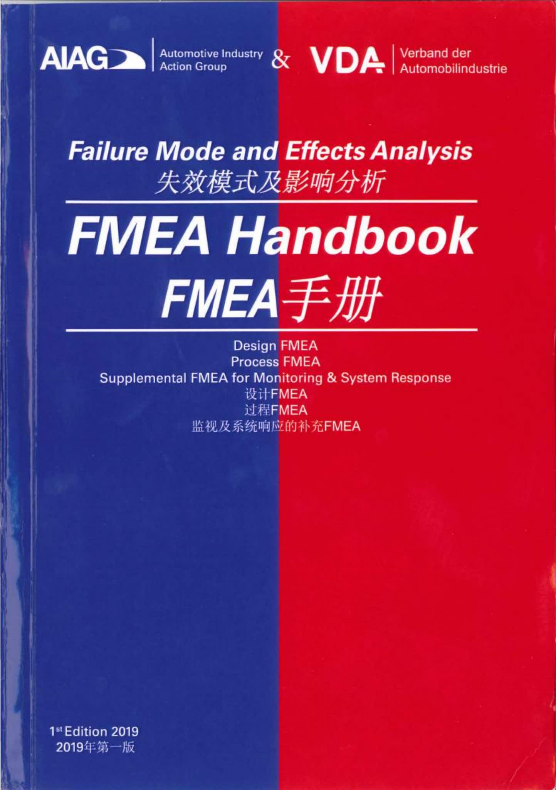
``
AIAG~I 10。＄言心~dustry & VDA 芦言。~bi ~~ustri I-7-l_
___- Failure Mode and Effects Analysis
失效模式及影响分析
raj'J/才＼ Handbook
FMEA手册 Design FMEA
Process FMEA
Supplemental FMEA for Monitoring & System Response
设计 MEA
过程 MEA
监视及系统响 的补充FMEA '!l.
I `
1st Edition 2019
2019 年第
I
,'
,
第 2 / 239 页 展开/收起文字
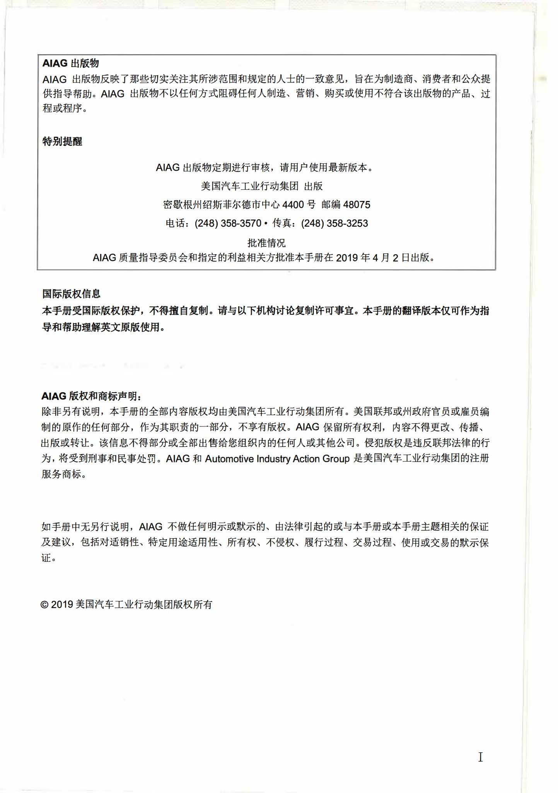
AIAG 出版物
AIAG出版物反映了那些切实关注其所涉范围和规定的人士的一致意见， 旨在为制造商、消费者和公众提
供指导帮助。 AIAG出版物不以任何方式阻碍任何人制造、营销、购买或使用不符合该出版物的产品、过
程或程序。
特别提醒
AIAG出版物定期进行审核， 请用户使用最新版本。
美国汽车工业行动集团出版
密歇根州绍斯菲尔德市中心 4400 号邮编 48075
电话： (248) 358-3570• 传真： (248) 358-3253
批准情况
AIAG 质量指导委员会和指定的利益相关方批准本手册在 2019 年 4 月 2 日出版。
国际版权信息
本手册受国际版权保护，不得擅自复制。请与以下机构讨论复制许可事宜。本手册的翻译版本仅可作为指
导和帮助理解英文原版使用。
AIAG 版权和商标声明：
除非另有说明， 本手册的全部内容版权均由美国汽车工业行动集团所有。 美国联邦或州政府官员或雇员编
制的原作的任何部分， 作为其职责的一部分， 不享有版权。 AIAG 保留所有权利， 内容不得更改、传播、
出版或转让。 该信息不得部分或全部出售给您组织内的任何人或其他公司。侵犯版权是违反联邦法律的行
为，将受到刑事和民事处罚。 AIAG 和 Automotive Industry Action Group 是美国汽车工业行动集团的注册
服务商标。
如手册中无另行说明， AIAG 不做任何明示或默示的、由法律引起的或与本手册或本手册主题相关的保证
及建议， 包括对适销性、特定用途适用性、所有权、不侵权、履行过程、交易过程、使用或交易的默示保
证。
©2019 美国汽车工业行动集团版权所有
I
第 3 / 239 页 展开/收起文字
VDAQMC 版权和商标声
本出版物（包括其所有部分） 版权保护 未经 VD QMC 德国汽车工业联合会质址管理中心）同意，
任何超出版权法严格限制的使用－尤其是复制、翻译、制作成缩微胶片或在电子系统中存储或处理
是不允许的，并可能受到起诉
VOA 出版物提供的是 般性的使用建议 任何使用人都有 任确保在具体情况下正确使用该出版物
本卷 VOA 出版物考虑了出版时的最新技术。对 VOA 建议的实施并不向任何人免除其行为责任 在这方面，
每个人的行为都会有相应的风险 VOA 以及参与 VOA 建议的人员不承担任何责任
在使用 VOA 建议时如发现错误或可能出现的误解 请立即通知 VOA 以便纠正任何可能出现的错误
© VDA QMC 2019 版权所有
翻译
本出版物将出版其它语言版本 最新状态可向 AIAG VOA 询问。翻译基千正式英文版本
释：
由千国家和组织对于出版物的特定指南， AIAG & VOA FMEA 手册的中文版以不同的格式和布局出现。
本翻译：
本手册的中文翻译由 VDAQ 中国负 ，如果有任何改善的问题以及输入，请通过邮件
FMEA(@vdac ina com cn 联系我们
步的消息，请访问我们的官方网站： http //www vdachina com cn 和我们的官方微信：
II
第 4 / 239 页 展开/收起文字
剪言
AIAG & VDA FMEA手册是供汽车行业供应商使用的参考手册，用以 导其制作设计 FMEA、过程 FMEA
及监视及系统响应的补充 FMEA
本手册未对要求进行定义 其目的是阐明与 FMEA 制作 关的步骤、活动和工具。编者 尽力
AIAG & VDA FMEA 手册与 SAE J1739 标准保持一致。
相对 AIAG FMEA 手册和 VDA 卷手册的修订内容，请参 附录
本手册版权 AIAG VDA 所有 AIAG VDA 保留 有权
第 5 / 239 页 展开/收起文字
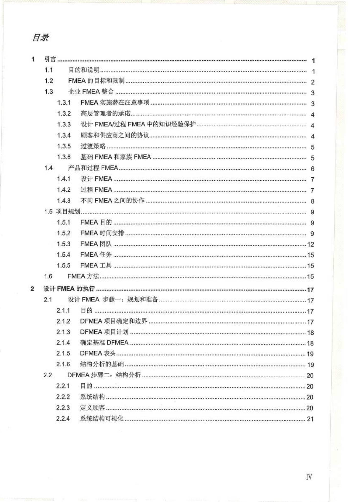
月采
言.. .............. .......................... ........................................................................................... ... ........... 1
1.1 目的和说明 ··· ··· ·· ·· ·· ······ ········--···· ---- ·· ·--··-- "'"' '"' "'" '""""'"' '" "' "'' ""'"' "" '''' ... ... .... .. .... 1
1.2 FMEA 的目 标和限制.. .... ..... .. .. .. .. .. .... .................................................................... ... .... 2
1.3 企业 FMEA 整合.... ... ........ ... ................ ..... ... ............ ........ ...... ...... ............. ...................... 3
1.3.1 FMEA 实施潜在注意事项... ..... ............ ............. .. .. ...... ............. .... .. ......... ............. .. .. 3
1.3.2 高层管理者的承诺···· ······ ···· ··· ·· ·· ··············· ······ ·· ·· ·· ····· ··· ······················.. ········4
1.3.3 设计 FMEN过程 FMEA 的知识经验保护....... ... ....... .. .. …........ …........................... 4
1.3.4 顾客和供应商之间的协议.. ...... ... .. ............. ...... ........ .... .... ......... .......... ...... ................ 4
1.3.5 过渡策略 ···· ···· ·· ··· ··· ········ ·· ·········· ·· ···· ·· ·················· ·········· ··· ·· ············ ·········"·· ·····5
1.3.6 基础 FMEA 和家族 FM EA .................................................................. .......... .. ............. 5
1.4 产品和过程 FM EA... .. .......................................................................................................... 6
1.4.1 设计 FMEA ....................................... ........................................................................... 7
1.4.2 过程 FMEA .................................................. ................................................................ 7
1.4.3 不同 FM EA 之间的协作.......... .. .. .. .. .. ........ .......... ............. ..... ............... ... .... ............... 8
项目规划 ········ ·· ········· ··· ········· ··············· ··· ········ ···· ···· ··· ···· ······· ·· ··· ········ ··· ····· ·· ·· ····· ·· ··· ·····
1.5.1 FMEA 目的.. ... ... ..... .... .. ... .. ......... .. .. .......... .. ..................................... .. ........ .. .. .... 9
1.5.2 FMEA 时间安排. ....... ..... .. ........ .. ... .............. .. .. .. ...... .. ........... .. .. .... ... .. ... ............. 9
1.5.3 FMEA 团队.. ..... .. ..... .. .. ...... .. .. .. ..... .. ..... ............ .... ........ .. .... ........ ...................... 12
1.5.4 FMEA 任务 .......... .. ... ...... ... ... .. .......... ................ .. .. ....... ..... ................ .. .. .............. 15
1.5.5 FMEA 工具 ... .... .... ..... .. ... .. .. ...... .. ........... ... ......... ............ ......... ....... ... ....... .. ... ........ 15
1.6 FMEA 方法.............. ...................... ... ......... ... ... ..................... ........ ... ........ ................ .. .. .. 15
2 设计 FMEA 的执行................................. …............................................................ …............. …......... 17
2.1 设计 FMEA 步骤一：规划和准备......... ............. .. ............. ..... .. ... ........... .... ... ... ... .. .. .. .. 17
2.1 .1 目的.... ..... .. ..... .. ............. ..... .. .. ... ... ..... .. .. ... ......... .. .............. .. ..... .. ... ... .... .. ......... 17
2.1.2 DFMEA 项目确定和边界...... .. .. ... ....... ................... .... ..... .. .............................. ... ...... 17
2.1.3 DFMEA 项目计划...... .............. ... ..... ... .. ..... ... .... ... ...... .. .......... .. .......... ... ... ...... .. ...... .... 18
2.1.4 确定基准 DFMEA ........................................................................................................ 18
2.1.5 DFMEA 表头. .. ... ..... ....... ................ ..... ..... ..... ........ .. .. ......... ........ .. ...... ..... ...... .. .. ..... 19
2.1 .6 结构分析的基础..................... ......... .......... ... .............. ......... .... ................. ............ .... 19
2.2 DFMEA 步骤二：结构分析......... .... ...... ...... ....... .... .. .. ..... .. ........ ......... .. ... ....... .. ..... .... 20
2.2.1 目的...................... ............... .. .. .. .... .. .. ...... .. ....... ... ....... ....... ..... ........ ............... .. .... .. 20
2.2.2 系统结构.. ........ ... ... .. ....... .. .. .......... ....... ... ..... .... .... .. .... .... ........ .... ..... ... .... 20
2.2.3 定义顾客············· ···· ·· ········ ·· ··· ·· ···· ··············· ··· ··· ·· ··· ·· ·· ··············· ···· ·· ··· ·.. ......... ... ... 20
2.2.4 系统结构可视化......... .... ....... .. .... ....... ...... .... ......... .............. ... ...................... .. ..... ... 21
IV
第 6 / 239 页 展开/收起文字
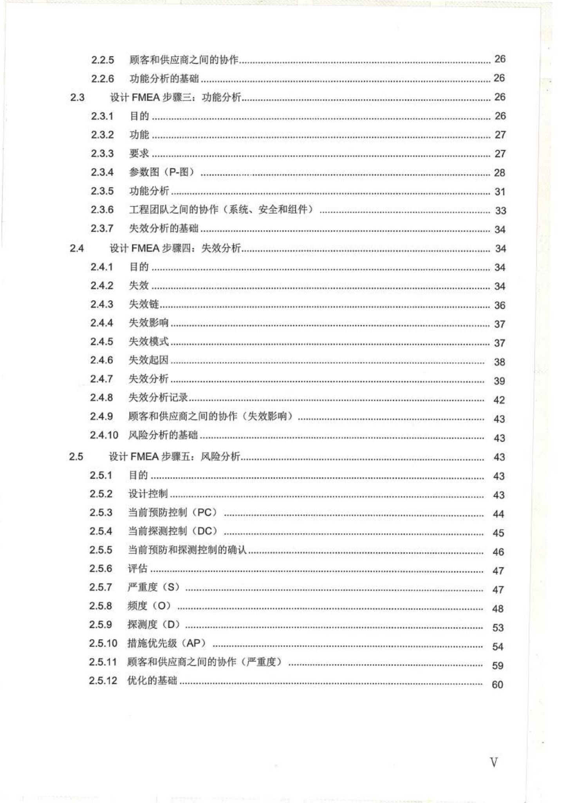
2.2.5 顾客和供应商之间的协作.................................................................................. .... ...... 26
2.2.6 功能分析的基础，. ... ....... .... ..... ... ......... ................... .. ... .. .. .... ............. .. ... ............ ... 26
2.3 设计 FMEA 步骤 ：功能分析． ．．．． ．．． ．．． . ..........,................….. ................. … 26
2.3.1 目的................. .. ..................... ... ......... ............ ............. .. .................. .. ........ ....... ..... 26
2.3.2 功能， ... ... ... ... .. .... ...... ... ... ..... .... ......... .. ... ... .. .. ............ ..... .. ... ..... ..... .. ..... ... ... ... 27
2.3.3 要求........................... .......... .... ... ... ... ...... ... ............. ... .......... ..... .. .... ....... ... 27
2.3.4 参数图 (P- 图） ........................................................................................................... 28
2.3.5 功能分析.......... ..... .. ..... .. .. .. .... .......... .... ... .......... .. .. .. ...... .. .......... .. ..... .. .. .... .. .. 31
2.3.6 工程团队之间的协作（系统、安全和组件） .......... …........... …............... ..................... 33
2.3.7 失效分析的基础， .. ......... .. ... ..... .. ... .... ..... ....... .. ............ ... .. .... .. .. .. .. ... ...................... 34
2.4 设计 FMEA 步骤四：失效分析........................................... ... ...... ..... .... ... .............. .. ...... .. 34
2.4.1 目的 .... .. .. .. ...... .......... .. .... ....... .. ... .. .... ...... .. .... .... .................... .. ... ....... ... ..... .. .. ....... 34
2.4.2 失效 ............. ...... .... ... ... .... ...... ... .. .. .... ....... .... .. ... ......... ... ..... .. ..... ........ ...... .. 34
2.4.3 失效链....... ..... .. .... .... ... .. .. .... ....... .. ................. ...... ...... ..... ... ..... ... .. .. ..... .. .. ... ..... 36
2.4.4 失效影响. ......... ... ... .... .. ... .. .............................. .. ...... .. .... .. .. ......... ..... .................. 37
2.4.5 失效模式 .............. .. .... .. ........... .... .. .. .. ........... .. ......... .. ............ .. ............... .. ......... .. .. ... 37
2.4.6 失效起因································· ········ ····· "" '········· ········ ·· ··· ·············· ··· ··· ··· ···· ···· 38
2.4.7 失效分析 ·····.. ···········"·····.............. ............................................................................ 39
2.4.8 失效分析记录，..... .. .. .. ... ..... .. ....... .. ....... .. .... ...... ... .... ... .......... ....... ..... ... .. 42
2.4.9 顾客和供应商之间的协作（失效影响） ..... …................................. …......................... 43
2.4.10 风险分析的基础····· ········ ···· ··· ······· ·· ·· ············ ··· ·· ········ ·· ··· ······ ··· ·· ·" ······ ·········· 43
2.5 设计 FMEA 骤五：风险分析... ..... ..... .. ..... .... .. .. ... .. .. .. ... ... ............. .... ....................... .. .. .. 43
2.5.1 目的 .... .......... ... .. ................. .. ........... ....................... .. .................................. ... .. ..... 43
2.5.2 设计控制 ..... ...... ....... .. .. .. ... .. ........................... .. ............ .. ... ............. ...... ... ....... .. 43
2.5.3 当前预防控制 PC ....................................... ............. ............................................ 44
2.5.4 当前探测控制 (DC) .. .................................... ....... ................................................... 45
2.5.5 当前预防和探测控制的确认.... .. .. ...... .... .... .... ..... ....... .. ........ ... ...... ........ ... .... ........... 46
2.5.6 评估........................................... .. ..... .... .. ....... .... .. .. ... .. ... ....... .. .. .... ............................. 47
2.5.7 严重度 ........ ........... ........ ...... .. .................... .................. .............. ............ .. ......... 47
2.5.8 频度 ................................................................................................................. 48
2.5.9 探测度 ·· ·· ·.. ........ .... .................. ......... ... ... .. .... .... ....... ......... .. ..... ... ........ ........ 53
2.5.10 措施优先级 AP .............. ............................................ .. ... ..................................... 54
2.5.11 顾客和供应商之间的协作（严重度）．． ．．． .. ... .. ... ... ...... .. …................. …................ .. 59
2.5.12 优化的基础，.. ... ..... ... ... .... .. ......... ............ ..... ..... .. .. ... ..... ................ ..... .. ....... ......... 60
v
第 7 / 239 页 展开/收起文字
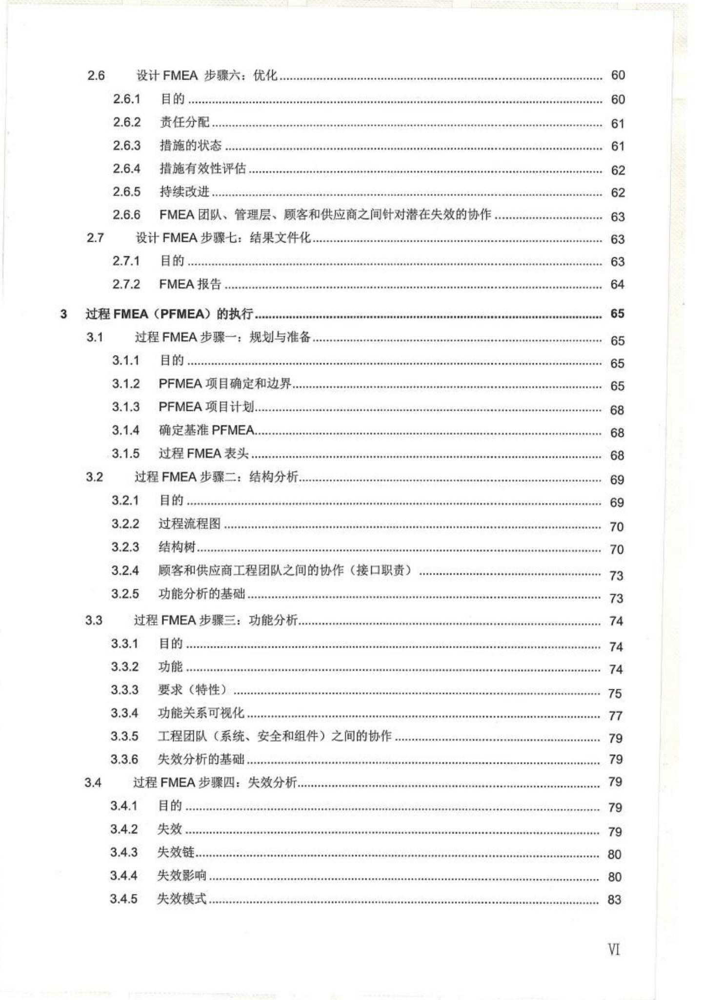
2.6 设计 FMEA 步骤六：优化 ...... ... ... ... .. ...... ............ .. ... .... ..... .. ... .. ...... ....... .. .... 60
2.6.1 目的 ·· ·· ··· ········ ····· ····· ·· ·· ······ ··"····"· ········ "· ··"' ·· ·· ··· ·· ···· ·"· ·· ·· ·· ··· ··· ···"· ·· 60
2.6.2 责任分配 .. .. .. .. ... .. ...... .. .... ...... .... ........ ..... .. ...... ... ....... ... ...... .. .. ..... .. ... .. ....... ..... 61
2.6.3 措施的状态 .... .... ... .. ... .. ... .. .... ......... .. .... .... ....... .. .. .... .. .. ........ .. ...... ..... .. .. 61
2.6.4 措施有效性评估 ····· ····· ·· ·· ······ ····· ·· ·· ···· ········· ·· ···· ······· ········ ·············· ··· ···· ·· ·· ··62
2.6.5 持续改进 ·············· ··· ··········· ·· ·········· ··· ····· ··· ······ ··· ·· ·· ··· ·· ·· ·· ··· ·· ··· ··· ····· ·· ·····62
2.6.6 FMEA 团队、管理层、顾客和供应商之间针对潜在失效的协作 …. ….... ................. 63
2.7 设计 FMEA 步骤七：结果文件化··· ·· ······ ·· ··· .. -.............................. ................... …. ......... 63
2.7.1 目的.. .... .. ... .... ......... .... ........ ... .. .. .......... ..... ..... ..... .... .. .... ... ........ .. .. ..... ........... ... 63
2.7.2 FMEA 报告. ... .. ... .. ... .. .. ...... ...... .... ... ... ....... .... ... ..... ... .. .. .... .. .... .. .. ..... ... .... 64
3 过程 FMEA (PFMEA) 的执行…………·· ··· ….... …... …….............................. …………………... ……….. 65
3.1 FMEA 步骤一：规划与准备....... ....... .... .. ....... .. .......... .. .. ...... ..... ...... .. .. 65
3.1.1 目的. ... ..... .... .... .. .. ... .. ... .. .. ... ...... .. ............ .... ... ... ... ... .... ... .. ... .. .. ... ...... ..... 65
3.1.2 PFMEA 项目确定和边界..... ..... ... …..................................................................... .. ... 65
3.1.3 PFMEA 项目计划.... .. .. ... .. ... .... .... .. .. .... .. .. .. .. ......... .... ......... ... ... .... ... .. ... ..... 68
3.1.4 确定基准 PFMEA.................................. ............... ......................... .......................... ... 68
3.1.5 过程 FMEA 表头 ·········· ·· ··· ·········· ·· ·· ·· ·· ··· ·· ·· ·· ··· ·· ·· ·· ··············· ····· ·· ···68
3.2 过程 FMEA 步骤 结构分析. .. ...... …….... …..... …...... …......................... …................... 69
3.2.1 目的......... ..... ............. ... .. .. ....... ... ... ... .. ..... ....... ...... .. .. .. ... ..... ... ... .... .... .. .... 69
3.2.2 过程流程图， ····· ·· ··· ·· ····· ··· ····· ··· ·· ·· ·· ·· ·· ·········· ··········· ··· ··················· ·· ··· ·· ··· ·· ·· 70
3.2.3 结构树. ... .. .. .... .... ..... ... ... .......... ... .... .. ............ ... .. ... .. .. ..... ... .. .. ... ..... .... ....... .. 70
3.2.4 顾客和供应商工程团队之间的协作（接口职责） ．… …… .. ….. ……... ………......... ……..... 73
3.2.5 功能分析的基础 ·· ··· ·· ··· ··· ···· ···· ······ ·· ··· ····· ···· ·· ·· ··· ·· ·· ·· ··· ·· ····· ·· ·· ·· ··· ·· ·· ··· 73
3.3 过程 FMEA 步骤三：功能分析··· ··· ··· ·· ····· ··· ···· ·· ···· ·· ·· ··· ·· ····· "" ························74
3.3.1 目的..... .. ... .. .. .. .... .. .... .. ... ... ...... .. .. ......... .. .. .. .... .. .. .... ....... .... .... .. ... ....... ... ..... 74
3.3.2 功能······ ·········· ········· ·· ···· .. ... .. ...... .... ... ... .......... .. ....... ........... .... .. .. .. ..... ... ... .... 74
3.3.3 要求（特性） ······ ··· ··· ···· ·· ·· ··· ············ ··· ····· ··· ···· ··· ····· ················· ········ ·75
3.3.4 功能关系可视化 ··· ··· ·· ··· ·· ·· ··· ······ ·· ····· ·· ···· ·· ···· ·· ··· ··· ··· ·· ·· ···· ···· ········ ···· ······· 77
3.3.5 工程团队（系统、安全和组件）之间的协作..... .. ... ..... .... ... ... …............ …........ 79
3.3.6 失效分析的基础 ······ ·· ·· ··· ··· ·· ·· ··· ···· ············· ·· ·· ·· ·· ···· ····· ······· ······ ·· ········ ·· ·········79
3.4 过程 FMEA 步骤四：失效分析.... .... .... ... .. .. …······················ …........................ …......... 79
3.4.1 目的 ..... ...... ....... ..... ......... ....... .. ... ... .. .... ...... ... ....... .. .. ... .. ...... .. ... .. .. ... .... .. .. ... 79
3.4.2 失效......... .. .. .. .. ..... ... .. .. ..... ... .. .. ... .... ...... ... ...... .... ... .... .. ..... .. .. ... ... .. .. .. ..... .. 79
3.4.3 失效链 ······ ·· ···· •··• ·" •· ···· ····"··· ·· ······· "·· ···············"······· ··· ·· ·· ···· ·· "" ······80
3.4.4 失效影响 ... .... .. .. .. .. .. .. .. ...... ...... .. ..... ...... ... ..... .. .. .. ............. ....... ............ .. ..... 80
3.4.5 失效模式·· ·· ··· ···· ·· ·· ····· ·· ·· ·· ··· ·· ·· ··· ··· ··· ··· ··· ·· ·· ······· ··· ········ …......... …........... 83
VI
第 8 / 239 页 展开/收起文字
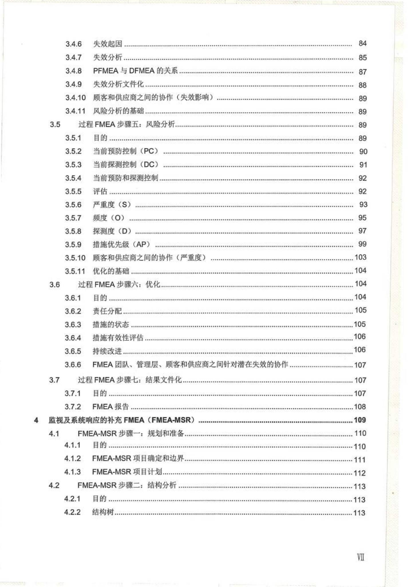
3.4.6 失效起 ··· ·· ·· ·· ···· ····· ·· ·· ···· ··· ·· ··· ···· ·· ·· ··· ··" ·········· ·· ··· ······ ········ ··· "······· ······ ··84
3.4.7 失效分析........ .. .. ...... ..... .... ......... .. ...... ........................... ..... .............. .......... ....... .. 85
3.4.8 PFMEA DFMEA 关系. ...... ........ ....... ... ............ .. ... ..... ...... ... ......... .. ... .. .... ..... 87
3.4.9 失效分析文件化 .. ... .......... ... ......... ...... .............. ... ... .. .......... ....... .... ........... .. .. 88
3.4.10 顾客和供应商之间的协作（失效影响） ...... ….................................. ….. ….................. 89
3.4.11 风险分析的基础 ·· ······ ····· ·· ··· ·· ···· ···· ·· ···· ·· ···· ·· ··· ···· ·· ······ ····· ··· ·· ····· ······ ·· ·· 89
3.5 过程 FM EA 步骤五 风险分析.. .... .... ........ .. .. .. …............ ….......... …....... ….. …....... …........ 89
3.5.1 目的.......... ..... ....... .. .... ...... .... .. .. ...... ... ...... .. ... .. .. ..... .. ..... ............ ... ............... 89
3.5.2 当前预防控制 PC .......................................................... ..................................... . 90
3.5.3 当前探测控制 DC .. ................... ....... .............. ................ .. ................... ................ . 91
3.5.4 当前预防和探测控制 .... ....... ....... ......... .. .... ... ...... .......... .......... ... ... .. .. .... ... 92
3.5.5 评估 ·· ··· ···· ·· ········· ·· ·········· ·· ······ ·· ·· ·· ··· "·· ·· ··· ······ ·· ··· ·· ··· ····· ······· ···· ·· ··· ··· ······92
3.5.6 严重度 CS) ........... ................ ................................... .. .............................................. 93
3.5.7 频度 0) .. ...... .. .. ......................... ... ...... ............. ........... ................. ..... .. ........ .. ... ...... 95
3.5.8 探测度 (D) ........................................... .................................................................. . 97
3.5.9 措施优先级 CA .................................................................................................... 99
3.5.10 顾客和供应商之间的协作（严重度）．．．．．….. ..... ..... .. …............................................. 103
3.5.11 优化的基础····· ·· ·· ·· ···· ·· ·· ··· ··· ··· ········ ···.... .. .... .. ..... ... ....... .. .......... ..... ........ 104
3.6 过程 FMEA 步骤六：优化 ... .. ... .. ... ... ...... .... ... ......... .. ...... ........... ........ ....... .... .. .. .. 104
::::: :: 分配 ~~: 3.6.3 措施 的状
3.6.4 措施有效性评估 . .
105
106
3.6.5 持续改进 ···· ···· ········ ·· ······ ·· ··· ··· ·· ······ ·· ··· ··· ·· ···· ··· ··· ···· ······ ·· ··· ··.. ·················106
3.6.6 FMEA 团队、管理层、顾客和供应商之间针对潜在失效的协作................ .... ..... .. .. 107
3.7 过程 FMEA 步骤七：结果文件化 .. .. .. .. ... ... ... …............... …...... …................................... 107
3.7.1 目的······ ······· ·· ··· ··· ···· ··· ····· ·· ············· ···· ········.. ······... ········....................................... 107
3.7.2 FMEA .. .. ...... ... ......... ... .. .. ................... .... ... ... .. .. ....... ........... ... ... .. ... .. .. ...... .. 108
4 监视及系统响应的补充 FMEA (FMEA-MSR) .. …………........ …....... ………·…………………......... …….109
4.1 FMEA-MSR 步骤一：规划和准备........... .. .. ..... .... ... .......... .... ........ .. ... ............ .. ........... 110
4.1.1 目的... ..... ......... .... ... .. ............ ..... ... ... ... .. ..... .. ... ...... ... ... ... .... .... .... .... .... ... .... .. 110
4.1.2 FMEA-MSR 项目确定和边界............. ...... ... ...... .... ..... .. .. ..... .. ... ... ... .. ... ...... .... ... 111
4.1.3 FMEA-MSR 项目计划.... .. .. ........ ... .... .. .. ....... ... ... .............. .. ..... .. .. ..... ... .. .. .... .. ........ 112
4.2 FMEA-MSR 步骤 ：结构分析.. ....... ....... .. ... ... .... ........... .. .. ... .. .. ..... ..... ...... .......... 113
4.2.1 目的. ....... ... .. ..... .... .... .............. ... .... .. .. .............. .. ... ..... .. .... ... ..... .... ... ... .. ....... 113
4.2.2 结构树. ...... ... .. ... ........... .. .. ......... ... .. .... .. ...... .. .. .. ... ... .... ... .... .. ............. .... ... .... 113
Vll
第 9 / 239 页 展开/收起文字
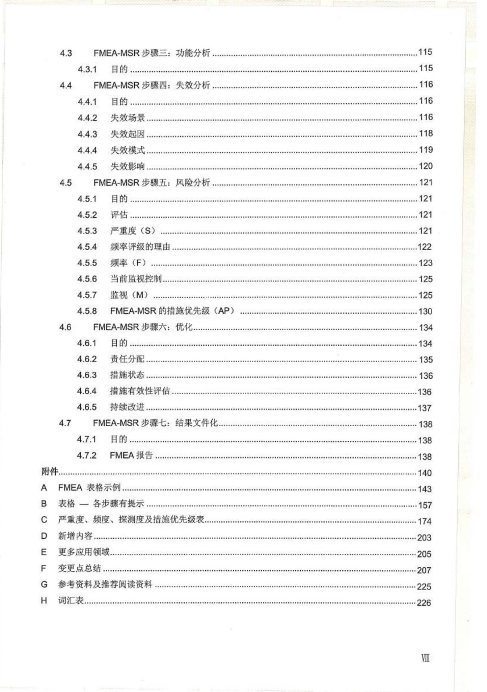
4.3 FMEA-MSR 步骤 ：功能分析. ........ .. ... ... …..................................... …............. ......... 115
4.3.1 目的 ·· ·· ··· ·· ···· ··· ·· ··· ·· ·· ··· ···"· ··· ··· ········· ·· ·· ·· ··· ··· ··· ···· ···· ·· ··· ·· ··· ·· 115
4.4 FMEA-MSR 步骤四：失 分析 ..... ... .. ... .. ….............................. ........................ ….. 11 6
4.4.1 目的 ·· ······ ·· ·· ·· ·· ····· ··· ·· .. ·················· ··· ·· ······· ····· ······ ······················ ·· ·· ······· 116
4.4.2 失效场景 .. .. .... .... ....... .. .. ... .. .. ......... .. ... ... ... ... .. ... .. .... .. .. ... .. .. .. ... .. 116
4.4.3 效起因 ··· ··· ···· ·· ··· ·· ·· ·· ·· ·· ·· ·· ··· ·· ·· ····· ·· ·· .. ·· ··· ····· ···· ················ ················11 8
4.4.4 失效模式 .. ..... ... .. .. .. .. ... ... .. ... .. ... ... .. ... .... .. ... .. ...... ....... .... 119
4.4.5 效影响 ··· ·· ·· ·· ·· ····· ·· ·· ·· ······ ·· ··· ····· ·· ··· ·· ··· ··· ·· ·· ·· ·· ·· ··· ·· ···· ·· 120
4.5 EA MSR 步骤五：风险分析 ... .. .. ....... .. ….... ....... .. .......... ...... ............. ...... ... ........... . 121
4.5.1 目的 ·· ·· ·· ··· ·· ·· ·· ··· ······· ·· ·· ····· ·· ·· ······· ··· ·· ·· ····· ·· ·· ··· ··· ·· ·· ·· ··· 121
4.5.2 评估 .. .. .. .. .. .. .. .. .... .. ... ... ... .. ..... ... .. ... .. .. ....... .. ... ... 121
4.5.3 严重度 .. ................ ........... ....................... ...................................... ............. ....... 121
4.5.4 率评级的理由 ····· ·· ·· ···· ·· ··· ·· ···· ··· ···· ·· ······ ··· ·· ·· ·· ·· ··· ·· ·· 22
4.5.5 频率 .................... .................... ...... ... .... ............. ..... ................ ........................... 123
4.5.6 当前监视控制· .. ·········... ················· ···························...................................... 125
4.5.7 监视 (M ... ................... ........ .......... ................ ............ ............................................. 125
4.5.8 FMEA MSR 的措施优先级 AP ......... …....................................... ……........... ….. ... 130
4.6 EA-M SR 步骤 优化 .. .. ... .. .. .. ..... .. .. ... .. ... .. ... ... .. ...... .. .. .. .. 134
4.6.1 目的 ·· ···· ·· ··· ·· ·· ·· ······ ·· ···· ·· ·· ·· ··· ··· ····· ··· ·· ··· ·· ··· ···· ··
4.6.2 责任分配 .... .. ... ... .. ... .. .. .. .. .. ...... ...... .. .. .. .. .... ..... ... ... .. .. .. .. 135
4.6.3 措施状态... .. .. .... ... ... ... ... ..... .. .... .. .... .. .... .. ... .. .. .. .. .. .... ..... .. .. 136
4.6.4 措施有效 ······ ·· ·· ·· ·· ··· ·· ·· ·· ·· ·· ·· ·· ·· ·· ·· ·· ·· ·· ··· ··· 36
4.6.5 持续改进····· ·· ···· ·· ··· ·· ··· ·· ·· ·· ··· ·· ···· ··· ·· ··· ···· ···· .. ····· ··· .. · · ·· · ·· ··· ·· ··· .. ···· ········ ···· 137
4.7 FMEA MSR 步骤七 结果文件化 .. ... .. .. .. .. .. .. .. .. .. ... .. ... …........... .. .. ........ …. .. ...... 138
4.7.1 目的 ·· ·· ·· ······ ·· ·· ·· ··· ··· ···· ···· ·· ·· ·· .. ········· ··· ················· ······· ················ 138
4.7.2 FMEA .. .. .. .. .. .... .. .. ..... .. ...... ... ........ .. .. .. .. .. .... ... .. .. .. .. ..... 138
·· ··· ······· ·· ·· ·· ·· ··· ··· ··· ·· ·· ·· ·· ·· ····· ·· ·· ······· ·· ··· ···· ··· ··· ·· ··· ·· ··· ·· ·· ·· ······ ·· ·· 140
A FMEA 表格示例 .... .. .. .. ... .. ... .... .. .. ... ... .. ....... .... .... ... .. ... .. .. .. .... .. ... .. ... .. 143
B 各步骤有提示 ··· ·· ··· ··· ·· ··· ·· ·· ··· ·· ··· ·· ···· ··· ··· ···· ·· ·· ·· .. ···································• 157
C 严重度、频 、探测度及措施优先级 ．…·…·· ·· ·· …................ ············ ··· ···················· ····················174
D 新增内 ... ... .. .. .. ...... .. ... .. .. ... .. ... .. ........ .. .. .. .. ... .. .. .. ..... ... ...... .. .. .. ... 203
E 更多应用领域······· ·· ·· ·· ···· ··· ·· ···· ··· ·· ····· ····· .. .. .. .. .. ... .... .. .. ...... .. .. ... ... ...... 205
F 变更点总结 ··· ·· ···· ···· ·· ··· ·· ·· ···· ·· ·· .. · ·· · · ····· ·· · ·· ······ · · · ... ······· ·· ····· ···· ······· ················· ·················207
G 考资料及推荐阅读资料· ·· ··· ·· ···· ·· ··· ···· ···· ··· ··· ·· ·· ···· ·· ···· .. ·· ····· ··· ········· ··· ··........ ... 225
H 表· ·· ··· ····· ··.. · ··· · ·· · ·· · · ··· ··· .. · ·· · · · · · · · · ···· · ··· · · · · ... . .. . . . . . . . .... . ......... .. . .. .. . . . .... .. .. . ... . ..... . ..... 226
第 10 / 239 页 展开/收起文字
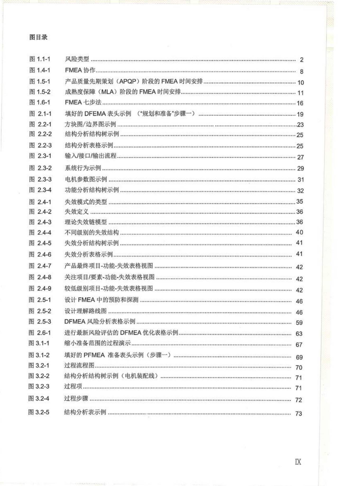
图目录
1.1-1 风险类型.. .. .... ........... .. .. ... ... ... .......... .. ......... .. ..... ......... ... .... .... .. .. ... ....... .. .... .... ... 2
1.4-1 FMEA 协作 ··· ···· ··· ·· ..... .... .. .. .............. .. .. .. .. .. .. .... .... .. ...... ... ... .. ... ... ..... .. .. ... ... ... 8
1.5-1 产品质量先期策划 APQP 阶段的 FMEA 时间安排， ….. …... ……….... …·…....... ……· 10
1.5-2 成熟度保障 MLA 阶段的 FMEA 时间安排 ….. .. …............................... ….... …....... …....... 11
1.6-1 FMEA 七步法.... .... .. .... .. .. ... ......... .. .. .. .. .... .. .. ... .. .. .. ... ................ ... .. ... .. ........ .. ... ..... 16
2.1 填好的 DFEMA 表头示例 ("规划和准备＂步骤一） ．．… .... …..... ….... …............. ….... ….. ..... 19
2-1 方块图／边界阳示例 ....... ...... ..... ....... ..... ... .... ... ..... ... ..... .. .... .. ... ....... .. .. .. ...... 23
2-2 结构分析结构树示例....... ......... .... .. ... ... ... ... .. .... ..... .. .. .. .... ... ... ........ .. .... .... .. .. 25
2-3 结构分析表格示例· ·· ··· ··· ····· ······ ·· ···· ·· ········· ············· .. ···············································.. ······· 25
3-1 输入 接口 输出流程 ····· ··· ··· ··· ·· ····· ·· ·· ······ ·· ·.. ························································ 27
2.3-2 系统行为示例. .. ...... ...... .. ...... .. .. .. .. .... .. .... .. .. ... .. .. .. .. .. ..... .. ... .. ...... .. .. ... .. ..... 29
3-3 电机参数图示例 ．． ．． ．．． ．．． ．． ．．．． ．．． ．．．．．．．．．．．．．．．．． ............. ..... .. ..... .. .......... ... .... .... ..... .. 31
2. -4 功能分析结构树示例 ···· ····· ·· ········ ··· ······ ·· ·· ···· ·· ······· ··· ····· ·· ····· ···· ·· ·· ··· ··· ·· ·· 32
2.4-1 失效模式的类型. ... .. .. .. .. ... ... .... .. ... ....... .......... ... ... .. .. .. ... .... .. .. ..... ... .. .. .. .. .... 35
2.4-2 失效定义 ，··· ·· ··· ··· ·· ·· ···· ·· ··· ·· ··.. ······································· ··· ··········· ······················· ········36
2.4-3 理论失效链模型 ..... .. ......... .... .. ..... ... .. .. .... .. .... ... .. .. .. .. .. .. .. ... ... .. ... ..... .... .. .. ...... .. ... ... .. 36
2.4-4 不同级别的失效结构 ..... .. ... ... .... .. .... ................. .. ......... .. .... ..... ..... .. ... .. ... .. .. ... ... 40
2.4-5 失效分析结构树示例... ..... ......... .... ….............................................................................. 41
2.4 失效分析表格示例.... ......... .. ..... .... .... ... .. .. ..... ..... .. ........... ... .. ... .. ...... .. .... .. .. .. .. ... ...... ..... 41
2.4-7 产品最终项目 功能 失效表格视图 .. .. .. ... ...... .. .... ....... .... .. .. …................. …......... …· ….... 42
2.4-8 关注项目／要素 功能 失效表格视困 ... ........ ...... .. .. .. .. ...... .. ... …...... ..................... 42
2.4-9 较低级别项目 功能 失效表格视图 ，· …. .. ............................................................................ 42
2.5-1 设计 FMEA 中的预防和探测.. .. ...... .. ... .... ........ .. .. ... ....... .. .. ..... .. .......... .. .... ... .. 46
2. 5-2 设计理解路线图 ..... .. .... ..... .. .. ... .. ............. …........... ..................................................... 46
5-3 DFMEA 风险分析表格示例. ..... .. ... ......... .. ... .. ...... .. ... .. .. ...... ... .. ... .. ... ... .... .... .. .. 59
6-1 进行最新风险评估的 DFMEA 优化表格示例，… .. .... …….. …….... ……·………………......... …... 63
1-1 缩小准备范围的过程演示.. .. ... ...... ... ... .. ........ ..... .. .. ..... ...... ... ..... .... ... ... …............... .. ...... 67
3.1-2 填好的 PFMEA 准备表头示例（步骤一） ......... ................ …….................. ….......... …....... 69
过程流程图 ··· ········ ···· ··· ··· ············ ·· ··· ·· ·· ······· ·· ······· ·· ·· ·· ·· ·· ··· ·· ·· ·· ····· ·· ··· ··.. ... .. 70
3.2-2 结构分析结构树示例（电机装配线） ................. ….................................. ……......... …........ 71
2-3 过程项 ... .. .. .... ... ... ........... ......... ...... .. ... ......... .. ... .. .. .. .. .. .. .... ......... .... ..... .. ... 71
3.2-4 过程步骤 ·· ·· ···· ······· ·· ·· ·· ··· ·· ·· ···· ··· ······· ·· ··· ···· ··· ···· ···· ··· ······ ·· ······· ·· ···· ·· ·· ·· ·· ···· ···72
3. -5 结构分析表示例· ····· ·· ··· ·· ·· ··· ·· ·· ·· ·· ·· ··· ·.. ···· ··· ······... ····.... ··········· ·· ·· ·· ······ ········· ·············73
IX
第 11 / 239 页 展开/收起文字
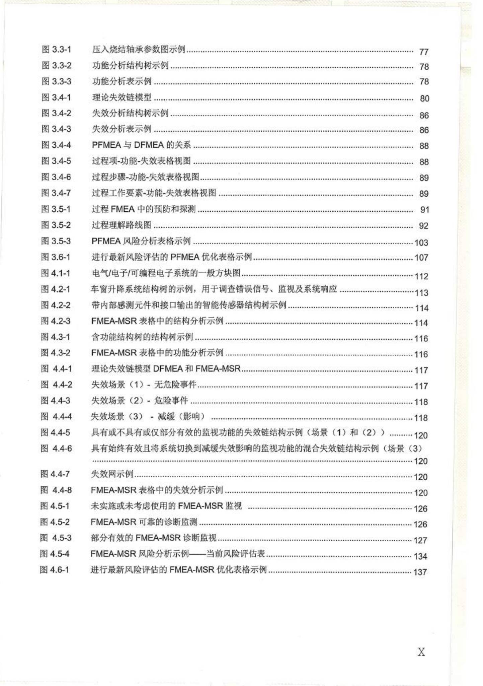
3-1 压入烧结轴承参数图示例 .. .. ...... ....... .. ... .. .. ................... .. ... ... ............. ... ....... ...... .... 77
3-2 功能分析结构树示例 ·· ·· ·· ·· ·· ······· ·· ··· ···· ·· ·· ···· ·· ···· ····· ··· ·· ·· ··· ···· ··· ··· ··· ·· 78
.3 -3 功能分析表示例 ············· ·· ······· ·· ···· ··· ·· ··" ···· ·· ·· ··········--· ·· ·· ·· ·· ·····--· ·· ·· ·· ·· --· 78
3.4-1 理论失效链模型 ... .... .. ... .. .. .......... .. ... ............. ... ..... ... ......... ...... ..... .. ... .. .......... 80
3.4-2 失效分析结构树示例 ··· ·· ·· ······· ···· ···· ·· ·· -- ·· ····· ·· ·· ·· ·· ·· ··· ····· ···· ···· ···· ·· ·· ·· ·· ···· ·· ··· ··· 86
3.4-3 失效分析表示例 ·· ·· ··· ·· ·· ··· ······ ·· ·· ···· ···· "··· ·· ·" ·· ·· "· ·· ·· ·· ······ ··· ·· ··· ···· ··· ····· ···· ··
3.4-4 PFMEA DFMEA 的关系 .. .. ...... ........ ... .... ........ ..... ... .. ... .. .. .... .. .. .. .. ... 88
3.4-5 过程项 功能 失效表格视图·· ··· ·· ··········.... ·······"" ······"•'"'·""··" "'·" " ' '"·""'" '··--............... 88
3.4-6 过程步骤 功能 失效表格视图 .... ... .. ... .. .. ......... .. .. .. ....... .. .. ...... .. .. ... ... ... .. .. ........... .. 89
3.4 过程工作要素 功能 失效表格视图.. ... .. ... .. ..... …········""……............... ….. …...................... 89
5-1 过程 FMEA 中的预防和探测 .. .... ..... ... ... ...... .... ......... ... ... ... .. ............. ... .. .. ... ... .. ... 91
5-2 过程理解路线图 .. .. .... ... ... ... .. .. .. .. ........ ...... ... .. .. .... ... .. ... .. ... ....... ... .. .... ... .. ..... .. 92
5-3 PFMEA 风险分析表格示例. ... ... .. ... ................ ....... .. ....... .. .... ...... .. .. .. ..... ... ... .. .. ... ... 103
-1 进行最新风险评估的 PFMEA 优化表格示例 ．．….. ...... .. ... .. .. ... .. .... …....... ….... …......... .. ….. 107
4.1 电气／电子 可编程电子系统的一般方块图······ ···· ··· ······ …...... ….......... …· …............. …······· 112
2-1 车窗升降系统结构树的示例，用于调查错误信号、监视及系统响应．．．．．．…...…..... ……·113
4.2-2 内部感测元件和接口输出的智能传感器结构树示例．．． ．．．．． .. ………...... …...... ….. …·· 114
4.2 FMEA-MSR 表格中的结构分析示例· ·· ·· ·· ······· ····· ·· ·· ·· ··· ·· ···· ··· ·· ······· ··· .. ·······.. ········· 114
3-1 含功能结构树的结构树示例 .. ... ...... .. .. .... .. .. ............... ..... .... .. .......... .. .. .... ... 116
3-2 FMEA-MSR 表格中的功能分析示例 .... ............ .... .... .. .. .. .. ... ... .. ... ... .. .. .. .. .... .... 116
4.4-1 理论失效链模型 DFMEA FMEA-MSR ....... ….................... .. .. ......... …..................... ....... 117
4.4-2 失效场景 (1) 无危险事件.. ... .. .. .. .. ....... .... .. .. .. ... ... ... .. ... .. .. ..... ... ..... ...... ... 117
4.4-3 失效场景 危险事件········· ···.. ····· ·· .... ·..... ................................................................ 118
4-4 失效场景 (3) 减缓（影响） ........................ ......... .. .................................................... 118
4.4-5 具有或不具 或仅部分有效的监视功能的失效链结构示例（场景 CZ)) .. ... ..... 120
.4 -6 具有始终有效且将系统切换到减缓失效影响的监视功能的混合失效链结构示例（场景
..... ................ .......... ... .. ...... ..... ... ........ .............. ........ ...... ......... .. .. .. ......... .. .......................... 120
4.4 失效网示例. ............... ...... ..... ............ .... .. .... .. .................. ... ... ...... .. .. ..... .. ..... .... ....... 120
4.4-8 FMEA-MSR 表格中的失效分析示例 .. ........ .... ... ............... ... …............ …........................ 120
4.5-1 未实施或未考虑使用的 FMEA-MSR 监视………….... ………............... ….... ...... …·…………·· 126
4.5-2 FMEA-MSR 可靠的诊断监测 .. ... ...... .. .. .. ... .... ................. ... ... .. .. ... .. .. ... ... .. ........... 126
.5-3 部分有效的 FMEA MSR 诊断监视. .. ............ .... .. .... .. ...... .. ... .. ...... …· …................... ..... 127
5-4 FMEA-MSR 风险分析示例 当前风险评估表……… .. …·……..... …......... ….. ……..... ……·· 134
6-1 进行最新风险评估的 FMEA-MSR 优化表格示例 ．…. .. ... .. .. .... ... .. .. ….. …. .......... …........ …... 137
x
第 12 / 239 页 展开/收起文字
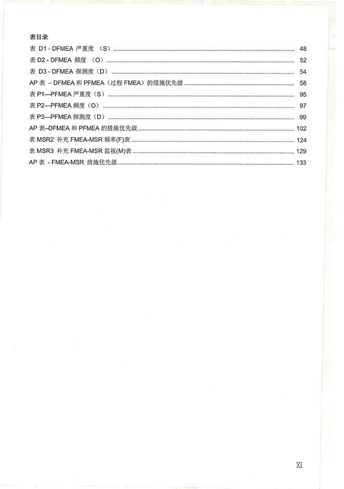
目录
D1-DFMEA 严重度 CS) .............................................................................................................. 48
D2-DFMEA 频度 ( 0 ) .................................................................................................................. 52
D3-DFMEA 探测度 ............................................................................................................... 54
AP -DFMEA PFMEA 过程 FMEA 的措施优先级，..…….... …………........... …... ……....... …·…….. 58
P1 PFMEA 严重度 ................................................................................................................. 95
P2 PFMEA 频度 .................................................................................................................... 97
P3-PFMEA 探测度 ............................................................................................................. .. .. 99
AP -DFMEA PFMEA 的措施优先级….... ... ........ ….................... ……............. …......................... ….... 102
SR2 FMEA-MSR 频率 F) ，.... .. .. .. .. .. ... .... .................. .......... .. ............. ........ ... .... .. ….. 124
SR3 衣卜充 FMEA-MSR 监视(M)表........ ..... ...... ... .... .. .. ......... .. ..... .... ..... ........ ........ ...... .... ....... 129
AP 表- FMEA-MSR 措施优先级，.. .. .. ................ ............... ….............. …............................................... 133
XI
第 13 / 239 页 展开/收起文字
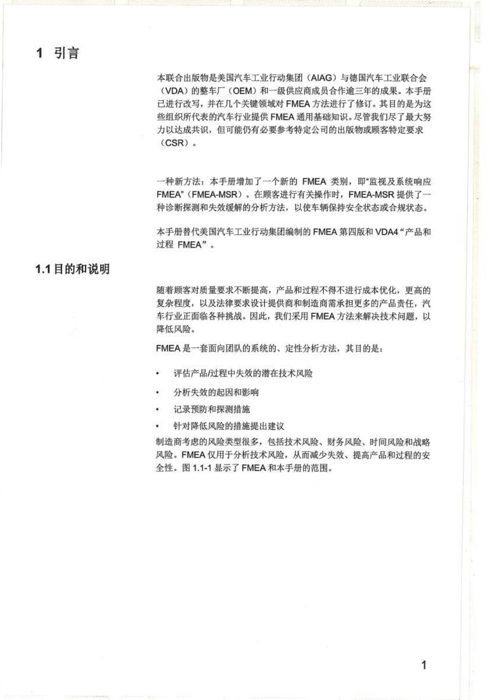
1 引言
本联合出版物是美国汽车工业行动集团 AIAG 与德国汽车工业联合会
VDA 的整车厂 OEM 级供应商成员合作逾三年的成果 本手册
已进行改写，并在几个关键领域对 FMEA 方法进行了修订。其目的是为这
些组织所代表的汽车行业提供 EA 通用基础知识 尽管我们尽了最大努
力以达成共识，但可能仍有必要参考特定公司的出版物或顾客特定要求
CSR
一种新方法 本手册增加了一个新的 FMEA 类别，即“监视及系统响应
FMEA" FMEA-MSR 。在顾客进行有关操作时， FMEA-M SR 提供了一
种诊断探测和失效缓解的分析方法，以使车辆保持安全状态或合规状态。
本手册替代美国汽车工业行动集团编制的 FMEA 第四版和 VDA4 产品和
过程 FMEA
目的和说明
随着顾客对质量要求不断提高，产品和过程不得不进行成本优化，更高的
复杂程度，以及法律要求设计提供商和制造商需承担更多的产品责任，汽
车行业正面临各种挑战。因此，我 采用 FMEA 方法来解决技术问题，以
降低风险。
FMEA 是一套面向团队的系统的、定性分析方法，其目的是：
评估产品 过程中失效的潜在技术风险
分析失效的起因和影响
记录预防和探测措施
针对降低风险的措施提出建议
制造商考虑的风险类型很多，包括技术风险、财务风险、时间风险和战略
风险。 FMEA 仅用千分析技术风险，从而减少失效、提高产品和过程的安
全性。图 1-1 显示了 FMEA 和本手册的范围。
1
第 14 / 239 页 展开/收起文字
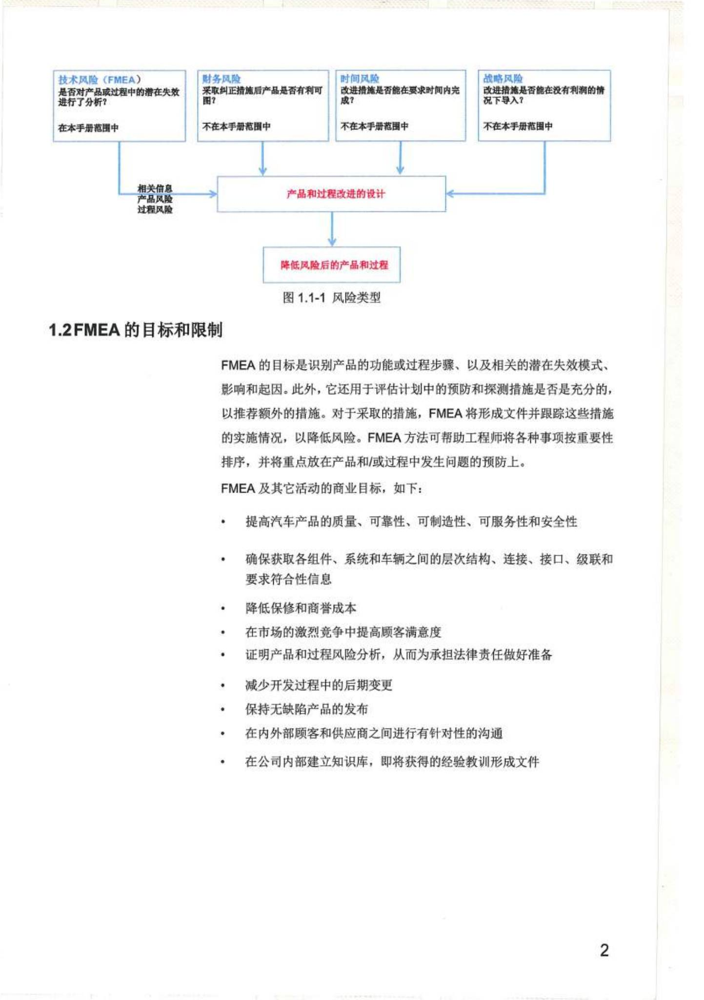
芦: 潜在失效 :: 归后产品是扛利可 11 ::::是否能妇碌时间内完 1=: 是否能在没有利润的情 进行了分析？ 图？ 成？ 况下导入？
产品和过程改进的设计
在本手册范围中 I 不在本手册范围中 11 不在本手册范围中 I 不在本手册范围中
降低风险后的产品和过程
1.1-1 风险类型
1.2FMEA 的目标和限制
FMEA 的目标是识别产品的功能或过程步骤、以及相关的潜在失效模式、
影响和起因。此外，它还用于评估计划中的预防和探测措施是否是充分的，
以推荐额外的措施。对千采取的措施， FMEA 将形成文件并跟踪这些措施
的实施情况，以降低风险。 FMEA 方法可帮助工程师将各种事项按重要性
排序，并将重点放在产品和 或过程中发生问题的预防上。
FMEA 及其它活动的商业目标，如下：
• 提高汽车产品的质量、可靠性、可制造性、可服务性和安全性
确保获取各组件、系统和车辆之间的层次结构、连接、接口、级联和
要求符合性信息
降低保修和商誉成本
在市场的激烈竞争中提高顾客满意度
证明产品和过程风险分析，从而为承担法律责任做好准备
减少开发过程中的后期变更
保持无缺陷产品的发布
• 在内外部顾客和供应商之间进行有针对性的沟通
在公司内部建立知识库，即将获得的经验教训形成文件
2
第 15 / 239 页 展开/收起文字
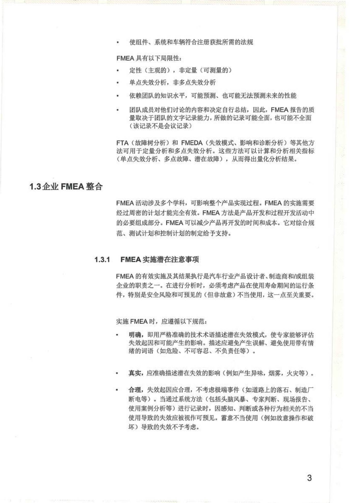
• 使组件、系统和车辆符合注册获批所需的法规
FMEA 具有以下局限性：
定性（主观的） 非定掀（可测扯的）
单点失效分析，非多点失效分析
依赖团队的知识水平 可能预测、 可能无法预测未来的性能
团队成员对他 讨论的内容和决定自行总结 因此 FMEA 报告的质
量取决于团队的文字记录能力，所做的记录可能全面，也可能不全面
（该记录不是会议记录）
FTA (故障树分析）和 FMEDA (失效模式 影响和诊断分析）等其他方
法可用于定最分析和多点失效分析。这些方法可以计算和分析相关指标
（单点失效分析、多点故障、潜在故障），从而得出最化分析结果。
企业 FMEA 整合
FMEA 活动涉及多个学科，可影响整个产品实现过程。 FMEA 的实施需要
经过周密的计划才能完全有效 FMEA 方法是产品开发和过程开发活动中
的必要组成部分 FMEA 可以减少产品再开发的时间和成本。它对综合规
范、测试计划和控制计划的制定给予支待。
1.3.1 ME 在注意事项
FMEA 的有效实施及其结果执行是汽车行业产品设计者、制造商和 或组装
的职责之一。 在进行分析时，必须考虑产品在使用寿命期间的运行条
特别是安全风险和可预见的（但非故意）不当使用，这 点至关重要。
实施 FMEA 时，应遵循以下规范：
明确 ，即用严格准确的技术术语描述潜在失效模式，使专家能够评估
失效起因和可能产生的影响 描述应避免产生误解、避免使用带有情
绪的词语（如危险、不可容忍、不负责任等）。
实，应准确描述潜在失效的影响（例如产生异味 烟雾 火灾等）。
，失效起因应合理不考虑极端事件（如道路上的落石、制造厂
断电等）。当通过系统方法（包括头脑风暴、专家判断、现场报告、
使用案例分析等）进行记录 ，因感知、判断或各种行为相关的不当
使用导致的失效应被视作可预见。蓄意不当使用（例如故意操作和破
坏）导致的失效不予考虑。
3
第 16 / 239 页 展开/收起文字
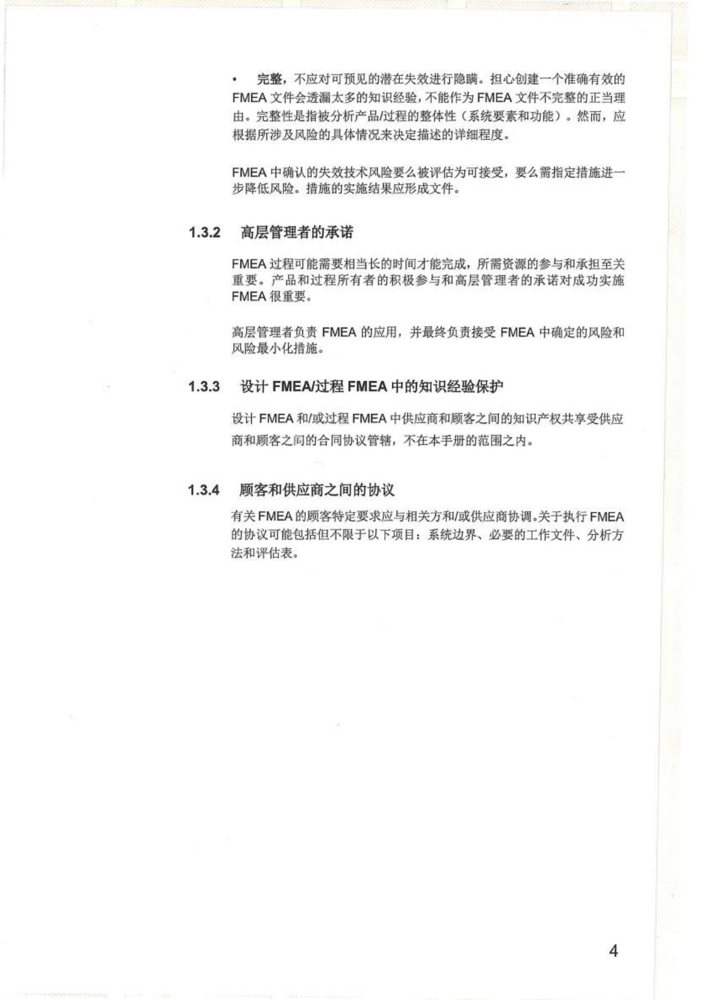
• 完整，不应对可预见的潜在失效进行隐瞒。担心创建一个准确有效的
FMEA 文件会透漏太多的知识经验，不能作为 FMEA 文件不完整的正当理
由。完整性是指被分析产品／过程的整体性（系统要素和功能）。然而，应
根据所涉及风险的具体情况来决定描述的详细程度。
FMEA 中确认的失效技术风险要么被评估为可接受，要么需指定措施进
步降低风险。措施的实施结果应形成文件。
1.3.2 高层管理者的承诺
FMEA 过程可能需要相当长的时间才能完成 所需资源的参与和承担至关
重要。产品和过程所有者的积极参与和高层管理者的承诺对成功实施
FMEA 很重要。
高层管理者负责 FMEA 的应用，并最终负责接受 FMEA 中确定的风险和
风险最 化措施。
1.3.3 设计 MEA/过程 中的知识经验保护
设计 FMEA 或过程 FMEA 中供应商和顾客之 的知识产权共享受供应
商和顾客之间的合同协议管辖 不在本手册的范围之内。
1.3.4 和供应商之间的协
有关 FMEA 的顾客特定要求应与相关方和 或供应商协调。关千执行 FMEA
的协议可能包括但不限千以下项目：系统边界、必要的工作文件、分析方
法和评估表。
4
第 17 / 239 页 展开/收起文字
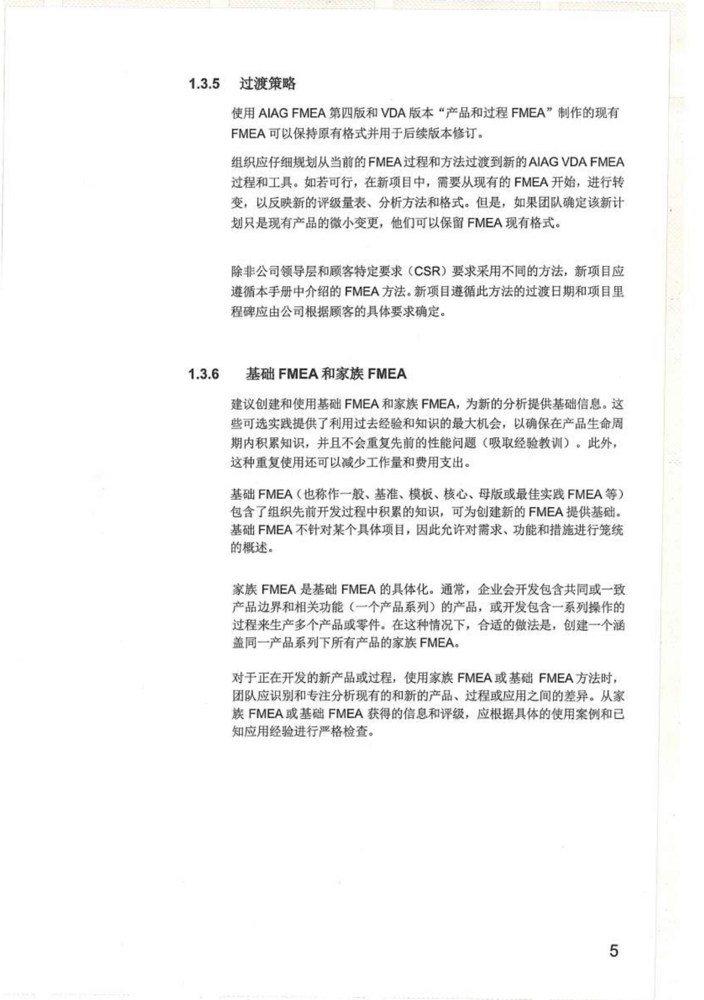
1.3.5 过渡策略
使用 AIAG FMEA 第四版和 VOA 版本”产品和过程 FMEA 制作的现有
FMEA 可以保持原有格式并用于后续版本修
组织应仔细规划从当前的 FMEA 过程和方法过渡到新的 AIAG VOA FMEA
过程和工具。如若可行，在新项目中，需要从现有的 FMEA 开始 进行转
变， 反映新的评级扯表、分析方法和格式。但是 如果团队确定该新计
划只是现有产品的微 变更，他 可以保留 FMEA 现有格式。
除非公司领导层和顾客特定要求 CSR 要求采用不同的方法，新项目应
遵循本手册中介绍的 FMEA 方法。新项目遵循此方法的过渡日期和项目里
程碑应由公司根据顾客的具体要求确定。
1.3.6 基础 FMEA FME
建议创建和使用基础 FMEA 和家族 FMEA 为新的分析提供基础信息。这
些可选实践提供了利用过去经验和知识的最大机会，以确保在产品生命周
积累知识，并且不会重复先前的性能 题（吸取经验教 ）。此外，
这种重复使用还可以减少工作量和费用支出。
基础 FMEA (也称作一般、基准、模板、核心、母版或最佳实践 FMEA 等）
包含了组织先前开发过程中积累的知识，可为创建新的 FMEA 提供基础。
FMEA 不针对某个具体项目，因此允许对需求、功能和措施进行笼统
的概述。
家族 FMEA 是基础 FMEA 的具体化。通常 企业会开发包含共同或一致
产品边界和相关功能（一个产品系列）的产品，或开发包含 系列操作的
过程来生产多个产品或零件。在这种情况下，合适的做法是 创建一个涵
盖同一产品系列下所有产品的家族 FMEA
对千正在开发的新产品或过程，使用家族 FMEA 或基础 FMEA 方法时，
团队应识别和专注分析现有的和新的产品、过程或应用之间的差异。从家
FMEA 或基础 FMEA 获得的信息和评级，应根据具体的使用案例和已
知应用经验进行严格检查。
5
第 18 / 239 页 展开/收起文字
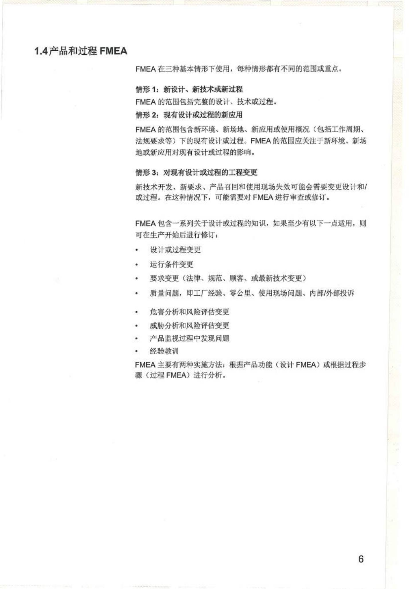
1.4 产品和过程 MEA
FMEA 在三种基本情形下使用，每种情形都有不同的范围或重点。
情形 1: 新设计、新技术或新过程
FMEA 范围包括完整的设计、技术或过程。
情形 2: 现有设计或过程的新应用
FMEA 的范围包含新环境、新场地、新应用或使用概况（包括工作周期、
法规要求等）下的现有设计或过程。 FMEA 范围应关注千新环境、新场
地或新应用对现有设计或过程的影响。
情形 3: 对现有设计或过程的工程变更
新技术开发、新要求、产品召回和使用现场失效可能会需要变更设计和
或过程。在这种情况下，可能需要对 FMEA 进行审查或修订。
FMEA 包含一系列关于设计或过程的知识，如果至少有以下一点适用，则
可在生产开始后进行修订：
设计或过程变更
运行条件变更
要求变更（法律、规范、顾客、或最新技术变更）
质量问题，即工厂经验、零公里、使用现场问题、内部／外部投诉
危害分析和风险评估变更
威胁分析和风险评估变更
产品监视过程中发现问题
经验教训
FMEA 主要有两种实施方法 根据产品功能（设计 FMEA 或根据过程步
骤（过程 FMEA 进行分析。
6
第 19 / 239 页 展开/收起文字
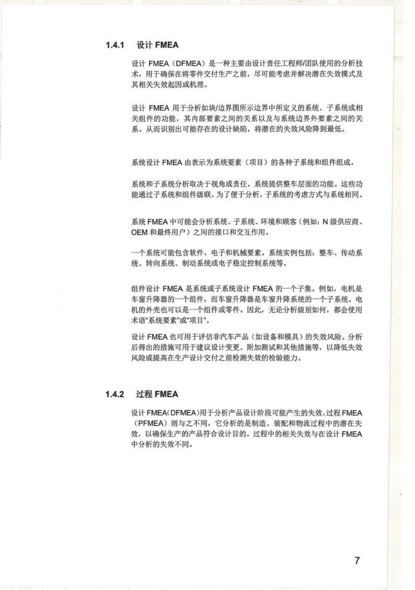
1.4.1 设计 FMEA
设计 FMEA CDFMEA) 种主要由设计责任工程师 团队使用的分析技
术，用千确保在将零件交付生产之前，尽可能考虑并解决潜在失效模式及
其相关失效起因或机理。
设计 FMEA 千分析如块 边界图所示边界中所定义的系统、子系统或相
关组件的功能，其内部要素之间的关系以及与系统边界外要素之间的关
系。从而识别出可能存在的设计缺陷，将潜在的失效风险降到最低。
系统设计 FMEA 由表示为系统要素 （项目） 的各种子系统和组件组成
系统和子系统分析取决于视角或责任。系统提供整车层面的功能。这些功
能通过子系统和组件级联。为了便千分析，子系统的考虑方式与系统相同。
系统 FMEA 中可能会分析系统、子系统、环境和顾客（例如 级供应商、
OEM 和最终用户）之间的接口和交互作用。
个系统可能包含软件、电子和机械要素。系统实例包括：整车、传动系
统、转向系统、制动系统或电子稳定控制系统等。
组件设计 FMEA 是系统或子系统设计 FMEA 个子集。例如，电机是
车窗升降器的一个组件，而车窗升降器是车窗升降系统的 个子系统 。电
机的外壳也可以是 个组件或零件。因此，无论分析级别如何，都会使用
术语系统要素”或项目'。
设计 FMEA 也可用千评估非汽车产品（如设备和模具）的失效风险。分析
后得出的措施可用千建议设计变更、附加测试和其他措施等，以降低失效
风险或提高在生产设计交付之前检测失效的检验能力。
1.4.2 过程 FMEA
设计 FMEACDFMEA 用千分析产品设计阶段可能产生的失效，过程 FMEA
PFMEA 则与之不同，它分析的是制造、装配和物流过程中的潜在失
效，以确保生产的产品符合设计目的。过程中的相关失效与在设计 FMEA
中分析的失效不同。
7
第 20 / 239 页 展开/收起文字
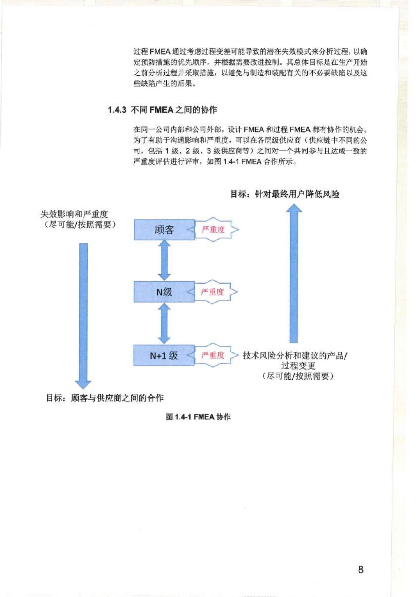
过程 FMEA 通过考虑过程变差可能导致的潜在失效模式来分析过程，以确
定预防措施的优先顺序，并根据需要改进控制。其总体目标是在生产开始
之前分析过程并采取措施，以避免与制造和装配有关的不必要缺陷以及这
些缺陷产生的后果。
1.4.3 不同 FMEA 之间的协作
在同一公司内部和公司外部，设计 FMEA 和过程 FMEA 都有协作的机会。
为了有助千沟通影响和严重度，可以在各层级供应商（供应链中不同的公
司，包括 级、 级、 级供应商等）之间对一个共同参与且达成一致的
严重度评估进行评审，如图 1.4-1 FMEA 合作所示
目标：针对最终用户降低风险
失效影响和严重度
（尽可能／按照需要）
目标：顾客与供应商之间的合作
1.4-1 FMEA 协作
8
第 21 / 239 页 展开/收起文字
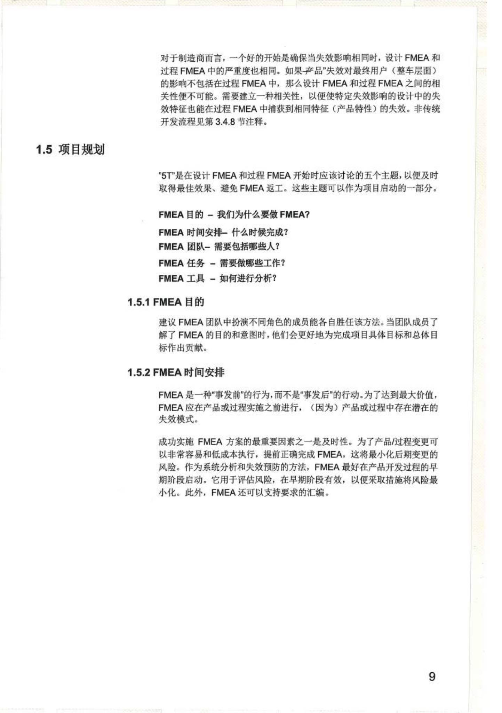
对于制造商而言， 个好 开始是确保当失效影响相同时 设计 FMEA
过程 FMEA 严重度也相同 如果孚：品＇失效对最终用户（整车层面）
的影响不包括在过程 FMEA 中，那么设计 FMEA 和过程 FMEA 之间的相
关性便不可能。需要建立 种相关性，以便使特定失效影响的设计中的失
效特征 能在过程 FMEA 中捕获 相同特征（产品特性）的失效 非传统
开发流程见第 3.4 节注释
1.5 项目规划
5T" 是在设计 FMEA 和过程 FMEA 开始时应该讨论的五个主题，以便及时
取得最佳效果、避免 FMEA 返工。这些主题 以作为项目启动的 部分。
FMEA 目的－我们为什么要做 FMEA?
FMEA 时间 排－什 时候完成？
FMEA 团队－需要包括哪些人？
FMEA 任务－ 要做哪些工作
FMEA 工具－如何进行分析
1.5.1 FMEA 目的
建议 FMEA 团队中扮演不同角色的成员能各自胜任该方法 当团队成员了
解了 FMEA 的目的和意图时，他 会更好地为完成项目具体目标和总体目
标作出贡献
1.5.2 FMEA 时间安排
FMEA 种“事发前＂的行为而不是“事发后”的行动 为了达到最大价值，
FMEA 应在产品或过程实施之前进行， （因为）产品或过程中存在潜在的
失效模式
成功实施 FMEA 方案的最重要因素之 是及时性 为了产品 过程变更可
以非常容易和低成本执行，提前正确完成 FMEA 这将最小化后期变更的
风险。作为系统分析和失效预防的方法， FMEA 最好在产品开发过程的早
期阶段启动 它用千评估风险，在早期阶段有效，以便采取措施将风险最
小化 此外 FMEA 还可以支持要求的汇编
9
第 22 / 239 页 展开/收起文字
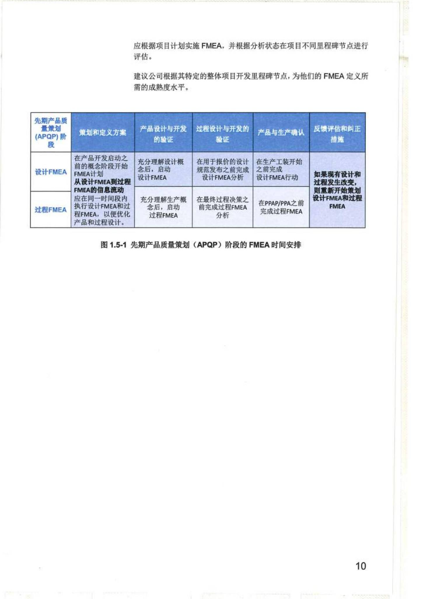
应根据项目计划实施 FMEA 并根据分析状态在项目不同里程碑节点进行
评估。
建议公司根据其特定的整体项目开发里程碑节点，为 们的 FMEA 定义所
需的成熟度水平。
在产品开发启动之 充分理解设计概 在用千报价的设计 在生产工装开始
设计 前的概念阶段开始 念后启动 规范发布之前完成 之前完成 FMEA I FMEA计划 ' 如果现有设计和 从设计FMEA到过程 设计FMEA 设计FMEA分析 设计FMEA行动 过程发生改变，
FMEA的信息流动
应在 一时间段内 充分理解生产概 在最终过程决策之 设则计重 开队始和策过划 过程FMEA I 执行设计FMEA和过 念后，启动 前完成过程FMEA PPAP/PPA之前 FMEA
FMEA 以便优 过程FMEA 分析 完成过程FMEA
产品和过程设计。
1.5-1 先期产品质 策划 (APQP) 阶段的 FMEA 时间安排
10
第 23 / 239 页 展开/收起文字
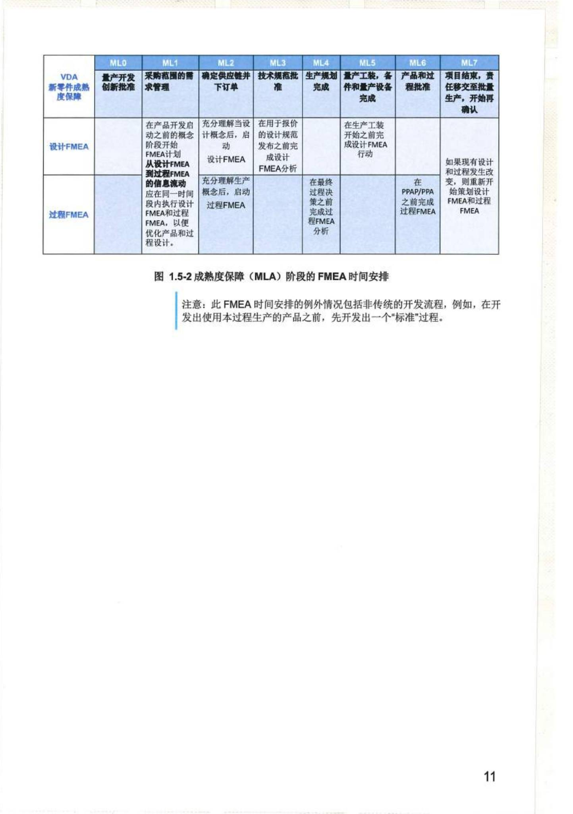
VOA 量产开发
新中中成熟 创新批准 度保障
设计FMEA
过程FMEA
E A
EE AA
在生产工装
开始之前完
成设计 FMEA
行动
在最终
过程决
策之前
完成过
FMEA
分析
PPAP/PPA
之前完成
过程FMEA
如果现有设计
和过程发生改
则重新开
始策划设计
FMEA和过程
FMEA
1.5-2 成熟度保障 CMLA) 阶段的 FMEA 时间安排
注意 ：此 FMEA 时间 排的例 外情 包括非传统的开发流程例如， 在开 使用本 程生产 产品之前 先开发出 个“标准 过程。
11
第 24 / 239 页 展开/收起文字
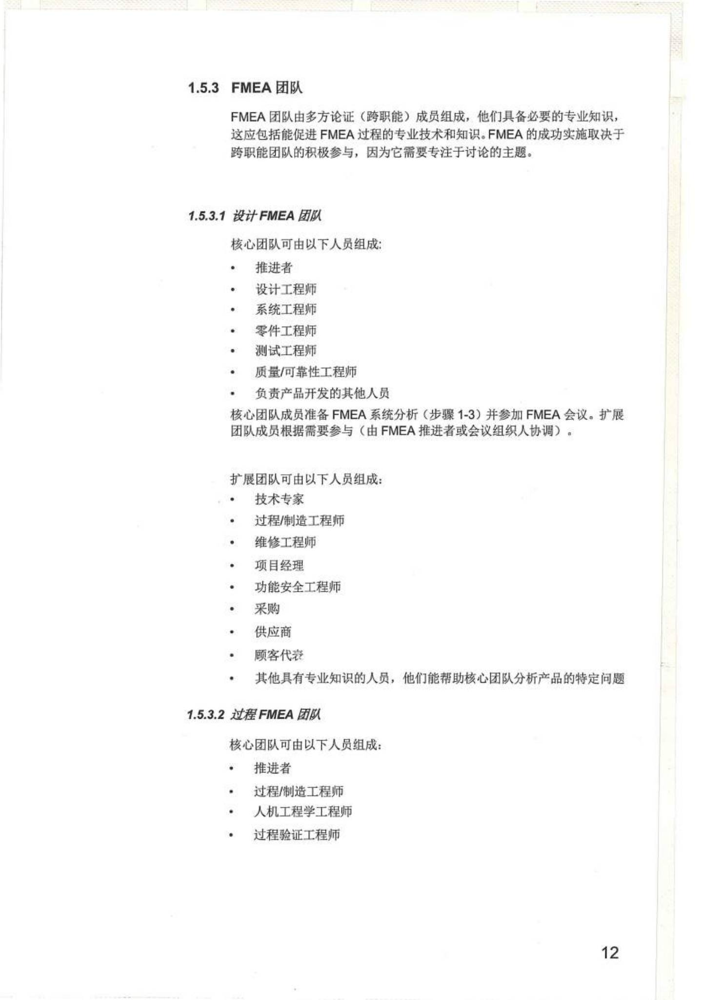
~
1.5.3 FMEA 团队
FMEA 团队由多方论证（跨职能）成员组成，他们具备必要的专业知识，
这应包括能促进 FMEA 过程的专业技术和知识。 FMEA 的成功实施取决于
跨职能团队的积极参与，因为它需要专注于讨论的主题。
1.5.3.1 设计FMEA Ill,
核心团队可由以下人员组成：
推进者
设计工程师
系统工程师
零件工程师
测试工程师
质量／可靠性工程师
负责产品开发的其他人员
核心团队成员准备 FMEA 系统分析（步骤 1-3) 并参加 FMEA 会议。扩展
团队成员根据需要参与（由 FMEA 推进者或会议组织人协调）。
扩展团队可由以下人员组成：
技术专家
过程／制造工程师
维修工程师
项目经理
功能安全工程师
采购
供应商
顾客代表
其他具有专业知识的人员，他们能帮助核心团队分析产品的特定问题
1.5.3.2 过程FMEA 历队
核心团队可由以下人员组成：
推进者
过程／制造工程师
人机工程学工程师
过程验证工程师
12
第 25 / 239 页 展开/收起文字
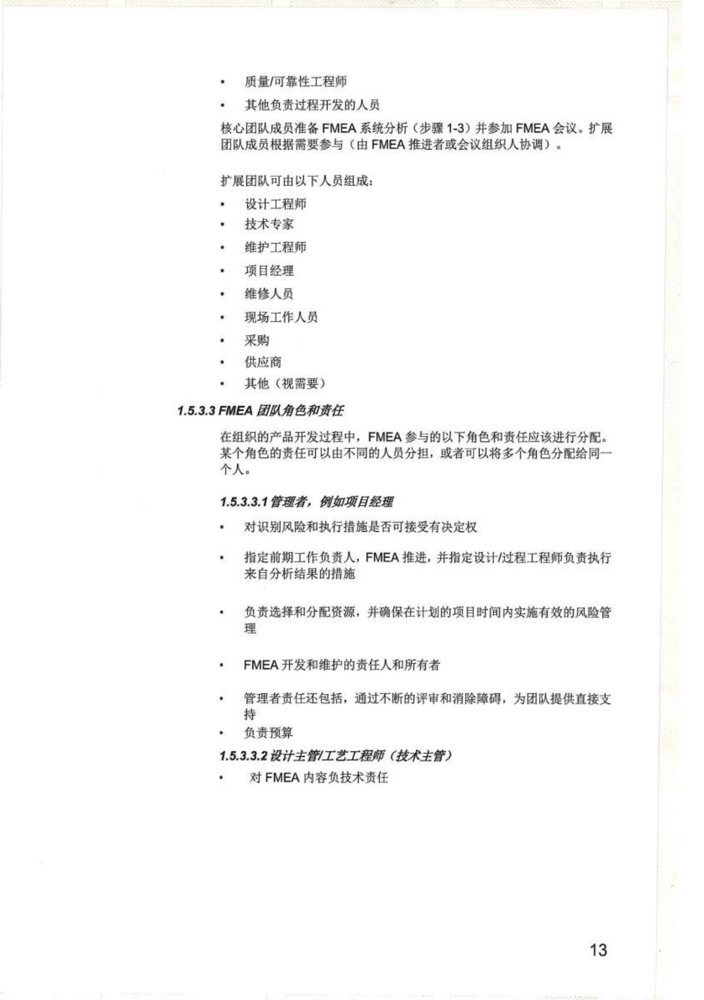
• 质量 可靠性工程师
• 其他负责过程开发的人员
核心团队成员准备 FMEA 系统分析（步骤 1-3 并参加 FMEA 会议。扩展
团队成员根据需要参与（ FMEA 推进者或会议组织人协调）。
扩展团队可由以下人员组成：
• 工程师
技术专家
维护工程师
项目经理
维修人员
现场工作人员
• 采购
供应商
其他（视需要）
1.5.3.3 FMEA 历队帝色和
在组织 产品开发过程中， FMEA 参与的以下角色和责任应该进行分配。
某个角色 责任可以由不同 人员分担 或者可以将多个角色分配给同一
个人。
1.5.3.3.1 曾理者 俏如项月经理
对识别风险和执行措施是否可接受有决定权
指定前期工作负责 FMEA 推进，并指定设计 过程工程师负责执行
来自分析结果 措施
负责选择和分配资源，并确保在 划的项目时间 实施有效 风险管
FMEA 开发 维护的责任人和所有者
管理者责任还包括 通过不断的评审和消除障碍 为团队提供直接支
负责预算
5.3.3.2 设计主管／工艺工程师（挟术主管）
FMEA 内容负技术责任
13
第 26 / 239 页 展开/收起文字
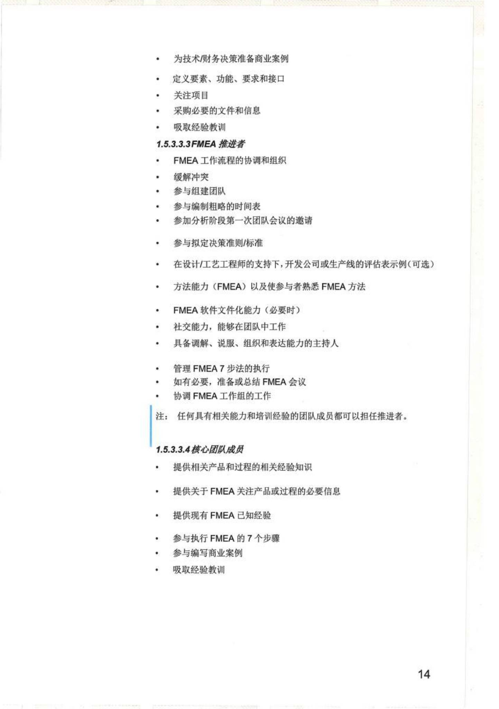
为技术 财务决策准备商业案例
定义要素、功能、要求和接口
关注项目
采购必要的文件和信息
• 吸取经验教训
5.3.3.3FMEA 淮游者
FMEA 工作流程的协调和组织
• 缓解冲突
参与组建团队
• 参与编制粗略的时间表
参加分析阶段第 次团队会议的邀请
参与拟定决策准则 标准
在设计 工艺工程师的支持下，开发公司或生产线的评估表示例（可选）
方法能力 FMEA 以及使参与者熟悉 FMEA 方法
FMEA 软件文件化能力（必要时）
社交能力 能够在团队中工作
具备调解、说服、组织和表达能力的主持人
• 管理 FMEA 步法的执行
如有必要 准备或总结 FMEA 会议
协调 FMEA 工作组的工作
任何具有相关能力和培训经验的团队成员都可以担任推进者
1.5.3 3.4 枝心因队
提供相关产品和过程的相关经验知识
提供关于 FMEA 关注产品或过程的必要信息
提供现有 FMEA 已知经验
参与执行 FMEA 个步骤
• 参与编写商业案例
吸取经验教训
14
第 27 / 239 页 展开/收起文字
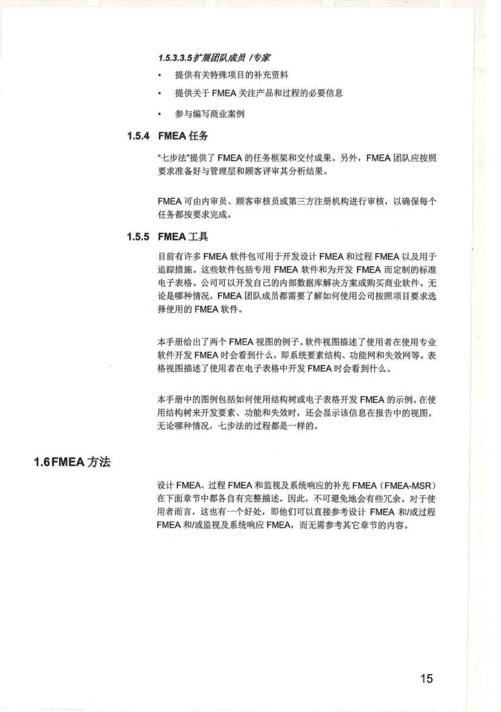
6FMEA 方法
5.3.3.5 扩屈fJJ队威员／专
提供有关特殊项目的补充资料
• 提供 FMEA 关注产品和过程的必要信息
• 参与编 案例
1.5.4 FMEA 任务
七步法”提供了 FMEA 的任务框架和交付成果。另外， FMEA 团队应按照
要求准备好与管理层和顾客评审其分析结果。
FMEA 可由内审员、顾客审核员或第 方注册机构进行审核，以确保每个
任务都按要求完成
1.5.5 FMEA 工具
目前有许多 FMEA 软件包可用于开发设计 FMEA 和过程 FMEA 以及用千
追踪措施 这些软件包括专用 FMEA 软件和为开发 FMEA 而定制的标准
电子表格 公司可以开发自己的内部数据库解决方案或购买商业软件。无
论是哪种情况， FMEA 团队成员都需要了解如何使用公司按照项 要求选
择使用的 FMEA 软件
本手册给出了两个 FMEA 视图的例子 软件视图描述了使用者在使用专业
软件开发 FMEA 时会看到什么，即系统要素结构、功能网和失效网等
格视图描述了使用者在电子表格 开发 FMEA 时会看到什么
本手册中的图例包括如何使用结构树或电子表格开发 FMEA 的示例 在使
用结构树来开发要素、功能和失效时，还会显示该信息在报告中的视图
无论哪种情况 ，七步法的过程都是 样的。
设计 FMEA、过程 FMEA 和监视及系统响应的补充 FMEA ( FMEA-MSR)
在下面章节中都各自有完整描述 因此，不可避免地会有些冗余。对千使
用者而言，这也有 个好处，即他 可以直接参考设计 FMEA 或过程
FMEA 或监视及系统响应 FMEA, 而无需参考其它章节的内容。
15
第 28 / 239 页 展开/收起文字
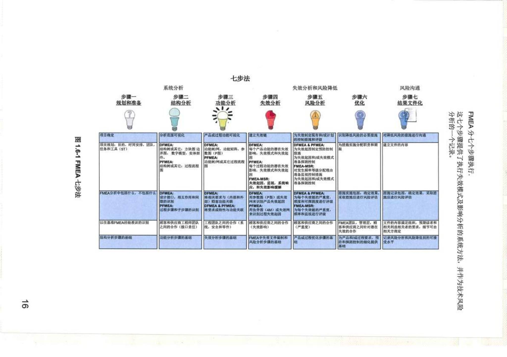
七步法
步骤一
规划和准备
系统分析
步骤二
结构分析
步骤四
失效分析
失效分析和风险降低
步骤五
风险分析
风险沟通
步骤七
结果寸件化
-zc ti FMEA
:B---t-t-zv~:!Mr
.
, 1
FMEA
-tz!;i'R
项目确定 分析范围可视化
. 产品或过程功能可视化 建立失效链
任比气呐时间安排团［三国三巨FMEA-MSR,
==~ 譬~~
~
声＝＝ 为失效起因和 或失效模式
准备探测控制
FMEA-MSR,
对发生频率等级分配理由
准备监视控制措施
为失效起因和 或失效模式
准备探测控制
FMEA分析中包括什么 不包括什么 IIDFM
设计接口，相互作用和间
隙的识别
PFMEA,
过程步辗和子步骥的识别
以往基准FM 巳经验教训的识别
DFMEk
将相关要求与（内部和外
部）顾客功能关联
DFMEA & PFMEA,
将要求或特性与功能关联
结构分析步骠的基础
匡荨
16
第 29 / 239 页 展开/收起文字
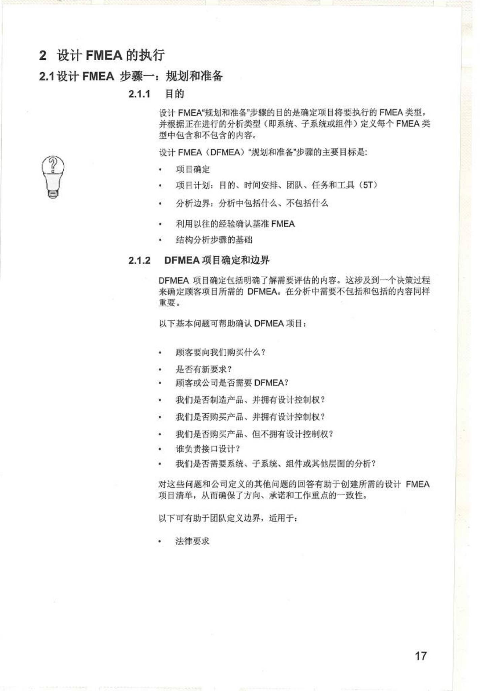
设计 FM 的执行
设计 FMEA 步骤一 规划和准备
2.1.1 目的
设计 EA 规划和准备＇步骤的目的是确定项 将要执行的 FMEA 类型，
并根据正在进行的分析类型（即系统、 系统或组件 定义每个 FMEA
型中包含和不包含的内容
设计 FMEA CDFMEA) "规划和准备 步骤的主要目标是：
项目确定
项目 划：目的 、时 间安排、团队 任务和工具 5T
分析边界：分析中包括什么、不包括什么
用以往的经验确认基准 FMEA
结构分析步骤的基础
2.1 .2 FME 项目确定和边界
DFMEA 项目确定包括明确了解需要评估 内容。这涉及到 个决策过程
来确定顾客项目所需的 DFMEA 。在分 中需要不包括和包括的内容同样
重要。
下基本问题可帮助确认 DFMEA 项目
顾客要向我们购买什么？
是否有新要求？
顾客或公司是否需要 DFMEA
是否制造产品 并拥有设计控制权？
是否购买产品、并拥有设计控制权？
是否购买产品、但不拥有设计控制权？
谁负责接口设计？
是否需要系统、子系统、组件或其他层面 分析？
对这些 题和公司定义的其他问题的回答有助于创建所需的设计 FMEA
清单，从而确保了方向、承诺和工作重点的一致性。
以下可有助于团队定义边界，适用于
• 法律要求
17
第 30 / 239 页 展开/收起文字
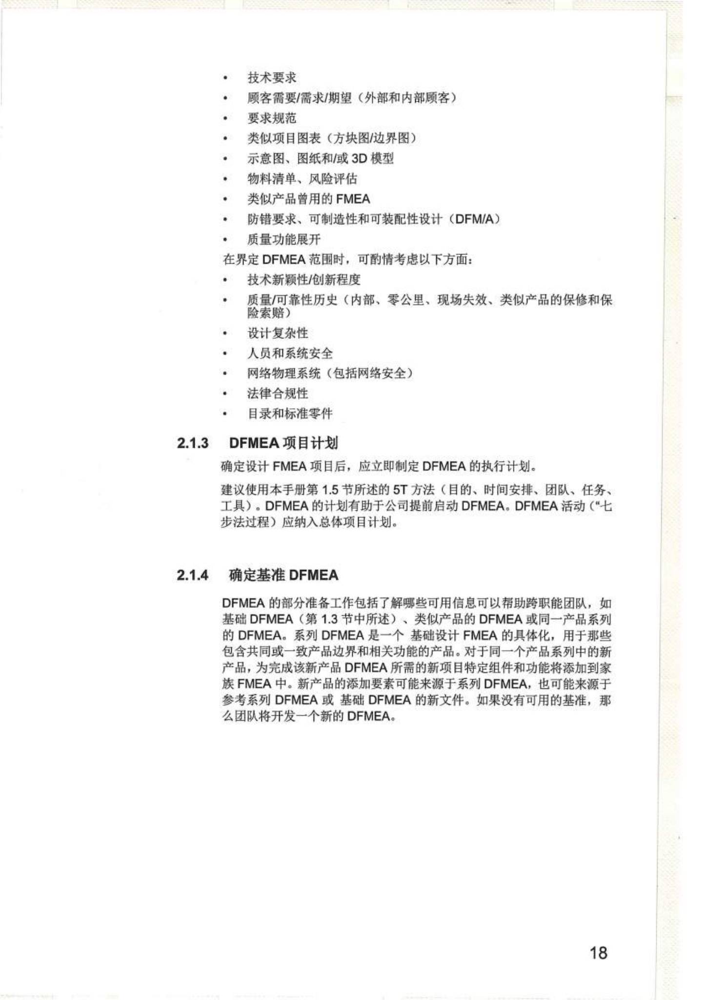
技术要求
顾客需要 需求 期望（ 部和 部顾客）
要求规范
类似项目图表（方块图 边界图）
示意图、图纸和 3D 模型
物料清单、风险评估
• 类似产品曾用的 FMEA
防错要求、可制造性和可装配 设计 CDFM/A
质量功能展开
在界定 DFMEA 范围时，可酌情考虑以下方面：
技术新颖性 创新程度
质量 可靠性历史（内部、零公里、现场失效、类似产品的保修和保
险索赔）
设计复杂性
人员和系统安全
网络物理系统（包括网络安全）
法律合规性
录和标准零件
2.1.3 DFMEA 项目计划
确定设计 FMEA 项目后 应立即制定 DFMEA 的执行计划。
建议使用本手册第 节所述的 5T 方法（目的、时间安排、团队、任务、
工具）。 DFMEA 的计划有助于公司提前启动 DFMEA DFMEA 活动(
步法过程）应纳入总体项目计划。
2.1.4 确定基准 DFMEA
DFMEA 的部分准备工作包括了解哪些可用信息可以帮助跨职能团队
基础 DFMEA 1.3 节中所述）、类似产品的 DFMEA 或同一产品系列
DFMEA 。系列 DFMEA 是一个基础设计 FMEA 的具体化，用于那些
包含共同或一致产品边界和相关功能的产品。对于同一个产品系列中的新
产品，为完成该新产品 DFMEA 的新项目特定组件和功能将添加到家
FMEA 中。新产品的添 要素可能来源千系列 DFMEA 也可能来源于
参考系列 DFMEA 或基础 DFMEA 的新文件。如果没有可用的基准，那
么团队将开发一个新的 DFMEA
18
第 31 / 239 页 展开/收起文字
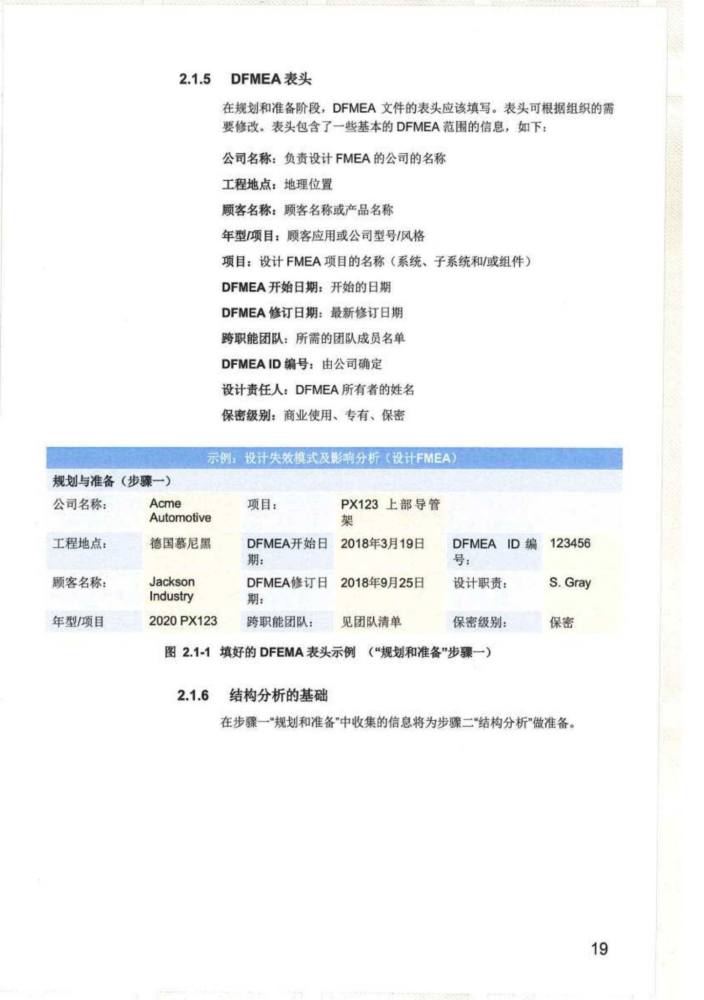
2.1.5 DFMEA 表头
在规划和准备阶段， DFMEA 文件的表头应该填写。表头可根据组织的需
要修改。表头包含了一些基本的 DFMEA 范围 信息 如下：
公司名称：负责设计 FMEA 的公司 名称
工程地点 ：地理位置
顾客名称：顾客名称或产品名称
年型颂目： 顾客应用或公司型号 风格
项目 ：设计 FMEA 项目 名称（系统、子系统和 或组件）
DFMEA 开始日期： 开始的日期
DFMEA 订日期：最新修订日期
跨职能团队： 所需的团队成员名单
DFMEAID 编号：由公司确定
设计责任人： DFMEA 所有者的姓名
保密级别：商业使用、专有、保密
I 示例：设计失效模式及影响分析（设计FMEA) I
规划与准备 步骤一
公司名称： Acme 项目： PX123 上部导管
Automotive
工程地点： 德国慕尼黑 DFMEA开始日 2018 19 DFMEA ID 123456
期： 号：
顾客名称： Jackson DFMEA修订日 2018 25 设计职责 S Gray
Industry
年型 项目 2020 PX123 跨职能团队： 见团队清单 保密级别： 保密
1-1 好的 DFEMA 头示例 "规划和准备＂步骤一）
2.1.6 结构分析的基础
在步骤一”规划和准备＇中收集的信息将为步骤二”结构分析 做准备。
19
第 32 / 239 页 展开/收起文字
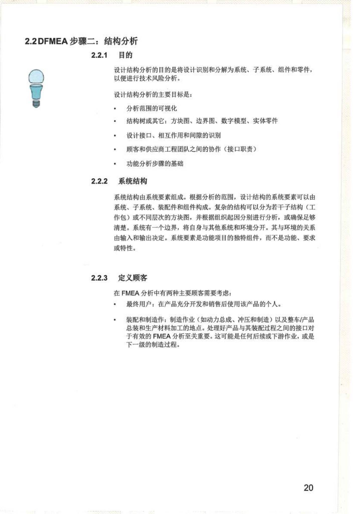
2.2DFMEA 步骤二：结构分析
2.2.1 目的
设计结构分析的目的是将设计识别和分解为系统、子系统、组件和零件，
以便进行技术风险分析。
设计结构分析的主要目标是：
分析范围的可视化
结构树或其它：方块图、边界图、数字模型、实体零件
设计接口、相互作用和间隙的识别
• 顾客和供应商工程团队之间的协作（接口职责）
功能分析步骤的基础
2.2.2 系统结构
系统结构由系统要素组成。根据分析的范围，设计结构的系统要素可以由
系统、子系统、装配件和组件构成。复杂的结构可以分为若干子结构（工
作包）或不同层次的方块图，并根据组织起因分别进行分析，或确保足够
清楚。系统有一个边界，将自身与其他系统和环境分开。其与环境的关系
由输入和输出决定。系统要素是功能项目的独特组件，而不是功能、要求
或特性。
2.2.3 定义顾客
FMEA 分析中有两种主要顾客需要考虑：
最终用户：在产品充分开发和销售后使用该产品的个人。
装配和制造作：制造作业（如动力总成、冲压和制造）以及整车／产品
总装和生产材料加工的地点。处理好产品与其装配过程之间的接口对
于有效的 FMEA 分析至关重要。这可能是任何后续或下游作业，或是
下一级的制造过程。
20
第 33 / 239 页 展开/收起文字
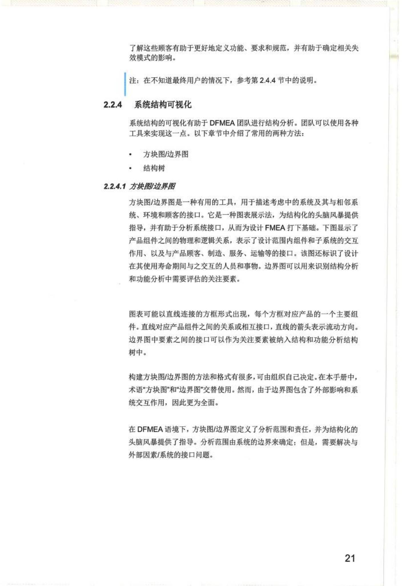
了解这些顾客有助千更好地定义功能、要求和规范 并有助于确定相关失
效模式的影响。
注：在不知道最终用户的情况下 参考第 4.4 节中的说明。
2.2.4 系统结构可视化
系统结构的可视 有助于 DFMEA 团队进行结构分析。团队可以使用各种
工具来实现这一点。以下章节中介绍了常用的两种方法：
• 方块图 边界图
• 结构树
2.2.4. 方块励边界阁
方块图 边界图是一种有用的工具，用千描述考虑中的系统及其与相邻系
统、环境和顾客的接口。它是 种图表展示法，为结构化的头脑风暴提供
指导，并有助千分析系统接口，从而为设计 FMEA 打下基础。下图显示了
产品组件之间 物理和逻辑关系，表示了设计范围内组件和子系统的交互
作用、以及与产品顾客、制造、服务、运输等的接口 该图还标识了设计
在其使用寿命期间与之交互的人员和事物。边界图可以用来识别结构分析
和功能分析中需要评估的关注要素。
图表可能以直线连接的方框形式出现，每个方框对应产品的 个主要组
件。直线对应产品组件之间的关系或相互接口，直线的箭头表示流动方向。
边界图中要素之 的接口可以作为关注要素被纳入结构和功能分析结构
树中。
构建方块图 边界图的方法和格式有很多，可由组织自己决定 在本手册中，
术语”方块图 和边界图＇交替使用。然而，由于边界图包含了外部影响和系
统交互作用，因此更为全面。
DFMEA 语境下，方块图 边界图定义了分析范围和责任，并为结构化的
头脑风暴提供了指导。分析范围由系统的边界来确定；但是，需要解决与
外部因素 系统的接口问题。
21
第 34 / 239 页 展开/收起文字
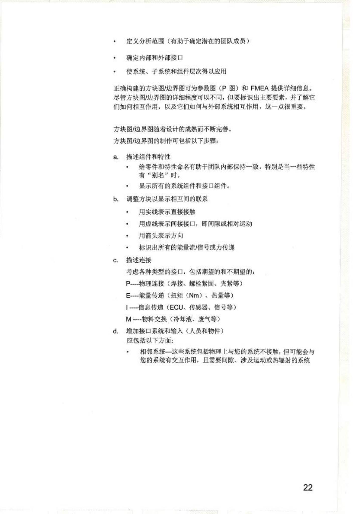
定义分析范围（有助千确定潜在的团队成员）
确定 部和 部接口
使系统、子系统和组件层次得 应用
正确构建的方块图 边界图可为参数图 图）和 FMEA 提供详细信息。
尽管方块图 图的详细程度可以不同，但要标识出主要要素，并了解它
如何 互作 ，以及它们如何与外部系统相互作用，这 点很重要。
方块图 边界图随若设计的成熟而不断完善。
方块图 边界图的制作可包括以下步骤： a. 描述组件和特性
给零件和特性命名有助千 队内部保持一致，特别是当 些特性
有“别名“时。
• 显示所有的系统组件和接口组件。
b. 调整方块以显示相互间的联系
• 用实线表示直接接触
用虚线表示间接接口，即 隙或相对运动
用箭头表示方向
标识出所有的能储流 信号或力传递
C. 描述连接
考虑各种类型的接口，包括期望 和不期望的
P-- 物理连接（焊接、螺栓紧 、夹紧等）
E---- 能量传递（扭矩 Nm 、热量等）
I ----信息传递 ECU 、传感器、信号等）
M ---- 物料交换（冷却液、废气等）
d. 增加接口系统和输入（人员和物件）
应包括以下方面：
相邻系统 这些系统包括物理上与您的系统不接触，但可能会与
您的系统有交互作用，且需要间隙、涉及运动或热辐射的系统
22
第 35 / 239 页 展开/收起文字
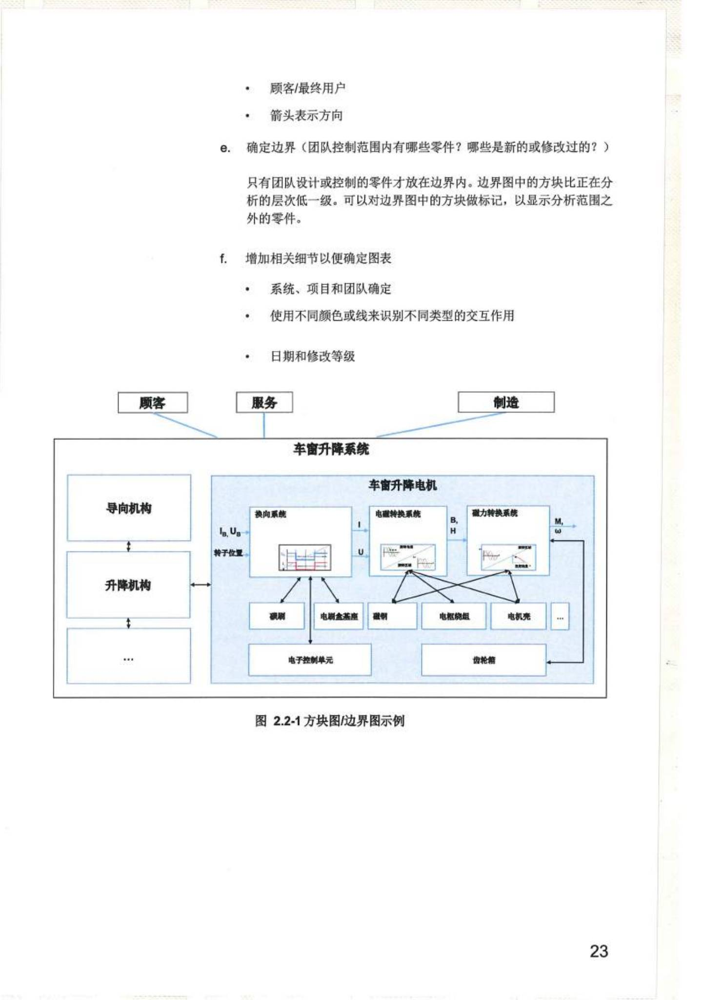
导向机构
升降机构
• 顾客／最终用户
• 箭头表示方向
e. 确定边界（团队控制范围内有哪些零件？哪些是新的或修改过的？）
只有团队设计或控制的零件才放在边界内 边界图中的方块比正在分
析的层次低一级。可以对边界图中的方块做标记 以显示分析范围之
外的零件。
f. 增加相关细节以便确定图表
系统、项目和团队确定
• 使用不同颜色或线来识别不同类型的交互作用
日期和修改等级
车窗升阵系统
车窗升降电机
2.2-1 方块图 边界图示例
23
第 36 / 239 页 展开/收起文字
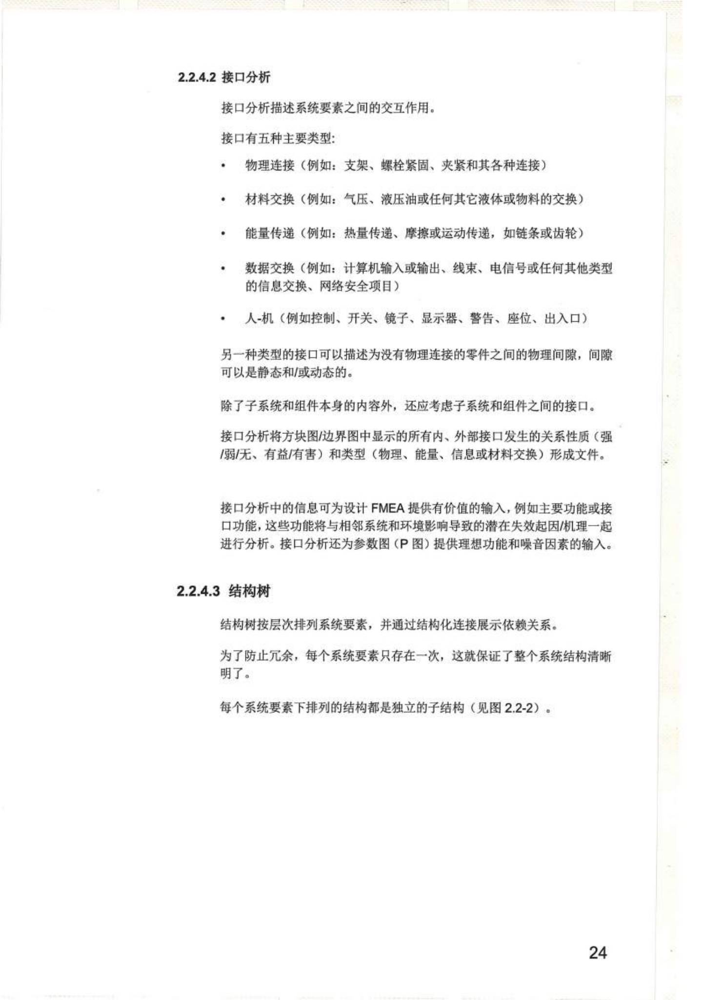
2.2.4.2 接口分析
接口分析描述系统要素之 的交互作用。
接口有五种主要类型
物理连接（例如 支架、螺栓紧固、夹紧和其各种连接）
材料交换（例如：气压、液压油或任何其它液体或物料的交换）
能量传递（例如：热量传递、摩擦或运动传递，如链条或齿轮）
数据交换（例如： 输入或输出、线束、电信号或任何其他类型
信息交换、网络安全项目）
机（例如控制、开关、镜子、显示器、警告、座位、出入口）
另一种类型的接口可以描述为没有物理连接 零件之 的物理间隙，间隙
可以是静态和 或动态的。
除了子系统和组件本身的 容外，还应考虑子系统和组件之间的接口。
接口分析将方块图 边界图中显示的所有内、外部接口发生的关系性质（强
无、有益 有害）和类型（物理、能量、信息或材料交换）形成文件。
接口分析中的信息可为设计 FMEA 提供有价值的输入，例如主要功能或接
口功能，这些功能将与相邻系统和环境影响导致的潜在失效起因／机理一起
进行分析。接口分析还为参数图 图）提供理想功能和噪音因素的输入。
2.2.4.3 结构树
结构树按层次排列系统要素，并通过结构 连接展示依赖关系。
为了防止冗余，每个系统要素只存在 次，这就保证了整个系统结构清晰
明了。
每个系统要素下排列的结构都是独立的子结构（见图 2-2
24
第 37 / 239 页 展开/收起文字
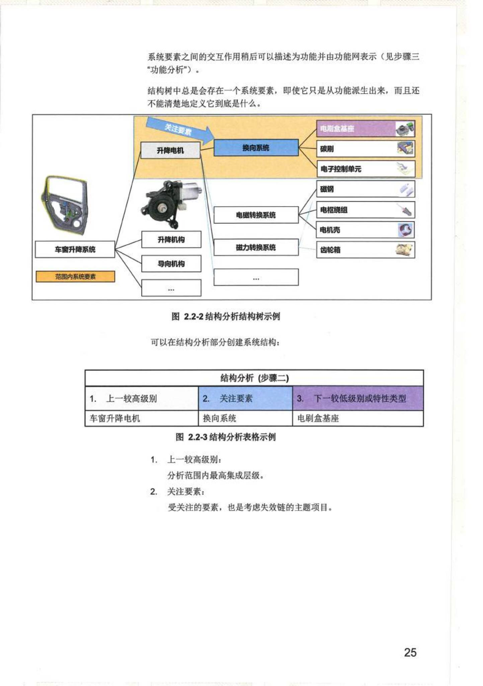
系统要素之间的交互作用稍后可以描述为功能并由功能网表示（见步骤三
”功能分析")。
结构树中总是会存在 个系统要素，即使它只是从功能派生出来，而且还
不能清楚地定义它到底是什么。
电磁转换系统
磁力转换系统
2.2-2 结构分析结构树示例
可以在结构分析部分创建系统结构：
结构分析（步骤二）
1. 较高级别
2. 关注要素
换向系统
3. 下一较低级别或特性类型
车窗升降电机 电刷盒基座
2.2-3 结构分析表格示例
1. 较高级别：
分析范围内最高集成层级。
2. 关注要素：
受关注的要素，也是考虑失效链的主题项目。
25
第 38 / 239 页 展开/收起文字
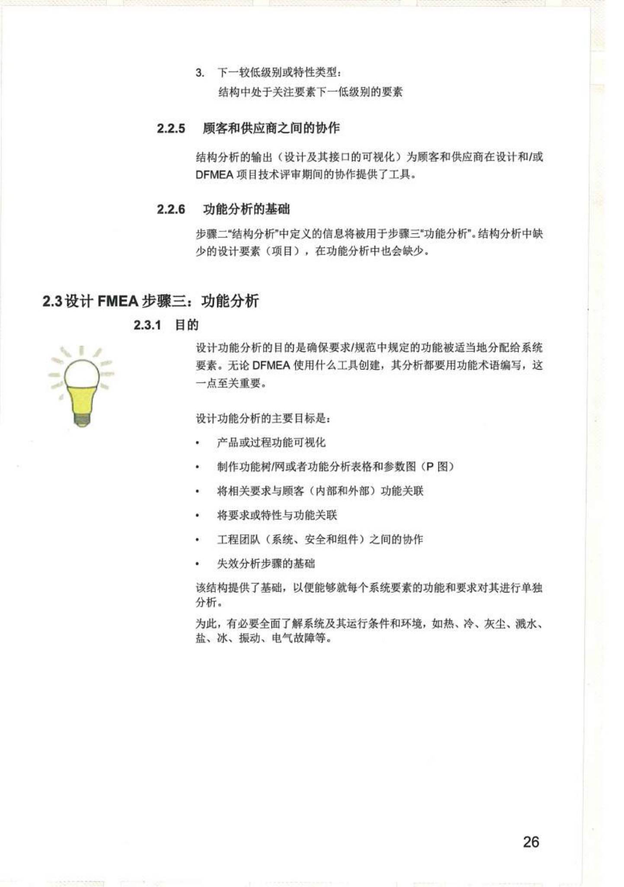
3. 较低级别或特性类型：
结构中处于关注要素下 低级别的要素
2.2.5 顾客和供应商之间的协作
结构分析的输出（设计及其接口的可视化）为顾客和供应商在设计和
DFMEA 项目技术评审期间的协作提供了工具。
2.2.6 功能分析的基础
步骤二”结构分析＇中定义的信息将被用于步骤三”功能分析＇＇。结构分析中缺
少的设计要素（项目），在功能分析中也会缺少。
2.3 设计 FMEA 步骤三：功能分析
2.3.1 目的
设计功能分析的目的是确保要求／规范中规定的功能被适当地分配给系统
要素。无论 DFMEA 使用什么工具创建，其分析都要用功能术语编写，这
点至关重要。
设计功能分析的主要目标是：
产品或过程功能可视化
制作功能树／网或者功能分析表格和参数图 (P 图）
将相关要求与顾客（内部和外部）功能关联
将要求或特性与功能关联
工程团队（系统、安全和组件）之间的协作
失效分析步骤的基础
该结构提供了基础，以便能够就每个系统要素的功能和要求对其进行单独
分析
为此，有必要全面了解系统及其运行条件和环境，如热、冷、灰尘、溅水、
盐、冰、振动、电气故障等。
26
第 39 / 239 页 展开/收起文字
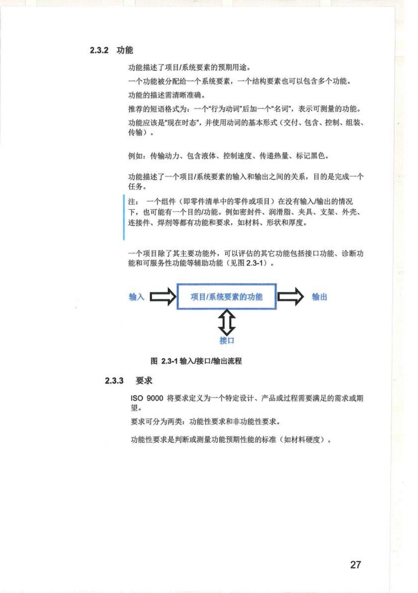
2.3.2 功能
功能描述了项目／系统要素的预期用途。
一个功能被分配给一个系统要素，一个结构要素也可以包含多个功能。
功能的描述需清晰准确
推荐的短语格式为：一个“行为动词”后加 个“名词“，表示可测量的功能。
功能应该是现在时态”，并使用动词的基本形式（交付、包含、控制、组装、
传输）。
例如：传输动力、包含液体、控制速度、传递热量、标记黑色
功能描述了 个项目／系统要素的输入和输出之间的关系，目的是完成
1i:: 可三五王芒三尸二 个项目除了其主要功能外，可以评估的其它功能包括接口功能、诊断功
能和可服务性功能等辅助功能（见图 3-1)
接口
2.3-1 输入喉口啥出流程
2.3.3 要求
输出
ISO 9000 将要求定义为一个特定设计、 产品或过程需要满足的 需求或期
望。
要求可分为两类：功能性要求和非功能性要求。
功能性要求是判断或测量功能预期性能的标准（如材料硬度）
27
第 40 / 239 页 展开/收起文字
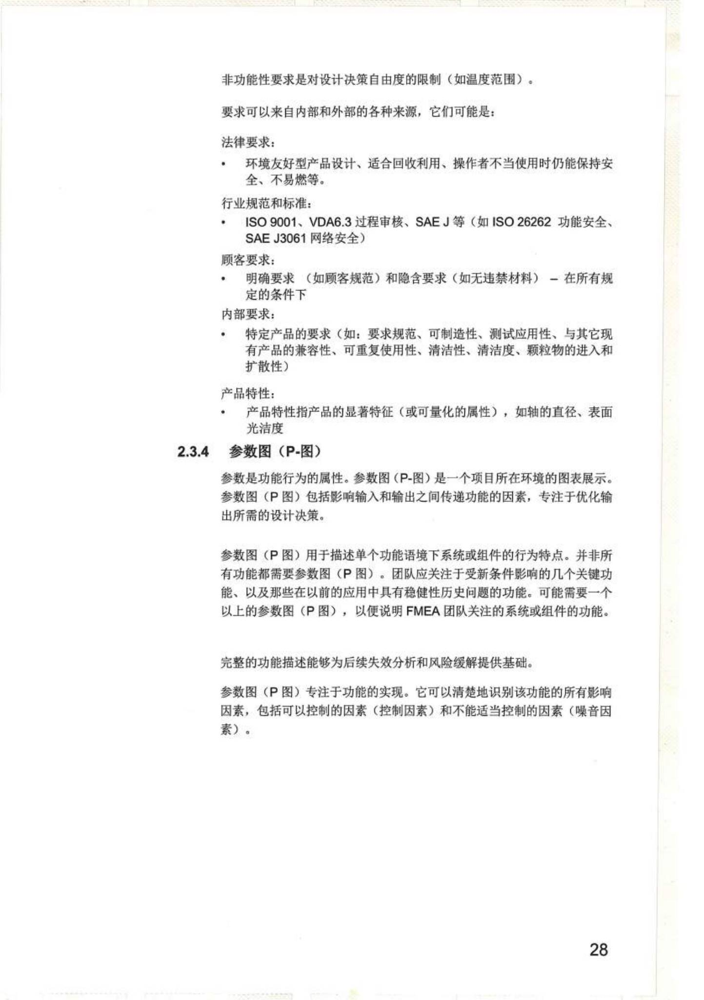
非功能性要求是对设计决策自由度的限制（如温度范围）。
要求可以来自内部和外部的各种来源，它们可能是：
法律要求：
• 环境友好型产品设计、适合回收利用、操作者不当使用时仍能保持安
全、不易燃等。
行业规范和标准：
• ISO 9001 VDA6 过程审核、 SAE 等（如 1S026262 功能安全、
SAE J3061 络安全）
顾客要求：
• 明确要求 （如顾客规范）和隐含要求（如无违禁材料） 在所有规
定的条件下
内部要求：
• 特定产品的要求（如 要求规范、可制造性、测试应用性、与其它现
有产品的兼容性、可重复使用性、清洁性、清洁度、颗粒物的进入和
扩散性）
产品特性：
• 产品特性指产品的显著特征（或可量化的属性），如轴的直径、表面
光洁度
2.3.4 参数图 (P- 图）
参数是功能行为的属性。参数图 P- 图）是 个项目所在环境的图表展示。
参数图 图）包括影响输入和输出之间传递功能的因素 专注于优化输
出所需的设计决策。
参数图 图）用千描述单个功能语境下系统或组件的行为特点。并非所
有功能都需要参数图 图）。团队应关注于受新条件影响的几个关键功
能、以及那些在以前的应用中具有稳健性历史问题的功能。可能需要
以上的参数图 图），以便说明 FMEA 团队关注的系统或组件的功能。
完整的功能描述能够为后续失效分析和风险缓解提供基础。
参数图 图）专注千功能的实现。它可以清楚地识别该功能的所有影响
因素，包括可以控制的因素（控制因素）和不能适当控制的因素（噪音因
素）。
28
第 41 / 239 页 展开/收起文字
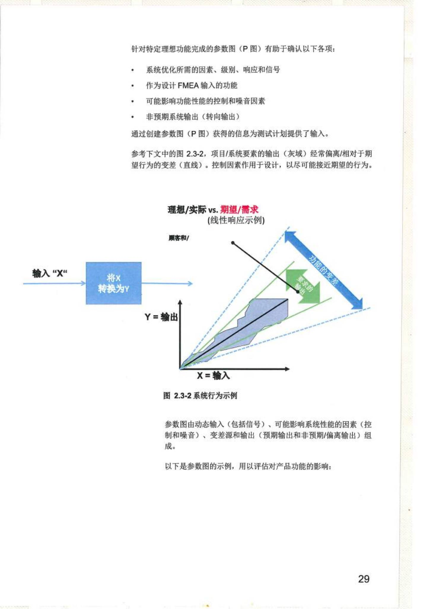
针对特定理想功能完成的参数图 CP 图）有助千确认以下各项：
系统优化所需的因素、级别、响应和信号
作为设计 FMEA 输入的功能
• 可能影响功能性能的控制和噪音因素
非预期系统输出（转向输出）
通过创建参数图 CP 图）获得的信息为测试计划提供了输入。
参考下文中的图 3-2, 项目／系统要素的输出（灰域）经常偏离／相对千期
望行为的变差（直线）。控制因素作用千设计，以尽可能接近期望的行为。
理想／实际 vs 期望／需求
（线性响应示例）
顺客和
输入 "X"
Y= 输出 ___________________________ ,,-
X= 输入
2.3-2 系统行为示例
参数图由动态输入（包括信号）、可能影响系统性能的因素（控
制和噪音）、变差源和输出（预期输出和非预期／偏离输出）组
成。
以下是参数图的示例，用以评估对产品功能的影响：
29
第 42 / 239 页 展开/收起文字
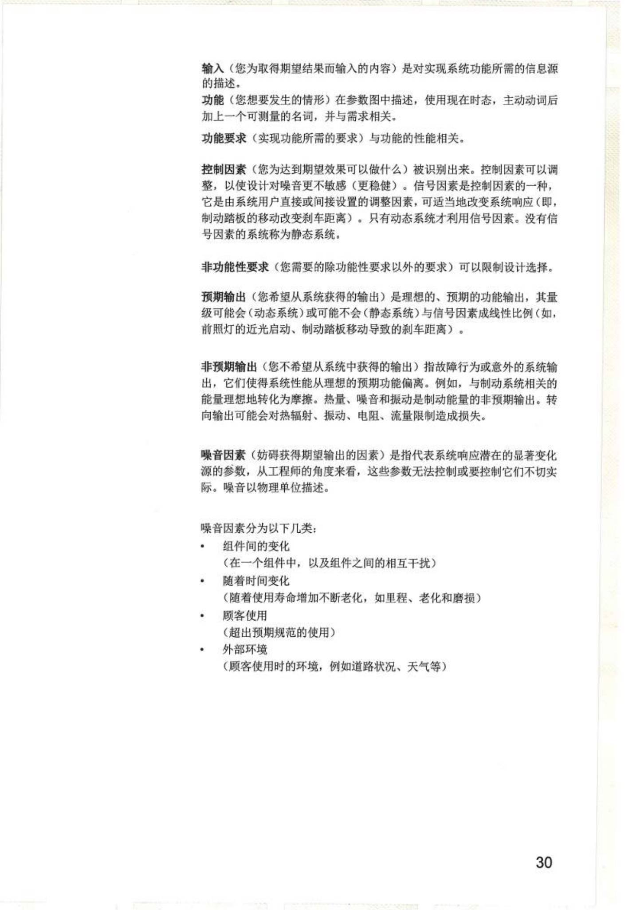
输入（您为取得期望结果而输入的内容）是对实现系统功能所需的信息源
的描述。
功能（您想要发生的情形）在参数图中描述，使用现在时态，主动动词后
加上一个可测量的名词，并与需求相关。
功能要求（实现功能所需的要求）与功能的性能相关。
控制因素（您为达到期望效果可以做什么）被识别出来。控制因素可以调
整，以使设计对噪音更不敏感（更稳健）。信号因素是控制因素的一种，
它是由系统用户直接或间接设置的调整因素，可适当地改变系统响应（即，
制动踏板的移动改变刹车距离）。只有动态系统才利用信号因素。没有信
号因素的系统称为静态系统。
非功能性要求（您 需要的除功能性要求以外的要求）可以限制设计选择。
预期输出（您希望从系统获得的输出）是理想的、预期的功能输出 ，其量
级可能会（动态系统）或可能不会（静态系统）与信号因素成线性比例（如，
前照灯的近光启动、制动踏板移动导致的刹车距离）。
非预期输出（您不希望从系统中获得的输出）指故障行为或意外的系统输
，它们使得系统性能从理想的预期功能偏离。例如，与制动系统相关的
能董理想地转化为摩擦。热量、噪音和振动是制动能量的非预期输出。转
向输出可能会对热辐射、振动、电阻、流量限制造成损失。
噪音因素（妨碍获得期望输出的因素）是指代表系统响应潜在的显著变
源的参数，从工程师的角度来看，这些参数无法控制或要控制它们不切实
际。噪音以物理单位描述。
噪音因素分为以下几类：
组件间的变化
（在一个组件中，以及组件之间的相互干扰）
随着时间变化
（随着使用寿命增加不断老化，如里程、老化和磨损）
顾客使用
（超出预期规范的使用）
外部环境
（顾客使用时的环境，例如道路状况、天气等）
30
第 43 / 239 页 展开/收起文字
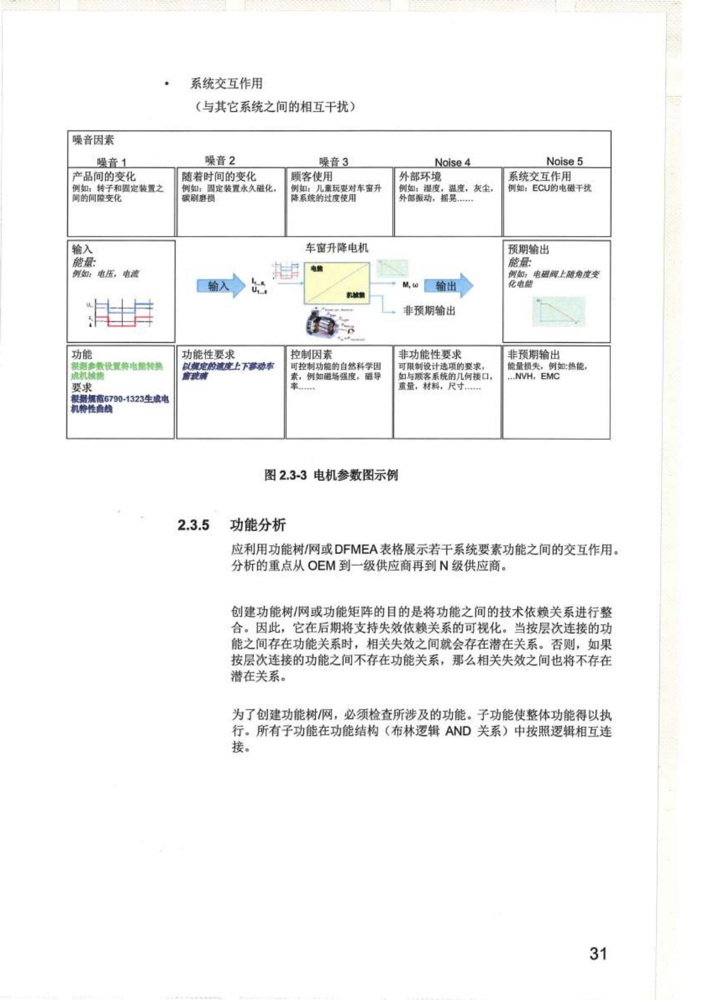
噪音因素
产品间的变化
例如 转子和固定装置之
间的间隙变化
，立傍， ：宅压，窀流
冒主口
系统交互作
（与其它系统之 互干扰）
噪音
;;~』婴:i~磁化 ll :lm1西；；甘车窗升 II ftti(;:~ 灰土 11:: ~1它还：：扰
车窗升降电机
~ ... 非预期输出
”
预期轮出
能毋
俏如：宅磁阅上筋角度变
化宅能
江将电印换 吕盓已妇彦釭 控制因素
可控制功能的自然科学因
素，例如磁场强度，磁导
非功能性要求 非预期输出
可限制设计选项的要求， 能保损失，例如热能，
如与顾客系统的几何接口， ... NVH, EMC
重且，材料，尺寸
6790 1323生成电
机特性面线
2.3-3 电机 数图示例
2.3.5 功能分析
应利用功能树 网或 DFMEA 表格展示若干系统要素功能之间的交互作用。
分析的重点从 OEM 到一级供应商再到 级供应商。
创建功能树 网或功能矩阵的目的是将功能之 的技术依赖关系进行整
合。因此，它在后期将支持失效依赖关系的可视 。当按层次连接的功
能之间存在功能关系时，相关失效之间就会存在潜在关系。否则，如果
按层次连接的功能之间不存在功能关系，那么相关失效之间也将不存在
潜在关系。
为了创建功能树 网，必须检查所涉及的功能。子功能使整体功能得以执
行。所有子功能在功能结构（布林逻辑 AND 关系）中按照逻辑相互连
接。
31
第 44 / 239 页 展开/收起文字
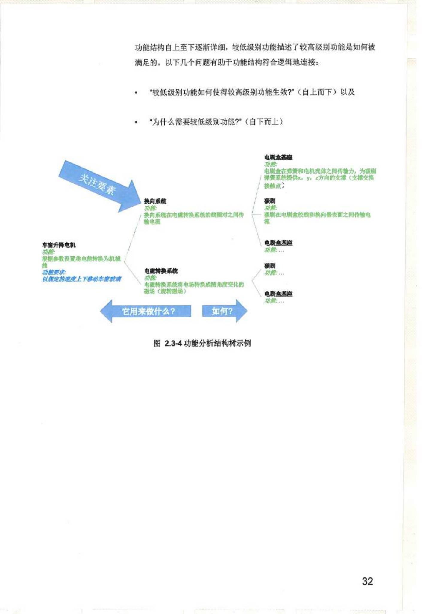
车官升降电机
功鹿
功能结构自上至下逐渐详细，较低级别功能描述了较高级别功能是如何被
满足的。以下几个问题有助于功能结构符合逻辑地连接：
＂较低级别功能如何使得较高级别功能生效？”（自上而下）以及
”为什么需要较低级别功能？”（自下而上）
换向系统
==一统的线圈对之间传
电剧俞茶摩
功熊
电刷盒在弹簧和电机壳体之间传输力，为碳刷
弹簧系统提供x, y, 方向的支撑（土撑父换
接触点
= 碳刷在电刷盒绞线和换向器表面之间传输电
电刷盒基座
功熊
根据参数设置将电能转换为机械
功舰要戎
以癫定的立rl!I动车 电瘟转换系缭
功虏
电磁转换系统将电场转换成隧角度变化的
磁场（旋转磁场）
1: ,
辑纽座
．咑韦~),t 』＂ = 功房
2.3-4 功能分析结构树示例
32
第 45 / 239 页 展开/收起文字
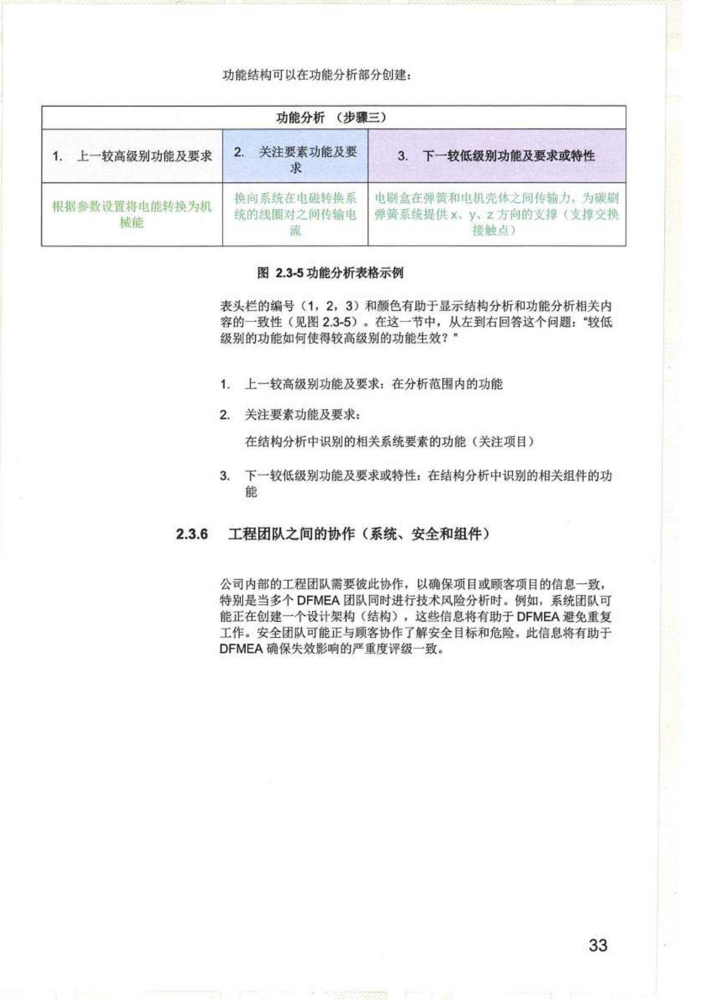
1. 较高级别功能及要求
根据参数设置将电能转换为机
械能
功能结构可以在功能分析部分创建：
功能分析 （步骤三）
2 关注要素功能及要 3. 下一较低级别功能及要求或特性
换向系统在屯磁转换系 电刷盒在弹簧和电机壳体之间传输力，为碳刷
统的线圈对之间传输电 弹簧系统提供 方向的支撑（支撑交换
接触点）
2.3-5 功能分析表格示例
表头栏的编号 (1, 2, 3) 和颜色有助于显示结构分析和功能分析相关内
容的 致性（见图 2.3-5) 在这一节中，从左到右回答这个问题：＂较低
级别的功能如何使得较高级别的功能生效？”
1. 较高级别功能及要求：在分析范围内的功能
2. 关注要素功能及要求：
在结构分析中识别的相关系统要素的功能（关注项目）
3. 较低级别功能及要求或特性：在结构分析中识别的相关组件的功
2.3.6 工程团队之间的协作（系统、安全和组件）
公司内部的工程团队需要彼此协作，以确保项目或顾客项目的信息 致，
特别是当多个 DFMEA 团队同时进行技术风险分析时。例如，系统团队可
能正在创建 个设计架构（结构），这些信息将有助于 DFMEA 避免重复
工作。安全团队可能正与顾客协作了解安全目标和危险。此信息将有助千
DFMEA 确保失效影响的严重度评级
33
第 46 / 239 页 展开/收起文字
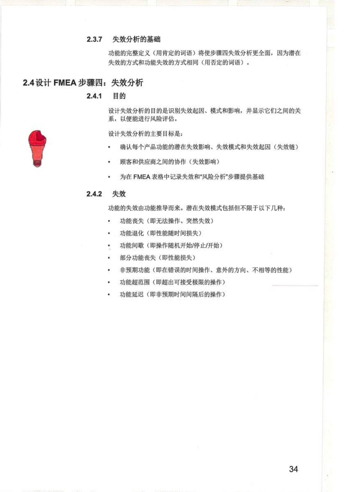
2.3.7 失效分析的基础
功能的完整定义（用肯定的词语）将使步骤 失效分析更全面 因为潜在
失效的方式和功能失效的方式相同（用否定的词语）
2.4 设计 FMEA 步骤四：失效分析
2.4.1 目的
设计失效分析的目的是识 失效起因、模式和影响，并显示它 之间的关
系，以便能进行风险评估。
设计失效分析的主要目标是：
确认每个产品功能的潜在失效影响、失效模式和失效起因（失效链）
顾客和供应商之间的协作（失效影响）
为在 FMEA 表格中记录失效和 风险分析＂步骤提供基础
2.4.2 失效
功能的失效由功能推导而来。潜在失效模式包括但不限于以下 种：
• 功能丧失（即无法操作、突然失效）
功能退化（即性能随 间损失）
功能间歇（即操作随机开始 停止 开始）
部分功能丧失（即性能损失）
非预期功能（即在错误的时间操作、意外的方向、不相等的性能）
功能超范围（即超出可接受极限的操作）
功能延迟（即非预期时间间隔后的操作）
34
第 47 / 239 页 展开/收起文字
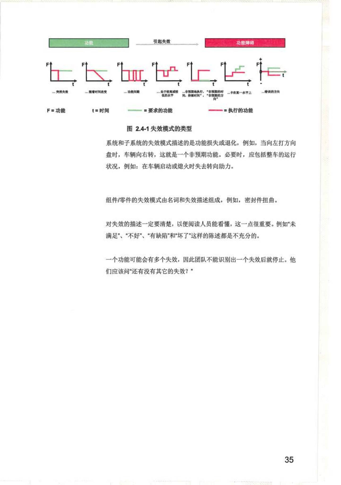
突然失效
F= 功能
引起失效 _ 随着时间改变
五巳巨处千较高戒较 ．非预期地执行， 非预期的时 ••• 卡在某一水平上 ．．．错误的方向
低的水平 间，持续时间•, 非预期的方
功訰间歇
向“
t= 时间 ＝要求的功能 ＝执行的功能
2.4-1 失效模式的类型
系统和子系统的失效模式描述的是功能损失或退化，例如，当向左打方向
盘时，车辆向右转，这就是 个非预期功能。必要时，应包括整车的运行
状况，例如：在车辆启动或熄火时失去转向助力。
组件／零件的失效模式由名词和失效描述组成，例如，密封件扭曲。
对失效的描述一定要清楚，以便阅读人员能看懂，这一点很重要。例如＇未
满足”、“不好”、“有缺陷”和｀坏了“这样的陈述都是不充分的。
个功能可能会有多个失效，因此团队不能识别出一个失效后就停止。他
们应该问”还有没有其它的失效？”
35
第 48 / 239 页 展开/收起文字
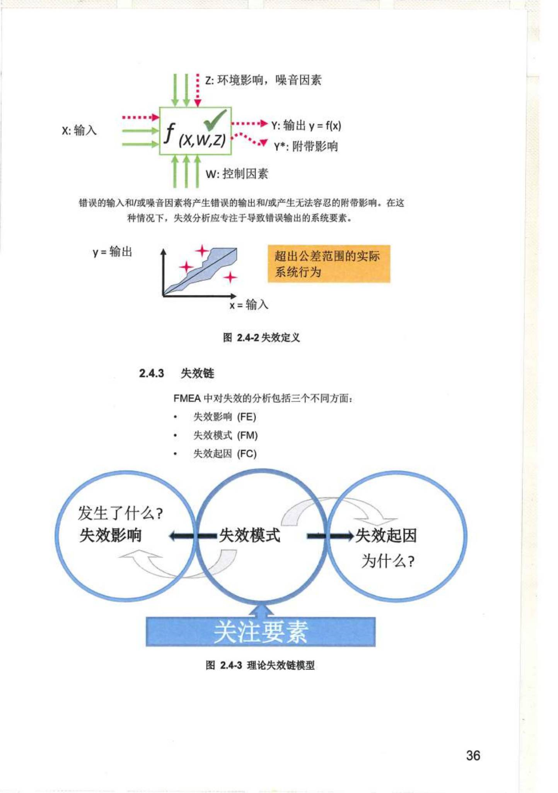
: Z: 环境影响， 噪音因素 .
X: 输入
错误的输入和 或噪音因素将产生错误的输出和 或产生无法容忍的附带影响 在这
种情况下，失效分析应专注千导致错误输出的系统要素
y=
范围的实际
x= 输入
2.4-2 失效定义
2.4.3 失效链
FMEA 对失效的分析包括 个不同方面
失效影响 (FE)
失效模式 (FM)
失效起因 (FC)
2.4 理论失效链模型
36
第 49 / 239 页 展开/收起文字
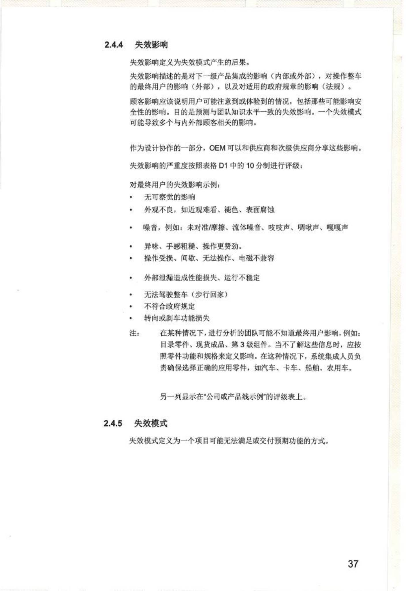
2.4.4 效影
失效影响定义为失效模式产生的后果。
失效影响描述的是对下 级产品集成的影响（内部或外部），对操作整车
的最终用户的影响（外部），以及对适用的政府规章的影响（法规）。
顾客影响应该说明用户可能注意到或体验到的情况，包括那些可能影响安
全性的影响。目的是预测与团队知识水平 致的失效影响。 个失效模式
可能导致多个与内外部顾客相关的影响。
作为设 协作的一部分， OEM 可以和供应商和次级供应商分享这些影响。
失效影响的严重度按照表格 中的 10 分制进行评级
对最终用户的失效影响示例：
无可察觉的影响
外观不良，如近观难看、褪色、表面腐蚀
噪音 例如 未对准 摩擦、流体噪音、吱吱声、喟啾声、嘎嘎声
异味、手感粗糙、操作更费劲。
操作受损、间歇、无法操作、 磁不兼容
外部泄漏造成性能损失、运行不稳定
无法驾驶整车（步行回家）
不符合政府规定
转向或刹车功能损失
注： 在某种情况下，进行分析的团队可能不知道最终用户影响，例如：
目录零件、现货成品、第 级组件。当不了解这些信息时，应按
照零件功能和规格来定义影响。在这种情况下 系统栠成人员负
责确保选择正确的应用零件，如汽车、卡车、船舶、农用车。
另一列显示在“公司或产品线示例＇ 评级表上。
2.4.5 失效模式
失效模式定义为一个项目可能无法满足或交付预期功能的方式。
37
第 50 / 239 页 展开/收起文字
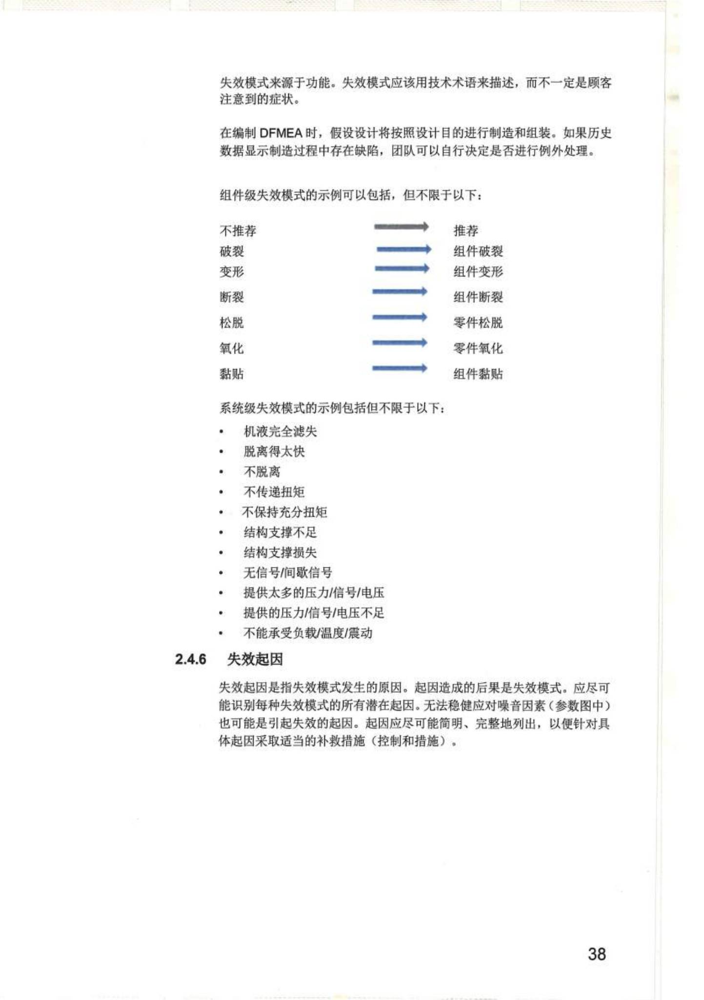
失效模式来源于功能 失效模式应该用技术术语来描述，而不一定是顾客
注意到的症状。
在编制 DFMEA 时，假设设计将按照设计目的进行制造和组装 如果历史
数据显示制造过程中存在缺陷，团队可以自行决定是否进行例外处理
组件级失效模式的示例可以包括，但不限千以下
不推荐
破裂
变形
断裂
松脱
氧化
黏贴
系统级失效模式的示例包括但不限千以下：
机液完全滤失
脱离得太快
不脱离
不传递扭矩
不保持充分扭矩
结构支撑不足
结构支撑损失
• 无信号 间歇信
提供太多的压力 信号 电压
提供的压力 信号 电压不足
不能承受负载 温度 宸动
2.4.6 失效起因
推荐
组件破裂
组件变形
组件断裂
零件松脱
零件氧化
组件黏贴
失效起因是指失效模式发生的原因 起因造成的后果是失效模式 应尽可
能识别每种失效模式的所有潜在起因。无法稳健应对噪音因素（参数图中）
也可能是引起失效的起因 起因应尽可能简明、完整地列出，以便针对具
体起因采取适当的补救措施（控制和措施）
38
第 51 / 239 页 展开/收起文字
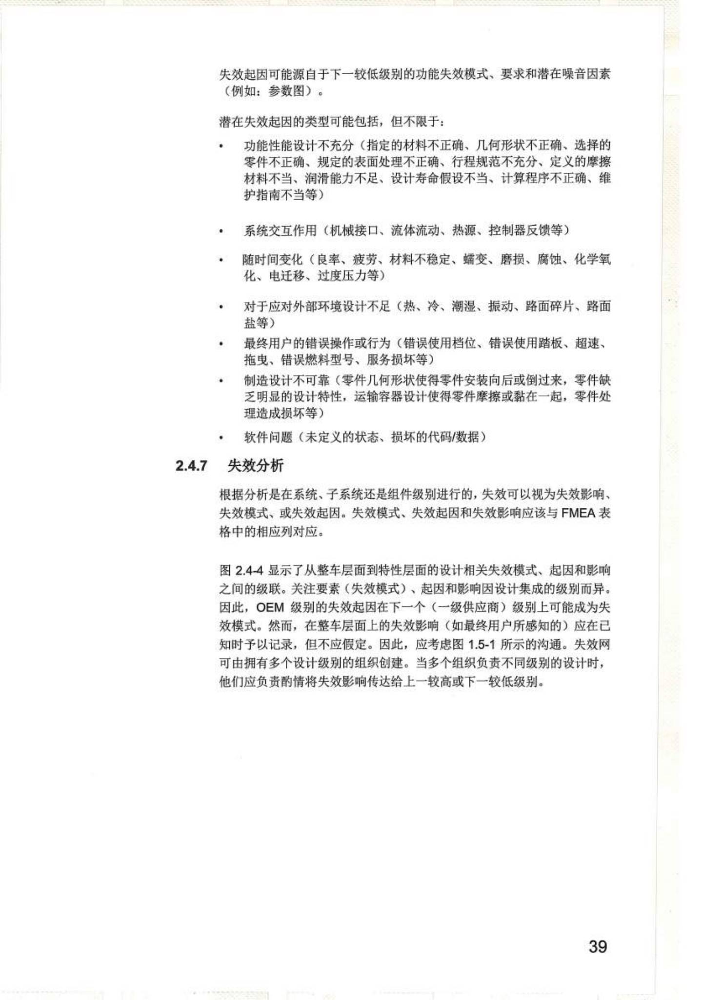
失效起因可能源自于下 较低级别的功能失效模式、要求和潜在噪音因素
（例如：参数图）。
潜在失效起因的类型可能包括，但不限千：
功能性能设计不充分（指定的材料不正确、几何形状不正确、选择的
零件不正确、规定的表面处理不正确、行程规范不充分、定义的摩擦
材料不当、润滑能力不足、设计寿命假设不当、计算程序不正确、维
护指南不当等）
系统交互作用（机械接口、流体流动、热源、控制器反馈等）
随时间变化（良率、疲劳、材料不稳定、蠕变、磨损、腐蚀、化学氧
化、电迁移、过度压力等）
对于应对外部环境设计不足（热、冷、潮湿、振动、路面碎片、路面
盐等）
最终用户的错误操作或行为（错误使用档位、错误使用踏板、超速、
拖曳、错误燃料型号、服务损坏等）
制造设计不可靠（零件几何形状使得零件安装向后或倒过来，零件缺
乏明显的设计特性，运输容器设计使得零件摩擦或黏在一起，零件处
理造成损坏等）
软件问题（未定义的状态、损坏的代码／数据）
2.4.7 失效分析
根据分析是在系统、子系统还是组件级别进行的，失效可以视为失效影响、
失效模式、或失效起因 失效模式、失效起因和失效影响应该与 FMEA
格中的相应列对应。
2.4-4 显示了从整车层面到特性层面的设计相关失效模式、起因和影响
之间的级联 关注要素（失效模式）、起因和影响因设计集成的级别而异。
因此， OEM 级别的失效起因在下一个（一级供应商）级别上可能成为失
效模式。然而，在整车层面上的失效影响（如最终用户所感知的）应在已
知时予以记录，但不应假定。因此，应考虑图 1.5-1 所示的沟通 失效网
可由拥有多个设计级别的组织创建。当多个组织负责不同级别的设计时，
他们应负责酌情将失效影响传达给上一较高或下一较低级别。
39
第 52 / 239 页 展开/收起文字
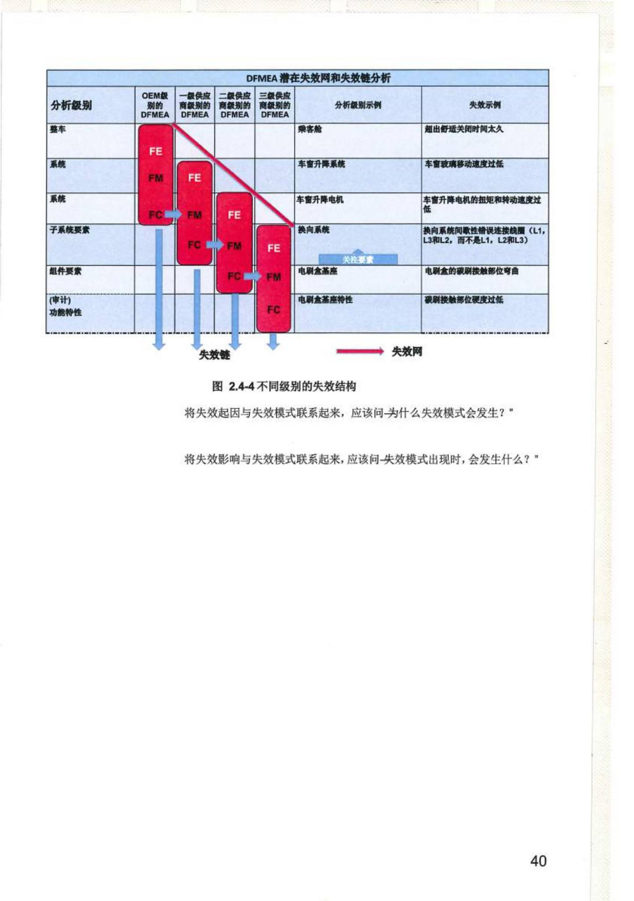
分析级别
薹车
组件蔓素
（审计）
功健特性
DFMEA 谱在失效网和失效链分析
分析氯则示例
乘客舱
车盲升降秉航
失效网
2.4-4 不同级别的失效结构
失效示例
超出舒适关闭时间太久
车盲羲靖参动邃度过低
车盲升降电机的扭矩和转动邃度过
换向秉觥间歇性铺恨连披线圈 (l1
l3 l2, 而不是l1, l~l3)
电剔盒的蒙刷接触挪位弯曲
豪刷撩触部位硬度过低
将失效起 与失效模式联系起来，应该问共 什么失效模 会发生？
将失效影 与失效模式联系起来，应该 效模式出现时， 会发生 么？”
40
第 53 / 239 页 展开/收起文字
车窗升降电机
功熊
根据参数设室将电能转化为机械能
功舫要农
以规定的速度上下移动车窗玻璃
失效
车窗升降电机的扭矩和转动速度过低
换向系统
功能·
换向系统在电磁转换系统的线圈对之间
传输电流
失效
换向系统的角度 差导致间 性错误连
接线圈 L1 L3 L2 而不是 1 , L2
3}
电刷盒基座
功能·
电刷盒在弹簧和电机壳体之间传输力，为碳刷
弹簧系统提供x,y,z方向的支撑（支撑交换接
刷盒的碳 部位
磺劂在电劂盒绞线和换向 嫌面之OO倩输电流
失效
俜输的鬼诡过小
电刷盒基座
由砃晨招 =
1. 对千上一较高级别要素和
或最终用户的失效影响 (FE)
2.4-5 失效分析结构树示例
失效结构可在失效分析部分创建
失效分析 （步骤四）
2. 关注要素的失效模式 (FM) 3. 下一较低级别要素或特性的
失效起因 (FC)
车窗升降电机的扭矩和转动速度 换向系统的角度偏差导致间歇性错 电刷盒的碳刷接触部位弯曲
过低 误连接线捆 L3 L2 而不
L1 L2 L3
2.4 失效分析表格示例
再次遵循表头编号 1, 2, 和颜色标注，通过检查功能分析中的各个
项目，开始构建失效链。
1. 失效影响(FE)
功能分析中与士；一较高级要素和 或最终用户”相关的失效影响
2. 失效模式(FM)
功能分析中与-足注要素相关的失效模式（或类型）
41
第 54 / 239 页 展开/收起文字
,~-
3 失效起因 CFC) :
结构树中与“下一较低级别要素或特性”相关的失效起因
结构分析、功能分析和失效分析可按照下表记录
2.4.8 失效分析记录
结构分析、功能分析和失效分析完成后， DFMEA 表格可以有多个视图。
1. 上一较高级别 1. 上一较高级别的功能和要求 1. 对于上一较高级别要素和
最终用户的失效影响 CFE)
车窗升降电机 根据参数设置将电能转换为机械能 车窗升降电机的扭矩和转动速度
过低
2.4-7 产品最终项目－功能决效表格视图
2. 关注要素 2. 关注要素的功能和要求 2. 关注要素的失效模式 FM
换向系统 换向系统在电磁转换系统的线固对之 换向系统的角度偏差导致间歇性
间传输电流 错误连接线圈 L1 L3 L2, 不是 L1 L2 L3
2.4-8 关注项目 要素－功能－失效表格视图
3. 下一较低级别或特性类 3. 下一较低级别的功能和要求或特 3. 较低级别要素或特性的
失效起因 CFC)
电刷盒在弹簧和电机壳体之间传输力，
电刷盒基座 为碳刷弹簧系统提供 方向的支 电刷盒的碳刷接触部位弯曲
撑（支撑交换接触占）
2.4-9 较低级别项目－功能－失效表格视图
42
第 55 / 239 页 展开/收起文字
2.4.9 顾客和供应商之间的协作 失效 响）
根据与顾客的协议和与供应商共享的需要，失效分析的输出可在风险分析
步骤之前或之后由顾客和供应商进行评审。
2.4.10 风险分析的基础
对潜在失效的完整定义将为步骤五”风险分析”的完整实施提供基础，因为
严重度、频度和探测度的评级都基于失效描述。如果潜在失效过于模糊或
缺失 可能导致风险分析不完整。
2.5 设计 FMEA 步骤五：风险分析
2.5.1
2.5.2
目的
设计风险分析的目的是通过评估严重度、频度和探测度来估计风险，并对
需要采取的措施进行优先排序。
设计风险分析的主要目标是：
对现有和 或计划的控制进行分配、并对失效进行评级
针对失效起因，分配预防控制
针对失效起因和 或失效模式，分配探测控制
针对每个失效链进行严重度、频度和探测度评级
顾客和供应商之间的协作（严重度）
产品或过程优化步骤的基础
设计控制
现有的设计控制是针对以前类似的设计建立的 其效果已得到证实。设计
控制文件为设 的稳健性提供基础。预防型控制和探测型控制是现有的验
证和确认方法库的一部分。预防控制提供信息或指导，作为设计的输入使
用。探测控制则描述了已建立的验证和确认程序 这些程序已被证明在出
现失效时，能探测到失效。用于防止已发布的测试程序中的失效或行项的
设计特征的特定参考将在失效和设计控制之间建立可靠的联系。对千那些
必要的但不属于当前已确定的程序库的预防和 或探测方法，应作为措施写
入设计 FMEA
43
第 56 / 239 页 展开/收起文字
2.5.3 当前预防控制 (PC)
当前预防控制描述了如何使用现有的和计划中的行为来减轻导致失效模
式的潜在起因，为确定频度评级提供基础。预防控制与性能要求相关。
对于不是在该背景下设计的项目或从供应商购买的作为库存或目录项的
项目，预防控制应具体说明该项目如何满足要求。可以引用目录中的规范
表。
当前探测控制必须清楚全面地说明。诸如~tl 试”或今冯 室测试”之类的陈
述，不能算是对探测控制的明确说明。如适用，应当引用具体测试、测试
计划或程序，以表明 FMEA 团队已确定该测试将在失效模式或起因发生时
切实探测出它们（例如：测试号 1234 爆裂压力测试，第 6.1 段）。
DFMEA 团队还应该在设计中把安全边际作为预防控制来考虑
当前预防控制的示例：
EMC 指令遵守、指令 89/336/EEC
根据模拟、公差计算和程序的系统设计－分析概念，以建立设计要求
公布的线程类设计标准
图纸热处理规范
传感器性能规范
机械冗余（安全失效）
可测试性设计
设计和材料标准（内部和外部）
文件－类似设计的最佳实践、经验等记录
防错法（例如，零件的几何结构防止错误方向）
与以前应用中经过验证的并具有性能历史记录的设计完全相同。 （然
而，如果工作周期或运行条件发生变化，则借用的项目需要重新验证，
以便探测控制与此相关。）
44
第 57 / 239 页 展开/收起文字
屏蔽或防护，可减轻潜在的机械磨损、热暴露或 EMC
• 与最佳实践相
预防措施完成后，频度通过探测控制来确认。
2.5.4 当前探测控制 CDC)
当前探测控制在项目交付生产前探测失效起因或失效模式是否存在。
FMEA 中列出的当前探测控制表示计划的活动（或已完成的活动），而不
是可能永远不会实施的潜在活动。
当前探测控制必须清楚全面地说明。诸如＇测试”或＇实验室测试”之类的陈
述，不能算是对探测控制的明确说明。如适用，应当引用具体测试、测试
计划或程序，以表明 FMEA 团队已确定该测试将在失效模式或起因发生时
切实探测出它们（例如：测试号 1234 爆裂压力测试，第 6.1 段）。
当前探测控制的示例
功能检查
爆裂测试
环境测试
驾驶测试
耐久性测试
运动范围研究
硬件在环
软件在环
实验设计
电压输出实验室测量
所有对于失效起因或失效模式的探测控制都应输入到“当前探测控制”
中。
45
第 58 / 239 页 展开/收起文字
一一、
PC
决策之之前的评审和应对，
例如 GAE, 公差研究
确定设 要素
PC:
理论测试
例如 DoE, FEA
PC (预防）：预防控制
DC (应对）：探测控制
I
失效
2.5-1 设计 FMEA 中的预防和探测
2.5.5 当前预防和探测控制的确认
DC:
质橇检验
失效检验
－寿命周期的功能测试
例如：趋势分析
应确认当前预防和探测控 的有效 。这可以 在验证分解评审过程中完
成。该确认可以根据 队的正常产 开发程序 适当 DFMEA 或其它
项目文件中记录。如果这些控制被证明无效， 需要额外的措施。
若使用之前产品的 FMEA 条目，应对频度和探测度评估进行评审 因为新
产品可能有不同的条件。
确认预防
预防 探测
100%
设计理解
0 样品 时间
: 模拟Do 新模拟试验 ] 用现有样品进行测 •-- --- -- 计算 －一 新计算 一---- --,
2.5-2 设计理解路线图
46
第 59 / 239 页 展开/收起文字
2.5.6 评估
应评估每 个失效模式、起因和影响，以便对风险进行估计 评估风险的
级别标准如下
严重度(S)
频度(0)
探测度(D)
代表失效影响的严重程度
代表失效起因的发生频率
代表已发生的失效起因和 或失效模式的可探测程度
的评估分别采用 1-10 分制， 10 代表最高风险
即使产品 过程看起来相同，将 个团队的 FMEA 和另 个团队
FMEA 评级进行比较是不合适的 因为每个团队的环境都不
同，因此他们各自的评级都是独 的（也就是说，评级是主
观的）
2.5.7 严重度 CS)
严重度评级是 种度 它关系到被评估功能的既定失效模式的最严重失
效影响程度 严重度评级用千确定某个 FMEA 范围的优先级 并在不考虑
频度和探测度的清况下确定
严重度应使用严重度表 D1 中的标准进行估计。该表可以扩充，以包括特
定产品的示例 FMEA 项目团队应就评估标准和评级体系达成 即使
根据单个设计分析做了修改，该标准和体系也是 致的
如果需要，失效影响的严重度评估应该由顾客转移给供应商
47
第 60 / 239 页 展开/收起文字
s 影响
10
非常高
9
8
7
6
5
4
3
2
1 非常低
产品一般评估标准严重度(S)
根据以下标准对潜在失效影响进行评级。 空白，由使用人员填写
严重度标准 公司或产品系列示例
影响到车辆和 或其他车辆的操作安全，驾驶员、乘客、
道路使用者或行人的健康状况。
不符合法规。
在预期使用寿命内，失去正常驾驶所必需的车辆主要功
能。
在预期使用寿命内，降低正常驾驶所必需的车辆主要功
能。
失去车辆次要功能
降低车辆次要功能
外观、声音、振动、粗糙度或触感令人感觉非常不舒服。
外观、声音、振动、租糙度或触感令人感觉中度的不
舒服。
外观、声音、振动、粗糙度或触感令人略微感觉不舒服。
没有可觉察到的影响。
D1-DFMEA 严重度 (S)
2.5.8 频度 (0)
频度评级是根据评级标准对预防控制有效性的衡址。
频度评级应使用频度表 D2 中的标准进行估计。该表可以扩充，以包括特
定产品的示例。 FMEA 项目团队应就评估标准和评级体系达成一致，即使
根据单个设计分析（例如客车、卡车、摩托车等）做了修改，该标准和体
系也是一致的。
频度评级值是 FMEA 范围内的一个相对级别，可能不能反映实际发生的情
况。
根据评级表，并考虑已经完成的探测控制的结果，频度评级描述了顾客操
作中可能发生的潜在失效起因。
48
第 61 / 239 页 展开/收起文字
在分析评价值时，可以查阅类似产品领域的专家意见、数据手册、保修数
据库和其它经验。
当针对频度评定失效起因时，考虑了对当前预防控制有效性的估计。评级
的准确性取决千对预防控制的描述。
以下问题可帮助团队确定适当的频度等级：
类似组件、子系统或系统的过往使用情况和使用现场经验是怎样的？
该项目是否是一个借用件或类似于先前水平的项目？
与先前水平的项目相比，变化有多大？
该项目是完全新的吗？
应用是什么或有哪些环境改变？
是否使用了工程分析（例如：可靠性）来对应用的预期可比较频度等
级进行估计？
预防控制是否到位？
在产品开发过程中，其稳健性是否得到验证？
49
第 62 / 239 页 展开/收起文字
产品的潜在频度 (0)
根据以下标准对潜在失效起因进行的评级。在确定最佳预估频度（定性评级）时应考虑 空白，由使用人
产品经验和预防控制。 员填写
对失效起因发生 频度标准 -DFMEA 公司或产品系
的预测 列示例
在无操作经验和 或在运行条件不可控制的情况下的任何地方
对新技术的首次应用 没有对产品进行验证和 或确认的经验
10 极高
不存在标准，且尚未确定最佳实践 预防控制不能预测使用现
场绩效或不存在预防控制。
在公司内首次应用具有技术创新或材料的设计。新应用，或工
9 作周期／运行条件有改变。没有对产品进行验证和 或确认的经
验。
预防控制不是针对确定特定要求的性能。
非常高 在新应用内首次使用具备创新技术的设计产品或材料。新应
用，或工作周期／运行条件有改变。没有对产品进行验证和
确认的经验
极少存在现有标准和最佳实践，不能直接用千该设计产品。
预防控制不能可靠地反映使用现场绩效。
50
第 63 / 239 页 展开/收起文字
产品的潜在频度 0)
根据以下标准对潜在失效起因进行的评级 在确定最佳预估频度（定性评级）时应考虑产品 空白，由使
经验和预防控制 用人员填写
对失效起因 频度标准 -DFMEA 公司或产品
发生 预测 系列示例
根据相似技术和材料的新型设计。新应用，或工作周期／运行条件有改
变。没有对产品进行验证和 或确认的经验。
7 标准、最佳实践和设计规则符合基础设计要求，但不适用于创新产品
预防控制提供了有限的性能指标
应用现有技术和材料，与之前设计相似 类似应用，工作周期或运行条
件有改变。之前的测试或使用现场经验。
6 存在标准和设计规则，但不足以确保不会出现失效起因 预防控制提供
了预防失效起因的部分能力。
应用成熟技术和材料，与之前设计相比有细节上的变化 类似的应用、
工作周期或运行条件。之前的测试或使用现场经验，或为具有与失效相
关测试经验的新设计
5 在之前设计中所学到的与解决设计问题相关的教训 在本设计中对最佳
实践进行再评估，但尚未经过验证。预防控制能够发现与失效起因相关
的产品缺陷，并提供部分性能指标。
,
与短期现场使用暴露几乎相同的设计 类似应用，工作周期或运行条件
有细微变化 之前测试或使用现场经验 之前设计和为新设计而进行的
4 改变符合最佳实践、标准和规范要求。
预防控制能够发现与失效起因相关的产品缺陷，很可能地反映设计符合
性。
|L
51
第 64 / 239 页 展开/收起文字
的潜 频度 0)
根据以下标准对潜在失效起因进行的评级。在确定最佳预估频度（定性评级）时应考虑 空白，由使用人
产品经验和预防控制。 员填写
或产
列示例
对已知设计（相同应用，在工作周期或操作条件方面）和测试
或类似运行条件下的现场经验的细微变化或成功完成测试程
序的新设计。
3 考虑到之前设计的经验教训，设计预计符合标准和最佳实践。
预防控制能够发现与失效起因相关的产品缺陷，并预测了与生
产设计的一致性。
与长期现场暴露几乎相同的设计。相同应用 具备类似的工作
周期或运行条件。在类似运行条件下的测试或使用现场经验。
2 常低 考虑到之前设计的经验教训并对其具备充足的信心，设计预
符合标准和最佳实践。预防控制能够发现与失效起因相关的产
品缺陷，并显示出对设计符合性的信心。
1 失效通过预防控制消除，通过设计失效起因不可能发生。
产品经验：在公司内使用产品的历史（新品设计、应用或使用案例）。已经完成的探测控制结果提供了设
计经验。
预防 制： 在产品设计中使用最佳实践、设计规则、公司标准、经验教训、行业标准、材料规范、政府规
定，以及以预防为导向的分析工具的有效性（分析工具包括计算机辅助工程、数学建模、模拟研究、公差
叠加和设计安全边际）。
：频度 10 可根据产品验证活动降低。
D2 -DFM 频度 (0)
52
第 65 / 239 页 展开/收起文字
D
10
I
9
2.5.9 探测度 CD)
探测度评级 (D) 是对探测控制有效性的估计，用于在项目交付生产前，
可靠地证明失效起因或失效模式 探测评级与最有效的探测控制相关。
探测度是一个相对的评级，且在单个 FMEA 范围内进行评级，它的确定不
考虑严重度或频度。应使用表 D3 中的标准对探测度进行评估 这个表格
可以用公司常用的探测方法进行补充。 FMEA 项目团队应该就评估标准和
评级体系达成 致，即使针对个别产品分析作了修改，该标准和体系也是
一致的。
探测度评级最初是对任何尚未被证实的控制的有效性进行的预测。在探测
控制完成后，可以对其有效性进行验证和重新评估 然而，探测控制（例
如· 测试）的完成或取消也会影响对频度的估计。
在确定该估计时，应考虑以下问题：
探测失效起因或失效模式的最有效测试是什么？
探测失效所需要的使用记录 工作周期是什么？
探测失效需要多少样品？
探测该起因／失效模式的测试程序是否已得到证明？
用千产品设计验证的潜在探测度 (D)
根据探测方法成熟度和探测机会对探测控制进行评级。 空白，由使用人
员填写
探测能力 探测方法成熟度 探测机会 公司或产品系
列示例
尚未制定测试过程。 尚未确定测试方法
非常低 没有为探测失效模式或失效起因而特别地 通过 不通过测试、失
设计测试方法。 效测试、老化测试
53
第 66 / 239 页 展开/收起文字
D
8
7
6
5
4
' 3
'
2
1
用千产品设计验证的潜在探测 (D)
根据探测方法成熟度和探测机会对探测控制进行评级。 空白，由使用人
员填写
探测能力
非常
测方法成 测机会 司或产品
列示例
新测试方法，尚未经过验证。 通过 不通过测试、失
效测试、老 测试
已经验证的测试方法，该方法用于功能性 通过 不通过测试
验证或性能、质量、可靠性以及耐久性确 失效测试
认；测试计划 间在产品开发周期内较迟，
如果测试失败将导致重新设计、重新开模
具导致生产延迟。 老化测试
已经验证的测试方法，该方法用于功能性 通过 不通过测试
验证或性能、质量、可靠性以及耐久性确 失效测试
认；计划时间充分，可以在开始生产之前
修改生产工装。 老化测试
之前测试证明不会出现失效模式或失效起因，或者探测方法经过实
践验证总是能够探测到失效模式或失效起因
D3-DFMEA 探测
2.5.10 措施优先级 (AP)
团队完成失效模式、失效影响、失效起因和控制的初始确认（包括严重度、
频度和探测度的评级）后 必须决定是否需要进 步努力来降低风险。
由千资源、时间、技术和其它因素的固有限制，他们必须选择如何最好地
将这些工作进行优先排序。
本手册介绍了措施优先级 AP 方法，提供了所有 1000
可能组合。该方法首先着重千严重度 其次为频度 然后为探测度 其逻
辑遵循了 FMEA 的失效预防目的。 AP 表建议将措施分为高－中－低优先级
别。公司可使用一个体系来评估措施优先级，而不是使用多个顾客要求的
多个体系
54
第 67 / 239 页 展开/收起文字
风险顺序数是 的乘积 范围为 1-1000 RPN 分布可以提供有
关评级范围的 些信息，但仅 RPN 并不能确定是否需要采取更多措施，
因为 RPN 的权重相等。因此， RPN 可能会对
不同组合产生类似的风险数，使团队无法确定如何进行优先级排序 使用
RPN 建议使用其他方法对类似 RPN 结果进行优先级排序，例如 SxO
不推荐使用风险顺序数 RPN 阙值来确定所需要的措施 本出版物不包
RPN sxo 方法。
风险矩阵可以表示 的组合 这些矩阵形象地展示
了分析结果，并可作为输入来对措施进行优先级排序。这样做时要根据公
司设立的标准进行，而本出版物中不包括此标准
由千 AP 表的设计是为了和本手册中提供的严重度、频度和探测度表
使用，如果组织针对特定产品、过程或项目选择修改 表，则 AP
表也应该仔细检查
设计 FMEA 和过程 FMEA 的措施优先级评级表是相同的，但是监视 及系统响应 FMEA 则不同
优先级高 : 评审和措施的最高优先级
优先级中 (M :
优先 :
团队需坚确定适 的措施来改进预防和 或探测控
制，或证明并记录为何当前的控制足够有效。
评审和措施的中等优先级。
团队应送确定适当的措施来改进预防和 或探测控
制，或由公司自行决定，证明并记录 前的控制
足够有效
评审和措施的低优先级
团队过以确定措施来改进预防或探测控制
对于潜在的 重度为 9-10 且措施优先 为高和中的失效影 议至少
层评审，包括所 取的任何建 措施
55
第 68 / 239 页 展开/收起文字
这不是对高 中、低风险的优先排序，而是对降低风险的措施的优先排
酌清在备注部分写上诸如｀无需进 步措施 之类的陈述 这可能
会有帮助
DFMEA PFMEA 的措施优先级 (AP)
措施优先级是以严重度、频度以及探测度评级的综合为基础的 目的是为降 风险而对各 空白 由使用
项措施进行优先排序 人员填写
影响 s 对失效起因发 探测能力 D 措施优先级 备注 生的预测 (AP)
非常低 7-10 H
5-6 H 非常高 8-10
2-4 H
非常高 1 H
非常低 7-10 H
5-6 H
6-7
2-4 H
对产品或 非常高 1 H
工厂的影 9-10 非常低 7-10 H 响度非常
5-6 H
4-5
2-4 H
非常高 1 M
非常低 7-10 H
5-6 M
2-3
2-4 L
非常高 1 L
非常低 1 非常高 非常低 1-10 L
56
第 69 / 239 页 展开/收起文字
DFMEA PFMEA 的措施优先级 (AP)
措施优先级是以严重度、频度以及探测度评级的综合为基础的，目的是为降低风险而对各 空白 ，由使用
项措施进行优先排序。 人员填写
影响 s 对失效起因发 探测能力 D 措施优先级 备注 生的预测 (AP)
低－非常低 7-10 H
非常高
5-6 H
8-10
2-4 H
非常高 1 H
低－非常低 7-10 H
5-6 H
6-7
2-4 H
对产品或 非常高 1 M
工厂的影 7-8 低－非常低 7-10 H
响度高 5-6 M
4-5
2-4 M
非常高 1 M
低－非常低 7-10 M
5-6 M
2-3
2-4 L
非常高 1 L
非常低 1 非常高－非常低 1-10 L
低－非常低 7-10 H
非常高
5-6 H
8-10
2-4 M
非常高 1 M
低－非常低 7-10 M
5-6 M
6-7
2-4 M
对产品或 非常尚 1 L
工厂的影 4-6 低－非常低 7-10 M
响度中等 5-6 L
4-5
2-4 L
非常高 1 L
低－非常低 7-10 L
5-6 L
2-3
2-4 L
非常高 1 L
非常低 1 非常禺－非常低 1-10 L
57
第 70 / 239 页 展开/收起文字
DFMEA PFMEA 的措施优先 (AP)
措施优先级是以严重度、频度以 探测度评级的综合为基础的，目的是为降低风险而对各 白，由使用
项措施进行优先排序 人员填
s 对失 起因 探测能力 D 措施优先
发生的预测 (AP)
非常低 7-10 M
5-6 M
非常高 8-10
2-4 L
非常高 1 L
非常低 7-10 L
5-6 L
6-7
2-4 L
非常高 1 L
对产品或工
厂的影响度 2-3 非常低
7
-10 L
5-6 L
4-5
2-4 L
非常高 1 L
非常低 7-10 L
5-6 L
2
-3
2-4 L
非常高 1 L
非常低 1 非常高 非常低 1-10 L
没有可觉察 1 非常低
1
-10 到的影响 常高
AP -DFMEA PFMEA 过程 FMEA 的措施优先
58
第 71 / 239 页 展开/收起文字
1. 对于上一
较高级别要
素和／或最终
用户的失效
影响 (FE)
车窗升降电
机的扭矩和
转动速度过
失效分析 （步骤四） 设计 FMEA 风险分析 （步 五）
f
6
^
3. 下一较低 对失效
, 对失效起因 I 把！ I§ 2. 关注要素的失效 级别要 起因的当 或失效模式
模式 FM 特性的失效 前预防控 的当前探测 Li) 起因 (FC) PC
, 控制 <DC
换向系统的角度偏 电刷盒的碳 根据 FEM 2 抽样测试 2 L
差导致间歇性错误 刷接触部位 6370 据测试规范
连接线圈 L1 L3 弯曲 行的电刷 MRJ82/60
L2, 而不是 L1 盒动态受 测扯电刷盒
L2 L3 力模拟 的弹性和塑
性变形影响
2.5-3DFMEA 风险分析 格示例
2.5.11 顾客和供 商之间的协作 严重度）
风险分析的结果是顾客和供应商对技术风险达成的 致理解 协作的方法
从口头报告到正式报告不一。 的信息量取决千项目的需要、公司政策、
合同协议等。共享 信息内容取决千公司在供应链中的位置 下面列出了
些示例：
1. OEM 可将整车级 DFMEA 的设计功能、失效影响和严重度与 级供
应商的 DFMEA 进行
2. 级供应商可将子系统设计 FMEA 的设计功能、失效影响和严重度与
负有设计责任的 级供应商进行比较
3. 级供应商以产品图纸和 或规范或其他方式传达有关产品特性的必
要信息，包括对标准或特殊特性和严重性的指定。此信息用作 级供
应商 PFMEA 以及 级供应商内部 PFMEA 的输入。当设计团队传达
“产品特性超出规范 的相关风险时，过程团队可以在制造过程中建立
适当水平的预防和探测控制 参考 PFMEA 3.4 节了解更多信息
59
^
! I
第 72 / 239 页 展开/收起文字
2.5.12 优化的基础
FMEA 七步法 中前五个步骤的输出结果用千确定是否需要额外的设计或
测试措施。设计评审、顾客评审、管理层评审和跨功能团队会议为步骤六
“优 ”提供基础。
设计 FMEA 步骤六：优化
2.6.1 目的
, 设计优化的目的是确定减轻风险的措施以及评估这些措施的有效性。
设计优化的主要 标是：
确认降低风险的必要措施
为措施实施分配职责 任务期限
• 实施措施并将其形成文件，包括对所实施措施的有效性的确认以及采
取措施后的风险评估
• FMEA 团队、管理层、顾客 供应商在潜在失效方面的协作
为改进产品要求和预防、探测控制提供基
设计优 的主要目的是通过改进设计来制定降低风险和增加顾客满意度
的措施。在这一步骤中， 队要评审风险分析的结果、并分配措施，以降
低失效起因发生的可能性 或者增强探测控制 有效性 以便探测出失效
起因或失效模式。对于那些能改进设 但不一定降低风险评估等级
施，也 以分配。这些措施指的是具体、可衡扯、可实现的措施，而不是
可能永远不会实施的潜在措施。这些措施不用于已经计划的活动，因为它
已经在预防或探测控制中记录下来并且已经在初始风险分析 考虑过
了。
60
第 73 / 239 页 展开/收起文字
如果团队决定不需要进一步采取措施，则在备注部分写上“无需进 步的措
施“， 表示风险分析已完成。
应使用 DFMEA 来评估与持续改进设计有关的技术风险。
优化的最有效顺序如
修改设计以消除或减少失效影响 FE
修改设 以降低失效起因 FC 的频度
提高探测 (D 失效起因 FC 或失效模式 FM 的能力
在发生设计修改 情况 ，所有受影响的设计要素都要重新评估
在概念变更的情况下， FMEA 的所有步骤都要针对受影响的部分进行评审
这是必要的，因为初始分析是基千不同的设计概念，已不再有效
2.6.2 责任分配
每个措施都应该 负责人和与之相关的目标完成日期。
负责人应确保措施的状态保持更新。如果措施被确认 那么该负责人也要
对措施 实施情况负责。
应记录预防和探测措施的实际完成日期，包括措施实施的日期。
目标完成日期应切合实际（例如，按照产品开发计划、在过程验证之前、
在生产开始之前）
2.6.3 措施的状态
措施的状态 建议分为以下几类：
尚未确定
没有确定的措施。
尚未决策（可选
措施已经确定 但还没有决定。正在创建决策文件。
执行（可选）
己对措施作 决定，但尚未执行。
61
第 74 / 239 页 展开/收起文字
不执
已完成状态是指措施已经被执行，其有效性已经被证明和记录，
并已经进行了最终评估。
当决定不执行某项措施时，就会分配｀＇不执行”的状态。如果实践
和技术限制超出当前能力，就会发生这种情况。
只有当 FMEA 团队评估了每个项目的措施优先级，并接受风险水平或记录
措施结束时， FMEA 工作才算完成。
如果”不采取措施 ，那么 ｀＇ 措施优先级＇就不会降低失效风险就会继续进入
产品设计。对于具有开放性目标的措施，需以书面形式将其关闭。
2.6.4 措施有效性评估
当措施完成时 频度和探测度值将重新评估，一个新的措施优先级可能要
被确定。
新的措施将获得初步措施优先级评估，作为对有效性的预测。
然而，该措施将一直保待＇尚未执行”的状态，直到其有效性得到测试为止。
测试完成后，初步评估必须得到确认或在必要时调整。然后，措施的状态
从“尚未执行”改为＂已完成“。
重新评估应基于采取的预防和探测措施的有效性，并且新的值应基于设计
FMEA 频度和探测度评级表中的定义。
2.6.5 持续改进
DFMEA 是设计的历史记录。因此，初始严重度、频度和探测度
编号需显示可见，或至少可作为历史记录一部分使用和访问。分析完
成后将形成 个存储库，能够记录过程决策和设计改进的进展。然而，对
于基础、系列或一般 DFMEA 初始的严重度、频度和探测度
评级可能被修改，因为这些信息在特定应用中被用作特定应用分析的起
62
第 75 / 239 页 展开/收起文字
DFMEA 风险分 （步骤 DFMEA （步骤六）
0
0 对失效 i 对失效
起因的
起因或 , , 失效模 ; til 1/l .-- . _
_
当前预 式的当 i I
DFME
, : til
~ I 探测
防控制 I 前探测 i 措施 <PC) 控制 ~ [Ill
<DC)
根据 2 抽样测 2 L MRJ11 测试 年月日 6 2 1 L
FEM 试：依据 40 最终 工程
6370 测试规 产品测
进行的 试：根 Max
电刷盒 MRJ82/ 据测试 Muell
动态受 60 测址 规范 可先
力模拟 电刷盒 MRJ11
的弹性 40
和塑性 酘苛刻
变形影 条件下
测蜇电
2.6- 最新 险评估的 DFMEA 优化表格示例
2.6.6 FMEA 团队 管理层、顾 和供应商之间针对潜在失 的协作
在技术风险分析进行期间和 或当 DFMEA 初步完成时， FMEA 团队、管理
层、顾客和供应商之间的沟通会将相关人员聚在 起，以提高他们对产品
功能和失效的理解。通过这种方式可以使得如何降低风险的知识得以传
.7 设计 FMEA 步骤七 结果文件化
2.7.1
, 目的
“结果文件化”步骤的目的是，针对 FMEA 活动的结果进行总结和交流。
“将结果文件化”的主要目标是：
• 对结果和分析结论进行沟通
• 建立文件内容
• 记录采取的措施，包括对实施措施的效果进行确认、采取措施后进
行风险评估
• 在组织内部，以及与客户和 或供应商之间（如需）针对降低风险
的措施进行沟通
• 记录风险分析和风险降低到的可接受水平
63
第 76 / 239 页 展开/收起文字
2.7.2 FMEA 报告
该报告可用作公司内部或公司之间的沟通使用。当管理层、顾客或供应商
要求时，该报告不应取代对 DF EA 细节的评审。它是 DFMEA 团队和其
他人员的总结，以确认每个任务都已完成、并评审分析结果。
文件的内容应满足组织、预期读者和利益相关方的要求 这一点很重要。
具体细节可由各方商定。这样，还可以确保分析的所有细节和知识产权都
由编制 FMEA 的公司保留。
文件的格式可根据具体公司而定。但是 报告应指出失效的技术风险
将其视为为开发计划和项目里程碑的一部分。报告可包括 下内容
A 相较千第 1.5 项目 中的初始目标 说明一下最终状态。
a. FMEA 目的 -FMEA 的目的是什么
b. FMEA 时间安排 -FMEA 的截止
c. FMEA 团队 参与人员清单
d. FMEA 任务 FMEA 的范围
e. FMEA 工具 如何使用所采取的分析方法
B. 总结分析范围并确认新的内容。
C. 对功能是如何开发的进行总结。
D 至少对团队确定的高风险失效进行总结，并提供一份具体的
级表和措施优先级的方法（如措施优先级表）。
E 对采取的 或计划中的措施进行总结（包括这些措施 状态） 以解
决高风险的失效。
F. 为进行中的 FMEA 改进措施制定 划和 间安排，并承诺完成。
a. 对尚未确定 措施进行关闭做出承诺和时间安排
b. 承诺在批量生产期间对 DFMEA 进行评审和修订，以确保相对千
生产设计来说，分析是准确和完整的（例如，根据公司程序 ，由
设计变更、纠正措施等引起的修订）。（参考第 1.4 节案例 FMEA
修订）
C. 承诺在基 DFMEA" 找到“出差错的地方” 以便在将来适用时
可以再次用于分析。参见第 节基础和家族 FMEA
64
第 77 / 239 页 展开/收起文字
过程 FMEA (PFMEA) 的执行
3.1 过程 FMEA 步骤一：规划与准备
3.1.1 目的
过程规划与准备步骤旨在描述 PFMEA 项目评审中包含或不包含的产品／
过程。
该过程考虑工厂内所有过程均可通过 PFMEA 进行分析或重新分析。它使
得组织能够在较高水平上评审所有过程，并最终决定需要分析哪些过程。
准备阶段的总体优势是将资源集中在优先级最高的过程上。
3.1.2
过程规划与准备步骤的主要目标是：
项目确定
项目计划：目的、时间安排、团队、任务、工具 (5T)
分析边界：分析中包括什么、不包括什么
根据经验教训确定基准 FMEA
结构分析步骤的基础
PFMEA 项目确定和边界
PFMEA 项目确定包括明确了解评估内容 。这涉及到一个决策过程来确定
顾客项目所需的 PFMEA 。在分析中，不包含和包含的内容同等重要。
以下基本问题可帮助确认 PFMEA 项目：
顾客从我们这里购买什么？
是否有新的要求？
在传达要求／特性时，哪些特定过程／要素会导致风险？
顾客或公司是否要求 PFMEA?
我们是否制造产品并拥有设计控制权？
我们是否购买产品且仍然拥有设计控制权？
我们是否购买产品且没有设计控制权？
谁负责接口设计？
我们是否需要系统、子系统、组件或其他层面的分析？
65
第 78 / 239 页 展开/收起文字
对这些问题以及公司定义的其它 题的回答，将帮助创建所需的 PFMEA
项目清单，从而确保了方向、承诺和工作重点的一致性。
以下内容可帮助团队确定 PFMEA 的边界，如下所示
法律要求
技术要求
顾客需要 需求 期望（外部和内部顾客）
要求规范
图表（方块图 边界图 系统图）
• 示意图、图纸和 3D 模型
物料清单 (BQM 、风险评估
类似产品以往的 FMEA
防错要求、可制造及可装配性设计 (DFM/A
质量功能展开 QFD
准备阶段需要在过程开始时就绪，以确保工作方向和关注点 致，即完整
的生产线、过程名称 过程要素。
工厂内会影响产品质橇且 考虑进行 PFMEA 分析的过程包括：接收过程、
零件和材料储存、产品和材料交付、制造、装配、包装、标签、成品运输、
储存、维护过程、检测过程以及返工和返修过程等。
66
第 79 / 239 页 展开/收起文字
图表仅显示过程结构层别中的装配
规划和准备：部门层面
．叶片？是
．中“餐霞rt OP JO
. ,.. .. 戊片9/ 叨价坎价户丛濠""
-O OII 业.,. 令什史冷，
维护
- 规划和准备：装配线层面
物斤钤 .
三卢卢
3.1-1 缩小准备范围的过程演示
在确定 PFMEA 范围时，可酌情考虑以下方面：
• 技术新颖性／创 新程度
质量 可靠性历史（内部、零公里、使用现场失效、类似产品的保修和
保险索赔）
设计的复杂性
人员和系统安全
网络物理系统（包括网络安全）
法律合规性
目录和标准零件
可帮助决定是否将现有 PFMEA 纳入最终范围的项目：
新开发的产品和过程
产品或过程变更
• 运行条件变更
要求变更（法律 法规、标准 规范、顾客、最新技术变更）
制造经验、零公里问题或现场 保修
可能产生危险的过程失效
内部产品监视的结果
人体工程学问题
持续改进
67
第 80 / 239 页 展开/收起文字
3.1 .3 PFMEA 项目计划
DFMEA 项目明确后，应当立 制定 PFMEA 执行计划。
建议使用本手册第 节所述的 5T 方法（目 、时间安排、团队、任务、
工具）。在制定项目计划时，组织还需要考虑适用的顾客特定需求 CSR
方法和 或可交 成果的进展情况。 PFMEA 有助于公司提前启动
PFMEA DFMEA 活动（七步法过程）应纳入总体项目计划中。
3.1.4 确定基准 PFMEA
PFMEA 的部分准备工作包括了解哪些可用信息对跨职能团队有帮助作
用。其中包括使用基础 PFMEA (如第 1.3 节中所述）、类似产品 PFMEA
或产品基础 PFMEA 。基础 PFMEA 是专门适用于具有共同或一致产品边
界或相关功能的产品的基础过程 FMEA 。在新产品的基础上，基础 PFMEA
将添加新项目特定组件和功能，以完成新产品的 PFMEA 。新产品的添加
要素可能来源千 PFMEA 本身，也可能来源千参考初始系列或基础 PFMEA
的新文件中。若没有可用的基准，团队则会开发一个新 PFMEA
3.1.5 过程 MEA 表头
在准备阶段中 PFMEA 文件的表头应填写。表头可根据组织的需要修改，
且包括以下一些基本的 PFMEA 准备信息：
68
第 81 / 239 页 展开/收起文字
公司名称： 负责 PFMEA 的公司名称
制造地址： 地理位置
顾客名称： 顾客名称或产品系列
年型颂目 ：顾客应用或公司模式 类型
项目： PFMEA 项目名称
PFMEA 开始日期： 开始日期
PFMEA 修订日期：最后修订日期
跨职能团队： 团队：所需的团队成员名单
PFMEAID 编号：由公司确定
过程职责： PFMEA 所有人姓名
保密级别 ：商业应用、专有、保密
I 示例：过程失效模式与影响分析（过程FMEA) I 规划与准备 步骤一）
公司名称 Acme 项目： PX 23手动
Automotive 管柱总成
制造地址： 密歇根萨吉诺 PFMEA开始日 2018 19 PFMEA ID编号 654321
顾客名称： Jackson PFMEA 2018 25 过程 B. Black
Industry
日期 责：
年型颂目 2020 PX123 跨职能团队： 参见团队成员 保密级别： 保密
列表
1-2 好的 PFMEA 表头示例（ 骤一
3.2
3.2.1
过程 FMEA 步骤二 结构分析
目的
过程结构分析旨在确定制造系统并将其分解为过程项、过程步骤和过程工
作要素
过程结构分析的主要目标是：
分析范围的可视化
结构树或其他：过程流程图
• 确定过程步骤和子步骤
• 顾客和供应商工程团队之间的协作（接口职责）
• 功能分析步骤的基础
过程流程图或结构树可帮助定义流程，并为结构分析提供基础 具体形式
可因公司而异，包括使用符号、符号类型及其含义 过程 FMEA 旨在展示
“走流程＇时实际存在的过程流程，其描述了整个产品过程的流程 在结构
分析（步骤 ）结束前不得开始进行功能分析（步骤三）
69
第 82 / 239 页 展开/收起文字
3.2.2 过程流程图
过程流程图是 种工具，可被用作结构分析的输入。
生产组件进货检验
将组件从仓库运输到生产线
[OP10] 润滑轴承
[OP20] 润滑齿轮
运输
[OP30] 将烧结轴承压入机壳内
运输
[OP40) 齿轮罩装配
A 存储
O 操作
◊ 检验特性
每班 叶、 装配检验 吩标志
存储待发运给顾客的零件
3.2-1 过程流程图
3.2.3 结构树
结构树按层次排列系统要素，并通过结构连接展示依赖关系。这种图形结
构可帮助理解不同过程项过程步骤和过程工作要素之间的关系。每个元素
都是 个构建块，随后会增添相应的功能和失效。
70
第 83 / 239 页 展开/收起文字
品／过程 I [ 过程步骤 工位
旧袁蔓素
[OP30) 烧结轴承压装过程
[OP40) 齿轮罩装配过程
[OP ...)
2-2 分析结构树示例 电机装配线）
I I
涂润滑油设备
涧滑脂
环境 ．．．
操作员
压装设备
烧结轴承
4M 要素 人员 没备，材料，环填）
PFMEA 过程项是结构树或过程流程图和 PFMEA 的最高级别 它也可以
被视为成功完成所有过程步骤后的最终成果。
•;
I
~
~
电机装配 2-3 过程项
过程步骤是分析的焦点 过程步骤指制造工站或工位。
71
第 84 / 239 页 展开/收起文字
过程步骤 工位
（过程要素
I [OP 10) 涂润滑过程（
过程流程
[OP20] 涂润滑过程（齿轮）
[OP30) 烧结轴承压装过程
[OP40] 齿轮罩装配过程
[OP .. . ] ...
3.2-4 过程步骤
过程工作要素是过程流程或结构树的最低级别。每个工作要素都是一个可
能影响过程步骤的主要潜在原因类别的名称。类别数最可能因公司而异
4M 5M 6M 等，这通常被称为石川法。过程步骤可能包括一个或多
个类别，每个类别都会单独进行分析。关于如何使用 4M 类型确定失效起
因，请参见第 3.4-7 节｀＇失效起因“。
4M 类型：设备
人员
材料（间接）
环境
其他类别包括但不限千：
方法
测量
72
第 85 / 239 页 展开/收起文字
结构分析（步骤二）
1. 过程项
2. 过程步骤
系统、子系统、组件要素或过 3. 过程 作要素
程名称
电机装配线
电机装配线
工位编号和关注要素名称 4M 类型
[OP30]烧结轴承压装过程 操作人员
[OP30)烧结轴承压装过程 压装机
3.2-5 结构分析表示例
1. 过程项：
分析范围内最高整合级别。
2. 过程步骤：
受关注的要素。也是考虑失效链的重要项。
3. 过程工作要素：
结构中处千关注要素下一低级别的要素。
3.2.4 顾客和供应商工程团队之间的协作（接口职责）
结构分析的输出（过程流程可视化）为顾客和供应商（包括设备供应商）
在过程设计和 PFMEA 项目技术评审期间的协作提供了工具
3.2.5 功能分析的基础
步骤二结构分析中定义的信息将被用千步骤 功能分析。若结构分析中缺
少过程要素（操作），那么功能分析中也会相应缺少这些要素
73
第 86 / 239 页 展开/收起文字
3.3 过程 FMEA 步骤三：功能分析
3.3.1 目的
过程功能分析旨在确保产品／过程的预期功能／要求得到妥善分配
过程功能分析的主要目标是：
产品或过程功能可视化
结构树／网或等效过程流程图
将要求或特性与功能关联
工程团队（系统、安全和组件）之间的协作
失效分析步骤的基础
3.3.2 功能
功能描述了过程项或过程步骤的预期用途 每个过程项或过程步骤可能具
备多个功能。
在功能分析开始前，需收集的信息可能包括但不限千：产品和过程功能、
产品／过程要求、制造环境条件、周期、职业或操作人员安全要求、环境影
响等 在定义功能分析所需的“正面＇功能和要求时，此类信息至 重要
功能的描述需清晰准确。
推荐的短语格式为： 个“行为动词”后加 个“名词“，表示可测量的过程功
能("做这个“”到这个＂）。
功能应该是“现在时态”，并使用动词的基本形式（交付、包含、控制、组
装、传输）。
示例： 钻孔、涂胶、插销、焊接支架
过程项的功能从较高级别开始描述，并在结构分析中引用过程项 作为
项高级别描述，过程项可考虑以下功能：内部功能、外部功能、顾客相关
功能和 或最终用户功能。
注释： 上述功能的＇反面”即为失效影响。
示例： 装配组件
该过程步骤的功能描述了在工位上产生的最终产品特征。
74
第 87 / 239 页 展开/收起文字
注： 上述功能的“反面＇即为失效模式
例： 将烧结轴承压入电机壳
该过程工作要素的功能反映了过程工作要素对创建过程 产品特性的过程
步骤的贡献
注： 上述功能的＇反面＇即为失效起因。
例： 从滑槽手动获取烧结轴承
示例： 用力将烧结轴承压入电机壳
关千功能和结构的逻辑连接关系，需要问以下间题：
“它用来做什么？”
如何实现产品 过程要求 从右到左
（过程项一过程步骤一过程工作要素）
如何？”
为什么执行产品 过程要求 从左到右
（过程工作要素 过程步骤一过程项）
3.3.3 求（ 特性
特性是产品的区别特征（或量化属性）。例如，轴的直径或表面处理状态。
PFMEA 的要求被描述为产品特性和过程特性。
上述的反面为失效模式和失效起因
产品特性（要求）与执行过程功能的绩效有关，是可判断或测量的。产品
特性展示在产品图纸或规范文件中，例如：几何结构、材料、表面处理状
态、涂装等。过程功能产生产品特性。设计 件包括法律要求（例如：无
铅材料）、行业要求（例如 螺纹等级）、顾客要求（例如：数量）和内
部要求（例如：零件清洁度）。产品特性可在产品制造后测量（例如：间
隙）。产品特性可能源千性能要求，例如 法律要求（雨刮器性能）
上述情况下，应首先列出可测量的产品特性，然后是性能要求，例如：花
键过针直径（政府雨刮器条例 YZ 。在 PFMEA 表格中，具体量值为可
选项。
75
第 88 / 239 页 展开/收起文字
产品特性：
• 例如：可以从各种外部和内部来源获得
法律要求：
• 例如：遵循指定的健康安全和环境保护条例
行业规范和标准：
• 例如 ISO 9001 VDA6.3过程审核、 SAEJ 标准
顾客要求：
• 符合顾客规范，例如：满足要求的质量，根据时间 和数量 (输出
zJ 小时）制造和提供产品
内部要求
• 产品制造在工艺周期内、符合预期的生产成本（例如：设施可用性、
不良品数量有限、无纠正工作）、生产系统原则、过程质扯和清洁度
说明
过程特性：
过程特性指确保通过过程实现产品特性的过程控制。过程特性可展示
在制造图纸或规范（包括操作手册、调试手册、防错验证程序等）中。
过程特性可以在产品制造过程中测量（例如：压力）。在 PFMEA
格中，具体量值为可选项。
76
第 89 / 239 页 展开/收起文字
过程噪声因素 (4M)
匡件质甄或变
产品要求：
设计接口
例如
~ 零件抓取或压入力对组件的影响
－组件的独特性
－操作人员安全（锐边）
受影响或改变的产品特性
例如
－烧结轴承内径
·机壳内的轴承座表面
3.3-1 压入烧结轴承 数图示例
3.3.4 功能关系可视化
核心过程
（过程参数
明确的核心过程
需要具体的过程定义
-OEE
－可扩展性
．健康与安全要求
过程项的功能，过程步骤的功能和过程工作要素 功能之间的交互能够可
为：功能网、功能结 、功能树、功能矩阵和 或功能分析，具体取决
于执行 PFMEA 所使用的软件工具。例如 表格中包含了执行 PFMEA
功能分析。
77
第 90 / 239 页 展开/收起文字
电机 装配线
过程要求
格勃安装至宅杭壳总戎内
[OP30] 烧结轴承压装过程
过程要求
压装烧结轴承 ，在每次压装时实现电机壳内的轴
向定位保留朵大间隙
-if卞仆打叩圈
操作人员
！霉品，操作人员按下机器按钮以启动亘 过程
操作人员
，过程要求
操作人员从架上取下烧结轴承直至止点
I
压装设备
，过程要求
机器将烧结轴承对齐电机兖内的轴承座
压装设备
过程要求
机器将烧结轴承翌于电机壳内轴承座的中心位登
i
功能分析结构树示例
1. 过程项的功能 2. 过程步骤的功能 3. 过程工作要素的功能
系统、子系统、零件要素或过程的 和产品特性（量值为可选项） 和过程特性 功能
您的工厂： 压装烧结轴承，在每次压装时实现 机器将烧结轴承压入电机壳，实
电机壳内的轴向定位保留最大间 现轴向定位
将轴安装至电机壳总成内
发运至工厂：
将电机安装至车门上
最终用户：
升起和降下车窗
3.3-3 功能 示例
表格内采用了表头栏编号 颜色编码，以显示结构分析和功
能分析相关内容之间的对应关系 在本节中，您需要从左到右回答以下问
题： 高级别功能是如何通过低级别功能实现的？”
78
第 91 / 239 页 展开/收起文字
3.3.5 工程团队（系统、安全和组件）之间的协作
公司内部的工程团队需要相互协作，以确保项目或顾客项目的信息保持
致，尤其是多个 PFMEA 团队同时执行技术风险分析时。例如，系统、安
全和 或组件团队提供的设计信息可帮助 PFMEA 团队了解团队制造产品
的功能。这种协作可通过口头（项目会议）或书面总结的形式实现。
3.3.6 失效分析的基础
对过程功能进行完整定义（正面词汇）后，将能够执行全面的步骤四｀＇失效
分析”，因为潜在失效通常是功能无法被满足（反面词汇）。
3.4 过程 FMEA 步骤四：失效分析
3.4.1 目的
过程失效分析旨在确定失效起因、模式和影响，并展示它们之间的关系，
以便进行风险评估。
过程失效分析的主要目标是：
建立失效链
每个过程功能的潜在失效影响、失效模式和失效起因
使用鱼骨图 (4M 类型）或失效网识别过程失效起因
顾客和供应商之间的协作（失效影响）
FMEA 中失效的文件编制和风险分析步骤的基础
每个过程要素／步骤（结构分析／步骤二和功能分析／步骤三）都会执行失效
分析。
3.4.2 失效
过程步骤失效源千产品和过程特性。示例包括：
不符合要求
不一致或部分被执行的任务
没有目标的活动
不必要的活动
79
第 92 / 239 页 展开/收起文字
3.4.3 效链
针对特定失效，需考虑以下三个方面：
失效影响 FE
失效模式 FM
失效起因 FC
3.4-1 理论失效链模型
3.4.4 失效影
失效影响与过程项的功能（系统、子系统、组件要素或过程名称）相关。
失效影响被描述为顾客注意或体验的结果。 PFMEA 中应明确指出可能影
响安全或导致不符合法规的失效。
顾客可能是
内部顾客（下一步操作 后续操作 操作目标）
• 外部顾客（下一层级/OEM/经销商）
• 立法机构
• 产品或产品最终用户 操作人员
以下失效影响会进行严重度评级：
1. 您的工厂：假设在工厂内检测到失效，则该失效模式的影响（工厂会
采取什么措施，例如：报废）
80
第 93 / 239 页 展开/收起文字
2. 发运至工厂：假设在发运至下一个工厂前未检测到失效，该失效模式
的影响（下一个工厂会采取什么措施，例如：分拣）
3. 最终用户：过程项影响的后果（最终用户关注、感觉、听到、闻到什
么等，例如：车窗升得太慢）
在洗库膘一绢失敖影响适房时，提出以下问题会有帮助：
1. 失效模式是否会对下游加工过程造成物理影响，或对设备或操作人员
造成潜在伤害？
在后续任何顾客工厂内无法进行组装或与对手件对配。
若答案为是，则应确定 PFMEA 中“您的工厂”和 或“发运至工厂＂的制
造影响。若答案为否，请回答第 个问题。
示例可包括：
无法在工位 处组装
无法在顾客端进行卡嵌
无法在顾客端进行对接
不能在工位 处钻孔
• 导致工位 处刀具过度磨损
• 工位 处设备损坏
• 对顾客端操作人员带来安全风险
若零件无法组装，则对最终用户不产生影响，第 个问题也不适 注· 用。
2. 对最终用户有什么潜在影响？
独立千计划或实施的任何控制，包括错误或防错，请考虑导致最终用户注
意或体验的过程项会发生什么。此类信息可能通过 DFMEA 获得。若某一
影响来自 DFM 趴，则 PFMEA 中的产品影响描述应与相应的 DFMEA
持一致。
81
第 94 / 239 页 展开/收起文字
在某些情况下，分析团队 能并不了解最终用户影响（例如：目
录零件 现货产品、第 级组件）。若不了解此类信息，应根据
产品功能和 或过程规范定义影响。
示例可包括：
噪声
很费劲
气味难闻
间歇运行
漏水
怠速不稳
无法调整
难以控制
外观不良
监管系统功能下降或失效
最终用户无法控制车辆
对最终用户的安全影响
3. 若在到达最终用户前检测到失效影响，会发生什么？
当前或接收位置的失效影响也需要考虑在内。
确定 PFMEA 您的工厂”和 或＇发运至工厂”的制造影响。
示例可包括
停线
停止发运
整车候检
产品 100 报废
生产线生产速度降低
增加人力以维待所需的生产线节拍
返工和返修
82
第 95 / 239 页 展开/收起文字
3.4.5 失效模式
（过程）失效模式指过程导致产品无法交付或提供预期功能的方式。
团队应假设产品的基本设计是正确的；但如果存在设计问题，且此类设计
问题会导致过程问题，则应将问题和设计团队沟通以获得解决。
假设失效模式可能但不一定会出现。失效模式应使用技术术语描述，而非
顾客容易察觉的现象。
失效模式的完整性可通过评审以往错误案例、不合格品或废品报告以及集
体讨论的方式进行验证。其来源还应包括：对比类似过程，以及评审有关
类似组件的顾客（最终用户和后续操作）索赔案例。
潜在失效模式的类别包括：
过程功能丧失／操作未执行
部分功能丧失—操作不完整
过程功能降低
• 过程功能超出预期一高出太多
间歇过程功能—操作不一致
运行不稳定
非预期过程功能—操作错误
安装错误零件
过程功能延迟—操作太迟
典型的失效模式可能是但不限于：
孔太浅、太深、缺失或偏离位置
表面脏污
表面处理过度
连接器插脚错位
连接器未完全到位
接收不合格零件，拒收合格零件，跳过检测工位
标签丢失
条形码不可读
ECU 刷新时用错软件
83
第 96 / 239 页 展开/收起文字
3.4.6 失效起因：
失效起因指失效模式出现的原因。失效模式是失效起因的结果。在可能的
范围内，应确定每个失效模式在制造或装配方面的潜在原因。尽可能简明
扼要地列出原因，以便针对性地采取相应的行动（控制和措施）
典型的失效起因可能包括经典的石川 4M 类型，但不仅限于：
人员：安装工人、机器操作人员／助理、材料助理、维护技术员等。
机器 设备：机器人、漏斗型储料罐、注塑机、螺旋输送机、检验设备、
夹具等。
材料（间接）：机油、 安装润滑脂、浓缩洗涤剂、 （操作辅助工具）
等。
环境：热度、灰尘、污染、照明、噪音等环境条件。
在编制 FMEA 时，应假设来料零件／材料正确。若历史数据显示
来料零件存在质量缺陷，则 FMEA 团队可例外处理。
安排推进者引导团队思考＇值得深思的激励问题＇能够帮助揭示／发现失效
起因的一种方法。这些问题可以是广义问题，它们应该能够激励过程专家
思考整个过程且问题数量应维持在可管理的水平。它们可以仅与过程相
关，且能够按照 4M 类型细分。通过分析以往 PFMEA 中的失效起因，可
制定问题初始列表。
示例一装配过程：
3.4.6.1 人员
1 是否可能使用过程中的可用错误零件？
2. 是否可能没有零件使用？
3. 是否可能错误加载零件？
4. 零件从拿取到应用期间是否会损坏？
5. 是否可能使用错误材料？
3.4.6.2 设备
1. 自动化过程是否可能中断？
84
第 97 / 239 页 展开/收起文字
2. 数据是否可能错误输入？
3. 机器是否可能绕过自动控制，在手动模式下运行？
4. 确定预防和探测控制措施是否需要遵循相关计划？
3.4.6.3 材料（阅挨）
1. 是否可能过多／过少／没有材料使用？
2. 是否可能在错误位置使用材料？
3.4.6.4 环境
1. 任务所需的照明是否足够？
2. 过程中使用的零件是否被视为异物？
失效起因的描述需清晰准确。 “缺陷”、 “破损"、 “操作失败”、 “不
遵守要求”或“不正常”等术语无法全面描述失效起因和模式并确定应对
措施。
3.4.7 失效分析
根据过程步骤，导出故障并从功能分析中创建故障链（即失效结构／失效树
／失效网） （见图 3-1)
失效结构的关注要素被称为失效模式，失效模式存在相应的失效影响和失
效起因。根据关注对象的不同，失效可被理解为失效影响、失效模式或失
效起因。
可通过解答”为什么会出现失效模式”这一问题找到失效起因和失效模式之
间的关联。
可通过解答｀失效模式会导致什么后果这一问题找到失效影响与失效模式
之间的关联。
85
第 98 / 239 页 展开/收起文字
电机 装配线
过程要求
平／红安装干电机亢总成内
对过程的
Clea,ance loo small to assemble
shaft wilhout potential damage
间院过小安装轴 的碰伤
[OP30] 烧结轴承压入过程
产品特性，
实现烧结轴承在电机究内的轴向定位
最大间院< 0,3 mm)
失致·
不能实现烧 轴承的轴向定位
Press Machine
过程特性．
操作人员从架上取下烧结轴承宜至止点
失数
设备在 行至最 .11. 停止
Press Machine
妇，归＇，田一 3.4 失效分析结构树示例
失效分析（步
1. 对千上一较高级别要素和 或最终用户 关注要素的失效模式 FM 3. 工作要素的失效模式 FM 的失效影响 FE
您的工厂： 不能实现烧结轴承的轴向定位 设备在达到最终位置前停止
间隙太小无法安装轴，没有潜在损害
发运至工厂：
将电机安装至车门上需要额外插入力，
存在潜在损害
最终用户
舒适模式关闭时间过长
3.4- 效分析 示例
利用功能分析中的信息开始构建失效链。在使用顾客特定表格或软件时，
请遵循顾客定义的方法。本手册建议根据下列表头编号 和颜
色编码填写电子表格的功能分析部分。
1. 失效影响 FE :
与功能分析中 过程项的功能”相关的失效影响。
子表格用户注意潜在失效模式 导致多个失效影响。电子表格中对失 效影响进行了分类，以避免相同的失效模式和起因过多重复。
86
第 99 / 239 页 展开/收起文字
2. 失效模式 (FM) :
与功能分析中"2 过程步骤的功能相关的失效模式（类型）。
电子气言忑：言：：三言芦已芦昙勹昙 为其中部分或全部类别可能是有适用的。
3. 失效起因 CFC) :
与功能分析中"3 过程工作要素的功能相关的失效起因。
3.4.8 PFMEA DFMEA 的关系
一项特征（产品特性） 的设计失效可能导致一项或多项产品功能失效
应的过程失效指过程无法实现设计特征。不符合产品特性这一项就会导致
失效影响。只有在这种情况下，设计 FMEA 和过程 FMEA 中的失效影响
才会一致。所有因过程失效导致的失效影响以及设计 FMEA 中未识别的失
效影响都必须在过程 FMEA 中进行重新定义和评估。
应在了解事实后对与产品、系统和 或最终用户相关的失效影响及其严重度
进行记录，而非对其作出假设。确定失效影响及其严重度的关键在千参与
方之间互相沟通以及了解 DFMEA PFMEA 中所分析的失效的异同点
（另见图 1.4-1)
3.4-4 显示了与产品相关的失效影响、失效模式和失效起因之间从“最终
用户”级别到生产级别 (PFMEA 级别）的潜在相互关系
注： 在非标准开发流程中， DFMEA PFMEA 的相对时间和信息流
动预期是不一样的，例如，“标准＇过程的开发优先千通过该过程
制造的产品的开发 。在这种情况下，组织应确定 FMEA 之间合
适的时间安排和信息流动。
87
第 100 / 239 页 展开/收起文字
最终
超出舒 闭时 间太久
•••• - - - ----- --令一
····· ······· /':!flk ... .. ------------- ------ -------------- --- ·~、飞－－－－－－ －－－－－－－－－－－－－－－－－－
FMEA I -- -· i }
..
:_ __________________________________ :
3.4-4 PFMEA DFMEA 的关系
__
_
3.4.9 失效分析文件化
结构分析、功能分析 失效分析完成后，结构树或电子表格可制成多种视
图。
1. 过程项 1. 过程项的功能
系统、子系统、零件要素或过程 对千上一较高级 要素和 或最终
系统、子系统、零件要素或过程 用户 失效影响 FE
名称 功能
电机装配线 您的工厂： 您的工厂：
将轴 装至电机壳总成内 间隙太小无法安装轴，没有潜在损
发运 发运至工厂：
将电机安装至车门上 将电机安装至车门上需要额外插入
力，存在潜在损害
最终用户：
升起和降下车窗
最终用户：
舒适模式关闭时间过长
3.4-5 过程项－功能－失效表格视图
88
第 101 / 239 页 展开/收起文字
2. 过程步骤工位编号和关注要 过程步骤的功能和产品特性（量 过程步骤的失效模式 FM
素名称 值为可选项）
[OP30] 烧结轴承压装过程 压装烧结轴承，在每次压装时实 不能实现烧结轴承的轴向定位
现电机壳内的轴向定位按照图纸
保留最大间隙
3.4-6 过程步骤－功能－失效表格视图
程工作要素 4M 类型 3. 过程工作要素的功能和过程特 3. 工作要素的失效模式 FM
压装机 机器将烧结轴承压入电机壳，实现 设备在达到最终位置前停止
轴向定位
3.4-7 过程工作要素－功能－失效表格视图
3.4.10 顾客和供应商之间的协作（失效影响）
根据与顾客达成的协议以及与供应商共享信息的需求，失效分析的输出可
在风险分析步骤之前或之后由顾客和供应商进行评审。
3.4.11 风险分析的基础
潜在失效的完整定义将为步骤五”风险分析＇的完整实施提供基础，因为严
重度、频度和探测度评级都是建立在失效描述的基础上。如果潜在失效过
于模糊或缺失，则可能导致风险分析不完整。
3.5 过程 FMEA 步骤五：风险分析
3.5.1 目的
过程风险分析的目的是通过严重度、频度和探测度评级进行风险评估，并
对需要采取的措施进行优先排序。
过程风险分析的主要目标是：
对现有和 或计划的控制进行分配、并对失效进行评级
• 针对失效起因，分配预防控制
89
第 102 / 239 页 展开/收起文字
针对失效起因和 或失效模式，分配探测控制
针对每个失效链进行严重度、频度和探测度评级
顾客和供应商之间的协作（严重度）
产品或过程优化步骤的基础
有两种不同的控制类型：当前预防控制和当前探测控制。
3.5.2 当前预防控制 (PC)
3.5.2.1 过程拐划
定义：当前预防控制有助于优化过程规划，从而最大程度降低将失效发生
的可能性
防止生产工厂中可能存在的布局缺陷：
• 根据启动条例 AV 17/3b 开展试运行
3.5.2.2 生产过程
定义：消除（防止）失效起因或降低失效频度。
防止生产工厂内生产不合格零件：
双手操作机器
后续零件无法连接（防错技术）
与形状相关的位置
设备维护
操作人员维护
作业指导书／视觉辅助
机器控制
首件放行
考虑当前预防措施的有效性（风险评估章节），评估失效起因的发生频度。
当前预防控制描述了设计过程中应实施的措施，此类措施应在原型件、设
备验收（运转）和正式生产开始前的过程验证期间进行验证 预防控制措
施还包括标准作业指导、安装程序、预防性维护、校验程序、防错验证程
序等。
90
第 103 / 239 页 展开/收起文字
3.5.3 当前探测控制 CDC)
定义：当前探测控制指在产品离开过程或发运给顾客前，通过自动或手动
方法探测是否存在失效起因或失效模式。
当前探测控制示例包括：
目视检验
使用样本检查表进行目视检验
• 使用摄像系统进行光学检验
使用极限样本进行光学测试
使用通止规进行定性检验
• 用卡尺检验尺寸
随机检验
扭矩监测
压力负荷监测
下线前功能检验
一．一· 一．一 一· i~ 一· 一．一 :-- · 一· 一· 一· 一·
PC: . I i I I
盓气罕严 : ! : : I
I I
00 I
i I i~
I . 检验过程 I 检验过程
1 工位 ) 否存在失效 工位 n+1 否存在失效 ;
. I . I ,
一．一· 一· 一．一．一．一．一 -1 一． I-· 一． 一· 一．一 一．
PC (预防）：预防控制
DC (应对）：探测控制
过程失效
3.5-1 过程 FMEA 中的预防和探测
时间
I
91
第 104 / 239 页 展开/收起文字
预防 探测
100%
过程质量
----- ... ---
..
..
..
-------
-
-- ____
45
-
55
-
33
___ -- ___ __ ---
--- ------ --
O
···
将某 团队的 FMEA 评级与其他团队的 FMEA 评级进行比较并
不合适，即便二者的产品 过程相似，但由千每个团队的环境是
的，因此其各自的评级也应该是独一无 的（即：评级
是主观的）
92
第 105 / 239 页 展开/收起文字
3.5.6 严重度 (S)
严重度是指与评估的过程步骤中针对给定失效的模式最严重影响相关的
评级得分。它是在一个 FMEA 范围内的相对评级，评定 无需考虑频度或
探测度。
对千过程的特定影响，应使用评估表 P1 中的标准确定严重度评级。该表
格可以扩展增添有关公司或产品线的示例。
失效影响的评估结果应经过顾客和组织的 致同意。
若受失效模式影响的顾客是下 个制造或装配厂或产品用户，则
严重度评估可能不在直接过程工程师 团队的经验或知识领域
内。在这种情况下，应咨询设计 FMEA 、设计工程 或下一
个制造或装配厂的过程工程师，以了解影响的扩散情况。
93
第 106 / 239 页 展开/收起文字
过程般评估标准严重度 (S)
根据以下标准对潜在失效影响进行评级。 空白，由使
用人员填与
s 影响 对您的工厂的影响 对发运至工厂的影响 对最终用户的影响 公司或产品
（在已知情况下） （在已知情况下） 系列示例
失效可能会导致从事生 失效可能会导致从事生 影响到车辆和 或其
10 产或组装作业的工人面 产或组装作业的工人面 他车辆的操作安全
临严重的健康和／或安 临严重的健康和 或安 性，驾驶员、乘客、
全风险 全风险 交通参与者或行人
的健康状况。
I
9 失效可能会导致厂内不 失效可能会导致厂内不
符合法规 符合法规 不符合法规。
生产线停工超过一个完
生产运行 100%会受到 整的班次；可能停止发
影响，产品不得不报废。 货；需要使用现场返修
失效可能会导致厂内不 或更换（装配线到终端 在预期使用寿命
8 符合法规，或导致从事 用户），并且不符合相 内，失去正常驾驶
生产或组装作业的工人 关法规。失效可能会导 所必需的车辆主要
面临慢性健康和 或安 致厂内不符合法规，或 功能。
全风险 导致从事生产或组装作
较高 业的工人面临慢性健康
和／或安全风险。
'
产品可能需要进行分 生产线停工从 小时起
拣，其中一部分（少于 到一个完整的班次；可 在预期使用寿命
7 100%) 会报废；主要过 能停止发货；需要使用 内，降低正常驾驶
程有偏差；生产过程速 现场返修或更换（装配 所必需的车辆主要
度降低或增加劳动力 线到终端用户），并且 功能。
不符合法规。
94
第 107 / 239 页 展开/收起文字
s 影响
6
I
5
较低
'
4
3
2
1 非常低
过程一般评估标准严重度 (S)
根据以下标准对潜在失效影响进行评级 空白，由使
用人员填写
对您的工厂的影响 对发运至工厂的影响 对最终用户的影响 公司或产品
（在已知情况下） （在已知情况下） 系列示例
100% 的产品可能需要 生产线停工超过一个小 失去车辆次要功能 线下返工后才能被接受
少于 100% 的受到影
部分产品可能需要线下 响；极有可能出现额外 降低车辆次要功能 返工后才能被接受 的缺陷产品；需要分拣；
生产线没有停工
缺陷产品缺陷产品会触
100% 的产品可能需要 发重大应对计划的启 外观、声音、振动、
在工位上返工后才能继 动；可能不会出现额外 粗糙度或触感令人
续加工 的瑕疵产品；不需要分 感觉非常不舒服。
部分产品可能需要在工 缺陷产品会触发次要应 外观、声音、振动、
位上返工后才能继续加 对计划的启动；可能不 粗糙度或触感令人
会出现额外的缺陷产 感觉一般性的不舒
品；不需要分拣 服。
缺陷产品不会触发应对
会导致过程、操作或操 计划的启动：可能不会 外观、声音、振动、
作人员的不方便 出现额外的缺陷产品； 粗糙度或触感令人
不需要分拣；需要向供 略微感觉不舒服。
应商提供反馈
没有可觉察到的影响 没有可觉察到的影响或 没有可觉察到的影
没有影响。 响。
P1 PFMEA 严重度 (S)
3.5.7 频度 (0)
频度 (0) 描述了失效起因在过程中的发生频率，同时考虑了相关的当前
预防控制
频度评级得分是 FMEA 范围内的相对评级数值，可能并不反映实际频度。
95
第 108 / 239 页 展开/收起文字
频度评级根据评级表描述了失效起因发生的可能性，不需要考虑探测控
制。
例如，在确定评级得分时可考虑使用类似过程的专业知识或其他经验
确定评级得分时应考虑以下问题：
设备经历过的哪些类似过程或过程步骤？
类似过程有哪些使用现场经验？
该过程是否与以往过程相同或相似？
与当前生产过程相比，变化有多显著？
该过程是否为全新的过程？
发生了哪些环境变化？
是否已经实施了最佳实践？
是否存在标准指导书？ （例如：作业指导、安装和校验程序、预防性
维护、防错验证程序和过程监视验证检查表）
是否实施了技术防错解决方案？ （例如：产品或过程设计、夹具和工
具设计、既定的过程顺序、生产控制跟踪／追溯、机器能力和 SPC
表）
过程的潜在频度 (0)
根据以下标准对潜在失效起因进行的评级 在确定最佳预估频度时应考虑预防控制。频
度是在评估时进行的预估定性评级，可能不能反映真实的频度。频度评级得分是在 空白，由使用人
FMEA (正在评估的过程）范围内进行的相对评级数值 针对多个频度评级中的预防控 员填
制而言，可以使用最能反映控制有效性的评级。
对失效起因发生的预 控制类型 预防控制 公司或产品系列
示例
10 极高 没有预防控制。
9 非常高 行为控制 预防控制在防止失效起因出现的方面
8 起到的作用很小。
7 预防控制在防止失效起因出现的方面
6 行为或技术 可以起到一定的作用。
5 控制 预防控制在防止失效起因出现的方面
4 可以起到有效的作用。
96
第 109 / 239 页 展开/收起文字
过程的潜在频度 (0)
根据以下标准对潜在失效起因进行的评级。在确定最佳预估频度时应考虑预防控制。频
度是在评估时进行的预估定性评级，可能不能反映真实的频度。频度评级得分是在 空白，由使用人
FMEA 正在评估的过程）范围内进行的相对评级数值。针对多个频度评级中的预防控 员填写
3
2
1
制而言，可以使用最能反映控制有效性的评级。
对失效起因发生的预 控制类型 预防控制 公司或产品系列
非常低
极低
示例
最佳实践：行 预防控制在防止失效起因出现的方面 为或技术控 可以起到高度有效的作用。
预防控制在预防失效起因设计（例如：
零件形状）或过程（如夹具或模具设
技术控制 计）而发生的失效起因方面极其有效
预防控制的目的－失效模式不会因
失效起因而实际发生。
预防控制的有效性：在确定预防控制的有效性时，应考虑预防控制是否为
技术措施（依靠机械设备、工具寿命、工具材料等），或应用最佳实践（夹
具、工装设计、校准程序、防错验证、预防性维护、作业指导书、统计流
程控制表、过程监视、产品设计等），或行为措施（依靠持有证书或未持
有证书的操作人员、技术工人、团队领导等）。
P2 PFMEA 频度 (0)
3.5.8 探测度 (D)
探测度指在列出的探测类型过程控制中，预测最有效的过程控制相关的评
级。探测度是在一个 FMEA 范围内的相对评级，评定时无需考虑严重度或
频度。探测度评级应遵循表 P3 中所述的标准。该表格可扩展增添公司常
用的探测方法的示例。
P3 行中使用的术语“控制差异产品的目的是制定能够控制差
异产品的适当控制／系统／程序，以确保产品流出工厂的可能性很低。
若确定产品与最后处理状态存在差异，则会开始执行控制。此类控制通常
超过对探测度等级较高的差异产品应用的控制。
97
第 110 / 239 页 展开/收起文字
D 探测能力
10
' 非常低
9
8
7
6
'
5
在实施任何未经验证的控制后，可验证和重新评估其有效性。
确定评级时，应考虑以下问题：
探测失效起因或失效模式的最有效测试是什么？
探测失效所要求的使用场景／工作周期是什么？
探测失效需要的样本扯是多少？
探测该起因／失效模式的测试程序是否已得到证明？
用于过程设计验证的潜在探测度(D)
根据检测方法成熟度和探测机会对探测控制进行评级。
探测方法成熟度 探测机会
尚未建立或有已知的测试
或检验方法。 不能或无法探测到失效模式。
测试或检验方法不可能探 通过任意或不定时的审核很难探测到失效
测到失效模式。 模式。
测试或检验方法尚未经过 可以探测失效模式或失效起因的人工检验
实践证明为有效和可靠 （视觉、触觉、听觉）方法，或使用人工检
（例如：工厂在测试或检验 验（计数型或计撮型）方式。
方法方面没有或很少有经
验，有关类似过程或本程 以设备为基础的检验方式（采用光学、蜂鸣
序的测量可重复性和再现 器等装置的自动化或半自动化方式），或使
性分析结果接近边际值 用可以探测失效模式或失效起因的检验设
等）。 备，例如坐标测量机。
可以检验失效模式或失效起因（包括产品样
测试或检验方法已经经过 本检验）的人工检验（视觉、触觉、听觉）
实践证明为有效和可靠 方法，或使用人工测量（计数型或计量型）
（例如．工厂在测试或检验 方式。
方法方面具备经验，有关
类似过程或本程序的测量 以设备为基础的检验方式（采用光学、蜂鸣
可重复性和再现性结果可 器等装置的半自动化方式），或使用可以探
以接受等）。 测失效模式或失效起因（包括产品样本检
验）的检验设备，例如坐标测械机。
空白，由使
用人员填
公司或产
品系列示
98
第 111 / 239 页 展开/收起文字
D 探测能力
4
'
3
2
1 非常高
用千过程设计验证的潜在探测度 (D)
根据检测方法成熟度和探测机会对探测控制进行评级。 空白，员由填 用人
公司或产
探测方法成熟度 探测机会 品系列示
以设备为基础的自动化探测方法，其可以在
下游探测到失效模式，进而避免进 步加
工、或系统可以识别差异产品，并允许其在
过程中自动前进，直至到达指定的不合格品
卸载区。差异产品将在一个有效的系统内受
已经过实践证明为有效或 到监视，避免这些产品从工厂内流出。
可靠的系统（例如： JT"
关千相同过程或本程序的
测试或探测方法方面具备
经验），测量可重复性和 以设备为基础的自动化探测方法，其可以在
再现性结果可以接受等 工位上探测到失效模式，进而避免进一步加
工、或系统可以识别差异产品并允许其在过
程中自动前进，直至到达指定的不合格品卸
载区。差异产品将在一个有效的系统内受到
监视，避免这些产品从工厂内流出。
探测方法已经经过实践证
明为有效或可靠（例如工 以设备为基础的探测方法，其可以探测失效
厂在探测方法、防错确认 起因并避免出现失效模式（差异零件）
措施方面具备经验等）。
根据设计或加工过程而不会实际出现失效模式，或者探测方法经过实践
验证总是能够探测到失效模式或失效起因。
P3 PFMEA 探测度 CD)
3.5.9 措施优先级 (AP)
团队完成失效模式、失效影响、失效起因和控制的初始确认（包括严重度、
频度和探测度的评级）后，他们必须决定是否需要进 步努力来降低风险
由千资源、时间、技术和其它因素的固有限制，他们必须选择如何最好地
将这些工作进行优先排序
本手册介绍了措施优先级 AP 方法，提供了所有 1000
可能组合。该方法首先着重于严重度，其次为频度，然后为探测度。其逻
辑遵循了 FMEA 的失效预防目的。 AP 表建议将措施分为高 低优先级
别。公司可使用 个体系来评估措施优先级，而不是使用多个顾客要求的
多个体系。
99
第 112 / 239 页 展开/收起文字
风险顺序数是 的乘积，范围为 -1000 RPN 分布可以提供有
关评级范围的 些信息 但仅 RPN 并不能确定是否需要采取更多措施，
因为 RPN 的权重相等。因此， RPN 可能会对
不同组合产生类似的风险数，使团队无法确定如何进行优先级排序 使用
RPN 时，建议使用其他方法对类似 RPN 结果进行优先级排序，例如
不推荐使用风险顺序数 RPN 阅值来确定所需要的措施 本出版物不包
RPN SXO 方法
风险矩阵可以表示 的组合 这些矩阵形象地展示
了分析结果，并可作为输入来对措施进行优先级排序 这样做时要根据公
司设 的标准进行，而本出版物中不包括此标准
由于 AP 表的设计是为了和本手册中提供的严重度、频度和探测度表
使用，如果组织针对特定产品、过程或项目选择修改 表，则 AP
表也应该仔细评审
设计 FMEA 和过程 FMEA 的措施优先级评级表是相同的，但是
监视及系统响应 FMEA 则不同
优先 :
优先 (M :
优先 :
评审和措施的最高优先级
团队篮坚确定适 的措施来改进预防和 或探测控
制，或证明并记录为何当前的控制足够有效
评审和措施的中等优先级
团队应送确定适 的措施来改进预防和 或探测控
或由公司自行决定，证明并记录 前的控制
足够有效
评审和措施的低优先级
团队亘丛确定措施来改进预防或探测控制
于潜在的严重度为 9-10 且措施优先级为高和中的失效影响，建
应由 层评 包括所 取的任何建议措施。
100
第 113 / 239 页 展开/收起文字
这不是对高、中、低风险的优先排序，而是对降低风险的措施的优先级排序
注： 酌情在备注部分写上诸如“无需进 步措施”之类的陈述，这可
能会有帮助。
DFMEA PFMEA 的措施优先级 (AP)
措施优先级是以严重度、频度以及检测评级的综合为基础的，目的是为降低风险而对各项措 空白，由使
用人员填 施进行优先排序。
影响 s 对失效起因发 探测能力 D 措施优先 备注 生的预测 (AP)
低－非常低 7-10 H
非常高 8-10
5-6 H
2-4 H
非常高 1 H
低－非常低 7-10 H
5-6 H
6-7
2-4 H
对产品或工 非常高 1 H
厂的影响度 9-10 低－非常低 7-10 H
非常高 5-6 H
4-5
2-4 H
非常高 1 M
低－非常低 7-10 H
2-3
5-6 M
2-4 L
非常高 1 L
非常低 1 非常高－非常低 1-10 L
低－非常低 7-10 H
非常高 8-10 5-6 H
2-4 H
非常高 1 H
低－非常低 7-10 H
6-7
5-6 H
2-4 H
对产品或工 非常高 1 M
厂的影响度 7-8 低－非常低 7-10 H
5-6 M 4-5
2-4 M
非常高 1 M
低－非常低 7-10 M
2-3
5-6 M
2-4 L
非常高 1 L
非常低 1 非常高－非常低 1-10 L
101
第 114 / 239 页 展开/收起文字
非常低 7-10 H 5-6 H 非常高 8-10
2-4 M
非常高 1 M
非常低 7-10 M
5-6 M
6-7
2-4 M
对产品或工 非常高 1 L
厂的影响度 4-6 非常低 7-10 M
中等 5-6 L
4-5
2-4 L
非常高 1 L
－非常低 7-10 L
5-6 L
2-3
2-4 L
非常高 1 L
非常低 1 非常高 非常低
1
-10 L
非常低 7-10 M
5-6 M 非常高 8-10
2-4 L
非常高 1 L
非常低 7-10 L
5-6 L
6-7
2-4 L
对产品或工 非常高 1 L
厂的影响度 2-3 非常低 7-10 L
5-6 L
4-5
2-4 L
非常高 1 L
非常低 7-10 L
5-6 L
2-3
2-4 L
非常高 1 L
非常低 1 非常高 非常低 1-10 L
没有可觉察 1 非常低－ 1-10 非常高 非常低 1-10 L 到的影响。 常高
AP -DFMEA PFMEA 的措施优先级
102
第 115 / 239 页 展开/收起文字
失效分析（步骤四） PFMEA 风险分析（步骤五）
^ en
f ~
^ 1. 对于上一较 2. 关注 对失效
高级别要素和 要素的 3. 工作要 起因的
, 对失效起因或 ~r - I ／或最终用户 失效模 素的失效 当前预 失效模式的当 I ^ 模式 前探测控制 的失效影响 CFC ) 防控制
,
CDC ) CFE) ( FM ) CPC )
i , 您的工厂：间 8 不能实 设备在达 根据数 5 根据规范 2 M
隙太小无法安 现烧结 到最终位 据表调 MRKJ5038
装轴 轴承的 置前停止 整力的 电机性能曲线
发运至工厂 轴向定 大小 进行完全检测
最终用户：
舒适模式关闭
时间过长
3.5-3 PFMEA 风险分析表格示例
3.5.10 顾客和供应商之间的协作（严重度）
风险分析的输出是顾客和供应商对技术风险达成的一致理解。协作的方法
从口头报告到正式报告不 。共享的信息量取决于项目的需要、公司政策、
合同协议等。共享的信息内容取决于公司在供应链中的位置。下面列出了
些示例：
1. OEM 可将整车级 DFMEA 设计功能、失效影响和严重度与一级供
应商的 DFMEA 进行比较。
2 一级供应商通过产品图纸 或规范或其他方式传达有关产品特性
必要信息，包括对标准或特殊特性和严重度的指定。此信息用作二级
供应商 PFMEA 及一级供应商内部 PFMEA 输入。当设计团队传
达”产品特性超出规范＇的相关风险时，过程团队可以在制造过 中建
立适当水平的预防和探测控制。
103
第 116 / 239 页 展开/收起文字
3.5.11 优化的基础
FMEA 七步骤中前五个步骤的输出用于确定是否需要额外的设计或测试措
施。过程评审、顾客评审、管理评审和跨职能团队会议为步骤六“优化”提
供基础。
3.6 过程 FMEA 步骤六：优化
3.6.1
, 目的
过程优化步骤旨在确定降低风险的措施并评估这些措施的有效性。该步骤
的最终成果是实现一个这样的过程：能够将生产和交付不符合顾客和利益
相关方预期的产品的风险降至最低。
过程优化的主要目标包括：
• 确定降低风险的必要措施
为措施实施分配职责和期限
实施措施并将其形成文件，包括对所实施措施的有效性的确认以及采
取措施后的风险评估
FMEA 团队、 管理层 、顾客和供应商在潜在失效方面的协作
提高产品和 或过程要求以及预防和探测控制的基础
优化的主要目标是通过改善过程，确定降低风险的措施。在该步骤中，团
队将评审风险分析的结果并确定适当措施，以降低失效起因的发生频率或
提高探测失效起因或失效模式的能力。团队也可以确定能够改善过程但并
不一定降低风险评估评级的措施。措施指承诺采取具体、可衡量和可实现
的措施，而不是制定出可能永远无法实施的潜在措施。措施不适用于已经
计划的活动，因为它们已经记录在预防或探测控制文件中，且已经在初步
风险分析中得到分析。所有措施都应确定具体的负责人以及相关的目标完
成时间。
若团队决定不需要采取进 步措施，则应在“备注＇栏中填写＇无需采取进一
步措施“，以表明风险分析已经完成。
104
第 117 / 239 页 展开/收起文字
PFMEA 可作为过程持续改进的基础。
优化最有效的顺序如下：
消除或减轻失效影响 FE 的过程变更。
降低失效起因 FC 频度 的过程变更。
提高探测 (D 失效起因 FC 或失效模式 FM 的能力。
如进行过程变更 则需要重新评估所有受影响的过程步骤。
若出现了概念变更，则需针对 FMEA 所有步骤中受影响的部分进行评审。
这是必要的，因为初始分析基千不同的制造概念 因而不再有效。
PFMEA 可作为过程持续改进的基础。
3.6.2 责任分配
每个措施都应该有负责人和与之相关的目标完成日期(TCD)
负责人应确保措施的状态保持更新。如果措施被确认，那么该负责人也要
对措施的实施情况负责。
应记录预防和探测措施的实际完成日期，包括措施实施的日期。
目标完成日期应切合实际（例如，按照产品开发计划、在过程验证之前、
在生产开始之前）。
3.6.3 措施的状态
关于措施的状态，建议分为以下 类：
确定
没有确定的措施。
决策 可选）
措施已经确定，但还没有决定。正在创建决策文件。
尚未执行（可选）
己对措施作出决定，但尚未执行。
已完成
105
第 118 / 239 页 展开/收起文字
已完成状态是指措施已经被执行，其有效性已经被证明和记录，并已
经进行了最终评估。
不执行
当决定不执行某项措施时，就会分配＇不执行”的状态。如果实践和技
术限制超出当前能力，就会发生这种情况。
只有当 FMEA 团队评估了每一项的措施优先级，并接受风险水平或记录措
施关闭时， FMEA 工作才算完成。
若＇不采取措施“，那么措施优先级就不会降低，失效风险会被转移到产品
中。对于具有开放性目标的措施，需以书面形式将其关闭。
3.6.4 措施有效性评估
当措施完成时，频度和探测度值将被重新评估，一个新的措施优先级可能
要被确定。
新的措施将获得一个初始措施优先等级，作为对有效性的预测。
然而，该措施将一直保持＇尚未执行”的状态，直到其有效性得到测试为止。
测试完成后，初步评估必须得到确认或在必要时调整。然后，措施的状态
从“尚未执行”改为＂已完成“。
重新评估应基千采取的预防和探测措施的有效性，并且新的值应基于过程
FMEA 频度和探测度评级表中 的定义
3.6.5 待续改进
PFMEA 是过程的历史记录。因此，初始严重度、频度和探测度
D) 数值需显示可见，或至少可作为历史记录一部分使用和访问。分析完
成后将形成 个存储库，能够记录过程决策和设计改进的进展。但是，基
础、系列或一般 PFMEA 的初始 评级可能被修改，因为这些信
息被用作过程分析的起点。
106
第 119 / 239 页 展开/收起文字
3.6.6 FMEA 团队、管理层、顾客和供应商之间针对潜在失效的协作
在技术风险分析期间和 或当 PFMEA 初步完成时， FMEA 团队、管理层、
顾客和供应商之间的沟通会将相关人员聚在 起，以共同提高各自对产品
和过程功能和失效的理解。通过这种方式可以使得“如何降低风险”的知
识得以传播。
PFMEA 风险分析（步骤五） PFMEA 优化（步骤六）
对失效 §
I i
$ 采取
起因的
, 对失效起因 u 基于 0 ! 或失效模式 预防措 检测 负责人 当前预 的当前探测 i 备注 I 措施 姓名 证据
~ I 防控制 I 控制 DC 的措
CPC)
, 根据数 5 根据规范 2 M 带位置 带压力 过程工 8 3 2 L
据表调 MRKJ5038 控制传 监测的 程师
整力的 对电机性能 感器的 选择性 Paul
大小 曲线进行完 选择性 压装 Dunca
全探测 压装 先生
3.6-1 进行最新 险评估的 PFMEA 优化
过程 FMEA 步骤七：结果文件化
3.7.1 目的
, “结果文 化”步骤的目的是，针对 FMEA 活动的结果进行总
结和交流。
“将过程结果形成文件”的主要目标是：
• 对结果和分析结论进行沟通
• 建立文件内容
• 记录采取的措施，包括对实施的措施的效果进行确认、采
取措施后进行风险评估
• 在组织内部，以及与客户和 或供应商之间（如需）针对降
低风险的措施进行沟通
• 记录风险分析和风险降低到的可接受水平
107
第 120 / 239 页 展开/收起文字
3.7.2 FMEA 报告
该报告可用作公司内部或公司之间的沟通使用。当管理层、顾客或供应
商要求时 该报告不应取代对 PFMEA 的评审 它是 PFMEA 团队和其他
人员的总结，以确认每个任务都已完成、并评审分析结果。
文件的内容应满足组织、预期读者和利益相关方的要求，这 点很重要
具体细节可由各方商定 这样，还可以确保分析的所有细节和知识产权
都由编制 PFMEA 的公司保留。
文件的格式可根据具体公司而定。但是，报告应指出失效的技术风险，
并将其视为为开发计划和项目里程碑的一部分 报告可包括以下内容：
A. 相较于第 1.5 节项目计划 中的初始目标，说明 下最终状态
a. FMEA 目的 -FMEA 的目的是什么？
b. FMEA 时间安排 -FMEA 的截止日期？
c. FMEA 团队－参与人员清单？
d. FMEA 任务- FMEA 的范围？
e. FMEA 工具－如何使用所采取的分析方法？
B. 总结分析范围并确认新的内容
C 对功能的开发过程进行总结
D 至少对团队确定的高风险失效进行总结，并提供一份具体的 S/0/D
级表和措施优先排序方法（如措施优先级表）
E. 对已采取的和 或计划中的措施进行总结（包括这些措施的状态），以
解决高风险的失效。
F. 为进行中的 FMEA 改进措施制定计划和时间安排
a. 对尚未确定的措施进行关闭做出承诺和时间安排
b. 承诺在批量生产期间对 PFMEA 进行评审和修订，以确保相
对千生产设计来说，分析是准确和完整的（例如 根据公司
程序，由设计变更、纠正措施等引起的修订）。 （参见第
1.4 节＇案例 3" 中的 FMEA 修订）
C. 承诺在“基础 DFMEA" 中找到“出差错的地方”，以便在将来适
用时可以再次用千分析。 （参见第 1.3.6 节基础和家族
FMEA")
108
第 121 / 239 页 展开/收起文字
监视及系统响应的补充 FME (FMEA-MSR)
关于对系统、车辆、人员和法规遵从性的技术影响，监视及系统响应的
FMEA 对顾客操作条件下可能出现的潜在失效起因进行了分析。该
方法考虑到失效起因或失效模式是否由该系统探测到或失效影响是否由
驾驶员探测到。顾客操作将理解为最终用户操作或运行操作以及维护操
作。
FMEA-MSR 涵盖了以下风险要素：
a ) 伤害的严重程度、不符合法规、功能丧失或退化，以及不可接受的
质量，由 表示
b) 在运行情况下估计的失效起因频率，由 表示
c ) 通过诊断探测和自动响应避免或限制失效影响的技术可能性，以及
通过感官知觉和物理响应避免或限制失效影响的人为可能性，由
表示
组合系指由于失效（失效起因）和由此产生的故障行为（失效
模式）所导致的失效影响发生概率的估计。
:::;勹；总体概率可能更高 原因在于不同的失效起因可能
FMEA-MSR 通过评估因监视和响应所产生的降低风险的方式增值。
FMEA MSR 通过与可接受的残余风险条件进行 较并评估当前的失效
风险状态 得出额外监视的必要性。该分析可以属于设计 FMEA 一部
分，设计 FMEA 中该分析的开发方面从顾客操作方面进行补充分析。但
它仅在需要诊断探测维待安全性或合规性时才加以应用。
DFMEA 的探测与补充 FMEA-MSR 的监视不同。在 DFMEA 中，探测控
制记录了可证明满足开发和确认要求的试验能力。对于已成为系统设计
一部分的监视功能，确认旨在证明诊断监视和系统响应按预期运作 。相
反，假设满足相应的规范的情况下， FMEA-MSR 中的监视评估了顾客操
作中的故障探测性能的效果。监视评级也可理解为安全性能以及系统对
监视到的故障的响应的可靠性。它有利千评估是否实现安全目标，且可
用千获得安全概念。
109
第 122 / 239 页 展开/收起文字
根据车辆操作系统的诊断功能，通过考虑更多的、可精确地反映所评估
到的较低级别风险的因素 补充的 EA-MSR 可以解决 DFMEA 中被
评为高级别的风险。这些附加因素有利于提高对失效风险（包括伤害风
险、不合规风险、不遵守规范的风险）的描述。
FMEA-MSR 有利千提供诊断、逻辑和驱动机制实现和维持安全或合规状
态的能力的证据（特别是在最大故障处理时间间隔内和容错时段内的适
当失效缓解能力）。
FMEA MSR 评估最终用户条件下 当前失效风险状态（不仅仅是对人员
造成伤害的风险）。顾客操作期间 故障 失效探测可用于通过切换到降
级的运行状态（包括禁用车辆） 通知驾驶员和 或将诊断故障代码 CDTC
写入服务用控制单元来避免初始的失效影响。就 FMEA 而言，可靠的诊
断探测和响应最终消除（预防）原始影响，并将其替换为新的，不太严
重的影响。
FMEA-MSR 可用千确定系统设计是否满足安全性 合规性方面的性能
要求。结果可能 下：
出千监视的 的考虑，可能需要额外的传感器
• 可能需要处理冗余
• 真实性检查可能显示传感器故障
4.1 FMEA-MSR 步骤一 规划和准备 4.1.1 ` 目的
FMEA-MSR 规划和准备的主要目标：
项目确定
项目计划（目的、时间安排、团队、任务、工具 5T)
分析边界：分析中包括什么、不包括什么
基准 DFMEA 的确定
结构分析步骤的基础
l !
110
第 123 / 239 页 展开/收起文字
4.1.2 FMEA-MSR 项目确定和边界
项目确定包括明确了解需要评估的内容。这涉及到确定顾客项目所需的
FMEA MSR 的决策过程。分析中需要不包括和包括的内容一样重要。
如适用 以下内容可帮助团队确定 FMEA-MSR 项目：
危害分析和风险评估
法律要求
技术要求
顾客需要 需求 期望（外部和内部顾客）
要求规范
图表（方块 边界图 系统）
原理图、图纸和 3D 模型
物料清单 BOM 、风险评估
类似产品以往的 FMEA
对这些问题以及公司定义的其它问题的回答，将帮助创建所需的
FMEA-MSR 项目清单。 FMEA-MSR 项目清单确保了方向、承诺和工作
重点的一致性。
以下基本问题可帮助确定 FMEA-MSR 边界：
(1) 在电气 电子 可编程 子系统上完成 DFMEA 后，是否存在可能对
人员伤害或涉及法规不符合的影响？
( 2 ) DFMEA 是否表明可通过直接感知和 或合理算法探测到将引起伤害
或不合规行为的所有起因？
( 3) DFMEA 是否表明对任何和所有探测到的起因的预期系统响应是切
换到降级的运行状态（包括禁用车辆），通知驾驶员和 或将诊断故
障代码 <OTC 写入服务用控制单元？
监视及系统响应补充 FMEA 可用千检验已集成运行期间的故障监视和响
应机制的系统。通常这些属于更加复杂的系统，它 是由传感器、执行
器和逻辑处理单元构成。此类系统中的诊断和监视功能可通过硬件和
软件实现。
111
第 124 / 239 页 展开/收起文字
传感器
可视为属于监视及系统响应的补充 FMEA 的一部分的系统通常由至少一
个传感器、 个控制单元和 个执行器或者其 部分组成，并且称为机
械电子系统。范围内系统还可能包含机械硬件要素（例如 气动和液压
组件）。
数据双钜 数据双峦
电压 电压
电流 电流 电子控制单元 执行器
4.1-1 电气／电子呵编程电子系统的一般方块图
可在顾客和供应商协商的基础上确定监视及系统响应的补充 FMEA 的范
围。适用范围标准可能包括但不限千
1. 系统安全关联性
2. ISO 标准，例如 根据 ISO 26262 的安全目标
3. 立法机构的文件要求，例如 UN/EGE 法规、 FMVSS/CMVSS
NHTSA 和车载诊断要求 OBO 合规性
4.1.3 FMEA-MSR 项目计划
确定 FMEA-MSR 项目后，应立即制定 FMEA-MSR 的执行计划。
建议使用本手册第 1.5 节中所述的 5T 方法（目的、时间安排、团队、任
务、工具）。 FMEA-MSR 计划 有助千公司提早启动 FMEA-MSR
FMEA-MSR 活动（七步法过程）应纳入总体设计项目计划中。
112
第 125 / 239 页 展开/收起文字
4.2 FMEA-MSR 步骤二：结构分析
4.2.1 目的
FMEA-MSR 结构分析的主要目标：
• 分析范围的可视化
结构树或其它：方块图、边界图、数字模型、实体零件
确定设计接口、交互作用
• 顾客和供应商工程团队之间的协作（接口职责）
功能分 步骤的基础
根据分析范围 结构可能包含硬件要素和软件要素。复杂结构可分成几
个结构（工作包）或不同的方块图层，并出于组织原因的考虑单独分析
或确保足够 清晰度。
FMEA-MSR 的范围仅限于系统的要素 其中根据该系统的基准 DFMEA
所示，存在可能导致危险或不合规影响的失效起因。
为实现系统结构的可视化，通常使用 下两 方法：
• 方块（边界）图
• 结构树
详见设计 FMEA
4.2.2 结构树
在监视及系统响应 补充 FMEA 结构树 根要素可能处千整车层面
（例如：分析整个系统（见图 4.2-1 OEM 或处于系统层面（即对
子系统或组件进行分析的供应商（见 2-2 ))
整车层面的根要素
车窗 降系统 车窗升降器电子控制单元 < 车窗升降器ECU 连接器
车窗升降器 部接口
4.2 车窗升降系统结构树的示例 用千调查错误信号、监视及系统响应
113
第 126 / 239 页 展开/收起文字
传感器元件和控制单元可能也是一个组件（智能传感器）的 部分。此
类系统中的诊断和监视功能可通过硬件和 软件要素实现。
----------------------- --- ------------------~ I
I 系浣级别的根哎素
连接器（输出 智能传感器的数据处理
智能传感器的要素
连接器（输入）
I
,------,
, 'OEM, ' ,
.： 供应商 ,
L-------------------------------------------~ C 一- - - - -
r
I
I
I
整车层面的根要素 I I 1
I
I 执行器的要素
车辆 执行器的数据处理单元
雇悄 l 连接器（输入）
一一一一一一一一一一一一一一一一--一一一一一一一一一一一一一一一一一一一一一一一一一
4.2-2 带内部感测元件和接口输出的智能传感器结构树示例
如果分析范围内未提供传感器，则使用接口要素来描述 ECU 接收的数据
电流 电压。任何 ECU 的功能之 便是接收信号，即通过连接件接收信
号。这些信号可能丢失或错误。在没有监视的情况下，获得的输 可能
有误。
如果分析范围内未提供执行器 则使用接口要素来描述 ECU 发送的数据
电流 电压。任何 ECU 的其他功能之一便是发送信号，即通过连接器发
送信号。这些信号也可能丢失或错误。也可能是 无输出”或＇失效信息”。
错误信号可能是由工程师或组织的责任范围之外的组件所致。这些错误
信号可能对工程师或组织责任范围内组件的性能产生影响，因此
FMEA MSR 分析中需要涵盖这些原因。
注：确保该结构与安全概念（如适用）保待 致。
结构分析 （步骤二
1. 上一较 级别 2. 关注要素 3. 下一较低级别或特性类型
车窗升降系统 ECU 车窗升降器 ECU 车窗升降器用连接器
4.2-3 FMEA-MSR 表格中的结构 析示例
114
第 127 / 239 页 展开/收起文字
4.3 FMEA-MSR 步骤三：功能分析
4.3.1 目的
FMEA-MSR 功能分析的主要目标：
功能及各功能之间的关系的可视化
功能树 网络或等效功能矩阵参数图 图）
顾客（外部和内部）功能与相关要求的关联
要求或特性与功能的关联
工程团队（系统、安全和组件）之间的协作
失效分析步骤的基础
在监视及系统响应的补充 FMEA 中， 对失效探测和失效响应的监视视为
其具有的功能。硬件和软件功能可能包括监视控制状态的功能。
故障 失效的监视和探测功能可能包括超出范围的探测、循环冗余校验、
真实性检查和序列计数器检查等功能。
针对失效响应的功能可能包括提供默认值、切换到跋行模式、关闭相应
功能和 或显示警告等功能。
这些功能被建模为那些作为这些功能载体的结构要素，即具有计算能力
的控制单元或组件，如智能传感器
此外，可考虑由控制单元接收的传感器信号 。因此 ，也可以描述信号的
功能。
最后，执行器的功能可添加，这说明了执行器或车辆按需响应的方式。
假设性能要求是维护安全或合规状态。通过风险评估，对相关要求的履
行情况进行评估。
如果传感器和 或执行器不在分析范围内，则将功能分配给相应的接口要
素（与适用安全概念相符）。
115
第 128 / 239 页 展开/收起文字
车窗升降系统
功能
在舒适关闭模式下提供防夹
手保护功能
车窗升降器电子控制单元
功能
在车窗夹手悄形下 发出车窗升降电机
停止和逆向操作的信号
4.3-1 含功能结构树的结构树示例
功能分析（步骤三）
车窗升降器的ECU连接器
功能
将往尔效应传感器发出的信号传递至EC
将电机发出的信号传递至
传输电沥
车窗升降器ECU 的内部接口
功能
传输ECU 组件的状态信号
1. 上一较高级别功能及要求 2. 关注要素功能及要求 3. 下一较低级别功能及要求或
特性
闭模式下提供防夹手保 在车窗夹手情形下，发出车窗升 将霍尔效应传感器发出的信号
护功能 降电机停止和逆向操作的信号 传递至 ECU
4.3-2 FMEA-MSR 表格中的功能分析示例
4.4FMEA-MSR 步骤四：失效分析
4.4.1 目的
关的场景下， FMEA-MSR 失效分析旨在说明导致最终影响的事件
链。
FMEA-MSR 失效分析的主要目标
建立失效链
失效起因、监视、系统响应、减轻 失效影响
使用参数图或失效网确定产品失效起因
顾客与供应商之 的协作（失效影响）
FMEA 表格 风险分析步骤 失效 录的基础
4.4.2 失效场景
失效场景由相关操作条件的描述组成，在这些条件中，故障导致错误
行为并且可能导致最终系统状态（失效影响） 事件序列（系统状态）。
116
第 129 / 239 页 展开/收起文字
它的起点为确定的失效起因，而其终点为失效影响。 （见图 4.4-1
HSllll'131111:1
V3WJO
失效是否在
顾客操作过
程中被探测
理论失效链模型 DFMEA FMEA-MSR
分析的焦点在具有诊断能 的组件，即 ECU
如果组件无法探测到故障 失效，则会发生失效模式，从而导致相应严重
程度的最终结果。
但如果组件可探测到失效 这会产生系统响应，其失效影响与初始的失
效影响相 ，其严重度更低。在以下场景 中对相关细节进
行了说明。 G 故障出现
l 故陌行为（失效模式）
失效影响发生
1
无危险事件
(S = 1...9)
时间
4-2 失效场景 (1) 一无危险事件
失效场景 1) 说明了从故障出现到失效影响发生过程中所产生的故障行
为，其中在本示例中，失效影响虽然不会造成危险，但 能达到不合规
的最终系统状态。
117
第 130 / 239 页 展开/收起文字
G 故障出现
l
失效影响发生
故障行为（失效模式 l
故障处理时间间隔
4.4-3 失效场景 (2) 一危险事件
失效影响导致了危险事件
(S = 10} 1 参时间
失效场景 说明了从故障出现到失效影响发生的过程中所产生的故障
行为，其中在本示例中，失效影响导致了危险事件。
作为失效场景的 个方面，需要估算故障处理时间间隔的大小（故障发
生与危险／不合规失效影响发生之间的时间间隔）。
故障处理时间间隔系指危险事件发生前故障行为的最大时间跨度，前提
是安全机制未激活。 G 失效发生
l 故障行为 I
I
', 探测时间
过渡
减缓的失效影响发生 未发生危险事件，但造成
功能的损失或退化
::L.. ► 时间
系统响应时间
M=l
故障处理时间间隔
4.4-4 失效场景 (3) -减缓（影响）
失效场景 (3) 说明了从故障出现到减缓的失效影响出现的过程中所产生
的故障行为，其中在本示例中，失效影响导致了功能的损失或退化而非
危险事件。
4.4.3 失效起因
失效起因的描述是指监视及系统响应的补充 FMEA 失效分析的起点。假
设失效起因已发生且并非真正的失效起因（根本原因）。典型失效起因
系指电气 电子故障 E/E 故障）（参阅附录 C2 。当受到诸如外部环境、
车辆动力学、磨损、服务、应力循环、数据总线过载和错误信号状态等
各种因素的影响时，根本原因可能也变得不够稳健。失效起因可以是从
DFMEA E/E 组件失效目录和网络通信数据说明中获得的。
118
第 131 / 239 页 展开/收起文字
FMEA-MSR 中，假定诊断监视按预期运作。 （但它可能无
效。）因此，诊断的失效起因并不属千 FMEA-MSR 的一部分，
但可添加到表格的 DFMEA 部分。这些失效起因包括：
未探测到故障
错误探测到故障（危害）
不可靠的故障响应（响应能力的变差）
团队可能决定在 DFMEA 中排除诊断监视的失效，原因在千该失效的发
生率通常非常低（包括＇潜在失效＇（参考 ISO 26262)) 。因此，本分析
的价值可能有限。但是，准确地实现诊断监视应属千测试协议的一部分。
DFMEA 中的诊断的预防控制说明了探测失效起因机制的可靠性以及该
机制可根据性能要求及时作出反应。
DFMEA 中的诊断的探测控制应当与开发测试相关，其中这些开发测试验
证了监视机制的准确实现及其有效性
4.4.4 失效模式
失效模式是故障（失效起因）所导致的后果 FMEA-MSR 中，考虑
到以下两种可能性：
FMEA-MSR 有两种可能性：
a 如果是失效场景 (1) (2)' 未探测到故障或系统反应太晚。
因此， FMEA-MSR 中的失效模式与 DFMEA 中的相同（见图
4.4-5)
b 在失效场景 (3) 中具体的表现不同，其中探测到故障并且系统
响应产生了减缓的失效影响 在这种情况下，诊断监视和系统
响应的说明将添加到分析中。由千这一特定可能性中的失效链
包括故障／失效及预期行为说明，因此称为混合失效链或混合失
效网（见图 4.4-6)
119
第 132 / 239 页 展开/收起文字
车窗升降系统
失致影响 车窗升降器电子控制单元
夹紧力太扁且不存在重开功能 一—－ 失放极式
在车窗玻琅和车窗框之间，手 电机极性不可逆转
可能衱夹
车窗 降器 ECU 连接器
失牧起丙．
在霍尔效应传感器的有效范围
内传输的错误频率
4.4-5 具有或不具有或仅部分有效的监视功能的失效链结构示例（场 (2))
车窗升降系统
殁期行为（影响）
在舒适关闭模式下没有防夹手保护功能
车窗仅在手动模式下才得以移动
车窗升降器电子控制单元
按期行为（极式）
探测到的信号丢失
车窗升降器的ECU 连接器
失牧起囡
因为霍尔效应传感器接触不
良，未能将仕尔效应传感器
发出的信号传递至
4.4 具有始终有效且将系统切换到减缓失效影响的监视功能的混合失效链结构示例 (3)
4.4.5 失效影响
车窗升降器
失效影响·
在舒适关闭模式下没有防夹手保护
功能
在车窗玻路和车窗框架之间可能
现夹手或灾颈现象）
失效影响被定义为失效模式的后果。 FMEA-MSR 中的失效影响系指系统
的故障行为或探测到故障原因后的预期行为。最终效果可以是＂危险
不合规状态”，或者在探测和及 系统响应的情况下 可以是功能的丢失
或退 的安全状态”或 合规状态
根据表 MSR1 和表 D1 分别采用十分制量表对失效影 的严重度进行
评估。
车窗升降器的电子控制单元 车窗升降器的ECU 连接器
失效栈式 失致起居
在车闷夹手估形下，没有发出车窗升 ~ 因为祀尔效应传感器接触不良，未
降器电机停止和逆向橾作的信号 能将霍尔效应传感器发出的信号传
递至ECU
4-7 失效 示例
失效分析（步骤四）
1. 上一较高级别功能及要求 2. 关注要素功能及要求 3. 下一较低级别功能及要求或
特性
在舒适 闭模式下没有防夹手保护功 在车窗夹手情形下，没有发出 因为 尔效应传感器接触不良，
车窗升降器电机停止和逆向 未能将霍尔效应传感器 出的
（在车窗玻璃和 窗框架之间可能会 操作的信 传递 ECU
出现夹手或 颈现象
4.4-8 FMEA MSR 表格中的失 分析示例
120
第 133 / 239 页 展开/收起文字
4.5 FMEA MSR 步骤五 风险分析
4.5.1 目的
FMEA-MSR 中的风险分析旨在通过评估严重度、频率和监视来评估失效
的风险 并对需要采取降低风险的措施进行 先排序。
FMEA-MSR 风险分析的主要目标：
• 分配现有和 或计划的控制措施、并对失效 行评级
• 对频率评级分配理由
分配监视控制措施
分析功能安全和法规合规性的规定
对每个失效链进行严重度、频率 监视评级
顾客与供应商之间 协作（严重度 频率）
措施优先级
产品优化步骤的基
4.5.2 评估
每种失效模式、因果关系（失效链或混合网络）是通过以下 个标准评
估的：
严重度 CS) : 表示失效影响的严重程度
频率 CF) : 表示在给定的运行情况下 车辆的预期使用寿命期
发生失效起因的频率
监视 CM) : 表示诊断监视功能的潜在探测度（探测失效起因、失
效模式和 或失效影响）
10 的评估数字分别用千 其中 10 代表最高风险。
通过单 检查这些评级并结合 个因素，可优先考虑降 风险的措施。
4.5.3 严重度 (S)
严重度评级 是一种与所评估功能在既定失效模式 的最严重失
效影响相关联的度量，并且 DFMEA FMEA-MSR 严重度评级是
相同
121
第 134 / 239 页 展开/收起文字
5 影响
10
非常高
9
8
7
6
5
4
3
2
1 非常低
严重度应采用严重度表 MSR1 中的标准进行评估。可扩增该表，使其包
含产品特定示例 FMEA 项目团队应就评估标准和评级体系达成 致，
即使根据单个设计分析做了修改，该标准和体系也是一致的
失效影响的严重度评估应按需要通过顾客转移给供应商。
产品一般评估标准严重度
根据以下标准对潜在失效影响进行评级
严重度标准
影响到车辆和 或其他车辆的操作安全，驾驶员、乘客、
交通参与者或行人的健康状况
不符合法规。
在预期使用寿命内，失去正常驾驶所必需的车辆主要功
能。
在预期使用寿命内，降低正常驾驶所必需的车辆主要功
能。
失去车辆次要功能
降低车辆次要功能
外观、声音、振动、粗糙度或触感令人感觉非常不舒服
外观、声音、振动、粗糙度或触感令人感觉 般性的不
舒服
外观、声音、振动、粗糙度或触感令人略微感觉不舒服
没有可觉察到的影响
MSR1-FMEA-MSR 严重度 (S) 补充表
4.5.4 频率评级的理由
空白，由使用人员填写
公司或产品系列示例
监视及系统响应的补充 FMEA 中，在使用寿命期间内，在顾客操作条件
下，频率评级的理由是和现场发生失效的可能性相关。
122
第 135 / 239 页 展开/收起文字
最终用户操作的分析需要假设制造过程得到足够的控制，以便评估设计
的适用性。
理由可基千以下的示例
基千设计 FMEA结果的评估
基千过程 FMEA结果的评估
使用现场的退货和拒收产品数据
顾客投诉
保修数据库
数据手册
理由记录在 FMEA-MSR 表格的＂频率评级理由“列中。
4.5.5 频率 CF)
频率评级 是指，使用表 SR2 中的标准，对在车辆或系统预期使
用寿命期间相关操作中发生失效起因的可能性的衡量。
如果失效起因并不总是导致相关联的失效影响，考虑暴露于相关运行条
件的可能性（根据表 MSR2 1) , 可以考虑调整评级。在这种情况下，
运行情况和基本原理应在“频率评级的理由“列中说明。
示例：从使用现场数据中知悉，控制单元有缺陷的频率以 ppm/年为单
位。这可能导致 F=3 。研究中的系统为一种停车系统，与整个运行时间
相比，该系统使用的时间较短。因此 ，只有在停车操作期间发生缺陷时
才可能对人员造成伤害。因此，频率可降低到 F=2
产品的潜在频率(F)
频率标准 , 用千在车辆预期使用寿命周期内与运行状况相关失效起因的估计频 空白，由使用
人员填写
F 估计频率 频率标准 -FMEA-MSR 公司或产品系
列示例
10 极高或不能确 在车辆预期使用寿命周期内，失效起因的发生频率未知，
或已知很高而无法接受
9 失效起因在车辆预期使用寿命周期内可能会出现
8 在车辆预期使用寿命周期内，失效起因可能在车辆使用中
经常出现
7 在车辆预期使用寿命周期内，失效起因可能在车辆使用中
频繁出现
6 略微频繁地出现
123
第 136 / 239 页 展开/收起文字
5 在车辆预期使用寿命周期内，失效起因可能在车辆使用中
偶尔出现。
在车辆预期使用寿命周期内，预计失效起因在车辆使用中
4 极少出现。预计在使用中至少发生十次。
3 非常低 在车辆预期使用寿命周期内，预计失效起因在孤立事例的
车辆使用中会出现。预计在使用中至少发生一次。
在车辆预期使用寿命周期内，在应用预防及探测控制措施
2 极低 以及相似零件现场使用经验的基础上，预计失效起因在车
辆使用中不会出现。不能排除孤立事例。没有证明表明这
种现象不会发生。
失效起因在车辆预期使用寿命周期内不会出现，或几乎排
1 不会出现 除这种可能。证据表明失效起因不会出现。其起因已进行
记录。
相关运行条件占总运行时间的比例 可以随之降低的值
<10%
< 1%
2
注： 随着车辆数最的增加，可能性也随之增加
估计参考值为一百万台使用中的车辆
MSR2· 补充 FMEA-MSR 频率(F)
-_-
124
第 137 / 239 页 展开/收起文字
4.5.6 当前监视控制
所有计划中的或已实施的、能使系统或驾驶人探测到失效起因、失效模
式或失效影响的控制，应填入“当前监视控制＇列中。另外，应对探测后的
失效反应进行说明，例如：提供默认值（前提是还没有通过失效影响进
行适当的说明）。
监视评估可及早探测到失效起因、失效模式或失效影响的可能性，以便
在危险发生或达到不合规状态之前可减缓初始失效影响。结果是较低严
重度的最终状态影响。
4.5.7 监视 CM)
监视评级 CM) 是对顾客操作期间探测故障／失效并应用故障响应来维待
安全或合规状态能力的度懿。
监视评级涉及所有传感器、逻辑和人类感知的组合能力，旨在探测故障
失效 ，并通过机械驱动和物理反应（可控性）改变车辆行为的方式作出
响应。为保持安全或合规的运行状态，需要在发生危险或不合规的影响
之前进行故障探测和响应的排序。最终评级说明了维持安全或合规运行
状态的能力。
监视评级是在单个 FMEA 范围内的相对评级，并且在不考虑严重度或频
率的情况下确定。应使用表 MSR3 中的标准评估监视情况。可使用常见
监视的示例来扩充该表。 FMEA 项目团队应就评估标准和评级体系达成
一致，即使根据单个产品分析做了修改，该标准和体系也是一致的。
假设是按照设计实现和测试监视。监视的有效性取决于传感器硬件的设
计、传感器冗余以及采用的诊断算法。仅真实性指标不被认为是有效 的。
请参阅表 MSR3
监视的执行及有效性的验证应当属于开发过程的一部分，因此可在产品
的相应 DFMEA 中进行分析（见 4.4.1 节中的失效起因注释）。
要在评级前确定诊断监视和响应、故障监视响应时间和容错时段的有效
性。 ISO 26262-5 2018 附录 详细说明了诊断监测有效性的确定
125
I
第 138 / 239 页 展开/收起文字
实际上，三种不同监视／响应情况可加以区别
(1) 不存在故障 失效监视
｀尸气昙飞影响
G
4.5-1 未实施或未考虑使用的 FMEA-MSR 监视
如果不存在监视控制或在故障处理间隔时间未发生监视和响应，则监视
应评为无效 CM=10)
(2) 可靠的故障 失效监视及系统响应
减缓的失效影响
5=6
M=lO
失效模式
诊断监视和系统响应
M=l
失效起因
F=3
4.5-2 FMEA-MSR 可靠的诊断监测
几乎消除了初始的失效影响 仅减缓的失效影响仍与产品或系统的风险
评估相关 仅在这 情况下，减缓的 FE 与措施优先级相关，而不是与
原始的 FE 相关。
失效起因的监视评级及其相应的监视控制可取决千以下几个方面：
a. 失效起因或失效模式的变差
b. 实现诊断监视的硬件的变差
C. 安全机制的执行时间安排，例如：仅在通电”期间探测到失效
d. 系统响应的变差
e 人类感知和反应的变差
f. 其他项目实施和有效性的知识（新颖性）
126
第 139 / 239 页 展开/收起文字
根据这些变化或执行时间安排，在 M=1 时，监视控制措施不被认为是可
靠的。
(3) 不太可靠的故障 失效监视 G
G
初始的失效影
5=10
减缓的失效影
5=6
监视系统未探测
到失效
M=6
监视系统探测到
失效
失效模式
90%
失效起因
F=3
4.5-3 部分有效的 FMEA-MSR 诊断监视
初始的失效影响发生的次数较少。大多数的失效均被探测到，并且系统
响应使失效影响得到了降低。降低的风险按监测评级表示。最严重的失
效影响仍为 = 10
监视及系统响应(M) 的补充 FMEA
在顾客操作中用千监视失效起因、失效模式和失效影响的监视标准(M) 。在监视或系统 空白，由使用
响应中使用与最低效的标准相关的评级 人员填写
监视控制及 诊断监视 感知标准 系统响应／人体反应标准 公司或产品系
M 系统响应的 列示例
有效性
在容错时段内，系统、驾驶员、乘妹客 在容错时段内没有反
10 无效 或维修技术人员根本无法探测或 应。 测到故障／失效现象。
在相关运行条件下几乎从未探测到故 在容错时段内，系统或
9 非常低 障／失效现象。监视控制非常低效，具有 驾驶员不能以可靠的方
很高的变化性和不确定性。诊断覆盖率 式对故障／失效进行反
低。 应。
127
第 140 / 239 页 展开/收起文字
监视及系统响应(M) 的补充 FMEA
在顾客操作中用于监视失效起因、失效模式和失效影响的监视标准(M) 。在监视或系统 空白，由使用人
响应中使用与最低效的标准相关的评级 员填写
监视控制及系 公司或产品系 M 统响应的有效 诊断监视／感知标准 系统响应 人体反应标准 列示例
在极少数的相关运行条件下故障／失效
在容错时段内，系统或 能够被探测到。监视控制非常低效，具 8 驾驶员不能总是对故障 有很高的变化性和不确定性。诊断覆盖
率预计低千 60% 失效进行反应。
在容错时段内，系统或驾驶员探测到故
障／失效的机率低。监视控制非常低效， 在容错时段内，系统或
7 较低 具有很高的变化性和不确定性。诊断覆 驾驶员对故障／失效进行
盖率预计高千 60% 反应的机率低。
只有在打开电源状态下，系统或驾驶员 在多种运行条件下，自
6 才能自动探测到故障／失效，探测时间的 动化系统或驾驶员能够
变化为中等程度。诊断覆盖率预计高于 对探测到的故障／失效进
90% 行反应。
在容错时段内 ，系统能够自动探测到故
障／失效，探测时间的变化为中等程度 在很多种运行条件下，
5 或者驾驶员可在多种运行条件下探测 自动化系统或驾驶员能
到故障／失效。诊断覆盖率预计在 够对探测到的故障／失效
90-97% 之间 进行反应。
在容错时段内，系统能够自动探测到故 在容错时段内，自动化
4 较高 障／失效，探测时间的变化一般，或者驾 系统或驾驶员在大多运
驶员在大多运行条件下可以探测到故 行条件下能够对探测到
障／失效。诊断覆盖率预计高于 97% 的故障／失效进行反应。
在容错时段内，系统在
在容错时段内，系统能够自动探测到故 大多运行条件下能够自
3 障／失效，探测时间的变化很小，并且机 动探测到故障／失效，系
率高。诊断覆盖率预计高于 99% 统反应的时间变差很
小，并且机率高
128
第 141 / 239 页 展开/收起文字
监视及系统响应(M) 的补充 FMEA
在顾客操作中用于监视失效起因、失效模式和失效影响的监视标准(M) 。在监视或系统 空白，由使用人
响应中使用与最低效的标准相关的评级 员填写
监视控制及系 公司或产品系 M 统响应的有效 诊断监视 感知标准 系统响应 人体反应标准 列示例
在容错时段内，系统能够自动探测到故 在容错时段内，系统能
障／失效，探测时间变化很小，并且机率
够自动探测到故障／失
2 非常高 很高。诊断覆盖率预计高于 99 9% 效，系统反应的时间变
差很小，并且机率很高。
在消除原有的 系统总是可以自动探测到故障／失效。故 在容错时段内，系统总
1 失效影响方面 是能够对故障／失效进行
可靠并可接受
障覆盖率预计大大高于 99.9%,
自动反应。
MSR 补充 FMEA-MSR 监视(M)
129
第 142 / 239 页 展开/收起文字
4.5.8 FMEA-MSR 的措施优先级 (AP)
措施优先级是指，在考虑严重度、频率和监视 CSFM) 的情况下，确定
需要采取措施优先顺序的一种方法。
这是通过分配 SFM 评级来完成的，其中这些评级为风险评估提供了依
据。
有关将风险依次降低 的讨论，请参阅前面的章节。
优先级高 (H) : 评审和措施的最高优先级。
团队需要确定适当的措施来降低频率和 或改进
监视控制，或证明并记录为何当前的控制足够有
效。
优先级中 (M) : 评审和措施的中等优先级。
团队应该确定适当的措施来降低频率和 或改进
监视控制，或者由公司自行证明并记录为何当前
的控制措施足够有效。
优先级低 (L) : 评审和措施的低优先级。
该团队可以确定措施来降低频率和 或改进监视控制。
对于潜在的严重度为 9-10 且措施优先级为高和中的失效影响，建议至少
应由管理层评审，包括所采取的任何建议措施。
这不是对高、中、低风险的优先排序，而是对降低风险的措施的优先排
序。
如果团队决定不需要采取进一步措施，则在“备注”列中填入“无需进一步
措施“，以表明已经完成风险分析。
130
第 143 / 239 页 展开/收起文字
FMEA-MSR 的措施优先级 (AP)
措施优先级是以严重度、频率以及监视评级的综合为基础的，目的是为降低风险而对各项措施进行优先排
序。
在车辆使用寿命内 监视 措施优先级 影响度 s 对发生失效起因的 F M
预测 有效性 (AP)
中－极高 5-10 可靠 无效 1-10 H
较高 无效 4-10 H
4 很高－高 2-3 H
可靠 1 M
对产品的影 较高 无效 4-10 H
10 响度高 非常低 3 很高 2-3 M
可靠 1 L
较高－无效 4-10 M
极低 2
可靠 1-3 L
不会出现 1 可靠－无效 1-10 L
低-极高 4-10 可靠-无效 1-10 H
对产品的影 很高 无效 2-10 H
响度高 9 极低 很低 2-3
可靠 1 L
不会出现 1 可靠 无效 1-10 L
131
第 144 / 239 页 展开/收起文字
FMEA-MSR 的措施优先 (AP)
措施优先级是以严重度、频率 及监视评级的综合为基础的 目的是为降低风险而对各项措施进行优先排
序。
在车辆使用 命内 措施优先级 响度 s 对发生失效起因的 F 监视的有效性 M
预测 (AP)
中－极高 6-10 可靠 无效 1-10 H
较高 无效 5-10 H
5
可靠 较高 1-4 M
较低 无效 7-10 H
4 较高 4-6 M
对产品的影 可靠 1-3 L
响度较高 7-8
很低－无效 9-10 H
非常低 3 较低 7-8 M
可靠－中
1-6 L
较低 无效 7-10 M
极低 2
可靠 1-6 L
不会出现 1 可靠 无效 1-10 L
极高 7-10 可靠 无效 1-10 H
无效 6-10 H
5
-6
可靠 较高 1-5 M
对产品的 4-6 很低 无效 9-10 M 响度较低
极低 2-4 较高
7
-8 M
可靠 1-6 L
不会出现 1 可靠 无效
1
-10 L
132
第 145 / 239 页 展开/收起文字
FMEA-MSR 施优先 (AP)
措施优先级是以严重度、频率以及监视评级的综合为基础的，目的是为降低风险而对各项措施进行优先排
在车辆使用寿命内 措施优先级 影响度 s 对发生失效起因的 F 监视的有效性 M
预测 (AP)
极高 7-10 可靠 无效 1-10 H
较低 无效 7-10 M
对产品的 5-6
响度低 2-3 可靠 1-6 L
极低 2-4 可靠 无效 1-10 L
不会出现 1 可靠 无效 1-10 L
对产品的影 1 不会出现 极高 1-10 可靠－无效 1-10 L 响度很低
AP 表- FMEA-MSR 措施优先级
133
第 146 / 239 页 展开/收起文字
补充 FMEA-MSR 分析 （步骤五
~
$ I 当前的诊断 当前的系统响 在系统响应后最严 ~ 频率评级的理由
. I 监视 重的失效影响
I 根据 xyz 标准将霍尔 2 车窗将在最大 10 在玻璃和车窗框架 10 10 M
效应传感器和 ECU 夹待力状态下 之间可能会出现夹
进行连接的原理 关闭。 手或夹颈现象
5-4 FMEA-MSR 风险分析示例一当前风险评估表
4.6 FMEA-MSR 步骤六：优化
4.6.1 目的
FMEA-MSR 的主要目标在于制定降低风险和提高安全性的措施。
在此步骤中，团队将评审风险分析的结果并评估措施优先级。
, FMEA-MSR 优化的主要目标：
• 确认降低风险的必要措施
为措施实施分配职责和目标完成日期
实施措施并将其形成文件，包括对所实施措施的有效性的确认以及
采取措施后的风险评估
确认降低风险 必要措施
为措施实施分配职责及截止日期
FMEA 团队、管理层、顾客和供应商在潜在失效方 的协作
134
第 147 / 239 页 展开/收起文字
• 为改进产品要求和预防 探测控制提供基础
中、高措施优先级可能表明需要技术改进。
可通过引入更可靠的、可降低使用现场失效起因潜在发生的组件，或者
引入额外的可提高系统探测能力的监视，实现改进。监视的引入类似于
设计变更。失效起因的频率不会改变。同样可通过引入冗余的方式来消
除失效影响。
如果团队决定不需要采取进一步措施，则在“备注”一列填入“无需进一步
措施 ，以表明已经完成风险分析。
优化的最有效顺序如下：
修改组件的设计，以减少失效起因 FC 的频度
修改组件的设计，以减少失效起因 FC 的发生
提高探测 失效起因 FC 或失效模式 FM 的能力
在发生设计修改的情况下，所有受影响的设计要素都要重新评估。
在概念变更的情况下， FMEA 的所有步骤都要针对受影响的部分进行评
审。这是必要的，因为初始分析是基千不同的设计概念，已不再有效。
4.6.2 责任分配
每个措施都应该有负责人和与之相关的目标完成日期。
负责人应确保措施的状态保持更新。如果措施被确认，那么该负责人也
要对措施的实施情况负责。
应记录措施的实际完成日期，包括措施实施的日期。
目标完成日期应切合实际（例如，按照产品开发计划、在过程确认之前、
在生产开始之前）。
135
第 148 / 239 页 展开/收起文字
4.6.3 措施状态
措施的状态，建议分为以下几类：
尚未确定
没有确定的措施。
尚未决策（可选）
措施已经确定，但还没有决定。正在创建决策文件。
尚未执行（可选）
己对措施作出决定，但尚未执行。
已完成
已完成状态是指措施已经被执行，其有效性已经被证明和记录，并
已经进行了最终评估。
不执行
当决定不执行某项措施时，就会分配｀＇不执行”的状态。如果实践和
技术限制超出当前能力，就会发生这种情况。
只有当 FMEA 团队评估了每个项目的措施优先级，并接受风险水平或记
录所有措施关闭时， FMEA 工作才算完成。在生产开始 SOP 时发布
FMEA 之前，应记录所有措施的完成情况。
说明有关设计变更、测试程序、测试计划、过程变更、控制计划或其他
文档的实际预防和探测措施。
如果”不采取措施“，那么＂措施优先级＇就不会降低，失效风险就会继续进
入产品设计。
4.6.4 措施有效性评估
当措施完成时，频率和监视值将重新评估， 个新的措施优先级可能要
被确定。
新的措施将获得初步措施优先级评估，作为对有效性的预测。
然而，该措施将一直保待＇尚未执行”的状态，直到其有效性得到测试为止。
测试完成后，初步评估必须得到确认或在必要时调整。然后，措施的状
态从“尚未执行”改为＂已完成“。
136
第 149 / 239 页 展开/收起文字
MSR
预防措 诊断监视措 系统
响应
在电机电流 禁用
和霍尔效应 舒适
传感器丢失 关闭
信号之间采 模式
用真实性核
重新评估应基千采取的 MSR 预防和诊断监视措施的有效性，并且新值应
基千 FMEA-MSR 频率和监视评级表中的定义。
4.6.5 持续改进
系统响
应后最
严重的
失效影
FMEA-MSR 是设计的历史记录。因此，一旦采取措施，初始严重度、频
率和监视 M) 的评分将不会被修改。
分析完成后将形成一个存储库，能够记录设计决策和设计改进的进展。
然而，对千基础、系列或一般 DFMEA 初始的严重度、频率和监视
评级可能被修改，因为这些信息在特定应用中被用作应用分析的
起点。
补充 FMEA-MSR 优化（步骤六）
~言~ 采取基 u: ^ ~
娑工 ti 负责人 目标完成 状态 于证据 完成日 ~ ~ 姓名 日期 : 的措施 I
1t! ~
失去便捷 6 测试工 ＿年」'I_ 尚未 2 1 L
的＂舒适关 程师 执行
闭＇＇功能， Warren
车窗仅在 Watchfu
手动模式 先生
下升降
4.6-1 进行最新风险评估的 FMEA-MSR 优化表格示例
137
第 150 / 239 页 展开/收起文字
4.7 FMEA-MSR 步骤 果文件化
4.7.1
, 目的
“结果文件化”步骤的目的是，针对 FMEA 活动的结果进行总结和交
流。
“将 FMEA-MSR 结果形成文件”的主要目标是：
• 对结果和分析结论进行沟通
• 建立文件内容
• 记录采取的措施，包括对实施的措施的效果进行确认、采取措
施后进行风险评估
• 在组织 部，以及与客户和 或供应商之间（如需）针对降低
风险的措施进行沟通
• 记录风险分析和风险降低到的可接受水平
4 .7.2 FM
FMEA 的范围和结果应在报告中进行总结。该报告可用作公 内部或公
司之间的沟通使用。当管理 、顾客或供应商要求时，该报告不应取代
FMEA MSR 细节的审查 它是 FMEA-MSR 团队和其他人员的总结，
以确认每个任务都已完成、并评审分析结果
文件的内容应满足组织、预期读者和利益相关方的要求，这 点很重要
具体细节可由各方商定。这样，还可以确保分析的所有细节和知识产权
都由编制 FMEA 的公司保留
文件的格式可根据具体公司而定 但是，报告应指出失效的技术风险，
并将其视为为开发计划和项目里程碑的一部分。报告可包括以下内容：
A. 相较于第 节项目计划 中的初始目标，说明 下最终状态
a. FMEA 目的一— EA 的目的是什么？
b. FMEA 时间安排 FMEA 的截止日期？
c. FMEA 团队 参与人员清单？
d. FMEA 任务 FMEA 的范围？
e. FMEA 工具 如何使用所采取的分析方法？
138
第 151 / 239 页 展开/收起文字
B. 总结分析范围并确定新内容。
C 对功能是如何开发的进行总结。
D. 至少对团队确定的高风险失效进行总结，并提供一份具体的 S/ /M
评级表和措施优先排序方法（如措施优先级表）
E 对采取的和 或计划中的措施进行总结（包括这些措施的状态），以
解决高风险的失效。
F. 为进行中的 FMEA 改进措施制定计划和时间安排，并承诺完成。
a. 对尚未确定的措施进行关闭做出承诺和时间安排
b 承诺汪批量生产期间对 FMEA-MSR 进行评审和修订，以确保
相对千最初的生产设计来说，分析是准确和完整的（例如，根
据公司程序，由设计变更、纠正措施等引起的修订）。 （参考
1.4 节案例 FMEA 修订）
C. 承诺在“基础 FMEA-MSR 中找到“出差错的地方”，以便在将来
适用时可以再次用于分析。 （参见第 1.3 .6 节基础和家族
FMEA 。)
139
第 152 / 239 页 展开/收起文字
附件
：廿牛~~~-~表格示例 ~:~ A1 DFMEA 表格 ···· ·· ·· ···· ·· ··· ····· ······ ····· ·· ············"······ ·· ·· ··· ··· ·"· ·· ··· ········ ······· ···· ··· ···143
A2 PFMEA 表格 ········ ·· ·· ·· ·· ··· ·· ············· ·· ·················· ·· ·· ···· ·········· ···· ·· ·· ···· ·· ····· ··· ·· ··147
A3 FMEA-MSR 表格. .... ........ .. .... ... .. .... .... ... ........... ...................... ... ... .. .. ........... .. 154
B =~ 一：步~::有：：正 B1.1 DFMEA 表格提示：步骤一
B1 .2 DFMEA 表格提示步骤二 ．．．：．：二：：．：：：：：． ：……：：．：： ．： ．：：： ／二二二：．二：：：．．：： 二：：．．：．：：． 157
158
B1 .3 DFMEA 表格提示步骤＝
B1.4 DFMEA 表格提示步骤言： ．：：：．．：： ／．．二： ．：．：二 :: :::::: :: :::::::::::::::::. 159
·158
B1.5 DFMEA 表格提示步骤五... .. ............... .. ............ ..... ..... .. .... ... .. ... ... ... .............. 159
:~:~ ~:~:::: 二二~::: :::::::::::::::: :: ::::::::::::::::: :::: ::: ::::::: ::: :::: ::: :: ::::::::::::::::::: ~:~ B1.8 DFMEA 软件示例.. .... .. ... .... ..... .. .. ... ..... ... ..... .. ........... ... ...... ...... .. ... .......... 161
B2 PFMEA 表格提示 ···· ·· ········ ········ ····· ····· ·· ······ ·· ·· ·· ······ ··· ·· ··· ········ ········ ···· ····· ·· ······· 163
B2.1 PFMEA 表格提示步骤一.. .... ... ... .. ....... .. .... .... ... ................. ..... .... .... ... .... 163
B2.2 PFMEA 表格提示步骤二 ·· ····· ··· ·· ·· ·· ···· ·"· ···· ······· ·· ····· ···· ···· ·· ········· ·· ··· ··· ···163
B2.3 PFMEA 表格提示步骤三.... .. .. ...... ........ .... ....... ... ........... ... .. ...... .. .. .. ....... .. 164
B2.4 PFMEA 表格提示步骤四.......... ...... ... ... .. ..... .. ... .... ....... ... ... ..... .. .... .... 164
B2.5 PFMEA 表格提示步骤五 ····· ··· ··· ······· ··· ··· ·· ··· ···· ···· ·· ·· ·········· ··· ······· ··· "0···················165
B2.6 PFMEA 表格提示步骤六 .... .. .. .. .. .. .. .................... ..... .. ............ .................. .. 165
B2.7 PFMEA 表格提示步骤七.. .... ... ... ... .... ... ... .. ........ ... ... .. .......... ...... ...... .. ...... .. .. 165
B2.8 PFMEA 软件示例
B3 FMEA-MSR 表格提示 ~::
B3.1 FMEA-MSR 表格提示步骤一
B3.2 FMEA-MSR 表格提示步骤二：：二二：．．：．．：．．．：：：： ：：／．．二：． ．： ：二：． ．二： ::::::::: ……: :::::::: 169
169
B3.3 FMEA MSR 表格提示步骤三.......... .. ... …··········· ….............................................. …169
B3.4 FMEA-MSR 表格提示步骤四 ．．．．．．．．….... .. ….. ......... ….......................... …· …............... 170
B 3.5 FMEA-MSR 表格提示步骤五.... .. …..................... .. ............. …····························· ….. 170
B3.6 FMEA-MSR 表格提示步骤六． ．． ．． ．．． ．． ．… ····· ··· ······ ···· ··· ·· ···· "······ …·· ·········· ·· ······· 171
B3.7 FMEA-MSR 表格步骤七 ·· ·· ··········· ·· ·· ···· ······ ··· "· ···· ············· ···· ··· ··· ··· ··· ···· ··· ··· ···171
B3.8 FMEA-MSR 软件示例 ··· ·· ·· ···· ··· ··· ····· ·· ·· ··· "······ ···· ·····"···· ··· ··" ·· ····· ··" ··· ···171
140
第 153 / 239 页 展开/收起文字
C 严重度、频度、探测度及措施优先级表 ·· ···· …....................... …............... …·…·················174
C1 DFMEASOD 表和 表．．．．． ．．． ．．． ．． ．． ．．． ．．．． ．． ．．．． ．． ．．．． ........................................ 174
C1 .1 DFMEA 严重度(S) ................................. .. .................................................................. 174
C1 .2 DFMEA 频度 0) ...................... ....................................... .. ........................................ 175
C1.3 备选 DFMEA 频度 0) 表· ···· ·· ·· ·· ··· ·· ····· ······ ····... .. ... ................ .. .... ....... .. .. .. .. .. 177
C1.4 DFMEA 探测度 .................. ..................................................... ......................... 182
C1 .5 DFMEA 措施优先级表 .. .. .. .. ... .... ........ .. ..... .. ... .. ..... ...... ............ .......... 1a3
C2 PFMEASOD 表和 AP 表............. ... ... .. ... .. .. ..... ... ... .. ... ..... .... ... .. .. .. ....... ... 187
C2.1 PFMEA 严重度 S) .................................................................................................... 187
C2.2 PFMEA 频度 0) ............................................................. ......................................... 189
C2.3 备选 PFMEA 频度 0) 表· ·· •·.. ··· ········ ··· ···· ····· ·· ·· ······ ····· ············ ··························• 190
C2.4 PFMEA 探测度 D) .................................................................................. ........... ..... 192
C2.5 PFMEA 措施优先级表. .. ... ...... ........ .. .... ... .. ..... .. .. ............ .. ... .. .............. .......... 194
C3 PFMEA-MSR SFM 表和 AP ·· ·· ·· ········· ···· ·· ·· ···· ··· ··· ····· ···· ···· ··· ······ ············• 196
C3.1 补充 FMEA-MSR 严重度 (S) 表....... ... ... .. .. .. .. .... ….......................................... 196
C3.2 补充 FM EA-MSR 频率 F) ...... .. .. .... .. ... .. .. ... ...... ...... .... .. .. .. .... ...... .... ... .. .... .. 197
C3.3 卒卜充 FMEA-MSR 监视(M)表. .. .. ..... ... .... .. ...... ... .. .. .... ... .. .. ... .. .... .. ... ..... .. .. .. ...... 198
C3.4 FMEA-MSR 措施优先级·········· ·· ··· ···· ········ ··· ····· ····· ·· ········· ·· .. ·······························• 200
D 新增内容· ·· ·· ··· ··· ···· ···· ··· ····· ·· ············ ················.. ·······························································•·203
D1 特殊特性··························· ··· .. ···· ······· · ·· ····· ···.. ....... ..... .. . .. ... ... ....... ......... ... ........ .... ........ ... 203
D2 FMEA 功能安全 ··· ······························ ··· ··· ··· ········· ··· ···· ·· ················· ··· ·.. ···················••203
D2.1 功能安全与监视及系统响应的补充 FMEA FMEA-MSR 之间的关联性 ….. ……··203
D2.2 频率 ISO 26262 中的暴露时间之间的关联性 …. .. …..... ….... ………·…... …····204
D2.3 频率 CF) ISO 26262 中的 FIT 比率之间的关联性 ．． …… ·· ·· ···· ………..................... 204
D2.4 监视 CM) ISO 26262 中的诊断覆盖率之间的关联性．……………… ………… ······ ···204
D2.5 FMEA-MSR 中的失效与 ISO 26262 中的故障／错误／失效之间的关联性…··· ······ ·· ·····204
D2.6 FMEA-MSR 对微控制器制造商适用 ．．． ．． ．．．．． ．．．． ... .... …· …..... …...... …................ …···204
E 更多应用领域. ...... .. .. .......... .. ................. .. ...... ..... ..... ... .. ..... ... .. .... ......... .... .. .. .. ......... .. .... .. 205
E1 FMEA 软件范围 ············· ···· ·· ······ ········ ········· ··· ····· ··· ··· ····· ···· ······· ·· ····· ····· ·· ····· ·· ·· ·· ·205
:: ：霖齐它笠：罕荔勹~~;: :: ::::::: :::::::: ::: :::::::::: :: ::::: ::::::::::::: ::::::::::::::::::::::::: :: :::::::: :: :: ~~: E4 用于机械和设备制造商的 FMEA .................. …..................... …· …· …· …....... …............ …..... 206
141
第 154 / 239 页 展开/收起文字
F 变更点总结 ..... .. .. ... .. ...... ..... ..... .... ... .. .... .. .. ..... ... .. ....... ... .. ... ... ... ... ........ ... .. ... .... .. .. .... ... .. 207
F1 AIAG 第四版 FMEA 参考手册变更为 AIAG & VOA FMEA 手册． ．．． ..... .…. 207
F1.1 AIAG 第四版 DF EA 变更为 AIAG & VOA FMEA 手册 DFMEA .............................. 207
F1 .2 AIAG PFMEA 变更为 AIAG & VOA FMEA 手册 PFMEA ............. …............ 211
F2 VOA 第四卷产品和过程 FMEA 变更为 AIAG & VOA FMEA 手册．．． ．…........ ..... .. .. .... .. .. 215
F2. 1 VOA 第四卷＇产品 DFMEA 一章变更为 AIAG & VOA FMEA 手册 ………….. .. ……….... 215
F2.2 DA 第四卷过程 FMEA 变更为 AIAG & VOA FMEA 手册．． ……………………..... ……..... 219
F2.3 VOA 第四卷，机 系统 FMEA 章变更为 AIAG & VOA FMEA 手册监视及和系统
响应的补充 FMEA CFMEA- MSR) .................................... ....................................... 223
G 参考资料及推荐阅读资料 ........ ...... ........ .. .. ........... .. .... ... ... .. ... .... .... .. ... .......... .... .. .. .... 225
H 词汇表 ... ... ... .... ........ ........... ... ... .. .. .. .. .. .... .. .. .. .... .. .. ........ ........ .. ..... .. ..... ... ... .. .. ..... ..... ..... .. 226
142
第 155 / 239 页 展开/收起文字
A FMEA 表格示例
A1 DFMEA 表格
• 表格 标准 DFMEA 表格
o AIAG & VOA 七步法辅助表格
• 表格 其它 DFMEA 表格
0 "上 较高级别”和“上 较高级 以及功能和要求“在同 行中 不在所有行
• 视图 DFMEA 软件视图
143
第 156 / 239 页 展开/收起文字
持续改善
蛾划和准鲁(});■-)
公句名陬
工糟煌~
..乞育：
年噩，平台：
结构分析（步骤二）
喟目
"
""'-"修订臼． 抖配 II 川µ
功能分析（步骠三）
历史
1113 曹盲簪侵．匾小 II , 虹（适用授时权) 上一较高级别 2. 关许辱煮 嗔糟管且具.噩• 1. 上一钓高钢问 兰许押懈功能
功熊及霎求 及要求
DFMEA 风险分析（步骤五） DFMEA 优化（步骠六）
11 I: Ii 1, f! i t I I ! I I I
表格 A: 标准 DFMEA 表格
设计失效模式及影响分析（设计 FMEA)
1. 对千上~
霾别墨景扣成最
终用户的失效影
(FE)
I I
""队 簪粤 诅日职员 .. ..,,
失效分析（步骠四）
I 2
关注壅素的丈效 ... 般糟(氪匣的删) 模式 (FM)
- _
, I I I d I
144
第 157 / 239 页 展开/收起文字
待续改善
',
; 历史（适／查用即时）叟权
设计失效模式及影响分析（设计 FMEA)
颊划和准备（步骤一）
公司名椰
糟饷占
．害名椰
年豐 平台
结构分析（步骤 )
1. 上一较高级别
2. 关注霎票
DFMEAID.
＂计职舅
谋雹级别：
&T响情趾 11
功能分析（步辗一）
上刁顽眢别功能
及妻求
2. 关汗霎景小仙及墨 3,T 景墨11111~, 111l 铡山倩
顺目
DFMEA 开始日赐
DFMEA 镶订臼蹋
1111111 团队
失效分析（步骤四）
-.,
1.累对和于成上刁最终扣用盲级户别 r .. 关注妻素的失效
失效影晌 (FE) (FM)
DFMEA 风险分析（步骤五） DFMEA 优化（步骤六）
Ii I· Ii 1, IE iiI I ! ' I I I 石-扁一0 ~
', I~ ;
表格 B: 备选 DFMEA 表格
S,T 情匾圃侧．
廪藏帽性执刘
蛔圈 (FC)
145
第 158 / 239 页 展开/收起文字
DFMEA~#tli\!m 荽空AC
设计失效模~式及影晌分析（设计 FMEA) 规划和准备（步骤一）
公句名卿： " ',•
-' 结构分析（步骤二） 工厂地点 "贼已开蛐II 闺． FM ID 蟾号
上......... 2. 牛汗酵寥 礼下毓匿畿删藏II 霆羹童 ' . 圃童上• ,..~. 谥计负
功能分析（步骤三） ; ~~-气• lo-• --·;-fo' - Ii~- .. · f ,;- I,. ..
上一节高糟俐山魏及霎求 笭汗 暑"'躺丛 3.T•nr1111ll1 ll IIII糟趾 .. 台： ,.,,, 飞｀ . .. ,.
失效分析（步骤四） DFMEA 风险分析（步馨五）和DFMEA 优化（步骡六）
11 Ii I• IIi = 历史 对千上........., II 化或． I . 一正(FM) 3. 下毓 匿魏乳情幽圃 I 目标完成日
, 'l' l!Jt 硒量 虹（适用搜时权) 终用户的失效影噙 (FE) (FC) 负责人姓名 状态 完成日孺
DFMEA 当前的控刮措施
DFMEA 优化
146
第 159 / 239 页 展开/收起文字
A2 PFMEA 表格
• 表格 标准 PFMEA 表格
o AIAG VDA 七步法辅助表格
• 表格 备选 PFMEA 表格
0 "过程项目”和 过程项目功能”在同 行中，而不是在所有行中
• 表格 备选 PFMEA 表格
0 "过程步骤的功能和产品特性”和＇过程工作要素的功能和过程特性 被拆分为多个列，
以使每个列成为唯 的信息类别
• 表格 备选 PFMEA 表格
o 表格 和表格 的调整组合
• 表格 备选 MEA 表格
o 对“结构分析”和 失效分析 章节进行了修改
• 视图 PFMEA 软件视图
147
第 160 / 239 页 展开/收起文字
过程失效模式及影响分析（过程 FMEA)
I _, I 公司名厕
TII逾•
．害名剿
卑噩 平台
待橇认圈 结构分析（步獗二）
PFMEA 风险分析（步骠五） Ii I Ii 11 i i
震圉
,F眉虫刚舶
,F眉虫嗣 日霞
""髓.,,,
功豁分析（步馨三）
... ~,
II 叭舅
111111.
失效分析（步骤四）
'
1. 过霪名黜妞 ,. lt O,iJJ
产晶叩 ，，四工叨曰四 对千上玉叩IL 工旧一 ~(U,,>11111) 兰斤宁忙正(FM) 蛔圉 (FC) I
PFMEA 优化（步骤六）
I i i I I I _ -
fl I I
表格 C: 标准 PFMEA 表格
148
第 161 / 239 页 展开/收起文字
持续改善
历史
过程失效模式及影响分析（过程 FMEA)
和准鲁（步骤一 I 公司名称
工琶地点
圃害名椰：
年壹 平台
结构分析（步辗二）
1. 过程名称
系统、子系统、零
件墨累或过程名称
功能分析（步骤三）
1. 过程名称的功能 怀价工厂
系统、千系锐零件 交付干厂
墨素或过程的功觯 暑笱月户
项目
PFMEA 开始日眉
PFMEA 修订日舅
IIIHMJ从：
失效分析（步骥四）
II)
2. 过程步馨 2. 过程步癫的1/J 胧和 变更授权 3. 过程工作 1. 对千上一较高级别 I • .,,,,,.,,,,,, 3. 工作墨llfJ失效 产品特性 3. 过程工作戛素的功 I （这适一选用类顶时是 I) ）可) 工位篇号和关注要 妻素4M 素名称
i1
..•.
PFMEAID. 号：
11111
葆曹攫别：
PFMEA 风险分析（步霎五）
I: Ii I
ill ~ 11
妻素和围谗嬉用户的 起因 伉和过臣特性 失效影响 (FE) (FC) （量值为可选顶）
PFMEA 优化（步霪六）
I I i I I I i 巴- 6 -
',
BI l
I~ ~
表格 D: 备选 PFMEA 表格
149
第 162 / 239 页 展开/收起文字
过程失效栩寸乃影响分析（过程 FMEA)
I .. ,和准最心詈-1
.... ■• . . m, , ••u•m
氯．""霉台' -·,· ,,,.. 矶"
Ja 结构分析（步徽二） ＂分析（步．三）
, .这夤,... 逾历一更樊壤吏搜.,愚,， , ,
,li .. ,. 以幔..
'·"'胤工作 , ... 摩''""麓 " 累,, .氧.. JIii.,, 瞿七.. 工位.. 雪名~ .. 累氯子累氧畔 , •• 诅霾..趴山麓 ，切．一僵品射力刃）必｛调湟屠) 过．工JIH 仙'"牖 （叩量．且为.. 可疆惠霞覃射 J 厦擘,. .. 仆酗灿髓 杠偏11•·
PFMEA 风险分析（步骠五） PFMEA 优化（步骤六）
I e. I I I11 11 I I I I
表格 E: 备选 PFMEA 表格
''0JllJJ 嚷''"
I I
”“一'"肌凰
·- 失效分析（步圃四）
i 纽式夏"一 "'
;;;- 0 _
,. u
工作..,,,, ...
(FCJ
150
第 163 / 239 页 展开/收起文字
过程失效模式及影晌分析（过程 FMEA)
和准．陟霎一 I 公旬名鼻 TO•
．盲它．
霉噩 平台
I 结构分析（步癫二）
1. 过喔名陬
系氧千累氧零
归廪1111 覆七卿
,. 过霪名陬的功倩 叩江厂
壤目
, .. 开镶日冒
＂飞花 修订..,
""'""'· 功能分析（步霪三 失效分析（步癫四
·~~,
羲计雪...
...
历史 ~I :a.g 工位..
,_ ""'往觐
nx , ., lllllll, 酗' "'''" , •• 产印性) (1111 nx.-lJI ■ 血（噩尾耐） '·' 1. 牛拧影瞒 (FEI f , . ..u■-• 立一 ．（这一干璋 畔称 -· 一） 玉吐 ,..,.,....,) II (FM) I (FC)
PFMEA 风险分析（步 五） PFMEA 优化（步霪六）
i I·I·
!!.
晨胄的II 头情闹
11 11 I I i I ~ I i 巴；； I : 圉剒，IU,11 1•
C) ', u
表格 F: 备选 PFMEA 表格
151
第 164 / 239 页 展开/收起文字
过程失效模式及影响分析（过程 FMEA)
I 四）和准督（步霪一 公司芒御
TO僮书
•• 上懒
车雯 平台
持续改善 结构分析（步骤二）
历史／ 斗握惟丛
1- 2. 皿踵 （动渴 名词） ,.-豁 3. 皿工作 , IU酌） 和产劂帷
（这＃芒订工宁古曙（过噤芒 IH为四 ....
PFMEA 风险分析（步骤五）
1 Ii i Ir II
i'li " ~"'Q " 0 Q"I I
覃目
芷出：：:: ＂．麓＂＇．．
功舵分析（步疆三）
门-~·
碱计衢舅
四叩
失效分析（步．四）
3, 2 苞围＿ iltWI~-=叫~ 1,...... ,,., le II
PFMEA 优化（步骤六）
i I I I ., 一-o _
fl -6 1
I :i ~
表格 G: 备选 PFMEA 表格
152
第 165 / 239 页 展开/收起文字
PFMEA~{4:t!i\00
过程失效模式乃影响分析（过程 FMEA)
i�燭划和准备（步骤一）
顽配
结构分析（步骤二）
1. 过攫名椰
系氯千归尾-廖小心环
... ~ 州麓调． ... ~,, ... 2. 过覆比惠
工位蟾号和午许警零名称
,. 过獗工作
攫票..
一』，丁..
、匕.. ,,. ,, ,- . ~
• > r~,. • J" -"'=
,, r
,,,I
配屯
功能分析（步骤三）
1. 过嘎名称
系氯子劂良叩惶队 叽畔急
L r I ~,
2. 过猩JI;
工位蟾号和午汗警擘名称
3. 过攫工作
厦囊AM
失效分析（步骤四）
1. 斗炖影嘀 (FE) 2. 过覆止冒们十而徵式 (FM) ,. 工，川墨鼠的汀霄问l!l(FC)
PFMEA 风脸分析（步霎五）和PFMEA 优化（步霪六）
PFMEA
－三巾 当喇的坦材111i
状态 采取 于证
偏洹矗
PFMEA 优化
153
第 166 / 239 页 展开/收起文字
A3 FMEA-MSR 表格
• 表格 标准 FMEA-MSR 表格
o AIAG&VDA 七步法辅助表格
• 视图 FMEA-MSR 软件视图
154
第 167 / 239 页 展开/收起文字
丹基改善
Hlslor,/
Change
规划和准偏（步骠一｝
公蜀名陬
再淆骨
．雷名陬
霉壹 平台：
结构分析（步骤二）
溪目
""包开始日戴
,, .... 慷订日霞
"~ 情初µ
功能分析（步骠三）
设计失效模式及影响分析（设计 FMEA)
,, .... ,, 蟾号
浚计职魔
俘膺糟判
失效分析（步骠四）
..
1. 对于上一较高 ! i....:... 己叩 。; A ut onr l za tl 1. 上一钓高t11 午注琴素 :S.T_ 簪眉.. 1. 上功~箭9.缀求 关注曼囊UJIII o. 昌糖售．匾，酬戴 缀别覆素和成． s.廪嚷簪椿(且FC.偏.) 及妻求 终用户的失效影 (As (FE) Applicable
)
~
DFMEA 风险分析（步骤五） DFMEA 优化（步骤六）
i "
~ __
I 1d : I I i i I I - 6- I r i i , I I I
补充的 FMEA-MSR 分析
朴充 FM -MSR 风赡分析（步甄五） 补充 FMEA~SR 优化（步霪六）
I i:, I I I
I i I I I 1! I ! I I I ' i i I i II ~ ~J'ii !
I ! I I
表格 H: 标准 FMEA-MSR 表格
155
第 168 / 239 页 展开/收起文字
设计失效模式及影响分析（设计 FMEA)~规划和准备（步骤一）
公司名称： 项目 of
结构分析（步骤二）
1. 上一较高级别 2. 关注要素
地点
3. 较低级别或特性类型 顾客名称
DFMEA 开始时间 DFMEAID 编号
-- >
一· ,:
DFMEA 修改日期 设计负责人
FMEA
, MSR~-ft:t!l\00
功能分析（步骤
1. 上一较高级别功能及要
心, .;"i,':,
2. 关注要素功能及要求 ｀下坟缸氯别功能及戛求或 年型／平台 跨职能团队： 保密级别
FAILURE ANALYSIS (STEP 4)
"I 历史／ 1. 对于上一较高级别要素 旨启:) 和成最笠芯失妇 启芭
, 2. 关注要索的失效模式
(FM)
DFMEA 风险分析（步骤五）和DFMEA 优化（步骤六）
g 轼石＄
. 下芒罕宁..l'll'•FI~ 至三劂气叩宁 状态
采取基于
证据的措 完成日期 备注
DFMEA 当前的控制措施
DFMEA 优化
状态 备注
156
第 169 / 239 页 展开/收起文字
表格—各步骤有提示。
B1 DFMEA 表格提示
B1.1 DFMEA 表格提示：步骤一
I_ -—－一一一一一 设计失效模式与影响分析（设计FMEA)
规划与准备（步骤一）
名称 负责 DFMEA 项目 DFMEA 项目名称 DFMEA ID 由公司确定
的公司名称 （系统、子系统和
或组件） 号：
工程地点 地理位置 DFMEA 开始日期： 开始日期 设计职责： DFMEA 所有
顾客名称： 顾客名称或产品 DFMEA 修订日期： 最后修订日期
系列
年型顷目 顾客应用或公司 跨职能团队：
模式 类型
所需的团队成员
保密级别：
B1.1-1 带提示的 DFMEA 表格：步骤一
人姓名
商业应用、专
有、保密
157
第 170 / 239 页 展开/收起文字
B1.2 DFMEA 表格提示步骤二
结构分析（步骤二）
1. 上一较高级别 2. 3. 下一较低级别或特性类型
组件或接口名称或特性
子系统、系统、系统阵列、车辆 子系统、组件或接口名称 特性类型：
形状、材料 表面光洁度、涂层，
B1.2-1 带提示的 DFMEA 表格：步骤二
B1.3 DFMEA 表格提示步骤三
功能分析（步骤三）
1. 上一较高级别功能及要求 2. 关注要素功能及要求 3. 下一较低级别功能及要求或特性
车辆、系统或子系统的功能， 子系统、组 或接口的功能
其必须满足 要求或预期输出的描 及其必须满足的要求或预 组件或接口的功能或特性描述 期输出的描述 值为可选项 每行 个特性） （址值为可选项 每行 个要 值为可选项，每行 个要求） 求）
B1.3-1 带提示的 DFMEA 表格：步骤三
158
第 171 / 239 页 展开/收起文字
B1.4 DFMEA 表格提示步骤四
失效分析（步骤4)
1. 对千上一较高级别要素 t 3. 下一较低级别要素或 或车辆最终用户的失 ill!!! 2. 关注要素的失效模式 (FM) 特性的失效起因 (FC) 效影响 (FE)
车辆 系统或子系统如何
未能实现上一较高级别中 子系统、组件或接口如何未能实现作为关 子系统、组件或接口如
描述的功能。在适用情况 1-10 注要素所应具备的功能井导致失效 何未能实现下一较低级
下，包括对车辆 最终用 当存在准确的 效链时，可对失效模式、 别中描述的功能 井导
户）级别和法规的潜在影 失效影响或失效起因进行失效分析 致失效模式
B1.4-2 带提示的 DFMEA 表格 步骤四
B1.5 DFMEA 表格提示步骤五
DFMEA风险分析（步骤五）
^ ^
, ~婴因 e ~ ~
对失效起因 当前预防控 对失效起因或失效模式的当前 $
! I
(PC )
, 探测控 DC
~
初始状态 过去经过验证的控 1-10 初始状态 过去经过验证的控 1-10 LL 制和 或将要采用的控制 制和 或将要采用的控制 NA
B1 .5-1 带提示的 DFMEA 表格：步骤五
159
第 172 / 239 页 展开/收起文字
81.6 DFMEA 格提示步
DFMEA 优化 （步骤六）
采取基于 ^ V)
^
DFMEA DFMEA 目标完成 : 负责人姓名 状态 证据的措 完成日期 ~
预防措施 探测措施 日期 f , 为降低频 为改善探 姓名，不是 尚未确定，尚 已采取措
度所需的 测所需的 职称或 或＿年 未决策（可 施的描述 H. DFMEA
附加措施 附加措施 选），尚未执 以及文档 1-10 1-10 1-10 M, LL 团队使用
行（可选）， 编号、报告 L,
已完成，不执 名称和日 NA
期，等
B1.6-1 带提示的 DFMEA 表格 骤六
B1.7 DFMEA 格提示步
DFMEA 步骤七由各组织单独管理，不在 DFMEA 表格中记录。
160
第 173 / 239 页 展开/收起文字
B1.8 DFMEA 软件示例
结构分析（步骤二）
1. 上一较高级别 2. 关注要素 3. 下一较低级别或特性类型
车窗升降电机 换向系统 电刷盒基座
功能分析（步骤三）
1. 上一较高级别功能及要求 2. 关注要素功能及要求 3. 下一较低级别功能及要求或特性
据参数设旯将电能转换为机械能 向系统在电磁转换系统的线圆对之间传输 , 剖盒在弹簧和电机壳体之间传输力，为碳刷弹簧
，充提供 X, y, 方向的支撑（支撑交换接触点）
失效分析（步骤四）
~-对于上一较高级别要素和／或终端用户的 2. 关注要素的失效模式 (FM) 3. 下较低级别要素或特性的失效起因 (FC) 失效影响 (FE)
车窗升烽电机的扭矩和转动速度过低 换向系统的角度偏差导致间歇性错误连接线圈 电刷盒的碳刷接触部位弯曲
( L1 , L3 2, 而不是 1, L3
B1.8-1 DFMEA 失效结构（软件视图）
玉=-较高级别
结构分析（步骤二）
2. 关注鬟壹 下一蛟信霾别嚷帕札类型
1， 下彼缸凰剿戛素威特性
的令针翻阿 CFC)
车窅升烽电机的扭矩＂
转动速度过低
B1 .8-2 DFMEA 风险分析（软件视图）
161
第 174 / 239 页 展开/收起文字
失效分析 步骤四 DFMEA 险分析（步骤五）和 DFMEA 优化（步骤六）
1. 对千
上一较
I
0 高级别 3. 一较 失效 IL c( ltt' ^要素和 关注要 级别要 对失效 或失效 采取基
或车辆 失效 素或特性 模式
~~I • 负责人 目标完成 状态 于证据 完成日 备注
最终 喉式 FM 失效 防控
I 控制 姓名 日期 措施
FC PC) <DC )
效影响
( FE)
DFMEA 当前控制
车窗未 6 换向系统 电刷盒的 根据 2 抽样测试， 2 L
能降下 间歇性错 碳刷接触 FEM 依据测试
误连接线 部位弯曲 6370 规范 MRJ
L1 准进行 82 60 测蜇
电刷 电刷盒的
不是 L1 盒动态 弹性和塑
受力模 性变形影
DFMEA优化
最终产品 1 L 测试工 已计
测试：根据 程师 日划
测试规范 Max
MRJ1140 Mueller
在酘苛刻 先生
条件下测
量电流
B1.8-3 进行最新风险评估的 DFMEA 优化（软件视图）
162
第 175 / 239 页 展开/收起文字
B2 PFMEA 表格提示
B2.1 PFMEA 格提示步骤
I 过程失效模式与影响分析（过程FMEA) I 划与准备 （步骤一）
公司名称：
制造地址：
顾客名称：
年型 项目
负责 PFMEA 的公 项目：
司名称
PFMEA 项目名称 DFMEA ID 编号： 由公司确定
地理位置 PFMEA 开始日 开始日期
期：
顾客名称或产品系 PFMEA 修订日 最后修订日期
列期：
顾客应用或公司模跨职能团队：
类型
所需的团队成员名单
过程职责：
保密级别：
PFMEA 所有人
姓名
商业应用、专有、
保密
B2.1-1 带提示的 PFMEA 表格 步骤一
B2.2 PFMEA 表格提示步
构分析 （步骤
1. 过程项 2. 过程步骤 2. 过君江作要
系统 子系统、零件要素或过程 工位编号和关注要素名称 4M类型
名称
正在分析中的过程的名称，例如电 待分析的过程项的操作或工位，例如OP 使用 4M 类型找出对正在分析中的操
装配线 其是已成功完成所有过 30烧结轴承的压装过程 作或工位产生影响的不同管理方法
程步骤的最终结果 4M类型：人员、设备、材料（非直接）、
也可以是间接的制造过程，例如运 环境
在每行列出 4M项。
各个公司的管理方法可能不同
B2.2-1 带提示的 PFMEA 格：步骤二
163
第 176 / 239 页 展开/收起文字
B2.3 PFMEA 格提示步骤三
功能分析 三）
1. 过程项的功能 过程步骤的功能和产品特性 系统 子系统、 件要 或过程的 3. 过程工作要 的功能和过程特性
功能 值为可选项）
对过程项的预期功能按几个细分类别分 操作或工位必须达到功能的描述， 对如何完成工作的正面描述包括与 4M类型
开描述 例如烧结轴承在电机壳内的轴向 每个项目相关的正面的过程特性。
些类别可能未知并列为不适用 NA 位置。 与这些正面描述相反的描述则用千失效起因
这些是正面的产品特性 在产品生 列内。在此处描述越为详细，正面描述越多，
在填写失效影响 FE 时可以提到这些 产出来后必须可以对其进行探测 失效起因也将会更多。
预期。 测矗． 量值 规格为可选项，请参看过程文档。例如：
这些预期结果可以应用千所有过程名称， 与正面产品特性相反的是一种或 压力、机器温度、冲洗液浓度、速度等。在
例如，电机装配线． 多种失效模式。 过程进行中可对过程特性进行测拉。
B2.3-1 带提示的 PFMEA 表格：步骤三
B2.4 PFMEA 表格提示步骤四
失效分析（步骤四）
1. 对于上一较 级别要素和 终用户的 2. 关注要 3. 下一较低级别要 或特性
失效影响 (FE 失效模式 (FM) 的失效起因 (FC)
车辆、系统或子系统如何未能实现上 较高级别中描述的功能。 1-10 失效模式在产 在“过程工作要素的功能和过
在考虑影响的时候，应考虑”过程项的功能”和“失效模式”中列出 品（缺陷）中必 程特性”中所列正面描述的反
的项目，以及它们如何影响正在考虑的 个方面．．．，您的工厂、 须可以进行探 面为失效起因
发运至工厂、过程项、最终用户） 测／测址 在过程（错误）中必须可以探
建议在三个考虑方面（您的工厂、发运至工厂、过程项、最终用 与正面产品特 测到失效起因，井且失效起因
户）旁边列出严重度评级，并使用最高的严重度评级。例如，最 性相反的是失 会导致失效模式。
终用户的某个方面可能并不总是获得最高的严重度评级。 效模式。
B2 4-1 带提示的 PFMEA 表格 步骤四
I
164
第 177 / 239 页 展开/收起文字
B2.5 PFMEA 格提示步
PFMEA 风险分析 五）
^ $
, i t ! 对失效起因的当前预防控制 对失效起因或失效模式的当前 `
(PC) I 探测控制 DC) I 初始状态 过去经过验证的控 1-10 初始状态 过去经过验证的控 1-10 cc LL
制和 或将要采用的控制 制和 或将要采用的控制 NA
B2.5-1 带提 PFMEA 格：步
B2.6 PFMEA 格提 骤六
优化 骤六）
^ ^ i 采取基 en 探测措 负责人姓 目标完成 0 预防措施 状态 于证据 完成日期 备注 日期 的措施
~ , ;
为降低频 为改善 姓名 尚未确定，尚 已采取 1-10 1-10 1-10 cc
度所需的 探测所 是职称或 未决策（可 措施的 —或— SC PFMEA
附加措施 需的附 部门 选），尚未执 描述以 团队使
加措施 行（可选）， 及文档 NA
已完成 不执 编号、报
告名称
和日期
B2.6-1 示的 PFMEA
B2.7 PFMEA 格提示
PFMEA 步骤七由各组织单独管理，不在 PFMEA 表格中记录。
165
第 178 / 239 页 展开/收起文字
B2.8 PFMEA 软件示例
结构分析（步骤二）
1. 过程项 2. 过程步骤 3. 过程工作 系统、子系统、零件要素或 工位编号和关注要素名称 要素4M类型 过程名称
电机装配线 [OP 30] 烧结轴承压装过程 操作人员
功能分析（步骤三）
1. 过程项的功能 2. 过程步骤的功能和产品特性 系统、子系统、零件要素或 （量值为可选项） 过程工作要素的功能和过程特性
过程的功能
您的工厂： 压装烧结轴承，在每次压装时实 在完成装料后，操作员按下机器按钮
将轴安装至电机壳总成内 现电机壳内的轴向定位保留最大 以启动压装过程
发运至工厂： 间隙
在无需作业线停顿、分拣或隔离
情况下将电机安装至车 」上
砓终用户：
升起和降下午窗
失效分析（步骤四）
1. 对千上一较高级别要素和域； 2. 关注要素的失效模式 (FM) 3. 工作要素的失效起因 (FC) 最终用户的失效影响 (FE)
您的工厂： 不能实现烧结轴承的轴向定位 设备在达到最终位置前停止
间隙太小无法安装轴
发运至工厂：
无法将电机安装至车门上
最终用户：
舒适模式关闭时间过长
B2.8-1 PFMEA 失效结构（软件视图）
166
第 179 / 239 页 展开/收起文字
结构分析（步骤二
1. 过程项 2. 过程步骤 3. 过程工
系统、子系统 工位编号和
件要素或过 关注要素名 要素4M
程名称 类型
电机装配线 [OP 30] 烧结轴 操作人员
承压装过程
功能分析（步骤三）
1. 过程项的功能 过程步骤的功 3. 过程工作 系统、子系统、 能和产品特性 的功能 件要 或过 （量值为可选 和过程特性 程的功能 项）
您的工厂： 压装烧结轴承 在完成装料
将轴安装至电机壳 在每次压装时丈 后，橾作员按
总成内 现屯机究内的轴 下机器按钮
发运至工厂 问定位保留砐大 以启动压装
在无盂作寸 线仵顿、 间隙 过程
分拣或隔卤悄况下
将电机安抟至 II
最终片Ji 、,
升起计 II名卜午窗
失效分析（步骤四） FFMEA 风险分析（步
1. 对于上一较 I § " i:高级别要素 3. 工作要素 对失效起 对失效起因或失效 ~ ~ 和成 终用 2. 关注要素的失 的失效起因 因的预防 模式的探测控制
It I I 效模式 (FM) 控制 户的失效影 (FC) (PC) I (DC)
(FE)
PFMEA 当前控制
您的工厂． 8 不能实现烧结轴 设备在达到 10 批签发协议目标 2 H
因为间隙过 承的轴向定位 最终位置前 （有效性： 100%);
无法安装 停止 操作员使用观测计
探测轴承和电机壳
发运至工厂： 间的轴向间隙；
探测指标 不好
奻终用户· （红色／绿色区域）
舒适校式关 根据规范
闭时间过长 MRKJ5038 对电机
性能曲线进行完全
探测
B2.8-2 进行风险分析的 PFMEA (软件视图）
167
第 180 / 239 页 展开/收起文字
失效分析（步骤四） I PFMEA 风险分析 步骤五 PFMEA 优化（ 六）
,~
<FC ;,:·,· 笘＇肛·1 :;sc阳， 价权纲凡.. 1~ ;; I 成时 '" ,~ ii "'I "'' I "'
M' L
,cII
过,, 内未承
<i P•• 百一 Ow,<00
·:1
B2.8-3 进行最新风险评估的 PFMEA 优化（软件视图）
168
第 181 / 239 页 展开/收起文字
B3 FMEA MSR 表格提示
B3.1 FMEA MSR 表格提示步
规划与准备
公司名称： 负责DFMEA的公司名称 项目 DFMEA项目名称（系统、 DFMEAID 公司 确定 子系统和 或组件） 号：
工程地点： 地理位置 DFMEA开始日 开始日期 设计职责 DFMEA所有
期： 人姓名
顾客名称： 顾客名称 产品系列 DFMEA修订日 最后修订日期 保密级别： 商业应用、专
期： 有、保密
年型 项目： 顾客应用或公司模式／类型 跨职能团队： 所需的团队成员名单
B3.1-1 带提示的 EA MSR 表格
B3.2 FMEA MSR 表格提示步
结构分析（步骤二）
1. 上一较高级别 2. 关注要 3. 下一较低级别或特性类型
组件或接口名称或特性
子系统、系统、系统阵列、车辆 子系统、组件或接口名称 特性类型：
形状、材料、表面光洁度、涂层等
B3.2-1 带提示的 FMEA-MSR 格：步骤二
B3.3 FMEA MSR 表格提示步骤三
功能分析 步骤三
3. 下一较低级别
1. 上一较高级 功能及要求 2. 关注要素功能及要求 功能和要求
或特性
车辆、系统或子系统的功能，以及 子系统、组件或接口的功能，以及
其必须满足的要求或预期输出的描 组件或接口的功能或特性描述 其必须满足的要求或预期输出的
描述 （量值为可选项，每行一个特
（量值为可选项，每行一个要求） （量值为可选项，每行一个要求） 性）
B3.3-1 带提示的 FMEA-MSR 表格：步
169
第 182 / 239 页 展开/收起文字
B3.4 FMEA-MSR 表格提示步骤四
失效分析（步骤四）
1. 对千上一较高级别要素 1: 3. 下一较低级别要素或 和／或车辆最终用户的失 2. 关注要素的失效模式 (FM) 特性的失效起因 (FC) 效影响 (FE)
车辆、系统或子系统如何
未能实现上一较高级别中 子系统、组件或接口如何未能实现作为关 子系统、组件或接口如
描述的功能。在适用情况 1-10 注要素所应具备的功能并导致失效影响 何未能实现下 较低级
包括对车辆（最终用 当存在准确的失效链时，可对失效模式、 别中描述的功能，并导
户）级别和法规的潜在影 失效影响或失效起因进行失效分析 致失效模式。
B3.4-1 带提示的 FMEA-MSR 表格：步骤四
B 3.5 FMEA-MSR 表格提示步骤五
补充FMEA-MSR风险分析（步骤五）
运＾IL
廿忘菜永出 喇令 名菩谥襟永制 ^ 9
i
^ i 频率评级
目揆睬; 当前的 当前的 在系统响应后最 I 、已
基本原理 诊断监视 系统响应 严重的失效影响
« ~ 号==誓~ -!ti
监视和系统响应 关于频 在车辆使 车辆使用 控制就位后，新 NA 评级原因 过程中的 L 1-10 用中的故 1-10 车辆、系统或子 1-10 1-10 M=1 的内部评 障探 故障响应 L 系统对最终用户 "MSR 措施 层面的潜在影响 后的严
B3.5-1 带提示的 FMEA-MSR 表格：步骤五
170
第 183 / 239 页 展开/收起文字
B3.6 FME -M 格提示步
FMEA-MSR 风险分析（步骤六）
MSR 诊断监 系统响 系统响应后最 ~, 采取基于 ^ LLi
右永幅且 巨繇^ I
"-
预防措 严重的失效影 负责人 目标完成 完成 嘱~
视措施 a:: (/) 姓名 日期 状态 证据的措 廿华 备注 日期 Ml- 忐铡 Cl)
令右永汜
为减少车辆使 为减少监视和系统响 尚未确定、尚 已采取措 H, M, L,
发生频用过程 发生频应就位后车辆、 姓名， 未决策（可 施的描述 NA FME
率所需中其他 率所需系统或子系统 10 不是职月或 选）、尚未执 以及文档 如果 M=1 A•M
的附加的故陷 的附加对最终用户层 称或、部年 月行（可选）、 编号、报告 或—年— 1-10 1-10 1-10 使用 MSR SR
措施 探测法方措施面的潜在影响 已完成行、不执 名称和日 月＿日 后的严重 团队
期，等 使用
B3 6-1 带提示的 FMEA-MSR
B3.7 FMEA-MSR 表格 骤七
FMEA-MSR 步骤七由各组织单独管理，不在 FMEA MSR 表格中记录。
B3.8 FMEA-MSR 软件示例
结构分析（步骤二）
1. 一较高级 2. 关注要素 下一较低级别或特性类型
三订了1- 阵系统 砑升降器的电子控制单元 岗升µ予器的 ECU迕搂器
功能分析（步骤三）
1. 一较高级别功 能及要求 2. 关注要素功能及要求 3. 下一较低级别功能及要求或特性
,/心 Yd<I 杻式 、提供肋火 优护功能 ，1材火 估形卜，及 1111 节切·阵电机停 11 止尔效应化感器发出的 f, 心如沿个
,,)饮什（州，．，号
失效分析（步骤
，对于 较高级别耍 和／或终 Ill 户的 2. 关汴要素的失效栈式 FM 3. 较低级别要素或特性的 失效起因 失效影咱 FE
/1 舒过人 <I 校式 I' 仪（，防火 保护功能 /I 1\ ·. '1W 火「l,'W 下，没 11 11\11 iiffl 1~.~Lf•; 因为·,i, 尔效应1', 祁沿校触个良，人征和i; 力，效沁从
,I· 和逆 ;,1t,, 作的 1:,'] 怂沿发出的（ ；衿札心个 ECU
((I't-', 材股 内和，' ,,. 相处之间 11ff芘会出现火「
或火效现饮
B3.8-1 FMEA-MSR 效结构（软件视图）
171
第 184 / 239 页 展开/收起文字
结构分析（步骤二）
I 2. 关注要素 I 3. 下一较低级别或特性
类型
, 2
FMEA
MSR -
,15<1.~1HJr
(~#1!,il,
M
172
第 185 / 239 页 展开/收起文字
3
.8
, MSR
,f!Ut
mftf:1!1\00)
失效分析 （步骤
1. 对于上一较高级
别要素和 或终端用
的失效影响 FE
2. 关注戛素的失效模式
CFMl
3. 下一较低级别要素或特
性的失艘 FC 频率评级的理由
补充 FMEA-MSR 风险分析 （步骤 和优化 （步骤六）
:
::E 孟诊断监视及系统响
詈应 埏瑶
目把罕
岂泪
1
FMEA-MSR 现有 控制
因为霍尔效应传感器接 霍尔效应传感器和 I 2
触不良 未能将霍尔效 ECU 的连接原理符合
产出的倌号传 标准xyz 车窗将在最大夹
持力状态下关闭。
21 在电机电流和
尔效应传感器丢
失信号之间采用
真实性核查
禁用舒适关闭模
173
第 186 / 239 页 展开/收起文字
C: 严重度、频度、探测度及措施优先级表
C1 DFMEASOD 表和 AP
C1.1 DFMEA 严重度(S)
产品一般评估标准严重度(S)
根据以下标准对潜在失效影响进行评级。 空白，由使用人员填写
s 影响 严重度标准 公司或产品系列示例
10 影响到车辆和 或其他车辆的操作安全，驾驶员、乘客、
非常高 交通参与者或行人的健康状况。
9 不符合法规。
8 在预期使用寿命内，失去正常驾驶所必需的车辆主要功
能。
7 在预期使用寿命内，降低正常驾驶所必需的车辆主要功
能。
6 失去车辆次要功能
5 降低车辆次要功能
外观、声音、振动、粗糙度或触感令人感觉非常不舒服。
3 外观、声音、振动、粗糙度或触感令人感觉中度的不舒
服。
2 外观、声音、振动、粗糙度或触感令人略微感觉不舒服。
1 非常低 没有可觉察到的影响。
C1-1 DFMEA 严重度 (S)
174
第 187 / 239 页 展开/收起文字
C1.2 DFMEA 频度 (0)
产品的潜在频度 (0)
根据以下标准对潜在失效起因进行的评级。在确定最佳预估频度（定性评级）时应考虑产品 空白，由使
经验和预防控制。 用人员填写
对失效起因 频度标准 -DFMEA 公司或产品
发生的预测 系列示例
在没有操作经验和 或在运行条件不可控制的情况 的任何地方对新技
极高 术的首次应用。没有对产品进行验证和 或确认的经验。
10
不存在标准，且尚未确定最佳实践。预防控制不能预测使用现场绩效或
不存在预防控制。
在公司内首次应用具备创新技术的设计产品或材料。新应用，或工作周
期／运行条件有改变。没有对产品进行验证和 或确认的经验。
9
预防控制不是针对确定特定要求的性能。
非常高
在新应用内首次使用具有技术创新或材料的设计。新应用，或工作周期
／运行条件有改变。没有对产品进行验证和／或确认的经验。
极少存在现有标准和最佳实践，不能直接用于该设计产品。
预防控制不能可靠地反映使用现场绩效。
根据相似技术和材料的新型设计。新应用，或工作周期／运行条件有改
变。没有对产品进行验证和 或确认的经验。
7
标准、最佳实践和设计规则符合基础设计要求，但不适用于创新产品。
防预防控制提供了有限的性能指标。
应用现有技术和材料，与之前设计相似。类似应用，工作周期或运行条
件有改变。之前的测试或使用现场经验。
6
存在标准和设计规则，但不足以确保不会出现失效起因。预防控制提供
了预防失效起因的部分能力。
175
第 188 / 239 页 展开/收起文字
'
产品的潜在频度 (0)
根据以下标准对潜在失效起因进行的评级。在确定最佳预估频度（定性评级）时应考虑产品 空白，由使
经验和预防控制。 用人员填写
应用成熟技术和材料，与之前设计相比有细节上的变化。类似的应用、
工作周期或运行条件。之前的测试或使用现场经验，或为具有与失效相
关测试经验的新设计。
5 在之前设计中所学到的与解决设计问题相关的教训。在本设计中对最佳
实践进行再评估，但尚未经过验证。预防控制能够发现与失效起因相关
的产品缺陷，并提供部分性能指标。
与短期现场使用暴露几乎相同的设计。类似应用，工作周期或运行条件
有细微变化。之前测试或使用现场经验。之前设计和为新设计而进行的
4 改变符合最佳实践、标准和规范要求。
预防控制能够发现与失效起因相关的产品缺陷，很可能地反映设计符合
对已知设计（相同应用，在工作周期或操作条件方面）和测试或类似运
行条件下的现场经验的细微变化或成功完成测试程序的新设计。
3 考虑到之前设计的经验教训，设计预计符合标准和最佳实践。预防控制
能够发现与失效起因相关的产品缺陷，并预测了与生产设计的一致性。
与长期现场暴露几乎相同的设计。相同应用，具备类似的工作周期或运
行条件。在类似运行条件下的测试或使用现场经验。
2 非常低 考虑到之前设计的经验教训并对其具备充足的信心，设计预计符合标准
和最佳实践，预防控制能够发现与失效起因相关的产品缺陷，并显示出
对设计符合性的信心。
1 极低 失效通过预防控制消除，通过设计失效起因不可能发生。
产品经验：在公司内使用产品的历史（新品设计、应用或使用案例）。已经完成的探测控制结果提供了设
计经验。
预防控制：在产品设计中使用最佳实践、设计规则、公司标准、经验教训、行业标准、材料规范、政府规
定，以及以预防为导向的分析工具的有效性（分析工具包括计算机辅助工程、数学建模、模拟研究、公差
叠加和设计安全边际）。
注：频度 10 可根据产品验证活动降低。
C1-2 DFMEA 频度 (0)
176
第 189 / 239 页 展开/收起文字
C1.3 备选DFMEA频度 (0)
C1.3.1 DFMEA 频度 (0), 带每千台车故障率
产品的潜在频度 (0)
根据以下标准对潜在失效起因进行的评级。在确定最佳预估频度时应考虑产品经验和预防 空白 ，由使用
控制。 人员填写
每千件产品／车 频度标准 -DFMEA 公司或产品系
辆的故障率 列示例
在无操作经验和 或在运行条件不可控制的情况下，在任何地方对新
于分之一百 技术的首次应用。没有对产品进行验证和 或确认的经验。
10 >/=十分之一
不存在标准，并尚未确定最佳实践。预防控制不能预测使用现场绩
效或不存在预防控制。
在公司内首次应用具备创新技术的设计产品或材料。新应用，或工
9 千分之五十， 作周期 运行条件有改变。没有对产品进行验证和 或确认的经验。
二十分之一 I 预防控制不是针对确定特定要求的性能。
在新应用内首次使用具备创新技术的设计产品或材料。新应用，或
千分之二十， 工作周期／运行条件有改变。没有对产品进行验证和／或确认的经验。
8 五十分之一
极少存在现有标准和最佳实践，不能直接用千该设计产品。预防控
制不能可靠地反映使用现场绩效。
根据相似技术和材料的新型设计。新应用，或工作周期／运行条件有
改变。没有对产品进行验证和 或确认的经验。
7 于分之十， 标准、最佳实践和设计规则符合基础设计要求，但不适用千创新产 百分之一
品。预防控制提供了有限的性能指标。
应用现有技术和材料，与之前设计相似。类似应用，工作周期或运
千分之二， 行条件有改变。之前的测试或使用现场经验。
6 五百分之一 存在标准和设计规则，但不足以确保不会出现失效起因。预防控制
提供了预防失效起因的部分能力。
177
第 190 / 239 页 展开/收起文字
I
产品的潜在频度 (0)
根据以下标准对潜在失效起因进行的评级。在确定最佳预估频度（定性评级）时应考虑产 空白，由使用
品经验和预防控制。 人员填写
应用成熟技术和材料，与之前设计相比有细节上的变化。类似的应
用、工作周期或运行条件。之前的测试或使用现场经验，或为具有
于分之 0.5, 与失效相关测试经验的新设计。
5 二千分之一 在之前设计中所学到的与解决设计问题相关的教训。在本设计中对
最佳实践进行再评估，但尚未经过验证。预防控制能够发现与失效
起因相关的产品缺陷，并提供部分性能指标。
与短期现场使用暴露几乎相同的设计。类似应用，工作周期或运行
条件有细微变化。之前的测试或使用现场经验。
4 千分之 0.1,
一万分之一 之前设计和为新设计而进行的改变符合最佳实践、标准和规范要
求。预防控制能够发现与失效起因相关的产品缺陷，很可能地反映
设计符合性。
对已知设计（相同应用，在工作周期或操作条件方面）和测试或类
似运行条件下的现场经验的细微变化或成功完成测试程序的新设
计。
3 于分之 0.01,
十万分之一 考虑到之前设计的经验教训，设计预计符合标准和最佳实践。预防
控制能够发现与失效起因相关的产品缺陷，并预测了与生产设计的
一致性。
与长期现场暴露几乎相同的设计。相同应用，具备类似的工作周期
或运行条件。在类似运行条件下的测试或使用现场经验。
三于分之
2 0.001,
一百万分之一 考虑到之前设计的经验教训并对其具备充足的信心，设计预计符合
标准和最佳实践。预防控制能够发现与失效起因相关的产品缺陷，
并显示出对设计符合性的信心。
1 通过预防控制 失效通过预防控制消除，通过设计失效起因不可能发生。
避免失效
产品经验：在公司内使用产品的历史（新品设计、应用或使用案例） 。已经完成的探测控制结果提供了设
计经验。
预防控制：在产品设计中使用最佳实践、设计规则、公司标准、经验教训、行业标准、材料规范、政府规
定，以及以预防为导向的分析工具的有效性（分析工具包括计算机辅助工程、数学建模、模拟研究、公差
叠加和设计安全边际）。
注：频度 10 可根据产品验证活动降低。
C1.3.1· 备选 DFMEA 频度 (0)
178
第 191 / 239 页 展开/收起文字
C1.3.2 DFMEA 频度 (0), 基千时间的失效预测值
产品的潜在频度 (0)
根据以下标准对潜在失效起因进行的评级。在确定最佳预估频度（定性评级）时应考虑产 空白，由使用
品经验和预防控制。 人员填写
基于时间的失 频度标准 -DFMEA 公司或产品系
效起因预测 列示例
在无操作经验和 或在运行条件不可控制的情况下，在任何地方对
新技术的首次应用。没有对产品进行验证和 或确认的经验。
10 每次
不存在标准，并尚未确定最佳实践。预防控制不能预测使用现场绩
效或不存在预防控制。
在公司内首次应用具备创新技术的设计产品或材料。新应用，或工
几乎每
作周期／运行条件有改变。没有对产品进行验证和 或确认的经验。
9
预防控制不是针对确定特定要求的性能。
在新应用内首次使用具备创新技术的设计产品或材料。新应用，或
工作周期／运行条件有改变。没有对产品进行验证和 或确认的经验。
8 每班超过一次
极少存在现有标准和最佳实践 不能直接用千该设计产品。预防控
制不能可靠地反映使用现场绩效。
179
第 192 / 239 页 展开/收起文字
产品的潜在频度 0)
根据以下标准对潜在失效起因进行的评级。在确定最佳预估频度（定性评级）时应考虑产 空白 ，由使用
品经验和预防控制。 人员填写
基千时间的 频度标准- DFMEA 公司或产品系
效起因预测 列示例
根据相似技术和材料的新型设计。新
应用，或工作周期／运行条件有改变。没有对产品进行验证和 或确
认的经验。
7 每日超过
标准、最佳实践和设计扰则符合基础设计要求，但不适用于创新产
品。预防控制提供了有限的性能指标。
' 应用现有技术和材料，与之前设计相似。类似应用，工作周期或运
行条件有改变。之前的测试或使用现场经验。
6 每周超过一次
存在标准和设计规则，但不足以确保不会出现失效起因。预防控制
提供了预防失效起因的部分能力。
应用成熟技术和材料 与之前设计相比有细节上的变化。类似的应
用、工作周期或运行条件。之前 的测试或使用现场经验，或为具有
与失效相关测试经验的新设计。
5 每月超过一次
在之前设计中所学到的与解决设计问题相关的教训。在本设计中对
最佳实践进行再评估，但尚未经过验证。预防控制能够发现与失效
起因相关的产品缺陷，并提供部分性能指标。
I
与短期现场使用暴器几乎相同的设计。类似应用，工作周期或运行
条件有细微变化。之前的测试或使用现场经验。
4 每年超过一次 之前设计和为新设计而进行的改变符合最佳实践、标准和规范要
。预防控制能够发现与失效起因相关 的产品缺陷，很可能地反映
设计符合性。
对已知设计（相同应用，在工作周期或操作条件方面）和测试或类
似运行条件下的现场经验的细微变化或成功完成测试程序的新设
3 每年
考虑到之前设计的经验教训，设计预计符合标准和最佳实践。预防
控制能够发现与失效起因相关的产品缺陷，并预测了与生产设计的
一致性。
180
第 193 / 239 页 展开/收起文字
产品的潜在频度 (0)
根据以下标准对潜在失效起因进行的评级。在确定最佳预估频度（定性评级）时应考虑产 空白，由使用
品经验和预防控制。 人员填写
基千时间的失 公司或产品系
效起因预测 频度标准 -DFMEA 列示例
与长期现场暴露几乎相同的设计。相同应用，具备类似的工作周期
或运行条件。在类似运行条件下的测试或使用现场经验。
2 每年少于一次 考虑到之前设计的经验教训并对其具备充足的信心，设计预计符合
标准和最佳实践。预防控制能够发现与失效起因相关的产品缺陷，
并显示出对设计符合性的信心。
I 1 I 从未发生 失效通过预防控制消除，通过设计失效起因不可能发生
产品经验：在公司内使用产品的历史（新品设计、应用或使用案例） 。已经完成的探测控制结果提供了设
计经验。
预防控制：在产品设计中使用最佳实践、设计规则、公司标准、经验教训、行业标准、材料规范、政府规
，以及以预防为导向的分析工具的有效性 （分析工具包括计算机辅助工程、数学建模、模拟研究、公
差叠加和设计安全边际）。
注：频度 10 可根据产品验证活动降低
C1.3.2 备选 DFMEA 频度 (0)
181
第 194 / 239 页 展开/收起文字
C1.4 DFMEA 探测度 CD)
用于产品设计验证的潜在探测度 (D)
根据探测方法成熟度和探测机会对探测控制进行评级。 空白，由使用人
员填写
D 探测能力 探测方法成熟度 探测机会 公司或产品系列
示例
10 测试程序尚未开发。 测试方法尚未定义
非常低 没有为探测失效模式或失效起因 通过 不通过测试、失效测 9 而特别地设计测试方法。 试、老化测试
8 新测试方法，尚未经过验证。 通过 不通过测试、失效测
试、老化测试
'
7 已经验证的测试方法，该方法用千 通过 不通过测试
6 功能性验证或性能、质量、可靠性 失效测试
' 以及耐久性确认 ；测试计划时间在
产品开发周期内较迟，如果测试失
5 败将导致重新设计、重新开模具导 老化测试
致生产延迟。
4 已经验证的测试方法，该方法用于 通过 不通过测试
I 功能性验证或性能、质量、可靠性 3 失效测试
' 以及耐久性确认；计划时间充分，
可以在开始生产之前修改生产工
2 装。 老化测试
1 非常高 之前测试证明不会出现失效模式或失效起因，或者探测方法经
过实践验证总是能够探测到失效模式或失效起因。
C1.4 DFMEA 探测度(D)
182
第 195 / 239 页 展开/收起文字
C1.5 DFMEA 措施优先级表
DFMEA 措施优先级 (AP)
措施优先级是以严重度、频度以及探测度评级的综合为基础的，目的是为降低风险而对各项 空白，
措施进行优先排序。 用人员填
影响 s 对失效起因发 探测能力 D 措施优先 备注 生的预测 (AP)
低－非常低 7-10 H
5-6 H 非常高 8-10
2-4 H
非常高 1 H
对产品或工 非常低 7-10 H
厂的影响 9-10 5-6 H
非常高 6-7
2-4 H
非常高 1 H
低－非常低 7-10 H
4-5 5-6 H
2-4 H
183
第 196 / 239 页 展开/收起文字
DFMEA 的措施优先级 (AP)
措施优先级是以严重度、频度以及检测评级的综合为基础的，目的是为降低风险而对各项措 空白，由使
施进行优先排序。 用人员填
影响 s 对失效起因发 探测能力 D 措施优先 备注 生的预测 (AP)
非常高 1 M
低－非常低 7-10 H
5-6 M
2-3 2-4 L
非常高 1 L
非常低 1 非常 非常低 1-10 L
低－非常低 7-10 H
非常高 8-10 5-6 H
2-4 H
非常高 1 H
－非常低 7-10 H
5-6 H
6-7
2-4 H
非常高 1 M
对产品或工 －非常低 7-10 H 厂的影响度 7-8
5-6 M
4-5 2-4 M
非常 1 M
低－非常低 7-10 M
5-6 M
2-3 2-4 L
非常高 1 L
非常低 1 非常高 非常低 1-10 L
184
第 197 / 239 页 展开/收起文字
低－非常低 7-10 H
5-6 H 非常高 8-10
2-4 M
非常高 1 M
低－非常低 7-10 M
对产品或工 5-6 M 厂的影响度 4-6 6-7
中等 2-4 M
非常高 1 L
低－非常低 7-10 M
5-6 L
4-5
2-4 L
非常高 1 L
185
第 198 / 239 页 展开/收起文字
低－非常低 7-10 L
5-6 L
2-3
2-4 L
非常高 1 L
非常低 1 非常高－非常低 1-10 L
低－非常低 7-10 M
非常高
5-6 M
8-10
2-4 L
非常高 1 L
低－非常低 7-10 L
5-6 L
6-7
2-4 L
对产品或工 非常高 1 L
厂的影响度 2-3 低－非常低 7-10 L
5-6 L
4-5
2-4 L
非常高 1 L
低－非常低 7-10 L
5-6 L
2-3
2-4 L
非常高 1 L
非常低 1 非常高－非常低 1-10 L
没有可觉察 1 非常低－非常 1-10 非常高－非常低 1-10 L 到的影响。
C1.5 DFMEA 措施优先级
186
第 199 / 239 页 展开/收起文字
C2 PFMEASOD 表和 AP
C2.1 PFMEA 严重度 (S)
过程一般评估标准严重度 (S)
根据以下标准对潜在失效影响进行评级。
影响 对您的工厂的影响 1 对发运至工厂的影响（在 对最终用户的影
已知情况下）
响（在已知情况 _
影响到车辆和
失效可能会导致从事
生产或组装作业的工 失效可能会导致从事生产
其他车辆的操作
人面临严重的健康和 或组装作业的工人面临严
安全性，驾驶员、
I /或安全风险 重的健康和 或安全风险
乘客、交通参与
者或行人的健康
状况。
失效可能会导致厂内不符 合法规 不符合法规。 I
生产运行 100%会受 生产线停工超过一个完整 I 到影响，产品不得不 的班次；可能停止发货； I 报废。失效可能会导 需要使用现场返修或更换
致厂内不符合法规， （装配线到终端用户）， 在预期使用寿命 I
或导致从事生产或组 并且不符合法规。失效可 内，失去正常驾 I
装作业的工人面临慢 能会导致厂内不符合法 驶所必需的车辆
性健康和／或安全风 规，或导致从事生产或组 主要功能。
较高 装作业的工人面临慢性健
康和 或安全风险。
产品可能需要进行分
拣，其中一部分（少 生产线停工从 小时起到
100%) 会报废；主 一个完整 的班次；可能停 在预期使用寿命
要过程有偏差；生产 止发货；需要使用现场返 内，降低正常驾
过程速度降低或增加 修或更换（装配线到终端 驶所必需的车辆
劳动力 用户），并且不符合法规。 主要功能。
187
第 200 / 239 页 展开/收起文字
过程一般评估标准严重度 (S)
根据以下标准对潜在失效影响进行评级 空白，由使
用人员填写
s 影响 对您的工厂的影响 对发运至工厂的影响（在 对最终用户的影 公司或产品
已知情况下） 响（在已知情况 系列示例 下）
100% 的产品可能需要 生产线停工不超过 个小
6 线下返工后才能被接
失去车辆次要功
上月匕
少于 100% 的产品受到影
部分产品可能需要线 极有可能出现额外的 降低车辆次要功
较低 下返工后才能被接受 缺陷产品；需要分拣；生 么月匕
产线没有停工
100% 的产品可能需要 缺陷产品缺陷产品会触发 外观、声音、振
在工位上返工后才能 重大应对计划的启动；可 动、粗糙度或触
加工 能不会出现额外的瑕疵产 感令人感觉非常
品；不需要分拣 不舒服。
部分产品可能需要在 缺陷产品会触发次要应对 外观、声音、振
3 工位上返工后才能继 计划的启动；可能不会出 动、粗糙度或触
续加工 现额外的缺陷产品；不需 感令人感觉
i 要分拣 性的不舒服
I
2 缺陷产品不会触发应对计 外观、声音、振
会导致过程、操作或操 划的启动；可能不会出现 动、粗糙度或触
作人员的不方便 额外的缺陷产品：不需要 感令人略微感觉 分拣； 要向供应商提供
反馈 不舒服。
1 非常低 没有可觉察到的影响 没有可觉察到的影响或没 没有可觉察到的
有影响 影响
C2-1 PFMEA 严重度 (S)
188
第 201 / 239 页 展开/收起文字
C2.2 PFMEA 频度 (0)
过程的潜在频度 (0)
根据以下标准对潜在失效起因进行的评级。在确定最佳预估频度时应考虑预防控制。频
度是在评估时进行的预估定性评级，可能不能反映真实的频度。频度评级得分是在 FMEA 空白，由使用人
（正在评估的过程）范围内进行的相对评级数值。针对多个频度评级中的预防控制而言， 员填写
可以使用最能反映控制有效性的评级。
对失效起因 控制类型 预防控制 公司或产品
发生的预测 系列示例
10 极高 没有预防控制。
9 预防控制在防止失效起因出现的 非常高 行为控制 方面起到的作用很小。 8
7 预防控制在防止失效起因出现的
方面可以起到一定的作用。 6 行为或
5 技术控制 预防控制在防止失效起因出现的
方面可以起到有效的作用。 4
3 最佳实践：行为 预防控制在防止失效起因出现的
2 非常低 或技术控制 方面可以起到高度有效的作用。
1 极低 技术控制
预如零防件控制形）而在状发预）生或防的过失失程效效起（起如因夹因设具方计面 或（模 具设计 失起因方面极
模其式有不效会。 预防控制的目实的际－发失生效 因失效起因而
预防控制的有效性：在确定预防控制的有效性时，应考虑预防控制是否为技术措施（依靠机械设备、工具
寿命、工具材料等），或应用最佳实践（夹具、工装设计、校准程序、防错确认、定期检修、工作说明、
统计流程控制表、过程监视、产品设计等），或行为措施（依靠持有证书或未持有证书的操作人员、技术
工人、团队领导等）
C2.2 PFMEA 频度 (0)
189
第 202 / 239 页 展开/收起文字
C2.3 备选 PFMEA 频度 (0)
C2.3.1 PFMEA 频度 (0), 每千台车故障率
过程的潜在频度 (0)
根据以下标准对潜在失效起因进行的评级。在确定最佳预估频度时应考虑预防控制。频
度是在评估时进行的预估定性评级，可能不能反映真实的频度。频度评级得分是在 FMEA 空白，由使用人
（正在评估的过程）范围内进行的相对评级数值。针对多个频度评级中的预防控制而言， 员填写
可以使用最能反映控制有效性的评级。
每千件产品／车辆的故障 控制类型 预防控制 公司或产品系
列示例
10 于分之一百 没有预防控制。 ＞／＝十分之一
千分之五十 9 二十分之一
行为控制 预防控制在防止失效起因出现的
千分之二十 方面起到的作用很小。
8 五十分之一
千分之十 7 百分之一 预防控制在防止失效起因出现的
千分之二 方面可以起到一定的作用。
6 五百分之一 行为或技术
千分之 0.5 控制
5 二千分之一 预防控制在防止失效起因出现的
于分之 0.1 方面可以起到有效的作用。
4 万分之一
3 于分之 0.01
十万分之一 最佳实践：行 预防控制在防止失效起因出现的 为或技术控
＜千分之 0.001 方面可以起到非常有效的作用。
2 百万分之一
预防控制在预防失效起因设计（例
如零件形状）或过程（如夹具或模
1 通过预防控制避免失效 技术控制 具设计）而发生的失效起因方面极
其有效。预防控制的目的－失效
模式不会因失效起因而实际发生。
预防控制的有效性：在确定预防控制的有效性时，应考虑预防控制是否为技术措施（依靠机械设备、工具
寿命、工具材料等），或应用最佳实践（夹具、工装设计、校准程序、防错验证、定期检修、工作说明、
统计流程控制表、过程监视、产品设计等），或行为措施（依靠持有证书或未持有证书的操作人员、技术
工人、团队领导等）。
C2.3.1 备选 PFMEA 频度 (0)
190
ii
I
I
第 203 / 239 页 展开/收起文字
C2.3.2 PFMEA 频度 (0), 基千时间的失效预测值
过程的潜在频度 (0)
根据以下标准对潜在失效起因进行的评级。在确定最佳预估频度时应考虑预防控制。频
度是在评估时进行的预估定性评级，可能不能反映真实的频度。频度评级得分是在 空白，由使用人
FMEA 正在评估的过程）范围内进行的相对评级数值。针对多个频度评级中的预防控 员填写
制而言，可以使用最能反映控制有效性的评级。
基于时间的失效起因 控制类型 预防控制 公司或产品系
预测 列示例
10 每次 没有预防控制。
9 几乎每次 预防控制在防止失效起因出现的 行为控制
8 每班超过一次 方面起到的作用很小。
7 每日超过一次 预防控制在防止失效起因出现的
6 每周超过一次 方面可以起到一定的作用。
行为或技术控
5 每月超过一次 预防控制在防止失效起因出现的
4 每年超过一次 方面可以起到有效的作用。
3 每年一次 最佳实践：行为 预防控制在防止失效起因出现的
2 每年少千一次 或技术控制 方面可以起到非常有效的作用。
预防控制在预防失效起因设计（例
如零件形状）或过程（如夹具或模
1 从未发生 技术控制 具设计）而发生的失效起因方面极
其有效。预防控制的目的－失效
模式不会因失效起因而实际发生。
预防控制的有效性：在确定预防控制的有效性时，应考虑预防控制是否为技术措施（依靠机城设备、工具
寿命、工具材料等），或应用最佳实践（夹具、工装设计、校准程序、防错验证、定期检修、工作说明、
统计流程控制表、过程监视、产品设计等），或行为措施（依靠待有证书或未持有证书的操作人员、技术
工人、团队领导等）。
C2.3.2 备选 PFMEA 频度 (0)
191
第 204 / 239 页 展开/收起文字
C2.4 PFMEA 探测度 (D)
用千过程设计验证的潜在探测度(D)
空白，由使
根据检测方法成熟度和探测机会对探测控制进行评级。 用人员填
公司或产
D 探测能力 探测方法成熟度 探测机会 品系列示
10 尚未建立或有已知的测试 不能或无法探测到失效模式。 或检验方法。
' 非常低
9 测试或检验方法不可能探 通过任意或不定时的审核很难探测到失效
测到失效模式。 模式。
测试或检验方法尚未经过 可以探测失效模式或失效起因的人工检验
8 实践证明为有效和可靠 （视觉、触觉、听觉）方法，或使用人工检
（例如，工厂在测试或检 验（计数或计量）方式。
验方法方面没有或很少有
经验，有关类似过程或本 以设备为基础的检验方式（采用光学、蜂鸣
7 程序的测冕可重复性和再 器等装置的自动化或半自动化方式），或使
现性分析结果接近边际值 用可以探测失效模式或失效起因的检验设
等）。 备，例如坐标测量机。
测试或检验方法 经过实 可以探测失效模式或失效起因（包括产品样
6 践证明为有效和可靠（例 本检查）的人工检验（视觉、触觉、听觉）
如，工厂在测试或检验方 方法，或使用人工检验（计数或计量）方式。
I
法方面具备经验，有关类
似过程或本程序的测量可 以设备为基础的探测方式（采用光学、蜂鸣
5 重复性和再现性结果可以 器等装置的半自动化方式），或使用可以探
接受等）。 测失效模式或失效起因（包括产品样本检
查）的检验设备，例如坐标测量机。
192
第 205 / 239 页 展开/收起文字
用于过程设计验证的潜在探测度 (D)
空白，由使
根据检测方法成熟度和探测机会对探测控制进行评级 用人员填
公司或产
D 探测能力 探测方法成熟度 探测机会 品系列示
以设备为基础的自动化探测方法 其可以在
下游探测到失效模式，进而避免进一步加
4 工、或系统可以识别差异产品，并允许其在
已经过实践证明为有效或 过程中自动前进，直至到达指定的不合格品
可靠的系统（例如工厂在 卸载区 差异产品将在 个有效的系统内受
关千相同过程或本程序的 到监视 避免这些产品从工厂内流出
测试或探测方法方面具备 以设备为基础的自动化探测方法，其可以在 经验），测量可重复性和 工位上探测到 效模式，进而避免进 步加 再现性结果可以接受等 工、或系统可以识别差异产品并允许其在过 3 程中自动前进，直至到达指定的不合格品卸
载区。差异产品将在 个有效的系统内受到
监视，避免这些产品从工厂内流出
'
探测方法已经经过实践证
2 明为有效或可靠（例如工 以设备为基础的探测方法，其可以探测失效
厂在探测方法、防错确认 起因并避免出现失效模式（差异零件）。
措施方面具备经验等）。
1 非常高 根据设计或加工过程而不会实际出现失效模式 或者探测方法经过实践
验证总是能够探测到失效模式或失效起因
C2.4 PFMEA 探测度(D)
193
第 206 / 239 页 展开/收起文字
C2.5 PFMEA 措施优先级表
PFMEA 措施优先级 (AP)
措施优先级是以严重度、频度以及探测度评级的综合为基础的，目的是为降低风险而对各项 空白，由使
用人员填 措施进行优先排序。
影响 s 对失效起因发 探测能力 D 措施优先 备注
生的预测 (AP)
低－非常低 7-10 H
5-6 H 非常高 8-10
2-4 H
非常高 1 H
低－非常低 7-10 H
5-6 H
6-7
2-4 H
对产品或工 非常高 1 H
厂的影响度 9-10 低－非常低 7-10 H
非常高 5-6 H
4-5
2-4 H
非常高 1 M
低－非常低 7-10 H
5-6 M
2-3
2-4 L
非常高 1 L
非常低 1 非常高－非常低 1-10 L
低－非常低 7-10 H
非常高 5-6 H
8-10
2-4 H
非常高 1 H
低－非常低 7-10 H
5-6 H
6-7
2-4 H
对产品或工 非常高 1 M
厂的影响度 7-8 低－非常低 7-10 H
5-6 M
4-5
2-4 M
非常高 1 M
低－非常低 7-10 M
5-6 M
2-3
2-4 L
非常高 1 L
非常低 1 非常高－非常低 1-10 L
194
第 207 / 239 页 展开/收起文字
对失效起因 措施优先
影响 s 发生的预测 探测能力 D (AP) 备注
非常低 7-10 H
非常
5-6 H
8-
10
2-4 M
非常高 1 M
低－非常低
7-10 M
5-6 M
6-7
2-4 M
对产品或工 非常高 1 L
厂的影响度 4-6 低－非常低 7-10 M 5-6 L 4-5 2-4 L
非常高 1 L
低－非常低
7
-10 L 5-6 L
2-3
2-4 L
非常高 1 L
非常低 1 非常高 非常低
1
-10 L
非常低
7
-10 M
非常高
5
-6 M
8-10
2
-4 L
非常高 1 L
低－非常低 7-10 L
5-6 L
6-7
2-4 L
对产品或工 非常高 1 L
厂的影响度 2-3 低－非常低
7
-10 L
5-6 L
4-5
2
-4 L
非常高 1 L
非常低
7
-10 L 5-6 L
2
-3
2
-4 L
非常高 1 L
非常低 1 非常 －非常低
1
-10 L
没有可觉察 1 非常低－非 1-10 非常高－非常低
1
-10 L 到的影响。 严吊舌
C2.5 PFMEA 措施优先级
195
第 208 / 239 页 展开/收起文字
C3 PFMEA-MSR SFM 表和 AP
C3.1 补充 FMEA-MSR 严重度 (S)
产品一般评估标准严重度
根据以下标准对潜在失效影响进行评级。 空白，由使用人员填写
s 影响 严重度标准 公司或产品系列示例
10 非常高 影响到车辆和 或其他车辆的操作安全性，驾驶员、乘客、
交通参与者或行人的健康状况。
9 不符合法规。
8 在预期使用寿命内，失去正常驾驶所必需的车辆主要功
能。
7 在预期使用寿命内，降低正常驾驶所必需的车辆主要功
能。
6 失去车辆次要功能
5 降低车辆次要功能
4 外观、声音、振动、粗糙度或触感令人感觉非常不舒服
3 外观、声音、振动、粗糙度或触感令人感觉一般性的不
舒服。
2 外观、声音、振动、粗糙度或触感令人略微感觉不舒服
1 非常低 没有可觉察到的失效影响。
注：该表格与 D1 DFMEA 严重度 S) 表格相同
C3-1 补充 FMEA-MSR 严重度(S)
196
第 209 / 239 页 展开/收起文字
C3.2 补充 FMEA-MSR 频率(F)
产品的潜在频率(F)
频率标准 CF) , 用于在车辆预期使用寿命周期内与运行状况相关失效起因的估计频度 空白，由使用人
员填写
F 估计频率 频率标准 -FMEA-MSR 公司或产品系
列示例
10 极高或不能确定 在车辆预期使用寿命周期内，失效起因的发生频率未知，或
已知很高而无法接受
9 失效起因在车辆预期使用寿命周期内可能会出现
8 在车辆预期使用寿命周期内，失效起因可能在车辆使用中经
常出现
7 在车辆预期使用寿命周期内，失效起因可能在车辆使用中频
繁出现
6 在车辆预期使用寿命周期内，失效起因可能在车辆使用中略
微频繁地出现
5 在车辆预期使用寿命周期内，失效起因可能在车辆使用中偶
尔出现。
4 在车辆预期使用寿命周期内，预计失效起因在车辆使用中极
少出现。预计在使用中至少发生十次
3 非常低 在车辆预期使用寿命周期内，预计失效起因在孤立事例的车
辆使用中会出现。预计在使用中至少发生一次。
在车辆预期使用寿命周期内，在应用预防及探测控制措施以
2 极低 及相似零件现场使用经验的基础上，预计失效起因在车辆使
用中不会出现。不能排除孤立事例。没有证明表明这种现象
不会发生。
1 不会出现 失效起因在车辆预期使用寿命周期内不会出现，或几乎排除
这种可能。证据表明失效起因不会出现。其理由已进行记录。
相关运行条件占总运行时间的比例 可以随之降低的值
<10%
< 1%
2
随着车辆数量的增加，可能性也随之增加
估计参考值为 百万台使用中的车辆
C3-2 补充 FMEA-MSR 频率(F)
197
第 210 / 239 页 展开/收起文字
C3.3 补充 FMEA-MSR 监视(M)
监视及系统响应(M) 的补充 FMEA
在顾客操作中用于监视失效起因、失效模式和失效影响的监视标准(M) 。在监视或系统响应 空白，由使
中使用与最低效的标准相关的评级 用人员填
M 监视控制及系统响 诊断监视 感知标准 系统响应 人体反应标准 公司或产品
应的有效性 系列示例
在容错时段内，系统、驾驶员、乘
10 无效 客、或维修技术人员根本无法探测 在容错时段内没有反应
或未探测到故障／失效现象
在相关运行条件下几乎从未探测
到故障／失效现象 监视控制非常 在容错时段内，系统或驾驶
9 非常低 员不能以可靠的方式对故
低效，具有很高的变化性和不确定 障／失效进行反应
诊断覆盖率低
在极少数的相关运行条件下故障
失效能够被探测到。监视控制非常 在容错时段内，系统或驾驶
8 员不能总是对故障／失效进 低效，具有很高的变化性和不确定 行反应
诊断覆盖率预计低于 60%
在容错时段内，系统或驾驶 探测
到故障／失效的机率低。监视控制 在容错时段内，系统或驾驶
7 较低 非常低效，具有很高的变化性和不 员对故障／失效进行反应的
确定性。诊断覆盖率预计高于 机率低。
60%
只有在打开电源状态下，系统或驾
驶员才能自动探测到故障／失效， 在多种运行条件下，自动化
6 系统或驾驶员能够对探测 探测时间的变化为中 程度 诊断 到的故障／失效进行反应
覆盖率预计高千 90%
'
在容错时段内，系统能够自动探测
到故障／失效，探测时间的变化为 在很多种运行条件下，自动
5 中等程度，或者驾驶员可在多种运 化系统或驾驶员能够对探
行条件下探测到故障／失效 诊断 测到的故障／失效进行反
覆盖率预计在 90-97% 之间。
198
第 211 / 239 页 展开/收起文字
监视及系统响应(M) 的补充 FMEA
在顾客操作中用于监视失效起因、失效模式和失效影响的监视标准(M) 。在监视或系统响应 空白，由使
中使用与最低效的标准相关的评级 用人员填写
监视控制及系统响 诊断监视／感知标准 系统响应 人体反应标准 公司或产品
M 应的有效性 系列示例
在容错时段内，系统能够自动探测 在容错时段内，自动化系统 到故障／失效，探测时间的变化一 或驾驶员在大多运行条件
4 较高 般，或者驾驶员在大多运行条件下 下能够对探测到的故障／失
可以探测到故障／失效 。诊断覆盖 效进行反应。
率预计高千 97%
在容错时段内，系统能够自动探测 在容错时段内，系统在大多
到故障／失效，探测时间的变化很 运行条件下能够自动探测
3 到故障／失效，系统反应的 小，并且机率高。诊断覆盖率预计 时间变差很小，并且机率
高于 99% 高。
在容错时段内，系统能够自动探测 在容错时段内，系统能够自
到故障／失效，探测时间变化很小， 动探测到故障／失效，系统
2 非常高 并且机率很高。诊断覆盖率预计高 反应的时间变差很小，并且
99.9% 机率很高。
在消除原有的失效 系统总是可以自动探测到故障／失 在容错时段内，系统总是能
1 影响方面可靠并可 效。故障覆盖率预计大大高千 够对故障／失效进行自动反
接受 99.9% 应。
C3-3 补充 FMEA-MSR 监视(M)
199
第 212 / 239 页 展开/收起文字
C3.4 FMEA-MSR 措施优先级
FMEA-MSR 的措施优先级 (AP)
措施优先级是以严重度、频率以及监视评级的综合为基础的，目的是为降低风险而对各项措施进行优先排序。
在车辆使用寿命内 监视 措施优先级 影响 s 对发生失效起因的 F M
预测 有效性 (AP)
中－极高 5-10 可靠－无效 1-10 H
较高 无效 4-10 H
4 很高－高 2-3 H
可靠 1 M
对产品的影 较高－无效 4-10 H 响度高 10
非常低 3 很高“高 2-3 M
可靠 1 L
较高 无效 4-10 M 极低 2
可靠－高 1-3 L
不会出现 1 可靠－无效 1-10 L
低－极高 4-10 可靠 －无 1-10 H
对产品的影 很高 无效 2-10 H 响度高 9 极低－很低 2-3
可靠 1 L
不会出现 1 可靠－无效 1-10 L
200
第 213 / 239 页 展开/收起文字
FMEA-MSR 的措施优先 (AP)
措施优先级是以严重度、频率以及监视评级的综合为基础的，目的是为降低风险而对各项措施进行优先排序。
s 在车辆使用寿命内 F 监视的有 M 措施优先级
极高 6-10 可靠 无效 1-10 H
较高 无效 5-10 H
5 可靠 较高 1-4 M
较低 无效 7-10 H
对产品的 4 较高 4-6 M
响度较高 7-8 可靠
1
-3 L
很低 无效 9-10 H
非常低 3 较低 7-8 M
可靠 1-6 L
极低 2 较低 无效 7-10 M
可靠 1-6 L
不会出现 1 可靠 无效 1-10 L
极高 7-10 可靠 无效 1-10 H
无效 6-10 H
对产品的影 5-6
可靠 较高 1-5 M 响度较低
4-6 很低 无效 9-10 M
极低 2-4 较高－中 7-8 M
可靠－中 1-6 L
不会出现 1 可靠 无效 1-10 L
201
第 214 / 239 页 展开/收起文字
FMEA MSR 的措施优先 (AP)
措施优先级是以严 度、频率以及监视评级的综合为基础的，目的是为降低风险而对各项措施进行优先排序
辆使用寿命内 措施优先级 s 对发生失效起因的 F 监视的有效性 M
预测 (AP)
极高 7-10 可靠 无效 1-10 H
较低 无效 7-10 M
对产品的 5-6
响度低 2-3 可靠 1-6 L
极低 2-4 可靠 无效 1-10 L
不会出现 1 可靠 无效 1-10 L
对产品的 1 不会出现 极高 1-10 可靠 无效 1-10 L 响度很低
如果 M=1 在确定 MSR 措施优先级时，应使用监视及系统响
应后的失效影响严重度评级。如果 不等千 在确定 MSR
施优先级时，应使用最初的失效影响严重度评级
C3.4 - FMEA-MSR 措施优先级
202
第 215 / 239 页 展开/收起文字
新增内容
D1 特殊特性
特殊特性旨在提供需要特别注意过程控制 设计特性的有关信息 直接导致产品功能在安全、配合、组装、
性能、产品的进 步加工或符合政府法规和行业标准方面失效的特性可视为特殊特性
确定特殊特性，旨在减少报废、返工、不合格零件和装配错误的情况。因此，通过规定特殊特性来确保有
效的过程控制，以降低顾客投诉、产品保修索赔和政府召回的可能性 特殊特性用缩写或符号＊标注在文件
如产品文件（根据需要）、过程 FMEA C" 特殊特性”列）和控制计划。应监视、记录并获取执行特
殊特性过程控制的证据。
在设计 FMEA 中， ＂筛选器代码“列之所以替换了“分类”列，原因在于不需要在 DFMEA 中显示特殊特
设计 FMEA 是选择特殊特性的几个输入项之一。 团队可使用设计 FMEA 来强调何时可能需要过程控制来
确保符 规范。名为“筛选器代码（可选）”的设计 FMEA 表格列可用千记录该信息
为了正确识别特殊特性，过程 FMEA 团队应考虑制造过程中的变差如何影响产品的功能 换句话说，特性
可能对制造 装配变差敏感 特殊特性 ，也可能对制造阁装变差不敏感 标准特性
过程 FMEA 包含标题为“分类”的列 此列可用于规定需要额外过程控制的特殊特性（例如 至关重要的、
关键的、主要的、显著的）
＊注意：特殊特性可以有公司或顾客特定的名称 可以把顾客指定的特殊特征符号转换为组织的特殊特性符
例如：在对照表中
D2 FME 和功能安全
D2.1 功能 全与监视及系绕喃应的补充FMEA FMEA-MSR 之闯肣 群性
危害分析和风险评估 HARA (见 1S026262- 2018 条）提供了与安全功能相关的安全目标
评估还分配了汽车安全完整性级别 ASIU 确定风险降低的情况，并确保社会可接受的失效行为的残余
风险 功能安全概念 FSC 步确定了确保设计满足安全目标的要求，且定义了警告和降级的概念，
以及证明设计满足安全目标和安全需求所必需的测试用案例 1S026262 FMEA (以及系统理论过程
分析 STPA 和故障树分析 FTA 作为确定故障行为潜在起因的方法 FMEA-MSR 可用于通过分析诊
断的有效性来补充 DFMEA 在维护功能安全方面的监控和系统响应 除了安全考虑，该方法还可以用于分
析法规符合性的主题。
203
第 216 / 239 页 展开/收起文字
D2.2 F) ISO 26262 中的暴露肘阅之周的 朕性
ISO 26262 中的暴露时间系指某种运行况的持续时间或频率。但 FMEA-MSR 中的频率系指运行期间故障
发生的频次。因此这两个指标相关，但并非等同的。
D2.3 频率 (F ISO 26262 中的FIT 之闾肢关啋性
频率系指运行期间所考虑到的失效起因可能发生频率的定性估算。根据组件在特定测试条件下的暴露时间，
FIT 率系指测盘 E/E 组件可靠性的定量估计。因此这两个指标相关 但并非等同的。
D2.4 监视 M) ISO 26262 中的 之问的关疾性
监控 考虑的是人员和 或系统探测特定起因（故障或失效）的能力 并在容错时段 FTT 内对探测
到的故障或失效作出反应。 1S026262 的诊断覆盖率是指系统能够探测到所有可能故障的百分比 并在
容错时段 FTT 内对故障作出响应。因此，虽然 FMEA-MSR 中的监控评级的探测范围更广，但它仅涉
及特定原因。
D2.5 FMEA-MSR 中的失 ISO 26262 中的故卿错潞失敖之闾肢关疾性
FMEA-MSR 中的失效起因等同于 ISO 26262 中的故障。但它不一定是根本原因，这具体取决千分析范围
是组件还是系统。 FMEA-MSR 中的失效模式等同千 ISO 26262 中的“错误”。 FMEA-MSR 中的失效影
响等同千 ISO 26262 中的“失效＂ （参考第 10 部分 条）。）。
M=2…10
单点故障 不等同 残余故障 安全故障或非安全故障
多点失效不在 FMEA-MSR 的范围之内
D2-1 FMEA-MSR 中的失效起因 ISO 26262 中的失效之间的 联性
D2.6 FMEA MSR 器剃造商适Jlj
FMEDA 是微控制器定性分析的推荐方法。 FMEA-MSR 可用千定性分析，但可能不会产生任何附加值。
204
第 217 / 239 页 展开/收起文字
更多应用领域
E1 FMEA 软件范围
E2 软件范围的检验目
DFMEA PFMEA 的说明范围内，可涵盖所有应用领域
该程序可用于汽车行业以及其它行业的供应商 这时，应考虑其特殊性和
特定程序。
由软件实现系统功能的现象越来越为常见用软件来实现系统的功能越来
越为常见。 设计 FMEA 对系统的功能进行检查， 所以对软件范围进行检
验是该工作的部分内容。在对软件范围进行分析时，应对系统及其影响之
间的关系进行完整的检验。
在对软件范围进行检验时，可能会 现以下方面的特殊 题，对此应注意
可能会出现 些特殊问题，应在以下方面给予考虑
“软件 FMEA 这一术语具有误导性，因为在系统背景中需要检验 的并不是软件，而是由软件实现的功能。
软件要求的分析：
整个系统的需求
检查基础信息 边界条件 规范说明
降低风险的系统性措施，如：变更概念、避免风险、探测风险
在软件范围内对可能的故障进行分析：
对整个系统的影响
对软件各个模块在整个系统中的相互作用进行描述
对软件模块进行风险评估
205
第 218 / 239 页 展开/收起文字
E3 软件开发过程中的 FMEA
整车批准测试
需求的开 ·~ 系统批准
-- ---- --- 一一一一一：：：－一一一一一一一一一一一一一一一一一一 架构的开发 ~ 已； 系统整合
勹；试 品整合 实施 ` FMEA 适用千要求分析和实施验证。因此其应用领域主要位于该显
示模型的上部区域因此其应用领域主要在所显示模型 上部区域。
E4 用千机械和设备制造商的 FMEA
有关机械设备的 DFMEA 在文献中有 也被称为 设备 FMEA
从设备设备被视为风险的 PFMEA 开始，可以设备编制 DFMEA
制作 PFMEA 过程中，在分析设备时应识别设备的功能 性能要求
针对设备 FMEA 应另行编制评估表。
最后 设备 FMEA 应遵循设计或过程 FMEA 中的规则。
206
第 219 / 239 页 展开/收起文字
变更点总结
F1 AIAG 第四版 FMEA 参考手册变更为 AIAG & VDA FMEA 手册
F1.1 AIAG 第四版 DFMEA 变更为 AIAG & VOA FMEA 手册 DFMEA
AIAG & VDA FMEA 方法按七步法过程进行说明。这些步骤为 AIAG & VDA DFMEA 过程步骤的综合。例
如，方块图／边界图显示为七步法过程的步骤 2, 并且同 交付结果在第 版中则显示为先决条件
DFMEA 中删除了特殊特性，但在 PFMEA 中，却保留了特殊特性（见附录 D1 特殊特性）
为进行持续改进，添加了“历史／变更授权”列（供适用时使用）
解释了 DFMEA PFMEA 之间的关联以及 FMEA 的协作（顾客一一第 级－~第 n+1 级）
步骤一：规划和准备
版《基础 FMEA 指南》的第 "FMEA 概述＇和第三章"DFMEA"涉及部分准备工作。步骤 包括'5T"
的定义：将用于记录分析的目的、时间安排、团队、任务和工具以及适当时分析项目和基准 DFMEA 的确
步骤 中确定了 FMEA 表头，进行了以下变更：
i. 添加了公司名称
ii. 删除了系统、子系统或组件标记
由． 添加了工程地点
iv. 添加了顾客名称
V. 年型颂目变更为年型／平台
vi. 添加了项目
vii. 删除了关键日期
viii. 添加了修订日期
ix. FMEA 编号变更为 DFMEAID 编号
X. 删除了页码／页数
xi 编制人变更为设计责任人
xii. FMEA 日期（初始日期）已变更为开始日期
xiii. 核心团队变更为跨职能团队
xiv. 添加了保密级别
变更原因：使用 般术语并载入记录管理所需的信息
207
第 220 / 239 页 展开/收起文字
步骤二：结构分析
对千 DFMEA, 项目扩展为系统、系统要素以及组件要素，其中系统为上一较高级别，系统要素为关注要
素，而组件要素为下一较低级别或特性类型。
定义并增加了顾客与供应商之间的协作。
变更原因：分析了正确识别与项目（关注元件）相关的系统、子系统、组件和 或特性。步骤 3"功能分析”
需要此信息。
1. 上一较高级别
系统
步骤三：功能分析
2. 关注要素
系统要素
3. 下一较低级别或特性类型
组件要素
AIAG 第四版表格 C: 项目／功能和要求是分开的，因此项目纳入步骤 中，“功能和要求“空白处可用
于步骤 中确定的各个级别。
该描述更详细地说明了如何表达各功能。
详细定义了所述参数图 (P- 图）的要求／特性和用法。
对工程团队之间的协作进行了说明。
变更原因：确定每个项目／系统要素的功能，以展示对各级别是如何贡献给上 更高级别的功能”的理解。
考虑并列出产品的正向功能和要求后，可列出负面因素、失效影响以及失效起因。
1. 上一较高级别功能及要求
重要饥＄芦霉心骂昙昙芦＇式饥盓EA 按照预期功能和要求是理解功能如何失效所必需的。
2. 关注要素功能及要求 3. 下一较低级别功能及要求或
特性
208
第 221 / 239 页 展开/收起文字
四：失效分析
关注要素的概念确定 分析的重点。
i. 潜在失效模式变更为：关注要 的失效模式 (FM)
ii. 潜在 变更为 ：对上一较高级别要 和／或 终用户的失效 FE
Iii 潜在失 原因变更为：下一较低级别要素或特性的失效起因 FC)
iv 各列顺序从 FM FE FC 变更为 FE FM FC
,
重要注释 虽然各列顺序已发生变更，但使用 子表格创建分析的顺序保
I
持不变。首先需要确定 FM ), 然后由团队确定 FE FC
当使用 FMEA 专用软件时， 队可采用不同的方式执行 DFMEA
例如，确定失效，然后在 FE FM FC 的适当失效
链中将其联系起来
通过对问题解决方法的系统说明来确定失效
更详细的说明如何通过示例来表示失效影响、失效模式和失效起因。
呈现了 PFMEA DFMEA 之间的关系
对表格中可能的视图进行了说明。
对顾客和供应商之间的协作进行了解释。
1. 对上一较高级别要 和~最
终用户的失效影响 (FE) 2. 关注要 的失效模式 (FM) 3. 下一较低级别要素或特性的失
效起因 (FC)
变更原因： 根据 系列潜在事件进行因果分析 表格的结构、功能和失效部分使用形成失效链 FE FM
FC 个级别的模式进行了设计。
步骤五：风险分析
之所以术语“排名 替换为＂评级”， 原因在千，失效均根据评级表中确定的标准进行评级 每个评级表都有
个新列，用于添加公司特定的示例
i. 严重度评级 对各个级别均定义了新的十分制量表 评级 10 与功能安全组对应（无论警
告如何，安全评级为 10 而法规评级为 FE 评级为最终用户级别时 DFMEA PFMEA
FMEA MSR 采用相同 量表。
ii 频度评级 十分制盘表，并额外强调将预防控制作为频度评级的输入
探测度评级 考虑探测能力、探测方法成熟度和探测机会的十分制量表
iv 提供措施优先级 AP , 以替代风险顺序数 RPN 参考高 低分配的 AP 表。 AP 表对
DFMEA PFMEA 通用。
v 分类替换为筛选器代码 可选）一＇＇筛选器代码”列可用于标记潜在特殊特性或公司指定的其他
信息。
209
第 222 / 239 页 展开/收起文字
变更原因：为便于全球使用，汽车 OEM 和供应商通过使用一般评级标准修订的评级表旨在提高 DFMEA
的效果和效率 在为 AIAG FMEA 手册中所述的降低风险措施进行优先排序时， AP 表依次考虑了
严重度、频度和探测度的重要性。 AP H-M- 同时考虑 的评级 并应用逻辑来确定措施优先
该表还就 AP 级别的工作方式提出了相应的建议
产品图纸和 或规范（标准或特殊类型）中所示的失效分类并非 DFMEA 的要求，因此删除了该列并替换为
＂筛选器代码”列
即使是在未来使用，当前控制也构成风险分析的 部分 对千频度和探测度，给出了更详细的、带示例的
评估表
对顾客和供应商之 的协作进行了解释
I
对上一较 ^ 高级别要 ” 2. 关注 3. 下一较低 ^
和闱凶
= 要素的 级别要素或 FC 的当
用户的失效 失效模 特性的失效 前预防控 FC FM 的当前
影响 (FE w (FM) 起因 (FC) (PC) 探测控制
u. CJ
II.
骤六：优化
的定义详见 AIAG & VDA FMEA 手册
i. 建议的措施分为两列： 预防措施和探测措施
ii. 新增内容：状态（建议状态级别：尚未确定、已完成 已弃用）
iii. 变更内容： 采取 于证据的措施
iv. 新增内容： 备注 （供 DFMEA 团队或内部使用）
措施有效性的新评估已确定
对持续改进进行了说明。
FMEA 团队、管理层、顾客和供应商之间的协作进行了解释
I
^ Q ~ ^
$ :iii :!la :IE
,
变更原因：该信息可帮助用户进行可视 管理，以确保所有的信息均被纳入且准确无误。由千跟踪的原因，
重要的是 采取基于证据的措施“。
I ^
采取基于 ^ ,
DFMEA DFMEA 目标完成日
Cl) 0 C
负责人姓名
~
措施 探测措施 状态 证据的措 完成日期
r I `
!
210
第 223 / 239 页 展开/收起文字
结果文件化
步骤七总结了报告中 DFMEA 的范围和结果，供 部管理层和 或顾客评审 AIAG 第四版 FMEA 手册
所述， FMEA 过程归管理层所有 并最终负责资源的选择和应用，并确保时间安排等风险管理过程有效
这些说明见第 章”战略、规划、实施“。然而，第 版并没有就如何在 DFMEA 团队 进行管理提供额
外的指导 步骤七还给出了有关“结果文件 ”的建议 本报告应指 失效发生的技术风险， 视作组件
开发 划和项目里程碑的 部分
F1.2 AIAG 第四版 PFMEA 变更为 AIAG & VDA FMEA 手册 PFMEA
AIAG & VDA FMEA 方法按七步法过程进行说明。以下说明将这七个步骤与当前的 AIAG 进行
内容包括两本手册中使用的所有表格 适当时，将指出变更（变更原 或使用原因）有助于实现更完整
PFMEA 原因。
步骤一 规划和准备－
i. 范围定义变更为步骤一：规划和准备
步骤二 结构分析－
i. 项目 已更改为过程项系统 子系统、 件要 或过程名称
不同的表单格式可将其列在单独 位置或各行
ii. 过程步骤变更为过程步骤工位编号和关注要素名称
iii. 添加了过程工作要素 4M 类型。
使用原因 增加的 4M 要求用户在评审该过程中发生的活动时 4M 加以考虑
1. 过程项
系统、子系统、零件要素或过程名
或替代表格
过程项
系统、子系统、零件要
素或过程名
2. 过程步骤
工位编号和关注要素名称
2. 过程步骤工位编号 3. 过程工作要素4M
和关注要素名称
3. 过程工作要素 4M 类型
211
第 224 / 239 页 展开/收起文字
步骤三：功能分析
l 添加了过程项的功能系统、子系统、零件要素或过程的功能
使用原因—列出该过程的正向功能有助千确定负面因素，即失效影响
ii 根据使用的表格，功能（ 列）及其要求 产品（ 列）变更为过程步骤的功能和产品特性（单
列）或过程步骤（ 列）的功能和产品特性（ 列）
iii. 根据使用的表格，功能（ 列）及其要求 过程（一列）更改为过程工作要素的功能和过程特性
（单列）或过程工作要素（ 列）功能和过程特性（ 列）
_
1. 过程项的功能
AIAG 表格 添加了 个附加列，以列出要求／过程 虽然
这些表格包含此附加列，但它不包含功能／过程的附加列 虽然
未进行说明，但其目的在于在单个另］能”列中列出功能／过程
系统、子系统、零件要素或过程
的功能
过程步骤的功能和 品特性
值为可选项） 3. 过程工作要素的功能和过程特性
或替代表格
1. 过程项的功能
系统、子系统、零件要
素或过程的功能
2. 过程步骤的功能和 3. 过程工作要素的功能 产品特性 和过程特性 （量值为可选项）
或替代表格
1. 过程项的功能 I 2.a 过程步骤的 产品特性（ 3.a 过程工作要素 过程特性
功能 1 为可选项） 1 的功能 I (量值为可选项） 系统、子系统、零件
要素或过程的功能
212
第 225 / 239 页 展开/收起文字
步骤四 失效分析－
i. 潜在失效 已变更为上一较高级别要素 车辆最 用户的 效影响 FE)
ii 严重度 已变更为 FE 的严重度 (S
注： AIAG 严重度表基于对顾客及制造的 响， AIAG&NDA 严重度表 基千最终用户的
它将对制造的影响分为两部分：对工厂的 对发运至工厂的影响 （已知悉时）。
变更原因 ：制造业的分工要求用户考虑对制造业的内部影响和外部影响。
iii. 潜在失效模式已更改为关注要素的失效模式 FM
iv. 潜在失效起因 已变更为工作要素的失效起因 FC)
上一较高级别要素和 或最
终用户的失效影响 FE
2. 关注要素的失效模式
( FM ) 3. 工作要素 失效起因 FC
五：风险分析－
i. 当前过程控制一预防 己变更为 FC 的当前预防控制 PC)
ii. 频度变更为 FC 频度 (0
注： AIAG 频度表基千 失效可能性”和事故项目 车辆＇， AIAGNDA 表基千＇失效起因发生的预
测"、 类型和“预防控制
变更原因 AIAG&NDA 基千预防控制的稳健性，可应用千任何生产方式。
iii. 当前探测过程控制／原因和当前探测过程控制 失效模式 表格 ）变更为 FC FM 的当前探测
控制 DC)
iv. 探测变更为 FC/FM 的探测度 CD)
AIAG 探测表基千｀探测机会 过程控制探测的可能性”和“探测可能性”，而 AIAG &VDA
基千探测方法成熟度”、 探测概率 探测能力”。两个表均采用十分制量表。
v. RPN 变更为 PFMEAAP
变更原因： 基于 的简单乘法， RPN 量表范围在 000 之间，并且应用逻辑。 AP
（措施优先级）量表分为 (低）、 (中）和 (高）级别，并且同时考虑 的评级
并且应用逻辑来确定措施优先级。
vi. 分类变更为特殊特性。
特殊特性和筛选器代码为 AIAG 分类的子类别。
vii. AIAG & VOA 新增 的筛选器代码（可选）
＾心 ! j 冤赵 FM前控探的制测 妃豌 t ~~
~(DC) ; "
u.
213
第 226 / 239 页 展开/收起文字
优化
i. 建议措施已变更为 预防措施和探测措施'
变更原因： 信息的划分有助于用户可视 管理与预防和探测相关的措施。
ii. 责任及目标完成日期 已变更为负责人姓名及目标完成日期。
变更原因： 需要一个姓名而非部
iii. AIAG-VDA 新增 的状态
变更原因 户可跟踪完成的百分比。
iv 措施结果一采取的措施完成日期和采取的措施及生 日期（表格 A~H) 变更为采取基于证据
的措施和完成日期。
变更原因 ：除了列出所采取 行动外，还需要对应证据。
V. 严重度／频度呡测度/RPN 变更为严重度／频度颅测度/AP
vi. AIAG-VDA 新增的特殊特性
vii. AIAG-VDA 新增的备注
, ^ I I 采取基 1/)
目标完成 、.., 0 、一
备注 预防措 探测措 负责人姓 状态 千证据 完成日期 日期 的措施 r
步骤七 结果文件化－
步骤七总结了报告中 DFMEA 范围和结果，供 部管理层和 或顾客评审。据 AIAG 第四版 FMEA 手册
所述， FMEA 过程归管理层所有 并最终负责资源的选择和应用，并确保时间安排等风险管理过程有效。
这些说 见第 章”战略、规划、实施“。然而 版并没有就如 DFMEA 团队中进行管理提供额
外的指导。步骤七还给出了有关“结果文件 ”的建议。本报告应指 失效发生 技术风险，以 作组
开发计划和项目里程碑的一部分。
214
第 227 / 239 页 展开/收起文字
F2VDA 第四卷产品和过程 FMEA 变更为 AIAG & VDA FMEA 手册
F2.1 VDA 第四卷＇产品 DFMEA" 一章变更为 AIAG & VDA FMEA 手册
FMEA 方法按七步法进行说明 ，类似千 VOA 第四卷《产品和过程 FMEA》中的五步法。
“定义”部分为新的第 步：准备和项目规划。添加了结果文件化将作为步骤七
1 项目规划和准备
2. 结构分析
3. 功能分析
4. 失效分析
5. 风险分析
6. 优化
7. 结果文件化
DFMEA 中删除了特殊特性，但在 PFMEA 中，却保留了特殊特性（见附录 01 特殊特性）。
为进行持续改进，添加了“历史／变更授权＇列（供适用时使用）
DFMEA PFMEA 之间的联系进行了解释以及 FMEA 协作（顾客－第 n+1 层）。
如下所示，对 VOA 卷中列出的 FMEA 表格格式和 AIAG-VDA 手册中列出的表格（包括附录中列出的
表格）进行了比较。
适当时，将指出为什么（变更原因）格式可以帮助形成更完整的 DFMEA 的原因。
步骤一：规划和准备
“定义 (D) "替换为＂步骤一：规划和准备“ 在定义中考虑了一部分准备工作。这两个部分都定义了文
档中包含的内容。
步骤一中确定了 FMEA 表头 ，并且变更或添加新列
i. 变更内容： 年型／项目
ii. 变更内容： 项目
iii. 变更内容： 开始日期和修订日期
iv. 变更内容 跨职能团队
V. 变更内容： DFMEA ID 编号
vi 变更内容： 设计职责
vii. 添加内容： 公司名称
viii. 添加内容： 工程地点
ix. 添加内容： 顾客名称
X. 添加内容 保密级别
215
第 228 / 239 页 展开/收起文字
结构分析
对于 DFMEA 项目扩展为系统、系统要素以及组件要素，其中系统为上一较高级别， 系统要素为关注要
而组件要素为下一较低级 或特性类型。
1. 上一较高级别
系统
对过程流程图和结构树的关联进行了说明。
对表格中可能的视图进行了说明。
定义并增加了顾客与供应商之间的协作。
变更原因：
2. 关注要素
系统要素
3. 下一较低级别或特性类型
组件要素
这使 FMEA 团队专注千要素的分析。上一较高和较低级别有助于识别确定系统中的失效影响和失效起因的
联系。
三：功能分析
对于 DFMEA 功能 要求扩展到系统的功能和要求或预期输出（上一较高级别）、系统要素的功能和要求
或预期性能输出（关注要素）， 及组件要素的功能和要求或特性或预期功能或特性（下一较低级别或特
性类型）。
1. 上一较高级别功能及要求 2. 关注要素功能及要求 I 3. 下一较低级别功能及要求或特性
该描述更详细地说明如何解释各功能。
详细定义了所述参数图 P- 图）的要求 特性和用法。
对表格中可能的视图进行了说明。
对工程团队之间的协作进行了说明。
变更原因：
考虑并列出产品的正 功能和要求后 ，可列出负面因素、失效影响以及失效起因。
216
第 229 / 239 页 展开/收起文字
步骤四：失效分析
关注要素概念确定了分析的焦点。
1. 对上一较高级别要素和／或最 3. 下一较低级别要素或特性的失
终用户的失效影响 (FE) I 2. 关注要素的失效模式 (FM) I
通过对问题解决方法 系统说明来确定失效。
更详细的说明如何通过示例来表示失效影响 失效模式和失效起因。
呈现了 PFMEA DFMEA 之间 关系。
对表格中可能的视图进行了说明
对顾客和供应商之间的协作进行了解释。
变更原因：
效起因 (FC)
在系统中，对上 较高级别要素和 或最终用户的失效影响 FE 、关注要素的失效模式 FM 和下
级别要素或特性的失效起因 FC 进行调整
步骤五 风险分析
严重度 评级：
对各个级别均定义了新的十分 量表。评级 10 与功能安全组对应（无论 告如何，安全评级为 10
而法规评级为 DFMEA PFMEA FMEA-MSR 使用 同的址表。
频度 (0 评级：
十分制量表 附带各级 的新定义。强调预防控制措施作为添加的频度评级 输入。
探测度 (D 评级：
十分制量表 附带各级别 新定义。探测能力和时间安排考虑在内。
措施优先级 AP :
风险顺序数 RPN 替换为措施优先级 AP DFMEA PFMEA 使用同一个表 措施优先
级按“高”、 中” 表示。
217
第 230 / 239 页 展开/收起文字
1. 对上一 ^ 0
6 级别 ~ 2. 关注要 3. 下一较低 ~ : FC 的当 和成 e 素的失 级别要 前预防控 FC FM 的当前 I I 最终用户 效模式 特性的失效 (PC) 探测控制
的失效 (FM) 起因 FC ~...,
(FE ~
通过实例而不是预防和探测措施 更详细地定义了当前预防和探测控制。
即使未来会实施，当前控制仍属千风险分析的 部分
对新增更详细的最终用户“严重度评估表的进行了说明。
通过示例更详细地说明了频度和探测度的评估表。
RPN 替换为通过高、中、低等措施优先级引入的 AP
新引入的 筛选器代码（可选）”列
对表格中可能的视图进行了说明
对顾客和供应商之间的协作进行了解释
更原因：
基于同时考虑 的级别并应用逻辑来确定措施优先级， AP 措施优先级）量表划分为 低）、
M 中）、 高） 个级别。该表还就 AP 级别的解决方法提出了建议
骤六： 优化
对优化定义进行了详细说明。
DFMEA
预防措施
DFMEA
探测措施
负责 目标
成日期 状态 千证据 完成日期
(0)
;tr~
(S)
:l/!izf
a
定义了不同措施的状态。
定义了措施有效性的重新新评估
对持续改进进行说明。
备注列添加到文档内部意见、注释和筛选器列 以处理数据。
对表格中可能的视图进行了说明。
FMEA 团队、管理层、顾客和供应商之间的协作进行了解释
变更原因：
该信息可帮助用户进行可视化管理，确保所有的信息均被纳入且准确无误。由于跟踪原因重要的是 基于
证据
218
第 231 / 239 页 展开/收起文字
步骤七：结果文件化
增加的步骤七总结了报告中 FMEA 的范围和结果。
本报告应指出失效发生的技术风险，作为部件开发计划和项目里程碑的一部分。
F2.2 DA 第四卷过程 FMEA 变更为 AIAG & VDA FMEA 手册
FMEA 方法按七步法进行说明，类似千 VOA 第四卷《产品和过程 FMEA》中的五步法。
“定义”部分为新的第一步（准备和项目规划）。结果文件化将作为步骤七予以添加。
1. 项目规划和准备
2. 结构分析
3. 功能分析
4. 失效分析
5. 风险分析
6. 优化
7. 结果文件化
PFMEA 表格中保留了特殊特性，但在 DFMEA 删除了它。见附录 D1 特殊特性。
为进行持续改进，添加了“历史／变更授权＇列（供适用时使用）
DFMEA PFMEA 之间的联系进行了解释以及 FMEA 协作（顾客－~第 级－第 n+1 级）
如下所示，对 VOA 卷中列出的 FMEA 表格格式和 AIAG-VDA 手册中列出的表格（包括附录中列出的
表格）进行了比较。
在适当的情况下，将指出为什么（变更原因）格式可以帮助形成更完整的 DFMEA 的原因
步骤一：规划和准备
“定义 (D) "替换为“步骤一：规划和准备“。在定义中部分考虑了准备工作。这两个部分都定义了文档中
包含的内容的深度
步骤一中确定了 FMEA 表头，并且变更或添加新列。
变更内容 年型／项目
ii. 变更内容： 项目
iii 变更内容： 开始日期和修订日期
iv 变更内容： 跨职能团队
V. 变更内容： PFMEA ID 编号
vi 变更内容 过程职责
vii 添加内容： 公司名称
viii 添加内容： 工程地点
ix. 添加内容： 顾客名称
X. 添加内容： 保密级别
219
第 232 / 239 页 展开/收起文字
步骤二：结构分析
对千 PFMEA 项目扩展为过程项包括系统、子系统、零件要素或过程名称、过程步骤包括工位编号和关
注要素名称以及过程工作要素包括 4M 类型。添加的过程工作要素标签 设备、人员、材料（间接）、里
程碑（环境）等
1. 嘘项 I 2. 嘘步骤
系统 子系统 件要素或过程名称 工位编号和关注要素名称
过程流程图和结构树的关联说明。
4M, 尤其是材料（间接）的解释更明确且更详细。
对表格中可能的视图进行了说明。
顾客与供应商之间的协作经确认并予以添加。
变更原因：
3. 过程工作要素
4M 类型
这使 FMEA 团队专注千要素的分析。过程名称和过程工作要素有助于识别确定系统中的失效影响和失效起
联系。
三：功能分析
对于 PFMEA 过程项的功能扩展到系统、子系统、零件要素或过程的功能、过程步骤的功能扩展到系统、
子系统、零件要素或过程的功能， 及工作要素的功能扩展到过程工作要素的功能和过程特性。
1. 过程项的功能
系统、子系统、零件要素或过程 2. 过程步骤的功能和产品特性 3. 过程工作要素的功能和产品
的功能 （量值为可选项） 1 特性
该描述更详细地说明如何解释各功能。
详细定义了所述参数图 P- 图）的要求 特性和用法。
对表格中可能的视图进行了说明。
对工程团队之间的协作进行了说明。
变更原因
考虑并列 过程的正向功能和特性后，可列出负面因素、失效影响以及失效起
220
第 233 / 239 页 展开/收起文字
步骤四 失效分析
关注要素概念确定了分 的重点。
1. 对上一较高级别要素和 或最
终用户的失效影响 (FE) I 2· 关注要素的失效模式 (FM) I 3. 下一较低级别要素或特性的失
通过对问题解决方法 系统说明来确定失效。
更详细地描述了如何通过实例来制定失效影响、失效模式和失效起因。
确定了 您的工广＇、 发运至工厂 最终用户”之 的影响。
呈现 PFMEA DFMEA 的关系。
对表格 可能的视图进行了说
对顾客和供应商之间的 作进行了解释。
变更原因：
效起因 (FC)
在系统中，对上一较高级别要素和 或最终用户的失效影 FE 、关注要素 失效模式 FM 和下
低级别要素或特性的失效起因 FC 进行调整。
步骤五：风险分析
严重度 评级
对各个级 均定义了新的十分制量表。评级 10 能安全组对应（无论警告如何，安全评级
10 而法规评级为 。在 FE 评级为最终用户级别时， DFMEA PFMEA FMEA-MSR
使用相同的量表。
频度 评级：
分制量表，附带各级别的新定义。强调预防控制作为添加的频度评级的输入。
探测度 (D 评级：
十分制量表，附带各级别的新定义。探测能力和 间安排考虑在内。
措施优先级 AP :
风险顺序数 RPN 替换为措施优先级 AP DFMEA PFMEA 使用同一个表。措施优先级按＇高
中”和＇ ＇表示。
^ C ,..._ ^ 、一
对上一较高 1/) 2. 关注要 3. 下一较低 FC 的当 FC 、一
级别要素和成 r 素的失 级别要素或 前预防
, FM 的当
最终用户的失 效模式 特性的失效 控制 前探测
(FE) (FM) 起因 (FC) (PC) 控制
_ ~
221
第 234 / 239 页 展开/收起文字
通过实例而不是预防和探测措施，更详细地定义了当前的预防和探测控制。
即使未来会实施，当前控制仍属于风险分析的 部分。
对新增更详细的最终用户“严重度评估表进行了说明。
通过示例更详细地说明了频度和探测度的评估表。
RPN 替换为通过高、中、低等措施优先级引入的 AP
新引入的＂筛选器代码（可选）”列。
对表格中可能的视图进行了说明。
对顾客和供应商之间的协作进行了解释。
变更原
在同时考虑到 的级别并应用逻辑来确定措施优先级， AP 措施优先级）量表被划分为 LC 低）、
M 中）、 高）三个级别。该表还就三个 AP 级别的解决方法提出了建议。
步骤六：优化
对优化定义进行了详细说明。
PFMEA PFMEA 负责人姓名 防措施 探测措施
定义了不同措施的状态。
定义了措施有效性的重新评估；
对持续改进进行说明。
目标完成日 采取基于
状态 证据的措
备注列添加到文档内部意见、注释和筛选器列，以处理数据。
对表格中可能的视胆进行了说明。
FMEA 团队、管理层、顾客和供应商之间的协作进行了解释。
更原因
该信息可帮助用户进行可视化管理，确保所有的信息均被纳入且准确无误。 由千跟踪原因，重要的是“基
于证据“。
步骤 ：结果文
增加的步骤七总结了报告中 FMEA 的范围和结果。
本报告应指出失效发生的技术风险，作为组件开发计划和项目里程碑的一部分。
222
第 235 / 239 页 展开/收起文字
F2.3 VDA 卷， 机电系统 FMEA 章变更为 AIAG & VDA FMEA 手册监视及 系统
补充 FMEA CFMEA- MSR)
VOA 第四卷＇产品和过程 EA 章的“机电系统的 EA 节替换为＂监视及系统响应的补充 EA
CFMEA- SR
FMEA- SR 对设计 FMEA 进行了补充。它表现了功能安全与监视及系统响应的补充 FM EA FMEA-MSR )
之间的联系。
该方法评估系统或产品中监视和系统响应的影响
DF EA 的变更发生在步骤五和步骤六。
步骤五：风险分析
严重度 评级
对各个级别均定义了新的十分制 表。评级 10 与功能安全组对应（无论警告如何，安全评级
而法规评级为 FE 评级为最终用户级别时， DF EA PFMEA FMEA-M SR
使用相同的量表
频率评级：
对各个级别均适用的、且具有新定义的十分制量表 FME -MSR 将设计 FMEA 的频度评级批表替
换为频率评级扯表 在顾客操作条件下估算了失效起因发生的频率
监视评级：
对各个级别均适用的、且具有新定义的十分制量表 EA- SR 将设计 EA 的诊断评级量表替
换为监视评级量表。顾客监视能力及系统响应
措施优先级 AP :
风险顺序数 RPN 替换为措施优先级 AP 措施优先级按＇高'、“中“、“低＇级别表示。
补充 FMEA-MSR 风险分析
运＾u.. 11!! 捏~~ ~ ^
频率评级的
目婴 : ; , 在系统响应 N 尽掘互 ,g
当前的 当前的 廿乱器 :ts 后最严重的 CJ) 忘念 运块 理由 诊断监视 系统响应 失效影响 吾~ 淡~,.--,
袒谈 永谈 Cl)
¾I< 扫永~
补充部分为 MSRAP 详细定义了频率评级理由、当前的诊断监视和系统响应、系统响应后最严重的失效影
响、 MSR FE 的严重度 、失效分析（步骤四）中的初始 FE 的严重度
MSRAP 引入了高、中、低级别的措施优先等级。
对表格中可能的视图进行了说明
对顾客与供应商之间的协作进行了解释
变更原
FMEA-MSR 是对 DFMEA 的补充，并且考虑了道路车辆安全因素
223
第 236 / 239 页 展开/收起文字
步骤六：优化
对优化定义进行了详细说明
MSR
防措施
诊断监
视措施
系统
响应 *
目标
完成
日期
采取基
状态 于证据
的措施
定义了不同措施的状态。
定义了对措施有效性的重新评估；
对持续改进进行说明
备注列添加到文档内部意见、注释和筛选器列，以处理数据。
对表格中可能的视图进行了说明。
FMEA 团队、管理层、顾客和供应商之间的协作进行了解释
变更原因：
该信息可帮助用户进行可视化管理，确保所有的信息均被纳入且准确无误 由千后续原因，重要的是基习
证据＇
224
第 237 / 239 页 展开/收起文字
参考资料及推荐阅读资料
IATF 16949 质扯管理体系 汽车生产件及相关服务件组织应用 ISO
9001 的特殊要求
ISO 9001 质量管理体系 要求
ISO 26262 道路车辆 功能安全
SAE J1739 设计潜在失效模式与影响分析（设计 FMEA , 制造及组
装过程的潜在失效模式与影响分析（过程 FMEA
VOA 卷供应商质量保证
• VOA 新零件的成熟度保障
AIAGAPQP 先期产品质量策划
AIAG PPAP 生产件批准程序
225
第 238 / 239 页 展开/收起文字
词汇表
网络物理系统： 一种通过互联网与系统用户紧密地融合在一起的，基于计算机算法进行控制或监控的机制。
诊断覆盖率：根据 ISO 26262-1 :2018 标准，由实施的安全机制所探测或监视到的硬件要素失效率的百分
数、或硬件要素失效模式失效率的百分数，诊断数值由硬件功能安全分析确定。
失效链：失效链包括失效影响、失效模式、以及失效起因
失效网：失效网由一个或多个失效链连接在一起 这些失效链可以在多个层级对失效现象进行显示 这样
在某个层级的失效起因在相邻较低层级则为失效模式。
关注要素：位于分析中心的对象；在按层级描述的系统中，关注要素拥有一个上级系统要素，以及至少
个下级系统要素。
混合失效链：混合失效链包括失效起因或失效模式、预期的监测控制，以及缓解的失效影响。
机械电子工程：将电子工程和机械工程结合在一起的技术。
运行状况： 根据 ISO 26262-1 2018 标准，在车辆寿命周期内发生的情形（例如：高速驾驶；在坡道上驻
维修保养）
车辆主要功能：实现车辆基础用途所必需的功能，例如 转向、制动、传动、以及视野要求
残余风险：在部署安全措施之后的剩余风险。请参看 1S026262- 1 2018
车辆次要功能： 一种能够增强或确保车辆主要功能及良好用户体验的功能，例如：安全性、舒适性、便利
性、接口功能、诊断功能，以及可服务性。
使用寿命：商品的预期设计寿命 (FMEA-MSR: 车辆的预期设计寿命）
结构树：以图解形式描述系统要素及其附属要素之间的层级联系
系统要素：在结构树中显示的系统内要素
系统响应：系统对探测到的故障的回应，通常以功能降级或禁用和 或向操作人员发出警示信息并设置故障
代码方式进行回应
使用寿命： 一个可 以提供正常功能，并且失效率在可接受公差范围内的操作时间段
公里：尚未离开组装厂的车辆
226